F-4E Manual
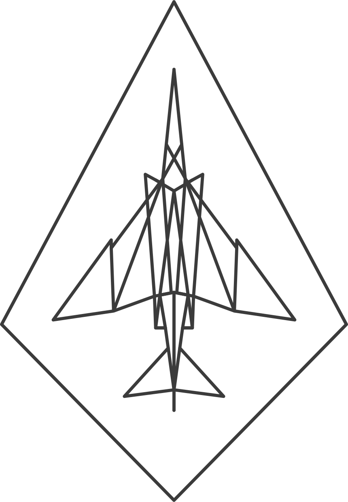Contents
- Introduction
- Cockpit Overview
- Systems Overview
- Weapons & Stores
- Jester
- Crew Chief
- Normal Procedures
- Emergency Procedures
- DCS
- Abbreviations
- Imprint
This document is available online, as PDF version, embedded in-game as offline website and can be contributed to as open-source project at GitHub.
🚧 The manual is a work in progress and will continue to be expanded and improved until the Phantom releases for early access this Winter. Access to the open-source repository on GitHub and the PDF version will be made available later.
Introduction
Dear Reader,
we are proud to present to you the Heatblur Simulations F-4E Phantom II for Digital Combat Simulator. We’ve spent years of development and countless hours of research to bring you the most in-depth recreation of this legendary aircraft ever made. You will be able to fly your Phantom both as a pilot and WSO, alone with the JESTER-AI - your own WSO AI - or in multiplayer together with a friend.
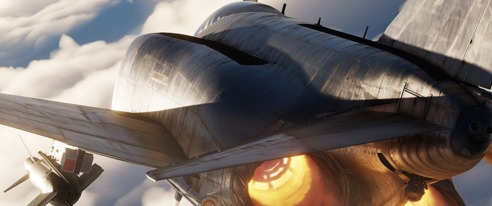
But not only did we recreate the Phantom’s flight model, systems, avionics, radar, RWR and weapons delivery faithfully, we also tried to innovate our approach to flight simulation in general with the module, laying important groundwork for our future modules and as always trying to push the boundaries of flight simulation just a little bit further. From small quality of life improvements like being able to write on your canopy, to an interactive crew chief, our Phantom also utilizes our next-gen components based simulation framework - the aircraft is simulated as a connection of thousands of individual components. From an instrument needle to control surfaces, each component influences the state of the aircraft and even comes with its own wear and tear. From simulating accurate power draw from the power source to the smallest light bulb and all the nodes along the way, from hydraulic fluid which moves the hydraulics which in turn move the flight surfaces all the way to a mass physics based model - things now happen naturally, influenced by each other, and not scripted anymore. Whether that means that unstable power draw may cause a lamp to flicker, or that you can deploy your landing gear in case of a failure using gravity, or that correct and incorrect use of the aircraft influences the wear and tear of each single component individually - we never before attempted a simulation as deep as with the F-4E Phantom II. The DCS: F-4 represents some of the most immersive cold war fighter jet simulation available!

Such innovation and in depth simulation will present an increased learning curve for users. This is why it was important for us to also innovate on the side of learning tools available to you, starting with this manual, so that our modules are accessible to the casual simmer and aficionado alike. You can open the manual in flight, and read along, but better still, you can click any switch (with an input combo) in flight and the manual will open in the correct chapter, explaining the switch or system in the cockpit, all while you are bolting through the air in your thunderous jet. We also changed the underlying structure of the manual to move to an open source model. This will allow the community to easily contribute via GitHub, as two heads (or thousands of them) think better than one. As an added benefit, readability for the mobile version will be greatly improved as well. We have hyperlinked many items for you, providing easy navigation between cockpit diagrams and system overviews. Also featured in the manual are numerous checklists and procedures, and a "Lessons" section, which is planned to be featured with the Early Access Release of the Phantom. The fully written out lessons will complement the flyable training missions. The training missions are now tailored to be learned together with the written lesson in the manual, you will be able to revert steps in the training mission, able to read along and pause (no more restarting for missed items). With all of these features at your disposal, you will be able to adequately prepare yourself for your training. And best of all, during your training you will be instructed by real life F-4 pilots and a real life F-4 WSO Instructor! Who else could teach you better?
We hope you will enjoy both learning and flying the F-4E Phantom II - dive as deep as your heart desires. For this exciting journey we wish you good luck and many fun adventures, and of course: always check six!
In the name of the entire Heatblur Team,
Nicholas Dackard, Heatblur Simulations, CEO and Founder
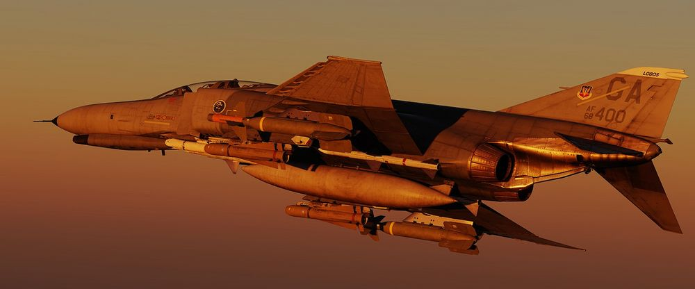
Definitions
Should an acronym, such as DSCG be unclear at any point, look it up in the exhaustive list provided at the Abbreviations chapter.
The following symbology is used throughout this manual.
General
| Symbol | Meaning | Description |
|---|---|---|
| 💡 | Note | Item that is given special emphasize |
| 🟡 | Caution | Should be followed to prevent damage to equipment |
| 🔴 | Warning | Ignoring might lead to personal injury or loss of life |
| 🚧 | Under Construction | A section is work in progress and will be improved still |
Checklists
| Symbol | Description |
|---|---|
| Bold | Step is necessary to be performed OR it's a bold face procedure (crewmembers should be able to accomplish bold face procedures without reference to the checklist) |
| 🔧 | Step involves or may involve crew chief interaction |
| ⚡ | Step cannot be performed when battery start is made, external power is necessary |
Historical Background
1953-1958: Development Phase (F3H to AH-1 and F4H)
 (Mockup of the F-4 with AIM-7 Missiles)
(Mockup of the F-4 with AIM-7 Missiles)
The developmental onset of the F-4 Phantom II began in the aftermath of McDonnell's loss in the US Navy's 1953 Day Fighter Competition - the victor of which was the Vought F8U. Choosing not to rest on failure, McDonnell representatives canvased the Navy Bureau of Aeronautics, a number of operational commands, the office of the Chief of Naval Operations, and any pilot or maintainer willing to discuss the state of current naval aviation.
After nearly a year of analysis and design work - including a full scale mockup, the design of what they would classify as a general fighter took shape. The potential of a general fighter aircraft, rather than the specialized focus preferred by the Navy at the time, was rooted in the success of the F3H-1 Demon in threading of that very needle.
F3H-1 Demon
The Demon had been built as design in opposition of the F4D Skyray in the interceptor role. As the Skyray proved its supersonic superiority during the development cycle, McDonnell expanded the F3H Demon's capabilities to include respectable air to ground armament to justify its place in the limited carrier compliment when compared to the F10F Jaguar and F7U Cutlass, which were also undergoing development at the time.
Ultimately outfitted with the AIM-9 Sidewinder and AIM-7 Sparrow - the latter giving the F3H a beyond visual range capability the Skyray could never boast, and topping out with the ability to carry and deliver 6,000 lbs of air to ground ordnance, the Demon out-measured its competitors in combat potential, even when it came in second on paper for raw performance.
Beginning with the intention to grow out the Demon as the baseline airframe, a set of engineering evaluations were performed including both single and twin engine configurations with different wings. The two most promising data sets- twin-engine builds of the type designated the F3H-G and F3H-H powered the General Electric J65 and J79 respectively, replaced the original Demon wing with a 45 degree swept wing.
Particular focus was paid towards making the new aircraft multi-mission capable, running a wide gamut of potential operations: day or all-weather attack, photo recon, day or all-weather interception with a Sparrow-compatible radar, electronic warfare, and a two seat strike coordination configuration. Experimentation with this wide-ranging design intent went so far as to include a novel interchangeable nose and cockpit arrangement, allowing airframes to be reconfigured within a matter of hours for a given mission set with the necessary systems fit for the crew.
While the Navy showed little interest in the nose replacement capability, the bottom line numbers from the F3H-G and -H investigations got their attention. On paper, they were capable of reaching Mach 1.52, and an eye-watering Mach 1.97 at 35,000 feet, respectively.
By October of 1954, Navy Bureau of Aeronautics (BuAer) had evaluated similar unsolicited proposals from Grumman, Douglas, and North American, and provided McDonnell with a $38 million dollar contract for two flying examples of the Demon follow on - internally designated as the AH-1.
 (McDonnell F3H-G mockup; US Navy
photo)
(McDonnell F3H-G mockup; US Navy
photo)
AH-1
Two months later, the Navy threw McDonnell a curveball, directing the type to be stripped of the air to ground fitment, and focusing on the all-weather interceptor role in a single seat configuration, with the finalization for this change in role being formally announced in April of 1955.
The changeover was, in some quarters, considered catastrophic - over time forcing the removal of the planned internal gun, and stripping all of the hard-points, save for the recessed Sparrow fuselage wells and a centerline tank position. At this point, the determination of the J79 as the power plant was finalized with the Navy's desire for a Mach 2 interceptor. Further, the determination of a two-man crew as also put in place by the Navy - like McDonnell's own research, success in the faster, longer ranged interception environment showed the utility of a second man to handle the scope.
However, it wasn't a done deal. BuAero had been keeping conversation with Vought at the same time, and in mid-1955 detailed a fly-off between the two competing firms for the new interceptor role; this time pitting McDonnell's AH-1 contender with an outgrowth of the already in-service Crusader: the F8U-3.
F4H (F-4A)
Redesignated the F4H (or also F-4A) in the intervening two and a half years leading into the late 1958 fly-off, McDonnell's Phantom II would trade substantial blows with Vought's Crusader III during the Navy Preliminary Evaluation. Whereas McDonnell's design entered the flight testing phase a month prior (and nominally entered engineering almost a year ahead of Vought's entry), the benefits of Vought carrying over much of the prior Crusader's aerodynamic profile appeared early in the comparison. The Crusader III was first to reach Mach 2 in flight testing, shown capable of reaching higher top speeds during the Navy preliminary evaluation, and noted for having more refined airframe handling in most regimes.
 (F-4H aboard the USS Independence in 1960; US Navy photo)
(F-4H aboard the USS Independence in 1960; US Navy photo)
But as the Evaluation continued, it was found that McDonnell's Phantom II countered the Crusader III where it mattered: in combat capability. The Navy wanted a Mach 2 interceptor, not an overgrown daylight fighter.
The F8U-3's integration of the Sparrow was found lacking versus that of the Phantom, having surrendered an AIM-7 against the F4H due to aerodynamic performance concerns. Of even greater concern for the interceptor role - as McDonnell had previously found internally, the pilot overhead to manage the AN/APG-74 radar installation in the Crusader III while in combat was found to be too high to maintain effectiveness, whereas the back-seater in the Phantom II could reliably acquire situational awareness on the radar and maintain track locks for engagement while maneuvering.
McDonnell's F4H, while having more raw flying qualities, could fight as the Navy needed it to. Further, as the firm had continued developing its air to ground potential at the request of the Navy, even as they repeatedly altered the program goals - the Phantom II, like the Demon before it, justified its existence in the carrier compliment in all fights, not just the long range interception role. And so on December 17th, 1958, the Navy Preliminary Evaluation board announced its findings and the winner of the fly-off: McDonnell's Phantom II.
1958-1963: A Navy Interceptor with Multi-role Pedigree (F4H to F-110 and F-4)
The US Air Force was not oblivious to the Phantom II's development, as the Navy having asked for the air to ground capability be revisited gave McDonnell a point of entry. While the Air Force entertained McDonnell representatives in discussion about a new ground attack airframe, the service actually had interest in the Sparrow-dealing F4H as a replacement for the F-106.
The Air Defense Command requested an evaluation in 1961 known as Project High Speed, which once again proved the Phantom II superior to a challenger in the interceptor role. In light of the findings, Navy offered a bombing demonstration for Air Force representatives of the Tactical Air Command, making special note of the successful air to ground trials with the Phantom's multiple ejector racks - a capability the USAF lacked. With Air Force policymakers, members of Congress, and even General Curtis LeMay in attendance during this demonstration series - with a VX-5 F4H-1 accurately delivering twenty-two 500 lb bombs in spectacular fashion, the stage was set for a Navy/McDonnell tactical aviation coup.
 F-4E Phantom II
of the 347th Tactical Fighter Wing airdropping six 500-lb Mark 82s
F-4E Phantom II
of the 347th Tactical Fighter Wing airdropping six 500-lb Mark 82s
The inauguration of the Kennedy administration in January 1961 didn't hurt matters; Kennedy brought in former Ford Motor Company president Robert McNamara as Secretary of Defense. With an eye for optimization - sometimes to a fault, the performance of McDonnell's F4H was seen as a standout to capitalize upon in light of the administration's new conventional doctrine of "Flexible Response"; no longer would nuclear deterrence be the primary backstop of the US' promise to NATO.
While McNamara desired for the Navy's A-7 and the Air Force's F-111 to fulfill tactical bombing roles for both services, the two airframes were at least five years out to operational capability; the Phantom existed, provided outstanding performance immediately, and could quickly raise the desired 50% increase in conventional force structure the White House expected for the Air Force. Pressure from all sides - the White House, Congress, McDonnell, and foreign interest, ultimately defeated the USAF's resistance to an airframe "not made here", and by January 1962 the USAF's budget had Phantoms on order from the Tactical Air Command; the Air Defense Command, which had started the Air Force's investigation into the Phantom, would be left with the F-106.
F-110 Spectre
Designated for a time as the F-110 to fit in with the Air Force's Century Series as a matter of service pride, McDonnell's Air Force Phantom went into motion. An initial delivery of Navy-configured F4Hs were provided for training and evaluation later that year, with the first flight of a true F-4C taking place on May 27th, 1963 - the universal service designation system converting the F4H-1 to the F-4B in September of 1962.
F-4B and -C
Reconfiguration of the Phantom II for the USAF was expedient, with the focus being on service-compliant alterations. These included altering of the landing gear system for higher speed field operations, the addition of dual flight controls, an anti-skid implementation, and conversion to boom refueling compatibility.
Further changes included the addition of the LN-12 inertial navigation system, conversion to the APQ-100 radar with air to ground specific functionality, and a cartridge starting system for field use without a compressed air cart in combination with an internal battery.
This F-4C configuration would be the first Phantom used during the USAF's involvement in Vietnam, beginning in December of 1964.
1965-1974: Backtracking with Haste - Vietnam (F-4D and F-4E)
 (F-4B dropping bombs over Vietnam; US Navy Photo)
(F-4B dropping bombs over Vietnam; US Navy Photo)
The Phantom's initial deployments to Southeast Asia delivered a number of firsts - the first officially confirmed MiG-17 kill with the AIM-9 Sidewinder (on July 10th, 1965), and the first US air-to-air shootdown of a MiG-21 (April 26th, 1966). Unfortunately, the Phantom was also the victim of the first US loss to a SAM in Vietnam (July 24th, 1965), and the first US air-to-air loss from a MiG-21 (October 5th, 1966).
With the initial teething problems of the type out of the way - including alterations to the wing fuel cells and internal wiring, the Phantom was found to be a capable, reliable airframe for the Air Force. Even the missing gun had been worked around to some degree, with the integration of the SUU-16 and SUU-23 external cannon pods.
F-4D
The in-production upgrade to the Air Force's first Phantom - the F-4D, would include a multitude of quality of life improvements: the APQ-109 radar with air to ground modes, the ASN-63 internal navigation system, the ASQ-92 release computer, and the APX-80 "Combat Tree" IFF system. Further additions would include automatic fuel transfer and a new sight, the ASG-22. Combat survivability would be reinforced with the APS-107 RHAW and ECM pod compatibility, along with new ejection seats. Yet, the service's desire to put its own "made here" flourish on the type continued, inauspiciously culminating in the integration of the AIM-4 Falcon with the F-4D model.
AIM-9 vs AIM-4
Used on the F-102 Delta Dagger and F-106 Delta Dart, and considered by some to be a reasonable competitor to the AIM-9 Sidewinder, Air Force leadership believed the AIM-4 Falcon could be installed in replacement of the Navy's short range round with no loss of capability; this was quickly found to be a mistaken premise.
While the AIM-9B had limited maneuvering restrictions for launch and acquisition like other short range infrared missiles of its generation, it was substantially more reliable in use; the Falcon's cooling implementation could only maintain the required seeker temperature for a short time once activated, and could not be turned back on once the cooler timed out, while the un-cooled 9B could remain available indefinitely.
Sidewinder acquired far more rapidly - in many instances in less than two seconds, versus the six to seven seconds required for the Falcon.
Worse still, the AIM-4 was a hittile - its fin-contact triggered fuzing required direct target impact for the missile's warhead to detonate, whereas the AIM-9 carried a proximity fuze; any Sidewinder that got close to its target was a threat to kill.
 (F-4D of the 435th
TFS over Vietnam)
(F-4D of the 435th
TFS over Vietnam)
With initial F-4D deliveries to the 8th TFW in May of 1967, the performance of the new configuration was quickly met with derision. The employment envelope was too small compared to the Sidewinder, the lead time too long, and the weapon far too unreliable to put into practice in the dynamic maneuvering environment of air combat as it was waged in Southeast Asia.
The failure of the Falcon to succeed not only served to reaffirm the quality of the Sidewinder in comparison - and also highlighting the need for the service to upgrade the round as the Navy was doing, but reinforced the concern held by aircrews about the lack of an internal gun. SUU installations by this point had scored multiple victories over North Vietnamese MiGs (ultimately ending the war with 9 confirmed kills), and it was decided to rectify what many had considered the Phantom's original sin with further revision to the F-4.
F-4E
By this time McDonnell was laying down the program update plan for the F-4E, and the jet was intended to carry the M61A1 gun internally, and with it - the Hughes CORDS (Coherent On Receive Doppler System) radar. Hughes was unable to successfully deliver their CORDS system, and the Westinghouse APQ-120 radar would be selected in January 1968 as its replacement. The APQ-120 was a full solid state conversion of the APQ-109/117, re-engineered to meet the requirements of the internal cannon installation. The radar would receive changes to its mount, additional dampening, and a reduction antenna's height to fit in the smaller cavity directly above the cannon barrel assembly.
Further adjustments to the F-4E were made to improve the Phantom's lethality. Hardware deleted for Sidewinder compatibility in the F-4D was updated and returned. The ASG-26A Lead Computing Optical Sighting System was installed along with updated aircrew in-range and shoot warning cues, providing pilots with a clearer picture of the weapons envelopes of the Sparrow and Sidewinder. The updates to the Echo Phantom would not stop there; compatibility with multi-ejection racks and updates to the Weapon Release Computer to match provided further bombing capabilities, the AGM-65 Maverick was made available in both IR and electro-optical variants, the leading edge of the wings were fitted with slats for increased maneuvering potential, and the Digital Scan Converter Group interface for the APQ-120 was installed.
Unfortunately, the F-4E's initial deliveries from October of 1967 would align its operational entry with the drawdown of the US' Rolling Thunder bombing campaign over North Vietnam. The type would have to wait until 1972 to put the true extent of the jet's upgrades to the test. With the resumption of the air campaign in February of that year, the E-model Phantom II would fly thousands of missions, and in the span of seventeen months score 21 air to air kills.
Training Program Rivet Haste
Also of note was Rivet Haste - a late Vietnam training initiative in 1972 heavily influenced by two midlife updates - modification "556" and TISEO.
Prior to "556", weapons mode changes required the pilot to go hands off the throttle and look down to the release panel, cycling a number of switches to disarm various pylons and arm others; in the event of a lucky North Vietnamese bounce, or the need to swap between weapons on the fly - looking away from the threat was time-consuming and dangerous.
With the modification, a pair of override switches were added to the outboard throttle grip. The first, the "pinky" switch, placed control of the gun, Sidewinder, and Sparrow in one of three positions, while the second, on the forward face of the grip, switched weapons modes immediately between air-to-air and air to ground; the pilot would now have immediate access to his air-to-air weapons, and could swap them on the fly - never once looking down in the cockpit. This modification gave birth to the concept called HOTAS - hands on throttle and stick.
556 also included modifications to the armament panel for air to ground munitions, adding ripple release capability while reducing the number of controls required to access full ARBCS programming.
TISEO Upgrade
Further reinforcement of crew initiative was the installation of TISEO - the Target Identification System Electro-Optical, in 1974.
 An F-4E Phantom II
with a TISEO mounted on left wing above the blue practice bombs
An F-4E Phantom II
with a TISEO mounted on left wing above the blue practice bombs
Consisting of a 4x/10x camera installed in the left wing, TISEO provided visual identification of distant, radar-locked targets, enabling the AIM-7 Sparrow to be used to its full extent when combined with the APX-80 IFF system. Crews could now independently confirm two ID factors before the merge, entering the fight with more of an advantage - even if they would not be cleared to fire beyond visual range.
Coupled with the Rivet Haste training - which put experienced aircrews through a program to codify them as systems and tactics instructors (not unlike the NFWS education being given to USN crews at the same time), the students championed the modification program of the Phantom, and pushed for Double Attack (a parallel development of Loose Deuce as had been used by the Navy in Vietnam since the resumption of the bombing campaign) to become the standard for air-to-air methodology across the Air Force.
While this training was ultimately too late to have real effect, with the final halt on US bombing coming just weeks after the first Haste student crews returned to Vietnam, they would set the tone for USAF Phantom crews going forward.
1975-1991: A Cold Warrior
As the Vietnam War drew to a close, the F-4E transitioned from active combatant to cold warrior. While the F-15 and F-16 both stood on the horizon to take the premiere positions in tactical air to air and air to ground roles, the sheer depth of the Phantom's numbers across the USAF and its allies meant the F-4E would remain at the tip of the spear for another two decades.
Keeping the F-4 effective as a strike platform and air to air combatant was vital, and the E's capabilities continued to be expanded into the 1980s. Provision for the all-aspect AIM-9L and M Sidewinders would be installed, as well as the improved AIM-7F, and later, the AIM-7M Sparrow. The television-guided GBU-15, with its required data-link system, would be integrated in the Phantom beginning in 1975. To deliver additional guided munitions the F-4E would receive not one, but two targeting pod options - Pave Spike and Pave Tack.
Of particular note is the installation of the Digital Modular Avionics System, or DMAS. DMAS was a complete replacement of the Phantom's navigation computer, inertial navigation set, and the WRCS, which used LORAN (Long Range Navigation) radio signals to accurately define the aircraft's position anywhere in the world. The inclusion of DMAS provided a substantial improvement in the F-4E's navigation options and weapon release precision, and an expansion of the Phantom's delivery mode capabilities.
The F-4E would see its front line service end in the United States Air Force immediately following Operation Desert Storm, with the last remaining users of the type withdrawn from active duty service. US Air National Guard units would maintain the type until the mid-90s, with various units seeing them replaced by other types as appropriate for their respective missions and locations.
The F-4E Phantom II Today
Of all Phantom models, the F-4E was the most numerous version that has been built totalling at 1370 units.
The F-4E Phantom II is still in service at some operators across NATO including the Hellenic Air Force, the South Korean Air Force and the Turkish Air Force.
They are expected to fly at least until 2030.
Variant Overview
Beyond the F-4E, several Phantom variants have been build for various purposes.
| Variant | Description | Base Variant | First Flight |
|---|---|---|---|
| A | Prototype and pre-production model | 1958 | |
| B | First production ready model for the US Navy | A | 1961 |
| C | Several improvements for more effective use by the USAF | B | 1963 |
| D | Modernization and improved air to ground capabilities | C | 1965 |
| E | Further improvements, better radar and nose gun | D | 1965 |
| F | Slimmed down export variation used by Germany | E | 1973 |
| G | Wild Weasel upgrade to locate and fight SAM systems | E | 1976 |
| J | US Navy variation for carrier operation | B | 1966 |
| K | Royal Navy variation with a different engine | J | 1966 |
| M | Royal Air Force variation with a different engine | J | 1966 |
| N | Modernized systems and structural improvements | B | 1970 |
| S | Modernized systems and smoke-free engines | J | 1977 |
| RF | Several Phantom variants modified for reconnaissance | B, C, E | |
| QF-4 | Retrofitted as remote-controlled target drones for research | many |
Foreign Service: The Legacy of a Phantom
The F-4's legacy did not stop at the US border. Its performance made it of interest to many US allies of its era, and the Phantom II remains in limited service as of this writing. With the F-4E being the most numerous of the type, it was natural it would be the model with the furthest reach.
Amidst the ever-evolving landscape of military technology, foreign operators of the F-4E undertook comprehensive upgrades and modernization efforts. These initiatives were aimed at extending the aircraft's service life and enhancing its combat capabilities. The F-4E, with its powerful engines, evolved to meet the demands of contemporary warfare, solidifying its place as a venerable platform in the arsenals of its adoptive nations.
The F-4E Phantom II's foreign service was not merely a chapter in the history of military aviation but a saga that unfolded across continents and through the corridors of geopolitical power. Its adaptability, longevity, and combat prowess etched the Phantom into the collective memory of the nations that flew it, leaving an enduring legacy in the skies it once dominated.
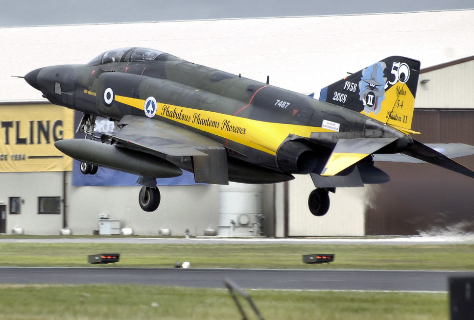 (Hellenic Air Force RF-4E Phantom II lands at RIAT 2008, UK)
Israel
The first nation to receive the F-4E on export, Israel, designated it Kurnass (Sledgehammer).
Phantom would see combat with the IAF within months of delivery, seeing multiple kills in the war of attrition against Egypt and skirmishes with Syria. The 1973 Yom Kippur War would see the Phantom acquit itself spectacularly, downing 85 Arab aircraft in exchange for 5 lost in air combat. But it was the Phantoms performance as an air to ground asset that would draw the most focus from the IAF, seeing the F-4E specializing in that role as the F-15 and F-16 were made available to the nation for export purchase.
The Kurnass would ultimately receive a number of vital upgrades to keep the type viable beginning in 1987, with the installation of the APG-76 radar, a new mission computer and HUD, and the ability to deliver the Popeye air to surface missile. The IAF would ultimately receive between 212 and 222 F-4Es.
Australia
Australia would be the second import customer for the F-4E, but only on a limited time basis. Twenty-four F-4Es were provided to the RAAF on a lease basis by the United States as a stopgap measure due to delays in deliveries of the F-111C.
The F-4E would operate in Australian service for just three years, beginning in September of 1970 to 1973. Australian aircrews were impressed with the Phantom's performance for their needs, and while the US offered to let the RAAF buy the leased airframes outright, this offer was ultimately rejected.
Japan
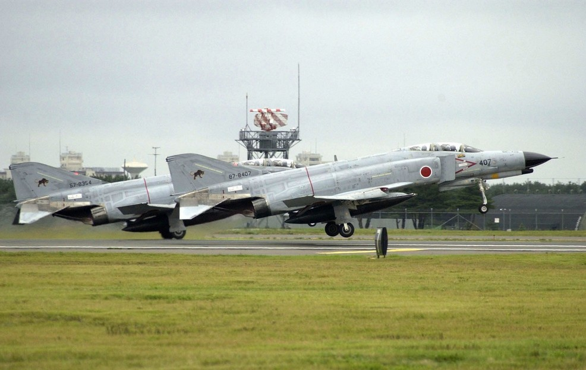 (F-4EJ Kais of the JASDF of the 8th Hikōtai taking off in 2002, US Navy Photo)
With permission of the US State Department and license terms with McDonnell Douglas, Mitsubishi Heavy Industries would build the F-4E locally, designated as the F-4EJ. The -4EJ would be provided compatibility with Japanese built weapons, but the omission of the refueling probe and AJB-7 bombing computer due to treaty restrictions on the JASDF.
The -4EJ was updated as the 'Kai' in 1984, receiving the APG-66J radar and ASM-1 and - 2 anti-shipping missiles. The F-4EJ would serve Japan over 40 years, with the final examples being withdrawn in March of 2021.
Iran
First receiving the F-4E in 1971, the IIAF received 177 F-4Es through various delivered batches into the late 1970s. In the aftermath of the Iranian Revolution, now-IRIAF F-4Es saw extensive use - and numerous successes, against the forces of Saddam Hussein.
The first raid on the Osirak Nuclear Plant in September of 1980 was performed by four F-4Es, damaging the reactor and control facilities; this raid preempted the more famous IAF attack on the same facility that destroyed it permanently. In like fashion, April of 1981 saw F-4E's as the primary strike aircraft during the raid on all three airfields of the H-3 complex in western Iraq.
The conflict with Iraq came at substantial cost to both airframes and crews, with western weapons embargoes severely limiting the ability of the IRIAF to maintain the Phantom II effectively. By the end of the war, even local estimates put the available number of flyable F-4s below four dozen. While local industry attempted to revitalize the Phantom in the aftermath of the conflict, current evaluations put their total F-4 force near 60, between their remaining F-4D, F-4E, and RF-4Es.
Greece
The Hellenic Air Force's initial F-4E deliveries began in 1974, with annual deliveries stopped due to politics in 1981. The HAF's combined Phantom II force topped out at 121 airframes purchased (F-4E and RF-4E), with reinforcement stocks of former USAF jets bringing that number to is final value in the post-Desert Storm drawdown.
Upgrades by DASA to Greek Phantoms has been extensive, and was built around a similar model to the Lutfwaffe's F-4F ICE. Most notably, the HAF F-4E has received the APG-65 for AMRAAM (including a replacement digital BUS), HUD, and LITENING pod compatibility.
The HAF Phantoms have also received specific upgrades based on their intended squadron roles, with inertial navigation replacement and GPS inclusion for those specializing in the air to surface role. Greece currently retains over 30 Phantoms on active duty.
Turkey
Turkey's Phantom service has been extensive, with over 160 F-4Es procured (along with an additional 60+ RF-4Es), beginning in 1974. Deliveries of Phantoms have been both new build and former USAF, and in the mid-90s, Israeli Aerospace Industries (IAI) was tapped to bring them into the next century.
Based around a proposed upgrade program for the IAF, the F-4E Terminator 2020 deleted over 1600 lbs of excess weight from the aircraft by wiring and hydraulic system replacements, integrated the Elta M-2032 radar, a full HOTAS implementation, MFDs, a true HUD, and extensive weapons systems updates, Popeye and GBU integration, as well as the LITENING II targeting pod. The Turkish Air Force intends to maintain the remaining 30 or so airframes in service until the mid-2030s.
Germany
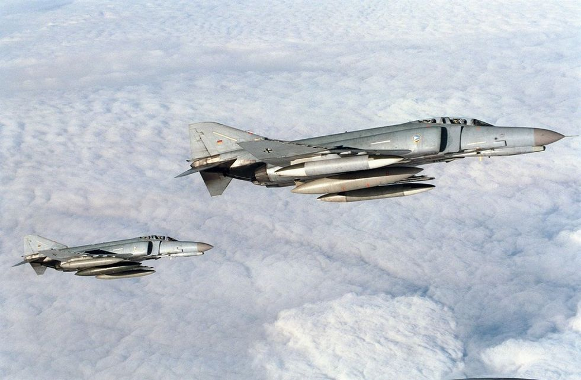 (F-4Fs of the German Air Force in 1998, USAF Photo)
Primarily an F-4F and RF-4E customer - the largest F-4 export recipient with 263 delivered overseas, Germany would purchase 10 F-4Es to be based in the United States for the type conversion of their aircrews training alongside USAF units.
South Korea
 A korean air force crew chief helps a 497th tactical fighter squadron pilot
into the cockpit of his F-4E during Exercise TEAM SPIRIT 1986
A korean air force crew chief helps a 497th tactical fighter squadron pilot
into the cockpit of his F-4E during Exercise TEAM SPIRIT 1986
A long time F-4 recipient, South Korea supplanted its force of F-4Ds with brand new F-4Es beginning in 1977, ultimately purchasing a total of 103.
South Korea was the recipient of the final US built F-4 Phantom, 78-0744, in October of 1979. As of this writing, the RoKAF retains the F-4E in service, with the intention of withdrawing it in 2024.
Egypt
The final F-4E export customer, Egypt, received purchasing rights through its peace treaty with Israel and the Peace Pharaoh agreement; rather than new build airframes, Egypt received 35 former USAF aircraft.
The Phantom was ultimately a precursor towards the nation's purchase of the F-16, and went through initial difficulties in servicing by their maintenance crews. McDonnell Douglas advisors aided the Egyptian squadrons to get their operational ready rates back up to standard, and the Phantom II went on to serve the EAF into the late 90s.
F-4E Air to Air Kills
The F-4E Phantom II, an upgraded version of the F-4 Phantom series, played a significant role in air-to-air combat during the Vietnam War. Equipped with the AIM-7 Sparrow missile, a radar-guided weapon with beyond-visual-range capabilities, the F-4E had a notable advantage in engagements.
In Vietnam, F-4E pilots engaged in dogfights against various enemy aircraft. The Sparrow missile allowed them to target adversaries from a distance, contributing to the aircraft's success. Key USAF pilots, such as Steve Ritchie and Chuck DeBellevue, achieved ace status by securing five or more air-to-air victories.
The total number of air-to-air kills attributed to the F-4E Phantom II, combining both the USAF and USN, is estimated to be around 21 during the Vietnam War, including 4 MiG-19s and 17 MiG-21s. However, this figure may vary across sources. In total, F-4C/D/E Variants shot down 107 MiG jets, rewarding it the nickname "Biggest distributor of MiG parts".
Despite its effectiveness, the F-4E faced challenges in close-quarters combat due to the initial absence of an internal cannon. Modifications, including the addition of an M61 Vulcan cannon, addressed this limitation and improved the aircraft's performance in close-range engagements.
The success of the F-4E Phantom II in Vietnam solidified its reputation as a versatile and formidable fighter, and it continued to serve in air forces worldwide for many years.
 a Marine F-4
Phantom II from Marine Fighter/Attack Squadron 314 firing an AIM-7 Missile
a Marine F-4
Phantom II from Marine Fighter/Attack Squadron 314 firing an AIM-7 Missile
USAF
In detail, the USAF confirmed 21 kills.
| Kills | Aircraft |
|---|---|
| 17 | MiG-21 |
| 4 | MiG-19 |
Scored with the following weapons:
| Kills | Weapon |
|---|---|
| 10 | AIM-7 |
| 5 | AIM-9 |
| 5 | Gun |
| 1 | Maneuver |
IAF
In combat, the Israeli Air Force downed 116 jets.
| Kills | Aircraft |
|---|---|
| 81 | MiG-21 |
| 14 | MiG-17 |
| 14 | Mi-8 |
| 5 | Su-7 |
| 1 | AS-5 |
| 1 | IL-28 |
Scored with the following weapons:
| Kills | Weapon |
|---|---|
| 44 | AIM-9 |
| 33 | Gun |
| 32 | Maneuver or Unspecified |
| 7 | AIM-7 |
IRIAF
The IRIAF shot down 83 aircraft.
| Kills | Aircraft |
|---|---|
| 29 | MiG-21 |
| 21 | MiG-23 |
| 19 | Su-20/22 |
| 2 | An-24 |
| 2 | Mi-25 |
| 2 | Mirage F1 |
| 1 | Hunter |
| 1 | Tu-22 |
| 1 | Mirage 5 |
| 1 | Bell 412 |
| 1 | SA 321 |
| 1 | Unidentified |
Scored with the following weapons:
| Kills | Weapon |
|---|---|
| 46 | AIM-9 |
| 22 | Maneuver or Unspecified |
| 9 | Gun |
| 6 | AIM-7 |
F-4E First Flights by Nation
The F-4 was used widely by several NATO and allied countries. Because of that it reached many first flight milestones in the various countries.
| Nation | McDonnell Number | BuNo/USAF Serial | Date |
|---|---|---|---|
| United States | 2234 | 66-284 | June 30th, 1967 |
| Israel | 3492 | 68-396 | May 26th, 1969 |
| Australia | 3847 | 69-0304 | June 26th, 1970 |
| Japan | 4037 | 69-7463 | January 14th, 1971 |
| Iran | 4093 | 69-7711 | March 2nd, 1971 |
| Greece | 4439 | 72-01500 | January 29th, 1974 |
| Turkey | 4525 | 73-01016 | June 17th, 1974 |
| Germany | 4946 | 75-00628 | May 5th, 1977 |
| South Korea | 4966 | 76-0493 | July 28th, 1977 |
 The crew of an F-4 Phantom II aircraft completes a post-flight inspection
The crew of an F-4 Phantom II aircraft completes a post-flight inspection
Technical Specifications: F-4E
| Item | Description |
|---|---|
| Wingspan | 38' 5" (11.7 meters) |
| Wingspan (Folded) | 27' 7" (8.4 meters) |
| Length | 63' (19.2 meters) |
| Height | 16' 5" (5 meters) |
| Wing Area | 530 sqft (49.2 m² ) |
| Wing Loading | 78 lb/sqft (380 kg/m² ) |
| Empty Weight | 30,328 lb (13,757 kg) |
| Maximum Takeoff Weight | 61,795 lb (28,030 kg) |
| Thrust (Dry) | 23,810 lbf (105.92 kN) |
| Thrust (Afterburner) | 35,690 lbf (158.76 kN) |
| Combat Ceiling | ~56,000' (~17,070 m) |
| Maximum Speed | Mach 2.23; 1,280 kn (2,370 km/h) |
| Range (Ferry) | 1,457 nmi (2,699 km) |
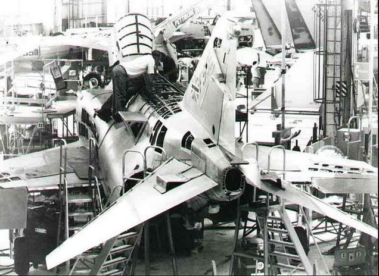
Cockpit Overview

Greetings, phabulous Crewmen! Get ready for an in-depth look into the cockpit of the F-4E Phantom II by Heatblur.
The following chapter gives a detailed overview of the Pilots cockpit, as well as the Weapons Systems Officer (WSO) Pit. Each single switch will be outlined and explained briefly, while and given context.
More in-depth details on the various systems and consequences of using a switch beyond their brief explanation are available in the 3. Systems Overview Chapter.
Pilot Cockpit Overview
The pilot cockpit is divided into a front section, containing all instruments and weapon controls, as well as the radar screen; the left console area with engine, control surfaces and navigation related settings; the pedestal group holding auxiliary information; and the right console area with communication and lighting controls.
Layout

| Section | Name |
|---|---|
| 1. | DSCG Controls |
| 2. | Overhead Indicators |
| 3. | Weapon Management |
| 4. | Flight Director Group |
| 5. | Right Main Panel |
| 6. | Left Sub-Panel |
| 7. | Left Console |
| 8. | Pedestal Group |
| 9. | Right Sub-Panel |
| 10. | Right Console |
| 11. | Stick and Seat |
DSCG Controls
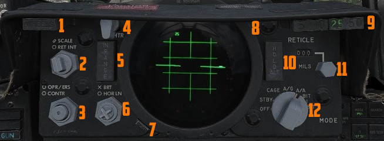
The Digital Scan Converter Group (DSCG) refers to the screen used to display radar data and video feed of TV weapons or targeting pods. The DSCG replaces the Direct View Storage Tube radar scopes which could not interact with the digital interfaces.
Reticle Intensity/Scale Knob
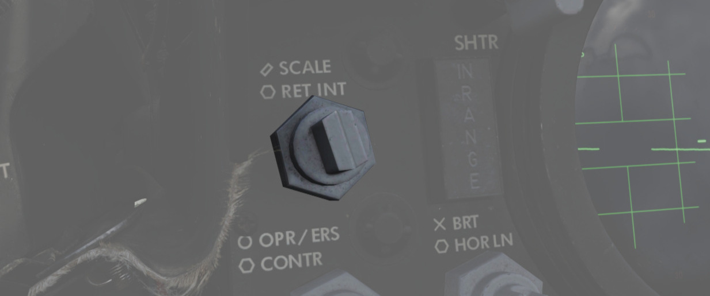
The reticle intensity/scale knob (
| Name | Description |
|---|---|
| RET INT | Controls the brightness of the gun reticle. |
| SCALE | Controls the light intensity of the range scale at the edges of the front radar scope. |
Sight Shutter Lever
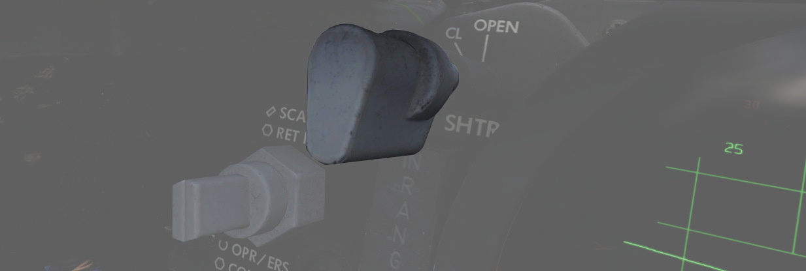
The lever (
Reticle Depression Knob
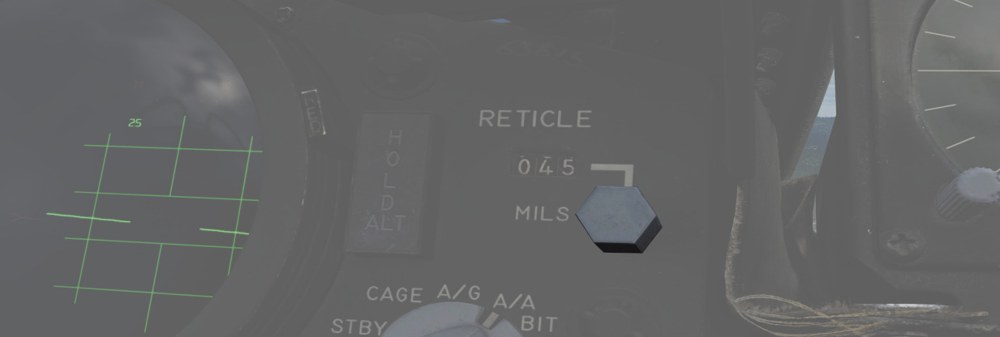
The reticle depression knob (
Sight Mode Knob
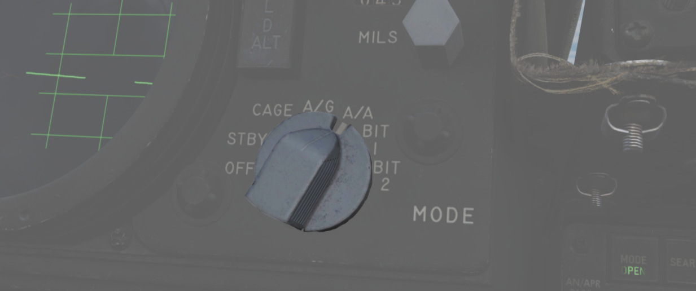
The rotary knob (
| Name | Description |
|---|---|
| OFF | Turns the system off. |
| STBY | Warms up the system. Reticle remains off. |
| CAGE | Reticle is displayed and caged at the radar boresight line (RBL). This is used for takeoff and landing. |
| A/G | Selects air to ground mode. Manual set depression is referenced from the fuselage reference line (FRL). |
| A/A | Selects air to air lead computing mode. Position is set by the gyro, range, and CADC, and can be caged. |
| BIT 1 | System self test mode 1. |
| BIT 2 | System self test mode 2. |
OPR ERS/Contrast Knob
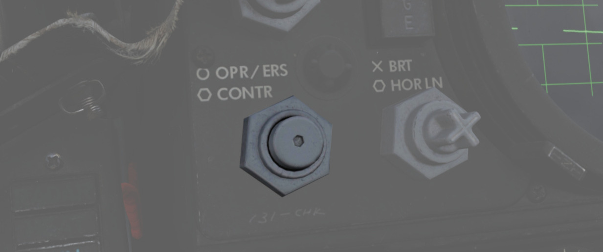
Two function (pushbutton inside of knob) control (
| Name | Description |
|---|---|
| OPR/ERS | Button activates or erases display in aircraft with DVST. No function with DSCG scope. |
| CONTR | Controls the displayed video/background contrast on the front scope. |
Brightness Knob/Horizon Line Knob
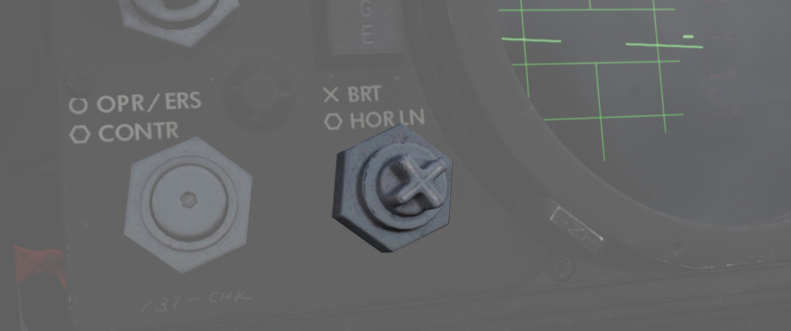
Dual knob control (
| Name | Description |
|---|---|
| BRT | Controls relative brightness of the front scope display. |
| HOR LN | Adjusts relative horizon line shown on radar scopes in both cockpits. |
INT Tab
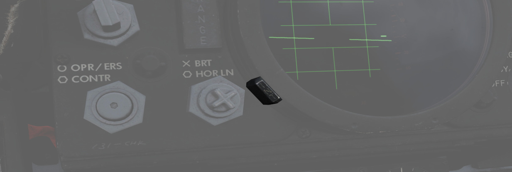
The INT tab (
Red Tab

The red tab (
In Range Light
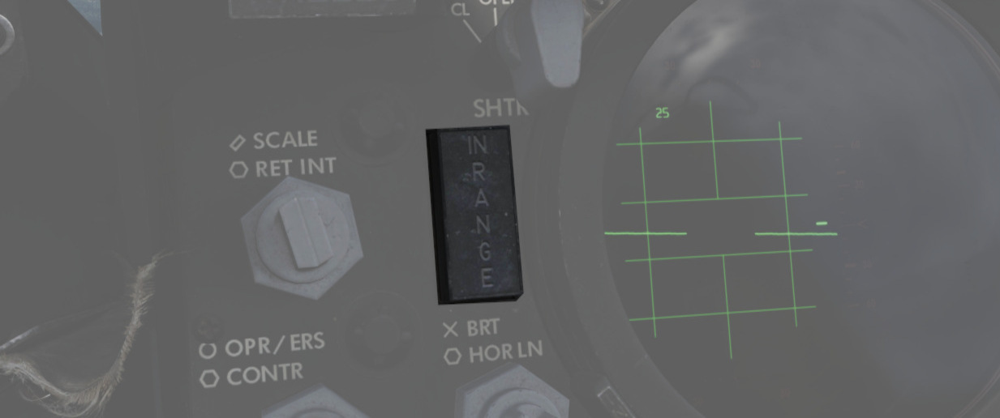
The IN RANGE light (
Hold Altitude Light

The HOLD ALT light (
- A range greater than the weapon can make,
- Altitude in excess than 32,000 feet, and
- The locked target is greater than 8,000 feet above the fighter.
When the HOLD ALT light is on, the fighter should be flown to center the steering dot relative to azimuth of the ASE circle. When the HOLD ALT light turns off, the fighter should then snap up in pitch to fully center the steering dot in the ASE circle. See the 3.10 Radar System for more.
Wheels Light

The WHEELS lamp (
Range Lights
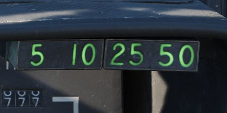
The Range Lights (
Overhead Indicators
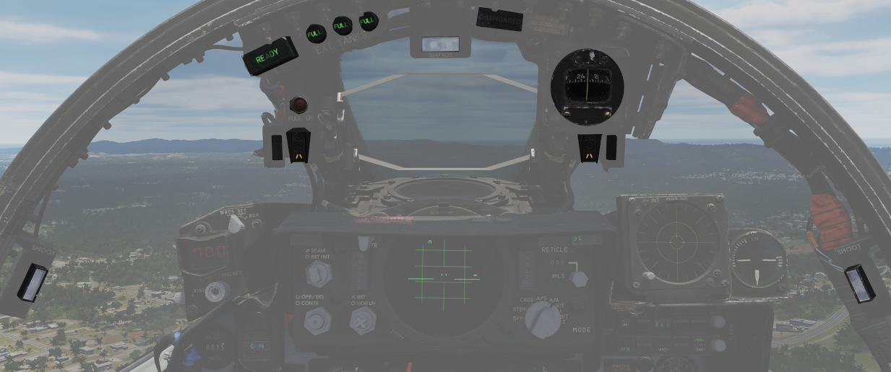
The overhead indicators offer information directly in the pilots view and aid in situations where the pilot is focused and looking outside, such as during combat, landing or refueling with a tanker.
SHOOT Lights
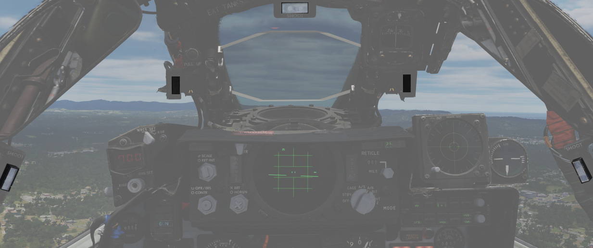
A group of 5 lights arranged around the canopy bow, illuminating when missile firing parameters are met. These lights do not illuminate when in visual intercept (VI) or Air-to-Ground modes.
Air Refueling Lights

Provide status of the Air Refueling System while in use.
| Name | Description |
|---|---|
| READY | Illuminates when air refuel receptacle is fully extended. Turns off when boom is locked or receptacle retracted. |
| DISENGAGED | Illuminates when boom disengages during cycle, and remains lit until refueling system is reset. |
| L.H. FULL | Indicates left hand external tank is full (also while refueling on ground). |
| CTR. FULL | Indicates centerline external tank is full (also while refueling on ground). |
| R.H. FULL | Indicates right hand external tank is full (also while refueling on ground). |
Labs Pull Up Light
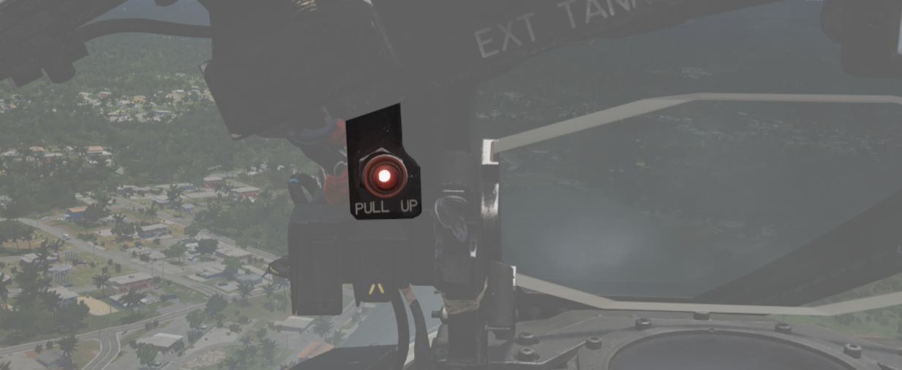
Illuminates and disengages during Loft and LABS bombing runs to provide timing sequence information to the pilot.
Standby Magnetic Compass

A standard magnetic compass for backup navigation assistance should the primary flight director systems fail. The compass should only be used in level flight. Compass deviation cards are found above the right canopy sill on each cockpit.
Angle of Attack Indexer Lights

A pair of indicators to the left and right of the HUD that provide quick confirmation of current aircraft AoA state based on illuminated position and color.

Can also indicate weapon steering cues and an aural tone system backs up the indication with audible cues. See 3.1.2 Flight Controls, Angle of Attack System section for details.
💡 The AoA Indexers are only lit with the right gear down.
Weapon Management
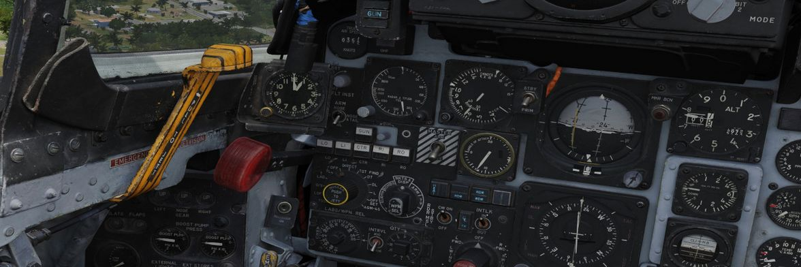
This group on the left area of the main panel provides all weapon related
settings, such as arming missiles or selecting the bomb delivery mode. It
features a true airspeed indicator (
Range Indicator
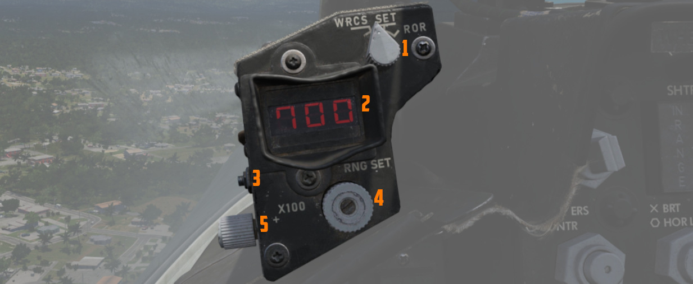
This panel provides the pilot with a readout of the slant range measured by the Pave Spike Targeting Pod (x100 ft).
When the Test-Button (
The Mode-Knob (
- WRCS - Automatic Delivery
- ROR - Release on Range
In the SET position, the display shows the desired release range used in the ROR
mode. The knob below the readout (
Head Up Display Indicators
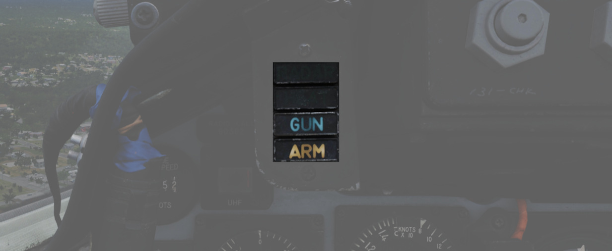
The Head Up Display indicator panel provides weapon status for the Master Arm control as well as the current selected air-to-air weapon based on the position of the pinky switch on the left throttle handle.
| Name | Description |
|---|---|
| RADAR | Illuminates when a radar-guided air to air missile is selected. |
| HEAT | Illuminates when an IR-guided air to air missile is selected. |
| GUN | Illuminates when the nose gun is selected. |
| ARM | Illuminates when the Master Arm switch is selected to ARM. |
UHF Remote Channel Indicator

Provides the current selected channel value when the radio is set to PRESET. Otherwise, the indicator displays M if the radio is set to Manual, G when the COMM function is set as GUARD/ADF, or A when the A-3-2-T switch is in A.
True Airspeed Indicator
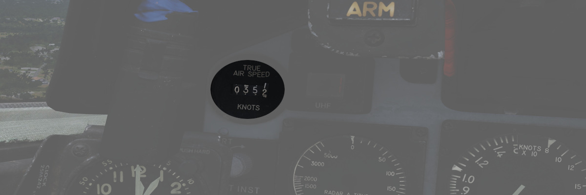
Provides the aircraft's true Airspeed in knots, and is calibrated from 150 to 1500 knots; airspeeds below this range are thus not reliable.
Flight Instrument Brightness Knob
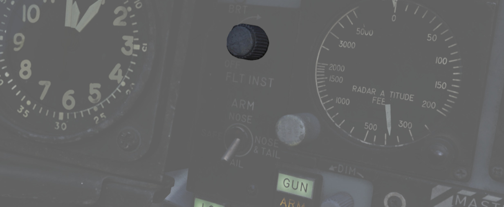
Controls edge lighting of the main flight instruments of both cockpits.
Rotating clockwise will increase their brightness, but at the same time also dim most warning and indication lamps in the aircraft.
💡 When dimmed, SHOOT lamps are turned off entirely.
Flight instrument lights can additionally be controlled individually with knobs on the Flight Instrument Lights Intensity Panel, located on the right wall.
See 3.9. Interior Lighting for details.
Nose/Tail Arming Switch

Controls the arming solenoids of the MER and TER racks, selecting what MER/TER position(s) arming lanyards are pulled from released bomb fuzes upon separation, thus making them live. This function also controls selective low/high drag capability for retarded bombs.
| Name | Description |
|---|---|
| SAFE | No arming solenoids activate; bombs release without fuzing enabled. |
| NOSE | Forward and center position solenoids activate to hold arming lanyards. |
| TAIL | Aft position solenoids activate to hold arming lanyards. |
| NOSE/TAIL | Forward, center, and aft position solenoids all activate to hold arming lanyards. |
For example, MK-82 Air or Snakeye variants will only detonate if the nose fuze is selected and switch between high drag configuration with the tail fuze set and low drag if not set.
Station Select Buttons

The Station Select Buttons are used to activate air to ground munition stations and the nose gun. Upon selection of a station, the upper half denoting the position will illuminate green to confirm the station is active. The lower half will illuminate amber once the necessary mode is selected, the weapon is compatible with the weapon select knob option, the Master Arm is in the ARM position, and any necessary warm up period for the selected weapon type is completed. L and R positions are left and right, respectively, with O denoting outboard and I denoting inboard stations. The centerline weapon position is CL, and the nose gun is armed with the GUN station selector button.

Dimmer Knob
A dimmer knob is also provided to raise or lower the lighting of the station select buttons relative to current cockpit conditions.
If the Flight Instrument Brightness Knob above it is set to the full CCW position, it overrides the dimmer knob and Station Select Buttons are always illuminated at full brightness.
💡 The dimmer knob can control brightness only within a limited range.
Master Arm Switch

Provides master arming function for all aircraft weapons.
Delivery Mode Knob

The Delivery Mode Knob sets the fire control system to the desired air to ground weapon release type. Split into two halves, the left side of the dial references ARBCS (Altitude Reference and Bombing Computer Set) delivery modes, while the right side provides automated release functions using the WRCS (Weapon Release Computer Set) with possible tie-in to the navigation computer, depending on mode. At the 11 and 12 o'clock positions are the OFF position, which is utilized for air-to-air weapons (including the gun). The next mode, DIRECT, is used for video-directed weapons such as the AGM-65 and as a direct delivery bombing mode. The full series of positions is as follows, clockwise from the left:
| Name | Description |
|---|---|
| TOSS | Instantaneous Over the Shoulder |
| LOFT | Loft |
| O/S | (Timed) Over the Shoulder |
| T LAD | Timed LADD (Low Angle Drogue Delivery) |
| TL | Timed Level |
| OFF | Off (Air-to-Air) |
| DIRECT | Manual Direct |
| TGT FIND | Target Find (Nav mode and Pave Spike only) |
| DT | Dive Toss |
| DL | Dive Laydown |
| L | Laydown |
| OFF SET | Offset Bomb |
| AGM-45 | AGM-45 Shrike |
For further information see 4.3 Air-to-Ground weaponry chapter.
Weapon Selector Knob

Used to select the appropriate type of weapon, providing release signals to the AWRU (Aircraft Weapons Release Unit). ARM and TV positions inhibit air-to-air weapon firing unless a CAGE signal is active. ARM and TV positions do not affect tuning status of radar guided weapons. Positions are as follows:
| Name | Description |
|---|---|
| AGM-12 | AGM-12 Bullpup |
| BOMBS | Bombs (all types). |
| RKTS & DISP | Rockets and dispensers. |
| ARM | Anti-Radiation Missile (AGM-45 Shrike). |
| TV | Electro-optical weapons (AGM-65 Maverick). |
| C | Not used; may be utilized as an OFF position. |
| B | Like AIR TO AIR switch in rear cockpit, cancels CAGE requirement. |
| A | Simultaneous release mode for CBU, rockets, or dispensers; bombs do not release. |
Aircraft Weapons Release Unit
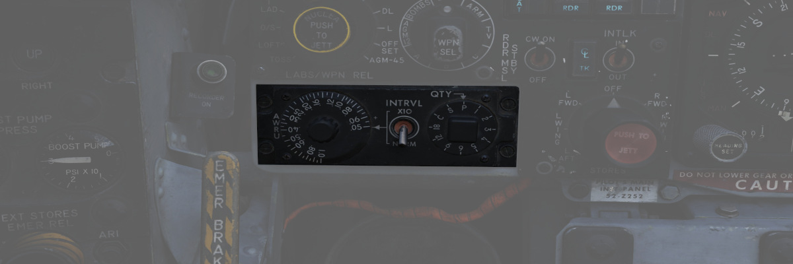
Provides timed interval release scheduling of single or multiple bombs or rockets and dispensed munitions based on the selections made between the interval knob, the QTY (quantity) knob and the INTRVL switch.
For further information see 3.11.2 Aircraft Weapons release unit (AWRU).
Interval Knob
The interval knob (
Interval Switch
The INTRVL switch (
Quantity Knob
The quantity knob (
Selecting "1" places the AWRU into single manual bombing mode; one push of the bomb release button releases one bomb.
Selecting a value from "2" to "18" sets the AWRU into single ripple mode; in this mode, the AWRU will release bombs according to the programmed interval until the set number of rounds is dropped, or the bomb button is released. Upon release, the count is reset, and a subsequent press and hold will drop the programmed number of bombs.
Selecting "C" sets the AWRU into single continuous mode; pressing the bomb release button drops rounds according to the programmed interval until the bomb button is released, or all munitions from the selected pylons are expended.
The "P" setting is for pairs manual mode. With at least two stations selected, each push of the bomb button will release two bombs; like single manual mode, this does not include an interval function.
Lastly, the "S" setting, for salvo, releases bombs in accordance to the chosen interval from all selected stations simultaneously, until the bomb button is released. Ergo, if four stations are selected with a 2 second interval (0.2 on the interval dial, X10 INTRVL switch setting), four bombs will be released every two seconds the bomb button is held down.
Missile Status Lights
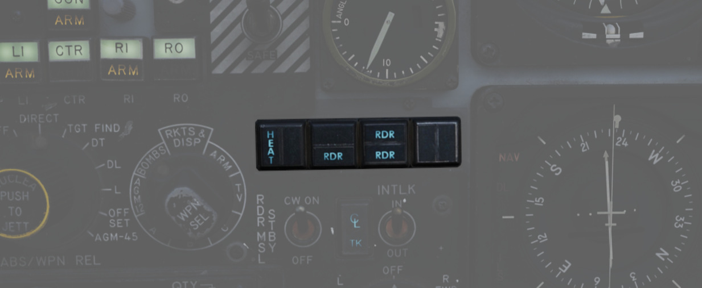
The Missile Status Light window provides confirmation of currently installed and configured 4.2 air-to-air missiles chapter.
Radar Lights
The RDR lights (
The left pair of lights indicates stations 4 and 3 from top to bottom, while the right pair links to stations 6 and 7 respectively.
Heat Lights
The HEAT lights (
The left pair of lights represent station 2L and 2R respectively, while the right pair is linked to stations 8L and 8R.
Radar Missile Power Switch

The Radar Missile Power Switch provides power to the klystron continuous wave (CW) for emitter responsible guidance signals. This also powers the Sparrow tuning drive which is responsible for tuning the Sparrows to the correct continuous wave carrier frequency for guidance.
When switched out of the OFF position, power is applied to the circuit 30 seconds after this selection.
The STBY position maintains warmup power to the missiles and continuous wave tuning drive once the missiles have been tuned. This keeps the Sparrows and Tuning Drive warm, but the Sparrows not tuned.
The CW ON position allows for constant tuning and missile state monitoring with the radar mode not in TV. This also causes the radar klystron to begin continuous wave emission.
Tuning can be performed on the ground with the radar in TEST mode to preclude emissions endangering ground crew.
Centerline Tank Aboard Light

Illuminates when a stores condition exists that precludes ejection or launch of an AIM-7 missile installed in one of the two forward positions. To use the Sparrows on these stations the centerline store must be first jettisoned.
Interlock Switch

A two position switch that determines whether the fire control system launch parameter interlocks can prevent an AIM-7 from being launched when the trigger is pulled.
| Name | Description |
|---|---|
| IN | Interlocks engaged; range limits, ASE limits, or radar not in visual intercept inhibits launch. |
| OUT | Interlocks override; AIM-7 will fire when trigger is pulled even when no launch condition is met. |
Selective Jettison Control

The Selective Jettison Control knob provides the pilot direct access to dump stores on a position by position basis.
The pilot selects the desired position by rotating the knob and then presses the button on its front to jettison the selected stores.
| Name | Description |
|---|---|
| OFF | Safes PUSH TO JETT button on the Selective Jettison Control Panel. |
| STORES | Releases all MER/TER, single carried, LAU-88 mounted rounds, or drop tanks currently selected on the station buttons upon PUSH TO JETT. |
| L/R FWD | Jettisons AIM-7 from respective position on PUSH TO JETT. Inhibited if CL TK ON. |
| L/R AFT | Jettisons AIM-7 from respective position on PUSH TO JETT. |
| L/R WING | In conjunction with TV or ARM, jettisons single AGM-65 Maverick or AGM-45 Shrike from wing on PUSH TO JETT. |
As example, to jettison the right and left external fuel tanks, the pilot must select STORES on the knob, press the corresponding station select buttons LO, RO and then push the jettison button.
Recorder Lamp

This dimmable lamp is lit to indicate operation of the Airborne-Video-Tape-Recorder (AVTR).
The AVTR system is controlled by the WSO and records the intercom sound, as well as the rear radar screen.
Flight Director Group
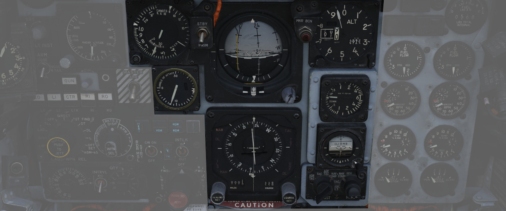
The flight director group provides the pilot with all necessary instruments to fly the aircraft even
in a bad weather situation. It contains the Radar Altimeter (
Radar Altimeter
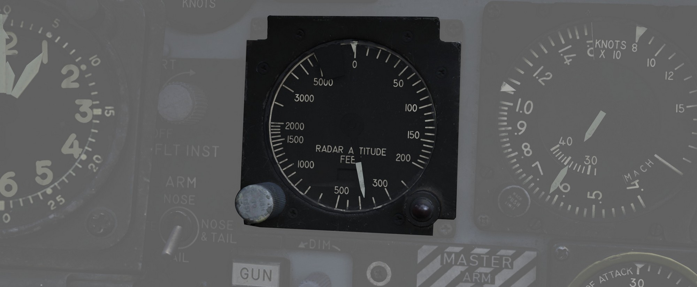
Terrain relative accurate height information up to 5000 ft, functions to 30
degrees of bank angle or 35 degrees of pitch. Clockwise rotation of the function
control switch (
Airspeed and Mach Indicator

The combination airspeed and mach number indicator shows airspeed readings below
200 knots, and include Mach numbers on the outer ring at high speed. The indicator uses a single
pointer over a fixed airspeed scale, marked from 80 to 850 knots, with a moving
Mach scale (
Angle of Attack Indicator

Drawing relative wind information from the landing-gear adjacent AoA probe, the AoA indicator offers conditional reference for cruise (7.9 units), approach (19.2 units), and stall (30 units). Because of the AoA probe to the nose gear door and subsequent airflow disturbance when the gear is lowered, actual aircraft AoA is approximately 1 unit higher than indicated, and ON SPEED AoA is roughly 5 knots slower than the given value.
When indicator power is offline due to electrical system configuration or damage, an OFF flag will appear in the window on the face of the gauge. The AoA indicator contains switches that light the indexer lights and actuate the stall warning vibrator.
Reference System Selector Switch

Toggles between the inertial navigation set and AN/AJB-7 displacement gyroscope for attitude information. When set to PRIM, the inertial navigation set provides azimuth and attitude data to the ADI; when on STBY, AN/AJB-7 supplies this information. Azimuth data also feeds into the HSI and BDHI (rear cockpit). Additionally, attitude details are sent to the fire control system.
💡 Inertial information requires the inertial navigator control panel's switch to be on NAV.
When transitioning between STBY and PRIM, immediate attitude information may show unusual gyrations on the attitude director indicator due to initial erection. Rapid turns (above 15° per minute) may temporarily disrupt accurate heading information, requiring straight and level flight for about 20 seconds for manual compass system synchronization (SYNC position)
Attitude Director Indicator

Includes an attitude sphere, turn indicator, steering bars, miniature aircraft, glide-slope pointer, flags, and pitch trim knob. It displays pitch, bank, and heading from the selected reference system and allows pitch adjustment via the trim knob. The turn indicator relies on a gyro from the AN/AJB-7 system. The steering bars offer Flight Director guidance for heading interception, navigation, and ILS approaches. The glide-slope pointer provides vertical guidance information during an ILS approach.
Marker Beacon Lamp

This lamp illuminates whenever flying over a marker beacon station, provided the VOR/ILS system has been activated. Additionally, an audio cue is played through the intercom system.
The lamp can be rotated to dim and pushed to test.
Horizontal Situation Indicator
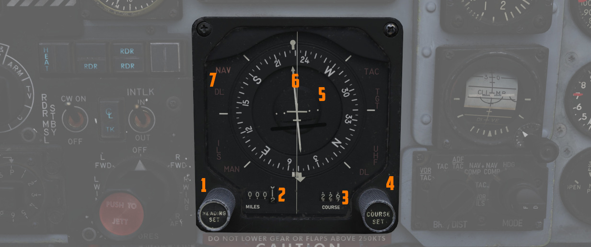
Presents a horizontal view of the navigation situation relative to the aircraft, indicated by an aircraft symbol and a lubber line showing the current aircraft heading.
Knobs
The knob on the lower left (
Compass Card
A rotating element (
It provides a reference for the aircraft's heading relative to magnetic north.
Bearing Pointer
Indicates the magnetic bearing to a selected navigation aid (Nav Comp, VOR, TACAN, or ADF).
Course Arrow and Deviation Indicator
The direction towards which the arrow (
In HDG mode, it indicates the aircraft's magnetic heading, and in NAV COMP mode, it points to the aircraft's magnetic ground track.
The Deviation Indicator provides visual feedback on the aircraft's deviation from the selected course. It shows deviation from a TACAN course in TAC mode or deviation from a VOR radial in VOR/ILS mode when VOR is tuned, and deviation from an ILS localizer signal in VOR/ILS mode when ILS is tuned.
To-From Indicator
Reveals whether the current course will lead towards or away from the tuned station, functioning with TACAN and VOR inputs.
Heading Marker
The heading marker (
In NAV COMP mode, it displays command steering towards the selected target, taking wind drift into account.
Range Indicator
Shows the distance (
Mode Indicator Lights
Several lights (
- VOR: Indicates that the VOR/ILS mode is selected and a VOR frequency selected.
- ILS: Indicates that the VOR/ILS mode is selected and an ILS frequency selected.
- TAC: Shows that TACAN mode is active.
- NAV: Illuminates when the Navigation Computer mode is in use.
- MAN: Indicates that the Heading Mode is selected.
- UHF: Signifies that the ADF mode is active.
- TGT: Illuminates during specific radar offset bombing operations.
Altimeter
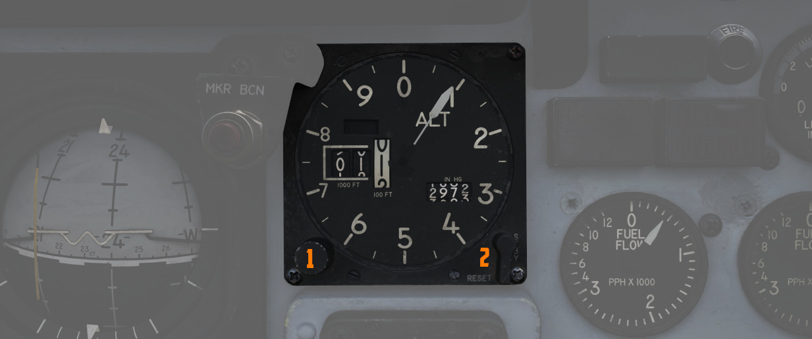
A counter-pointer style altimeter, with thousandths in the counter window (
Vertical Velocity Indicator
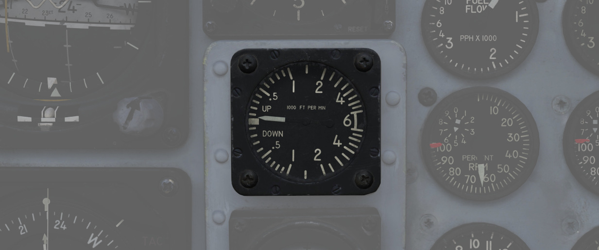
Provides rate of climb or descent via the static pressure system referenced in thousands of feet per minute.
Standby Attitude Indicator

The SAI functions independent of the Flight Director Group, providing reasonably accurate readings (within six degrees) for 9 minutes if power to the system is lost and the OFF flag is in view. Pitch markings are indicated every 5 degrees, while roll markings are in gradations of 10 degrees. Roll is illustrated through 360 degrees, while pitch is limited by stops at 92 degrees in climb and 78 degrees in dive to prevent gimbal lock. The SAI can be unlocked by pressing the knob and trimmed by turning it.
Navigation Function Selector Panel

Controls display presentation on the ADI and HDI based on the selected values on
the two knobs; to the left is the Bearing/Distance Knob (
Bearing/Distance Knob
| Name | Description |
|---|---|
| VOR/TAC | Magnetic and relative bearing to VOR station and TACAN range displayed on HSI. |
| TAC | Magnetic and relative bearing and range to TACAN station displayed on the HSI. |
| ADF/TAC | Magnetic and relative bearing to ADF station and TACAN range displayed on HSI. |
| NAV COMP | Magnetic and relative bearing and range provided from navigation computer (i.e. waypoints) on HSI. |
Mode Selector Knob Display Functions
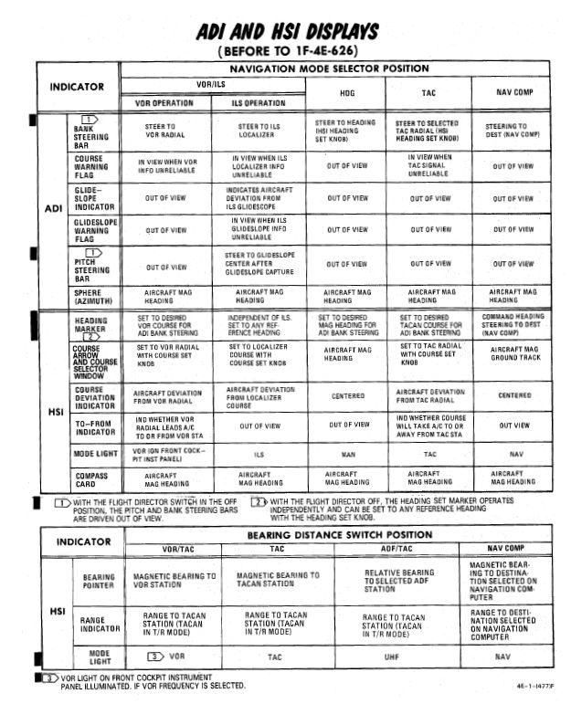
VOR Lamp

Illuminates to indicate that the VOR system is ready and receiving.
That is, a valid VOR frequency has been selected, a signal is received and the navigation knobs have been turned to VOR navigation.
Right Main Panel

The right main panel offers a good overview of all needed engine data as well as of your defensive
Radar warning receiver (RWR). There is also the fuel gauge (
RWR Azimuth Indicator

The Radar warning receiver Azimuth Indicator shows all Radar sources that are visible to the Radar warning receiver. The knob controls the brightness of the display.

Below is a box with several knobs to operate the system.
For further information and button explanation see the Radar Warning Receiver chapter.
Azimuth-Elevation Indicator

The Azimuth-Elevation Indicator, or also Line-Of-Sight Indicator, is the main instrument for the pilot to assess the current attitude of the Pave Spike Targeting Pod in order to keep the line of sight within the operational limits.
The needle shows the pods roll position from -160° (CW) to +110° (CCW).
Three flags indicate the elevation:
- green: -120° to -155°
- yellow: -155° to -160°
- red: -160° or beyond
If the needle is kept within the green labelled range and neither the yellow or red flag are shown, the view will not be obstructed by the pod or the aircraft.
Master Caution Light

The Master Caution light illuminates to provide the pilot warning of a condition requiring attention, directing them to look at the telelight panel for additional information. The Master Caution lamp is reset by correcting the condition, or pressing the Master Caution Reset button on the generator control panel.
Fire Test Button
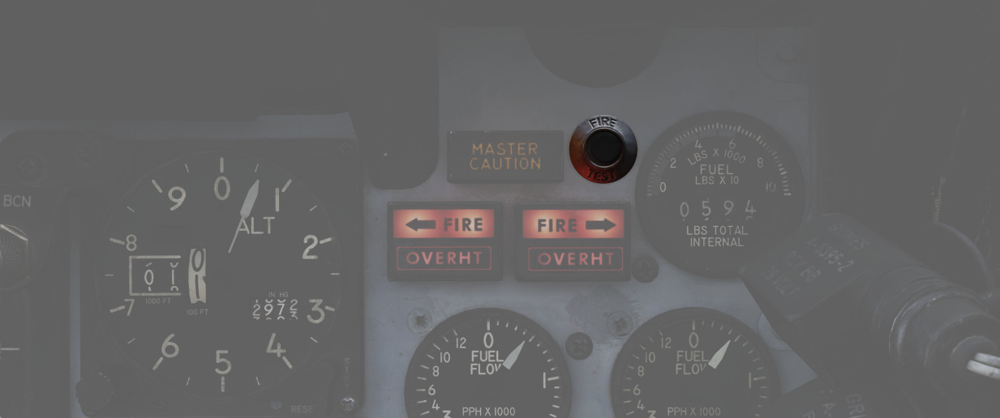
When pressed, this button tests for functionality of the FIRE and OVRHT lamps. Under normal conditions, all four lights should light up as long as the button is pressed down. If a lamp does not light up, it is likely broken and cannot be trusted on indicating a fire condition anymore.
The button can also be used in conjunction with the Warning Lights Test switch to confirm detection and continuity performance of the fire and overheat warning systems.
Holding the Warning Lights Test switch in the WARN TEST position, then simultaneously pressing and releasing the Fire Test Button performs the test. Proper system function is confirmed with the four FIRE and OVRHT lamps off while the Fire Test Button is pressed, then illuminating when it is released.
Fire/Overheat Warning Lamps
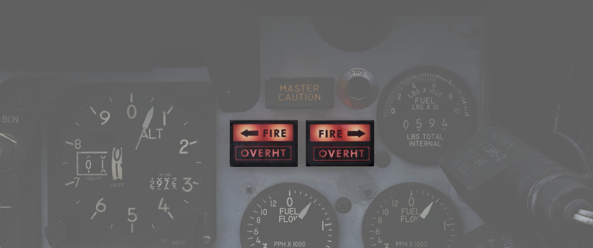
The Fire and Overheat Warning Lamps, one for each engine, are a pair of two-position indicators that illuminate when a fire condition is detected in the engine compartment (FIRE), or an overheat condition is detected in the exhaust nozzle section (OVRHT).
Fuel Quantity Indicator
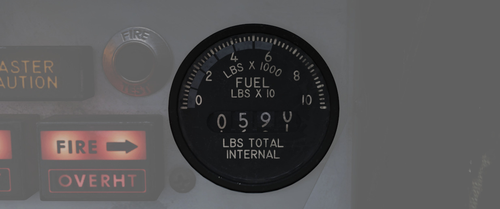
The Fuel Quantity Indicator provides two different indications of total usable internal fuel to confirm proper transfer function between the seven internal fuel cells, as well as any external loaded tanks.
On the upper half, it displays the total fuselage fuel with a white tape on a scale marked 0 to 10 (times 1000 lbs). This readout includes cells 1 through 6, while excluding the reserve tank 7, both internal wing tanks and also any externally loaded tanks. The image shows the tape around label 6, indicating a total internal fuel of around 6000 lbs.
Additionally, a counter displays the entire internal fuel in 10 lb increments. That is, cells 1 through 7 and also the two internal wing tanks. Any external tanks are excluded as well. The example has the counter reading 0590, indicating 5900 lb of internal fuel.
💡 External tank fuel quantity can not be checked. See 3.2.2. External Tanks Fuel Lights to check if they are empty.
As a general guidance, Bingo fuel is around 4000 pounds, while Joker fuel is at 6000 lb.
For more detailed information see 3.2.2 Fuel system chapter.
Fuel Flow Gauges

A pair of fuel flow indicators is provided, one for each engine, presenting pounds per hour rate from 0 to 12, in 1000 lb increments. Flow indications are for basic, non-afterburning thrust. In afterburner, the flow rate is roughly four times the displayed flow rate.
Tachometers

A percentage-noting Tachometer is provided for each engine, including an inset wheel for accurate display of single digits. Normal values are 65% for idle, 95% in full MIL power and 105% for full afterburner.
Exhaust Gas Temperature Gauges

Exhaust Gas Temperature gauges are provided for each engine. The gauges have two needles - a large needle providing increments of 0 to 12 in multiples of 100 degrees Celsius, and a smaller needle presenting increments of 0-10 in multiples of 10 degrees Celsius. Temperatures are measured at the exit of the turbine unit.
Exhaust Nozzle Position Indicators

A combined Nozzle Position Indicator is provided with two needles, one for each engine on their respective side, to confirm balanced nozzle position and scheduling relative to throttle position. The gauge provides four zones relative to the nozzles being in their fully open configuration (needle fully left), or their maximum closed configuration (needle fully right). At idle, the indication will be roughly 7/8ths open, and schedules down as throttle is increased. Position in the afterburner region will moderate to maintain safe EGT levels.
Left Sub-Panel
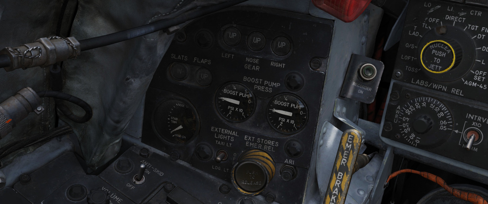
The left sub-panel features most
of the gear indicators (
1), Slats and Flaps
indicators (
8-Day Clock
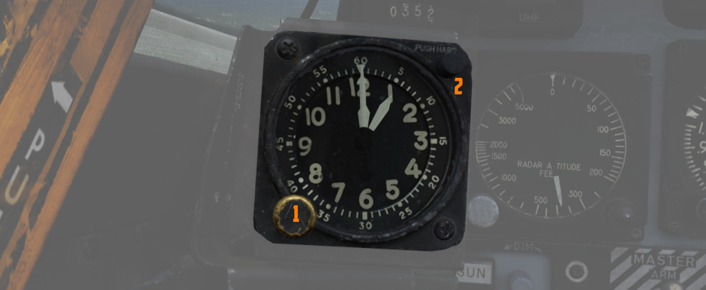
A clock is provided for the pilot, including a stopwatch function. The watch features a hour and
minute hand, and can be set by turning
the knob (
Landing Gear Handle

Actuates the landing gear; raised for gear up, down for gear down.
Pulling the handle out will actuate the Emergency Mode and release the gear by using a pair of compressed air bottles.
💡 The gear can not be retracted on ground.
Landing Gear Position Indicators

The Landing Gear Position Indicators provide visual confirmation of current gear state, displaying UP when retracted, showing a barber pole while in transition, or the illustration of a wheel in the respective window when fully down and locked.
Slats/Flaps Indicators

Visual indication of the Slat and Flap systems are provided through two window indicators. Slats will be displayed as IN (retracted) or OUT ( extended). Flaps will display as UP (retracted) or DN (down), and will show a barber pole while in transition.
Boost Pump Pressure Indicators

A pair of indicators provide confirmation of fuel boost pump operation. Indicators are calibrated 0 to 5, which must be multiplied by 10 to read in current PSI.
Stabilator Trim Indicator

Provides current stabilator trim setting in units of trim (not equal to degrees). For Takeoff the trim should be between 1-3 units nose down.
Landing/Taxi Lights Switch
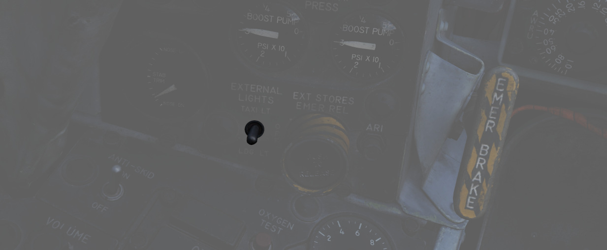
Control the external Landing and Taxi lamps. Left main gear must be down and locked for the switch to function
💡 Lights are turned off automatically when the gear is retracted.
External Stores Emergency Release
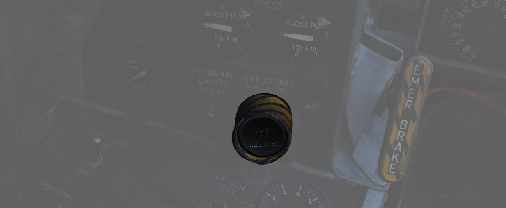
Also called the "panic button", the External Stores Emergency Release will immediately perform separation of all stores, without air-to-air weapons or special weapons.
Aileron Rudder Interconnect (ARI) Circuit Breaker

When pulled in conjunction with the Yaw ARI Stab Aug Switch disengaged, Yaw ARI will be fully removed. With the Yaw ARI Stab Aug Switch engaged, 5 degrees of ARI authority will be maintained.
See 3.1.2 Flight controls & AFCS for further information.
Emergency Brake Handle
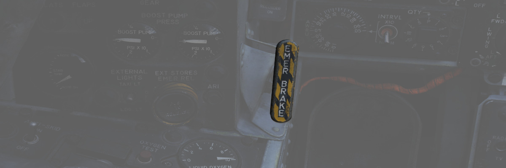
Pulling this handle activates the Emergency Hydraulic Brake System, dumping the remaining pressure of the hydraulic accumulator in to the brake system for a limited number of brake applications. Note that differential braking will work as normal, but will also serve to exhaust hydraulic pressure more quickly.
Left Console

The left console is further divided into 4 sections.
Front Section
The front section of the left console houses the oxygen panel, throttle and engine related controls.
Left Utility Panel

Anti-Skid Switch

A two position switch (
Anti-Skid Inoperative Light

Illuminates when the Anti-Skid Switch is set to OFF, the Emergency Quick Release Lever is pressed, or there is an issue with the Anti-Skid System.
Canopy/Low Altitude Warning Volume

A rotary dial (
This system is not installed on this variant of the F-4E.
Oxygen Regulator and Oxygen Quantity Gauge

Supply Lever
Two position switch (
Diluter Lever
A two position (
For a proportional amount of air to oxygen, the NORMAL OXYGEN position should be selected.
For pure oxygen, the 100% OXYGEN position should be selected. This setting is preferable if fire, toxic smoke or fumes occur in the cockpit.
Emergency Lever
Three position switch (
The lever should remain in the center (NORMAL) position at all times, unless an unscheduled pressure increase is required.
Flow Indicator
Alternates between black and white (
Oxygen Pressure Gauge
The oxygen pressure gauge (
For further information see 3.7 Utility chapter, Oxygen section.
Oxygen Quantity Gauge
The oxygen quantity gauge (
Oxygen Quantity Test Button
The button (
With the button pressed, both gauge needles should move to an indication of zero.
As the needle in the front cockpit passes through the 1 liter indication, the OXYGEN LOW warning light on the front telelight panel should illuminate, and remain illuminated until the button is released and the needle moves above 1 liter again.
Forward Hand Control

Small joystick enabling the Pilot to control and steer guided Weapons such as Mavericks or Bullpups.
Outboard Engine Control Panel
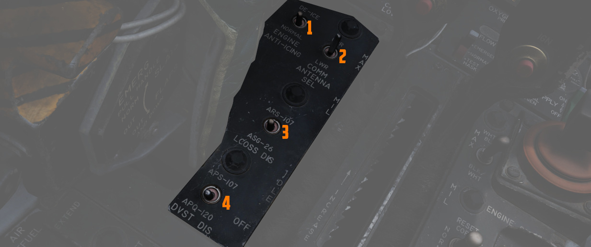
Engine Anti-Icing Switch
Two position switch (
The system should only be used below high-mach numbers. At high-mach speeds the compressor inlet temperature is enough to prevent ice from building up.
Communications Antenna Select Switch
Two position switch (
The Upper position should be used for take-off and landing since the lower antenna could interfere with the anti-skid wheel speed sensor and thus create a malfunction in the anti-skid system. The lower antenna could also interfere with the nose gear steering whilst transmitting.
LCOSS Switch
A two position switch (
- ARS-107
- ASG-26
The switch is a leftover and not connected.
DVST Switch
A two position switch (
- APS-107
- APQ-120
The switch is a leftover and not connected.
Inboard Engine Control Panel
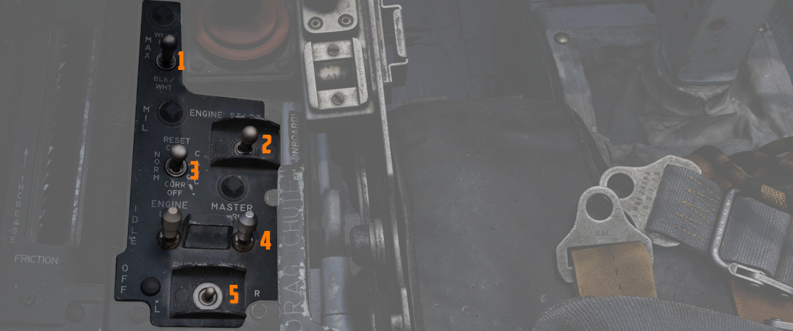
The Inboard Engine Control Panel carries the following controls:
Target Contrast Switch
The three position switch (
| Name | Description |
|---|---|
| WHT/BLK | Programs the missile seeker to track a light target on a dark background. |
| AUTO | Programs the missile to use its automatic tracking mode. |
| BLK/WHT | Programs the missile seeker to track a dark target on a light background. |
💡 This does not change the polarity of the video but the coding of the seeker itself.
Engine Start Switch
Three position switch (
CADC Static Pressure Compensator Correction Switch
Three position switch (
| Name | Description |
|---|---|
| RESET CORR | Actuated after engine startup, then in flight if a SPC warning is caused by transient conditions. |
| NORM | Regular operating position of switch upon release of RESET CORR or actuation out of CORR OFF. |
| CORR OFF | Manually disengages SPC altitude lag compensation. |
Engine Master Switches

A pair of two position lever lock switches (
Rudder Trim Switch
A three position switch with automatic return to center (
Throttles

The throttle arrangement for each engine in the F-4E Phantom II is located on the front and rear cockpit left console. Mechanical linkage transmits throttle movement to the engine fuel control. A friction adjusting lever allows customization of throttle friction. Afterburner initiation occurs by shifting the throttles outboard and moving forward from the MIL position. The Afterburner gate can be adjusted in the special options of the module.
Throttle movement is smooth and continuous, with afterburner modulation possible throughout the range. Moving throttles from IDLE to OFF closes the fuel shutoff valve, stopping fuel flow. To transition from OFF to IDLE or MIL, advance the throttles straight forward. Shifting throttles outboard allows movement from MIL to MAX, enabling forward motion in the afterburner range. For further information see 3.1.2 Engines chapter.
Fingerlifts
Front cockpit throttles feature finger lifts (
Ignition Buttons

Engine ignition for startup is performed using a pair of spark plugs on each
engine, activated by pressing the red Ignition Button (
Cage Button
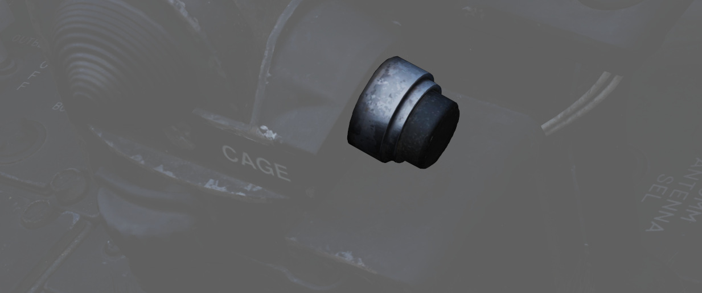
A spring-loaded button (
Dispense Button

When pressing the dispense button (
Speed Brake

The Speed Brakes are actuated by a three position switch (
Mic Switch

The microphone switch (
Pinky Switch
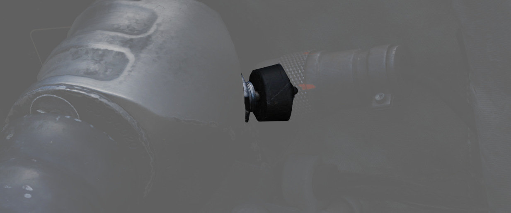
The guns/missile (pinky switch) is a four position switch (
Center Section
The center section of the left console controls fuel and navigation related settings.
Fuel Control Panel

Internal Wing Dump Switch
Two position switch (
The entire fuel is dumped in roughly 15 minutes.
Internal Wing Transfer Switch
A two position switch (
Transfer only occurs without weight on wheels and if the internal tanks have reached a certain fuel level already.
Refueling Select Switch
This covered switch (
Air Refueling Switch
Two position toggle switch (
If, during AAR, the boom disconnects and the DISENGAGED light illuminates, this switch has to be flipped to RETRACT and back to EXTEND to reset the system and allow the boom to connect again.
External Transfer Switch
A three position toggle switch (
Transfer only occurs without weight on wheels and if the internal tanks have reached a certain fuel level already.
It is not possible to transfer from the wing tanks and external tanks at the same time. If both are selected, the external tanks will take priority.
Boost Pump Check Switches
A pair of two position spring-loaded switches (
VOR/ILS Control Panel

Nav Vol Knob
The nav vol knob (
Must be moved out of the full CCW position to provide power to the VOR/ILS system.
MB Vol Knob
The MB vol knob (
Frequency Knobs
A set of two knobs (
Valid frequencies range from 108.00 to 117.95 MHz.
VOR/MKR Test
A button (
AFCS Control Panel

Stability Augmentation Channel Switches (Yaw/Roll/Pitch)
Three two-position switches (
See 3.1.2 Flight Controls & AFCS for further information.
AFCS Mode Switch
The two position switch (
Altitude Hold Switch
The two position switch (
Aft Section
The aft section of the left console has the intercom and countermeasure controls.
Boarding Steps Indicator
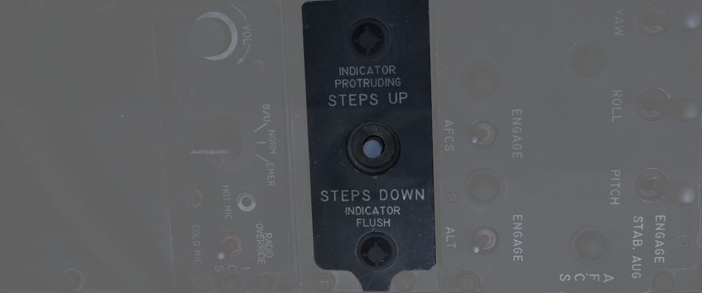
Used to visually confirm the integrated boarding steps state. With the white post up, steps are stowed, whereas steps are deployed if post is down and flush with panel recess. The boarding steps and ladder is moved by the crew chief.
Intercom System Control Panel
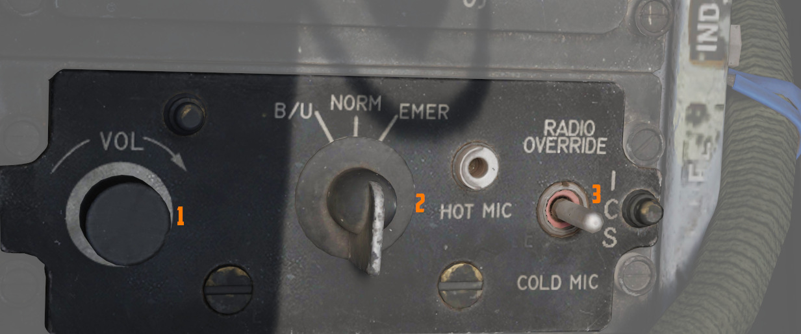
Volume Control Knob
The volume control knob (
Amplifier Select Knob
The amplifier select knob (
| Name | Description |
|---|---|
| B/U | Backup headset amplifier provides audio. |
| NORM | Primary headset amplifier provides audio. |
| EMER | Uses the amplifier from opposite cockpit; all and only audio including radio received to that cockpit is heard. |
Function Selector Switch
The function selector switch (
| Name | Description |
|---|---|
| COLD MIC | Mic switch on throttle must be held to activate intercom. |
| HOT MIC | Voice automatically transmitted on intercom. |
| RADIO OVERRIDE | Voice automatically transmitted on intercom. All volumes but Shrike tone and Stall Warning are reduced in volume. |
AN/ALE-40 Programmer

The panel features 6 knobs to control chaff and flare programs, as well as two lamps and a switch to activate flares on its base.
Chaffs can be programmed to be released in Salvos and Bursts. A Salvo consists of multiple bursts, while a burst will release multiple chaffs.
Chaff Burst
The count knob (
The interval knob (
Chaff Salvo
The count knob (
In the Continuous setting, the program is repeated as long as the dispense button is held down.
The interval knob (
Flare Burst
The count knob (
Continuous will repeat the program as long as the dispense button is held down.
The interval knob (
Flares Select Switch
The flares select switch (
In the NORMAL setting, countermeasure are released according to what the WSO setup on their panel.
FLARES allows the pilot to activate the flares regardless of WSO selection. This can for example be used to react quickly to a threat.
Flares Indicator Light
The flares indicator light (
Power On Indicator Light
The power on indicator light (
Gyro Fast Erect Switch

Selects gyro operation. FAST ERECT can be used momentarily to correct gyro deviations.
See 3.11.4. ARBCS for details.
Aural Tone Control

Knob to control the volume for weapon tones, such as the Sidewinder seeker head.
Anti-G Suit Control Valve
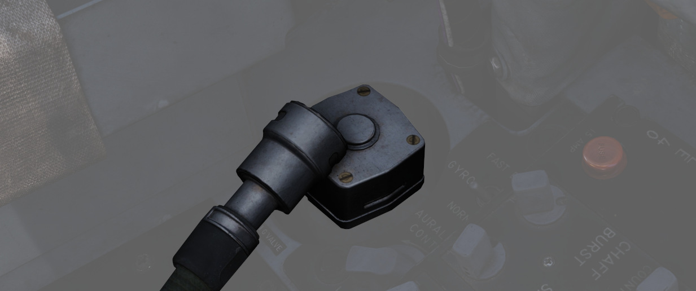
The anti-G system delivers low-pressure auxiliary air to the anti-G suits, with air passing through the anti-G suit control valve before reaching the suit. The suit remains deflated up to approximately 1.5 G, and as G forces reach or exceed this level, air flows into the suit proportionally. The suit stays inflated in relation to constant G forces and begins to deflate as G forces decrease.
A manual inflation button in the anti-G suit control valve enables the crewman to manually inflate the suit for system checks or fatigue relief. A pressure relief valve within the system activates at approximately 11 psi, serving as a safety backup in case of malfunction. The system operates automatically whenever an engine is running, ensuring continuous support for the wearer during varying G-force conditions.
Left Wall
SAI Panel

The panel provides a circuit breaker (
Eject Light/Switch
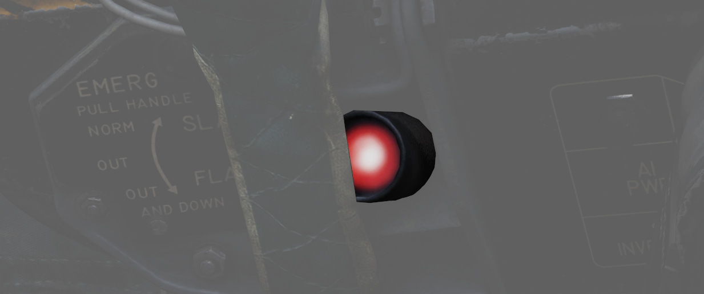
Pressed by the pilot in an emergency condition requiring ejection from the aircraft, which illuminates the EJECT lamp in the rear cockpit warning the WSO to prepare for immediate ejection.
Also lights up when the WSO presses their respective Eject Light to warn the Pilot for ejection.
Slats/Flaps Control Panel

A three position switch (
Nose Gear UP
| Name | Description |
|---|---|
| NORM | Flaps up, slats operate as function of AoA. |
| OUT | Slats extend. |
| OUT AND DOWN | Slats and flaps extend (wheels light flashing until the landing gear is down. |
Nose Gear DOWN
| Name | Description |
|---|---|
| NORM | Flaps up, slats operate as function of AoA. |
| OUT | Slats and flaps extend. |
| OUT AND DOWN | Slats and flaps extend. |

Emergency Slats/Flaps Handle
Also included is
the Emergency Slats/Flaps Extension handle (
Emergency Canopy Jettison Handle
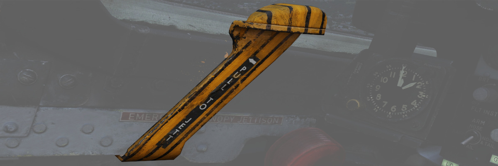
Used for emergency ground extraction, the Emergency Canopy Jettison Handle releases a compressed oxygen cylinder to open the respective canopy immediately, shearing it off at its pivots.
Canopy Control Switch

Used to open (aft) or close (forward) the pilot canopy.
Extra Picture Switch
Provision to operate the KB-18 gun camera without the release of weapons, the Extra Picture switch starts the camera at the selected rate.
Gun Camera Switch
Activates the gun camera, which will run until the switch is placed to off, or actuation of bomb button or the second trigger detent once the pre-programmed overrun time is completed.
Slats Override Switch

Two-position guarded switch with IN and NORM positions. In NORM, slats operate normally as a function of the slats flaps switch or AoA. When IN selected, slats will retract and remain retracted. Selection of IN illuminates SLATS IN light on telelight panel and Master Caution lamp.
Armament Safety Override Switch
If pressed and the landing gear handle is placed down, overrides the armament safety.
This allows for example to fire the gun while on ground.
Pedestal Group
The pedestal group features the screen source switch (
Accelerometer

Calibrated from negative 4 to positive 10 in units of G, with three pointers - one for current applied load, the other two show maximum positive and negative G applied during the flight. Pressing the PUSH TO SET button will reset the maximum position indicators to 1 G.
Engine Oil Pressure Indicators

A pair of engine oil pressure indicators are provided, one for each engine, calibrated from 0 to 100 PSI. Engine oil is used for lubrication, variable nozzle positioning, and constant speed drive unit operation. Important values are:
- 12 PSI - Minimum at idle RPM
- 30-60 PSI - In-flight military
- 35 PSI - Static minimum at military thrust
- 60 PSI - Maximum
For further information see 3.2.1 Engines chapter.
Hydraulic pressure Indicators

Two hydraulic pressure indicators are installed. The one on the right, references the Utility Hydraulic System pressure, while the left one references the PC-1 and PC-2 Hydraulic Systems; the latter includes two needles, which are marked accordingly. Pressure transmitters, one for each system, convert pressure impulses to electrical impulses which, in turn, are supplied to the indicators. Nominal operating power for all three systems is 3000 ±250 PSI. Other important values are:
- 2000-2750 - Normal with rapid control movement
- 2750-3250 - Normal
- 3250-3400 - If pressure exceeds 3250 steady state, and entry must be logged on form 781
- 3400 - Maximum
For further information see 3.5 Hydraulics chapter.
Pneumatic Pressure Indicator
Shows manifold pressure of the pneumatic system measured by the pressure transmitter which supplies electrical inputs to the indicator. Keep in mind it doesn't show individual emergency pneumatic bottle pressures. Normal system pressure range is from 2650 to 3300 psi due to pressure transmitter and pressure gage tolerances.
Other important values are:
- 3300-3500 - Caution area
- 3500 - Maximum
For further information see the 3.6 Pneumatics chapter.
Screen Source Switch

Controls which video source is displayed on the DSCG screen. This is independent of the WSO, allowing the pilot to view a source different to the WSO.
In the Radar position, the radar will be displayed on the screen. TV will either display weapon feeds, such as Maverick, or the targeting pod camera; depending on the Video Select Button in the WSO cockpit.
The Off-position turns the screen off.
Rate of fire Switch
Used to switch the gun rate of fire between a HIGH setting (6000 rounds per minute) and a LOW setting (4000 rounds per minute).
Auto clear switch
The cannon will fire approximately between 5 and 11 rounds from the point the pilot has released the trigger to clear all bolt actions in the cannon. This spin-down takes approximately one second during which the gun cannot be fired again during this operation. This only applies to externally carried gun pods and not to the main gun.
The AUTO CLEAR option should be used whenever a gun pod is used.
Rounds Remaining Indicator
Shows the currently available number of nose gun rounds. The counter must be set manually by the pilot whenever rearming.
Shrike Controls
Two switches to control AGM-45 Shrikes settings.
TGT/MLS Reject Switch

Dual purpose switch to control Mavericks and Shrikes.
For Mavericks, the spring-loaded TGT/MSL REJ position cycles through the available Mavericks currently selected and armed. The DF REJ position has no function.
For Shrikes, TGT/MSL REJ turns off the weapon seeker entirely until released. The DF REJ position selects the WRCS mode for receiving a solution, while the center position uses the weapons own, less accurate seeker system instead.
Band Switch
Allows to select the band range picked up by Shrikes.
💡 Not all variants support band switching.
Rudder Pedal Adjustment Crank

Used to adjust ergonomic position of the rudder pedals forward or back from the pilot.
Requires 38 full turns to move the pedals across the entire range.
Right Sub-Panel

The right sub-panel area is dominated by a group of warning lights. It also features the canopy
manual unlock handle (
Generator Indicator Lights
Indicating LH GEN OUT (Left), RH GEN OUT (Right), and BUS TIE OPEN, the indicator lights will illuminate when the specified generator is offline, or, in the event of BUS TIE OPEN, when the generators are not functioning in parallel. Indicators will trigger a Master Caution. In event of dual generator failure, neither will illuminate.
For further information see 3.8 Electrics chapter.
Feed Tank Check Switch
A two-position spring-loaded switch used to confirm nominal quantity in the engine feed tank (Cell 1), the positions being FEED TANK CHECK and NORM (default).
When FEED TANK CHECK is selected and held, the fuel quantity gauge will indicate solely the current fuel quantity in the engine feed tank on both the tape and counter. When the feed tank is full, the indicated value should read 1400 lbs, ±200 lbs on the counter, and the tape value should be 1400 lbs, ±150 lbs.
Arresting Hook Control Handle

Pulling the handle down extends the Tail Hook.
💡 The hook is utilized for field emergency arrestment. The F-4E does not support carrier operations.
KY-28 Mode Light Panel
Dependent on mode, the illuminated display shows P for Plain mode (
💡 UHF communications require the system be in Plain mode, even with system power off, barring usage and monitoring of guard channel.
Telelight Annunciator Panel

Provides the majority of aircraft system warnings that can be rectified by the pilot. Most warnings on the panel will cause the Master Caution to illuminate; those that do not will be noted.
| Light | Explanation | Light | Explanation | Light | Explanation |
|---|---|---|---|---|---|
| Alt Encoder out | The light will illuminate if there is an unreliable signal or no signal from the altitude encoder unit. It also may illuminate momentarily during high-rate climbs, dive maneuvers or during transonic flight | ||||
| IFF | The light will illuminate when the Mode 4 code is zeroed or no code is inserted | DC Bus | The light will illuminate if both generators fail or if a voltage drop occurs between the main dc bus and essential dc bus. | ||
| Canopy Unlocked | The light will illuminate in the front cockpit if any canopy is not locked and lowered. The rear light will only illuminate when the rear canopy is not fully locked and lowered. | Hook down | The light will illuminate if the arresting hook is not up and locked. | ||
| Autopilot Pitch Trim | The light will illuminate when the AFCS is engaged and the automatic pitch trim follow up is inoperative or lagging sufficiently behind the airplane maneuvering. | Autopilot Disengage | The light will illuminate when the autopilot is disengaged after initial engagement of the AFCS. | ||
| Left Ext Fuel | The light will illuminate if the external fuel tanks are selected. | CTR Ext Fuel | The light will illuminate if the external fuel tanks are selected. | Right Ext Fuel | The light will illuminate if the external fuel tanks are selected. |
| Fuel Level Low | The light will illuminate when the Fuel level in cells 1 and 2 has reached a predetermined fuel state of 1650 ± 200 pounds. | CHK Fuel Filters | The light will illuminate when the fuel filter is clogged. The filter automatically opens to bypass, allowing normal fuel flow to the engine | Radar On Cool Off | |
| L Anti Ice On | The light will illuminate when the anti-ice bleed air system is on. | R Anti Ice On | The light will illuminate when the anti-ice bleed air system is on. | Static Corr Off | The light will illuminate if the SPC fails or the CADC switch is placed to CORR OFF |
| L Aux Air Door | The light will illuminate when the left auxiliary air door operates out of phase with the landing gear handle. | R Aux Air Door | The light will illuminate when the right auxiliary air door operates out of phase with the landing gear handle. | Speedbrake out | The light will illuminate if the speed brake is out or not fully closed. |
| Windshield Temp High | The light will illuminate when the windshield approaches a temperature which will cause optical distortion while the windshield rain removal is used. Windshield rain removal should be turned off immediately. | Duct Temp High | The light will illuminate when the temperature within the engine intake duct is beyond allowable limits. | Check Hyd Gauges | The light will illuminate if the pressure of any system drops below 1500 ± 100 psi. |
| Slats In | The light will illuminate if the Slats Override Switch is placed to the IN position, forcing the slats to stop moving as a function of the AOA. | Pitch Aug Off | The light will illuminate when power is on the airplane and the pitch stab aug switch is not engaged. | Cabin Turb Overspeed | The light will illuminate if the cabin turbine of the refrigeration unit is subjected to pressures and temperatures in excess of the normal operation. |
| Inertial Nav Sys Out | The light will illuminate if the Inertial Navigation system is either out or off. | Tank 7 Fuel | The light will illuminate if Tank 7 fuel transfer valve fails to open. | ||
| Oxygen Low | The light will illuminate when the oxygen amount is below 1 litre. | Fire Sys | The light illuminates when either a fire/overheat detector sensor tube is burned through, a detector wire chafes to ground or the control module fails. |
Light Circuit Breakers
Hidden behind a bundle of cables to the right of the telelight panel are two circuit breakers controlling lights.
The upper one (
Right Console
The right console is further divided into 4 sections.
Front Section
The front section of the right console is dominated by communication and navigation controls.
Master Caution Reset

Used to extinguish telelight panel warnings and the Master Caution warning lamp once the necessary action has been taken. In the event a fault has not been effectively corrected, pressing the Master Caution Reset button will not turn the respective warning off.
TACAN Control Panel

The TACAN Control Panel is used to enter the desired TACAN channel, mode, and audible volume for the monitoring of said channel by the aircrew. The panel is duplicated in both cockpits, and the panel in command of the TACAN receiver is selected with the NAV CMD button of the Communication Control Panel.
Channel Knobs
On the control panel there are two Navigation Channel Control knobs (7,4 and 3), with the
left (
Test Button and Lamp
Between these two knobs is the TEST button (
The lamp above the button illuminates to indicate test status.
See 7.19.4 Navigation test chapter for further information.
Volume Knob
To the upper right, the VOL knob (
Function Selector
The TACAN Function Selector Knob (
| Name | Description |
|---|---|
| OFF | The TACAN receiver is de-energized and offline. |
| REC | The TACAN receiver is active, providing bearing information on the HSI, BDHI, and ADI. |
| T/R | Both the receive and transmit functions of the TACAN are active, which provide bearing and nautical mile range information for the HSI and BDHI. |
| A/A REC | The TACAN receiver decodes bearing information from compliant aircraft for the HSI, BDHI, and ADI steering display. |
| A/A TR | The TACAN receiver receives both bearing and slant range information in nautical miles from the transmitting aircraft, providing this on the HSI and BDHI. |
💡 Air to Air TACAN functionality requires the channel to be set 63 channels above or below the cooperating aircraft, but on the same range- X or Y. So a tanker on 123Y should be set to 60Y in the F-4.
Communication Control Panel
The Communication Control Panel provides selection and mode of the UHF radio in the aircraft.
Command Buttons
The panel is duplicated in both cockpits, and control over the
radio is determined through pushing the COMM CMD Button (
Radio Volume
Beneath the COMM CMD button is the radio volume (
Squelch Switch
Close to the NAV CMD button is the Squelch switch (
Frequency and Channels
The A-3-2-T Selector knob (
💡 Due to engine limitations, modes A and T, belonging to the HAVE-Quick functionality, are not simulated.
The four Frequency Selection Knobs work in concert with the A-3-2-T knob and Preset/Manual switch. Frequencies are entered beginning with the 3 or 2 selection on the A-3-2-T Selector, and can be entered from 225.00 to 399.975 MHz in increments of 0.025. With Preset/Manual in the Manual position, the UHF radio is directly set to the displayed channel. In the Preset position, the set channels can be entered into the COMM CHAN memory, with the desired position selected with the Comm Channel Control knob - the smaller knob to the left of the Preset/Manual switch, and displayed in the COMM CHAN window. Channels are stored in the displayed channel preset with the SET pushbutton. Once stored, channels are directly selected using the Comm Channel Control knob with the Preset/Manual switch in the Preset position.
Directly underneath the Comm Channel Control Knob is the Aux Channel Knob (
The Aux Volume Control knob (
The Set button (
Tone Button
The Tone Pushbutton (
💡 Due to engine limitations, the tone button, belonging to the HAVE-Quick functionality, is not simulated.
Comm Function Selector
The Comm Function Selector Knob (
| Name | Description |
|---|---|
| OFF | All UHF Radios off. |
| T/R ADF | Comm receiver - comm reception. |
| Comm transmitter - comm transmission. | |
| Comm guard receiver - standby. | |
| Aux receiver - ADF reception. | |
| T/R+G ADF | Comm receiver - comm reception. |
| Comm transmitter - comm transmission. | |
| Comm guard receiver - guard reception. | |
| Aux receiver - ADF reception. | |
| ADF+G CMD | Comm receiver - ADF reception. |
| Comm transmitter - comm transmission. ADF interrupted during transmission. | |
| Comm guard receiver - guard reception on ADF antenna. | |
| Aux receiver - comm reception. | |
| ADF+G | Comm receiver - ADF reception. |
| Comm transmitter - comm transmission. ADF interrupted during transmission. | |
| Comm guard receiver - standby. | |
| Aux receiver - guard reception. | |
| Guard ADF | Comm receiver - guard reception. |
| Comm transmitter - guard transmission. | |
| Comm guard receiver - standby. | |
| Aux receiver - ADF reception. |
Utility Panel (Right)

The utility panel features an emergency vent handle for releasing over pressure in the cockpit. Furthermore, it features the Defog/Foot Heat Lever as well as the Generator control switches.
Cooling Reset Button

Resets the CNI cooling system.
Cockpit Pressure
Cockpit Altitude Gauge
Displays the current pressure inside the cockpit as a means of equivalent effective cabin altitude above mean sea level in 1000 of feet.
That is, if the gauge (
To prevent sickness and hypoxia, the pressure should be observed and oxygen supply adjusted accordingly:
| Pressure Range | Description |
|---|---|
| below 13000 ft | Breath regular air |
| 13000 ft - 40000 ft | Breath Oxygen through mask |
| 40000 ft - 62000 ft | Breath pressurized Oxygen through mask |
| above 62000 ft | Need to wear a pressure suit (not available) |
See Oxygen Chapter for more information.
Emergency Vent Handle
A plug (
Without pressurization, the effective cabin altitude will be identical to the current altitude. Which, if flying at high altitudes, can result in hypoxia.
Should only be used if the pressurization system is malfunctioning and reads abnormal values, or to eliminate smoke and fumes from the cockpit. Descend to safe altitudes before activating.
Defog/Foot Heat Lever

The Defog/Foot Heat lever (
It is possible, through selection of cold temperature settings, particularly on humid days, for the air conditioning system to deliver air at temperatures well below the dew-point, with resultant cockpit fogging. This fog can be dissipated by selecting a slightly warmer temperature.
When operating in high humidity conditions, it is recommended that a warmer than normal temperature be selected, prior to starting the takeoff run, to preclude the possibility of cockpit fogging as thrust is increased. Should cockpit fogging occur, the quickest means of eliminating this condition is by activating the emergency vent knob.
During cruise operations, prior to letdown, place the temperature control knob in the 2 o’clock position and the Defog/Foot Heat Lever to defog, to increase the defog temperature for windshield and canopy preheating. For airplanes without slats, if the flaps are lowered for letdown and fogging persists, retract the flaps or increase power (use speed brakes as necessary to maintain airspeed) to provide higher defogging air flow.
Rain Removal Switch
If the two position switch (
The system should not be used during dry conditions, as the hot air will heat up the windshield. If the glass reaches critical temperatures, the WINDSHIELD TEMP HI warning on the telelight panel will illuminate. In this case, the switch should be turned OFF immediately.
Pitot Heat Switch
With the pitot heat switch (
For normal operations, this should always be activated prior to takeoff. But not left ON while on the ground for longer than one minute to prevent damage due to overheating.
See 3.1.1 Pitot-Static System for details.
Generator Control Switches

The 2 two position switches (
| Name | Description |
|---|---|
| ON | Generator is driven by the constant speed drive unit and applied to electrical bus. |
| OFF | Generator is offline. |
| ON (EXTERNAL) | External power is supplied through generator bus connection for pre-startup needs. |
For further information see the 3.8 Electrics chapter.
Center Section
The center area of the right console contains IFF and lighting controls.
IFF Control Panel
As opposed to the Interrogator panel in the WSO cockpit, this panel provides the pilot with the ability to adjust the IFF transponder of the own aircraft. Which would then be picked up by interrogators in other aircraft.
💡 Due to engine limitations, the settings on the panel have no effect for DCS. However, they are exposed to external tools, such as SRS.
For further explanation see the IFF System controls chapter.
Master switch
The master switch (
| Position | Operation |
|---|---|
| Off | Identification system de-energized. |
| STBY | Full Power supplied to the system but with interrogations blocked. |
| LOW | System operates with reduced sensitivity. |
| NORM | System operates at full sensitivity. |
| EMER | Allows the system to respond to interrogations in Modes 1, 2 and 3/A. The reply for Modes 1 and 2 is a special emergency signal of the codes selected on the applicable dials, while Mode 3/A replies are special emergency signals of code 7700. |
Mode 1 Selector Switch
The three position Mode 1 Selector switch (
| Position | Operation |
|---|---|
| M-1 | Self test position (Inoperative) |
| ON | Enables Mode 1 for operation. |
| Out | Disables Mode 1 |
Mode 2 Selector Switch
The three position Mode 2 Selector switch (
| Position | Operation |
|---|---|
| M-2 | Self test position. Light illuminates if mode is operating properly. |
| ON | Enables Mode 2 for operation. |
| Out | Disables Mode 2 |
Mode 3/A Selector Switch
The three position Mode 3/A Selector switch (
| Position | Operation |
|---|---|
| M-3/A | Self test position. Light illuminates if mode is operating properly. |
| ON | Enables Mode 3/A for operation. |
| Out | Disables Mode 3/A |
Mode C Selector Switch
The three position Mode C Selector switch (
| Position | Operation |
|---|---|
| M-C | Self test position (Inoperative) |
| ON | Enables Mode C for operation. |
| Out | Disables Mode C |
Mode 1 and Mode 3/A Code selectors
The Mode 1 code selector (
Mode 4 Selector Switch
The two position Mode 4 Selector switch (
| Position | Operation |
|---|---|
| ON | Enables Mode 4 for Operation. |
| Out | Inhibits Mode 4 from replying. If Mode 4 code is inserted, an interrogation will cause the IFF warning light and the MASTER CAUTION light to come on momentarily. |
Mode 4 Indication Switch
The Mode 4 indication switch (
In the AUDIO position, an audio signal indicates reception of Mode 4 interrogations, and the Mode 4 REPLY light illuminates during transmissions. In the LIGHT position, the Mode 4 REPLY light illuminates when Mode 4 replies are transmitted, and audio is not present. In the OUT position, both light and audio indications are inactive.
To test the press-to-test Mode 4 reply indicator light, the indication switch must be in the AUDIO or LIGHT position.
Mode 4 Function Switch
The Mode 4 function switch (
In the A position, the transponder responds to Mode 4 interrogations with the same setting as set into the A position, and in the B position, it responds to interrogations with the same code setting as set into the B position. If the switch is in the wrong position for the code being interrogated (e.g., in A with B interrogation), the IFF warning light and MASTER CAUTION light will not activate.
💡 Code settings for A and B positions are inserted before flight and can be zeroed by placing the switch to ZERO.
The HOLD position is not used in flight but retains the code setting if another flight is anticipated during the code period. Momentarily positioning the switch to HOLD after landing, waiting 15 seconds, and then turning off the IFF master switch and radar power knob retains the code with the power off.
Illumination of the IFF warning light and MASTER CAUTION light can be caused by internal component failure, failure to respond to a valid interrogation, or a zeroized code.
Monitor-Radiation Test Switch
This switch (
Identification of Position Switch
The Identification switch (
| Position | Operation |
|---|---|
| IDENT | Allows the system to respond with identification of position replies in all modes that are being used. The response is continued for a 15 to 30 second duration after the switch is released. |
| OUT | Disables identification of position capability. |
| MIC | Same as positioning the switch to IDENT, except that the UHF microphone button must be used to trigger the identification. |
DCU-94A Stores Control-Monitor Panel
This panel is used to control and test the separate release circuit system for nuclear stores.
Nuclear stores are separated from the regular release system to prevent accidental release.
💡 This is not simulated in-game.
Temperature Control
The knob (
Should the AUTO system fail, the switch can be placed in either a manual mode.
The center position of the switch turns the system off.
Cockpit Lighting Control Panel

The Cockpit Lighting Control Panel provides control of all panel edge lighting, flight instrument panel lighting, the console floodlights, the white floodlights found under the canopy sill over each console, and also includes the Warning Light Test/Standby Compass Light switch.
For further information about lighting see the lighting chapter.
White Floodlight
The White Floodlight switch (
Instrument Panel Knob
This knob (
💡 The main flight instruments are controlled via the Flight Instrument Brightness Knob instead.
Console Knob
The Console Light Control Knob (
Console Floodlight
This switch (
💡 To turn them off, place the switch in DIM and the Console Knob in OFF.
💡 Floodlights for the Instrument Panel are found on the right wall.
Warning Light Test Switch
The Warning Light Test Switch (
In the STBY COMP position, it illuminates the light for the Standby Compass.
Both functions are deactivated when the switch is placed in the OFF position.
Aft Section
The aft section of the right console has navigation equipment and controls for exterior lighting.
Compass Control Panel
Manages essential controls for the proper operation of the AJB-7 azimuth system. Essential for accurate azimuth output to instruments like ADI, HSI, BDHI, but also to the rear seat attitude indicator, autopilot, and bombing computer.
Mode Selector Knob
Switches (
| Name | Description |
|---|---|
| COMP (Compass) | Used in emergencies when the reference systems fail. Supplies magnetic heading directly from the flux valve |
| DG (Directional Gyro) | Used in extreme latitudes and regions with magnetic distortion, the initial magnetic heading needs manual adjustment. If the reference system is set to STBY, the aircraft's latitude must be adjusted on the latitude knob. |
| Slaved | Primary operational mode under typical conditions, it depends on signals from the flux valve for a gradual synchronization of the system. |
| SYNC | Spring-loaded to return to SLAVED, facilitates fast synchronization between the compass flux valve and azimuth reference. |
Hemisphere Switch and Latitude Control Knob
Adjusted to set the aircraft's hemisphere and latitude in the DG Compass System
mode, when operating with the STBY reference system. The hemisphere is
determined by rotating the screw (
Set Heading Control Knob
Push-to-turn knob (
Sync Indicator
Displays (
Exterior Lights Control Panel
This panel contains controls connected to most of the exterior lighting:
- 3 position lights (green, red, white)
- 2 wingtip join-up lights (green, red)
- 3 fuselage lights (white)
- anti-collision tail light with 2 lamps (red)
Three switches labelled Fuselage, Tail and Wing control brightness of the lights between BRT (Bright), DIM and OFF.
To ensure lights are available even in case of power failure conditions, the BRT and DIM selections are routed through different buses:
| Lamp | Bus |
|---|---|
| Bright | Right Main 28V DC Bus |
| Dim | Left Main 14V AC Bus |
| Anti-Col 1 | Right Main 14V AC Bus |
| Anti-Col 2 | Left Main 14V AC Bus |
For further information about the lighting see the 3.9 lighting chapter.
Fuselage Switch
The three position switch (
Additionally, if set to BRT and the Flasher Switch is set to FLASH, both anti-collision lights illuminate.
Tail Switch
The three position switch (
Wing Switch
The three position switch (
Flasher Switch
A three position switch (
- one of the two anti-collision lamps
- tail position light
- fuselage lights
If set to OFF, the controlled lights are OFF regardless of their respective switches. In the STEADY position, they light up corresponding to the selected brightness. The FLASH position lets the controlled lights phase from the set brightness to a low brightness and back.
Airborne Video Tape Recorder

The AVTR system is installed in the rear section to the right of the seat. It is primarily controlled by the WSO and records the intercom sound, as well as the rear radar screen.
Footage is recorded on a standard u-matic S cassette, which can be removed and
replaced using the EJECT Button on the top left of the box. The UNTHREAD button
(
💡 Cassette ejection (
1 ) is currently not simulated.
The cassette can record up to 20 minutes, indicated on the small display
labelled ELAPSED TIME (
See 9.6 DCS Recorders for details on how to access the footage.
Right Wall
The right wall features the main circuit breakers and lighting controls.
Canopy Manual Unlock Handle

The manual unlock handle is used in the event of pneumatic system failure.
The handle, when pulled aft, unlocks the canopy so that it may be pushed open. Before manual unlocking of the canopy, the normal control lever must be placed in the OPEN position.
For normal operation, the handle should be left in the forward position.
If the canopy is not properly locked, the CANOPY UNLOCKED warning light on the telelight panel illuminates.
Flight Instrument Lights Intensity Panel
The Instrument Lights Intensity Panel has six knobs that allow to independently change illumination intensity on the following indicators for both cockpits:
- Airspeed/Mach Indicator (
2 ) - Attitude Director Indicator (
4 ) - Angle of Attack Indicator (
1 ) - Vertical Velocity Indicator ((
5 )) - Altimeter (
6 ) - Horizontal Situation Indicator (
3 )
The base intensity of all indicators is controlled with the Flight Instrument Light knob.
Formation and Indexer Lights Control Panel

Control of the formation lights, which are found on the wing tips, both sides of
the vertical stabilizer, and along the fuselage forward and amidship, is
performed using the three position switch (
Also on this panel is the Indexer Lights brightness knob (
The fuze cap (
For further information on the lighting see the 3.9 Lighting chapter.
Circuit Breaker Panel

Contains seven circuit breakers responsible for flight control surfaces and other systems important for safe operation of the aircraft.
- AIL Feel-Trim (
1 ) - STAB Feel-Trim (
2 ) - Speed Brake (
3 ) - Landing Gear (
4 ) - Flaps ((
5 )) - Trim Controls (
6 ) - Rudder Trim (
7 )
If a circuit breaker is popped, the corresponding system does not receive power and cannot be operated anymore.
Emergency Floodlights Panel
This auxiliary panel has various controls for lights and also audio.
Stall Warning
The Stall Warning knob (
Under certain conditions, the system can override the volume to ensure the cue is always audible in dangerous situations.
Standby AI
This knob (
Instrument Flood
The three position switch (
For further information on the lighting see the 3.9 Lighting chapter.
ML Audio
This knob (
Stick and Seat
Stick

A control stick is provided in both cockpits, with near-uniform switchology between the two.
The stick can be hidden by clicking on its base.
Trim Hat
A Trim Control (
Trigger and Bomb Button
Weapons are deliverable through both a 2-stage Trigger (
The first stage of the trigger activates the gun camera for recording forward footage.
Air Refueling Release Button
Unique to the front cockpit control stick is the Air Refueling Release Button
(
See 3.7 Utility Systems for details.
Nose Wheel Steering Button
Both sticks carry a Nose Wheel Steering (NWS or also NGS) button (
Holding the button down permits the crew member to steer the aircraft using the rudder pedals. See 3.1.3 Gear & Ground handling, Nose Gear Steering section for details.
Emergency Quick Release Lever
An Emergency Quick Release lever (
See 3.1.3 Gear & Ground handling, Anti-Skid section for details.
Seat
The seat allows the crew to eject out of the plane by pulling either the cord between the legs or above the head.
See the 3.13 Emergency system section for details on the seat and ejection mechanism.
Drag Chute Handle
Additionally, it features a handle on the left side to control the drag chute.
The chute is applied to reduce landing rollout, or as an aid in spin recovery, the drag chute handle is pulled back to deploy the chute, and, once deployed, a button on the handle is pressed while pulling the handle back further to jettison the chute.
Once jettisoned, the handle is released back into its normal position.
See 3.1.3 Gear & Ground handling, Drag Chute System section for details.
Seat Position
The vertical position of the seat can be changed in either direction for about 5cm using this spring-loaded switch on the right side of the seat.
For landing, it is advisable to put the seat in the most upward position for better visibility.
Operation of the motor must be limited to 30 seconds within 10 minutes to prevent it from overheating and breaking.
WSO Cockpit Overview
Layout

| Section | Name |
|---|---|
| 1. | Upfront Indicators |
| 2. | Left Sub-Panel |
| 3. | Left Console |
| 4. | Pedestal Group |
| 5. | Right Sub-Panel |
| 6. | Right Console |
| 7. | Stick and Seat |
Upfront Indicators
The front of the canopy provides the WSO with all relevant flight instruments and gauges.
Standby Magnetic Compass

A standard magnetic compass for backup navigation assistance should the primary flight director systems fail.
The compass should only be used in level flight. Compass deviation cards are found above the right canopy sill on each cockpit.
Command Ejection Select Handle
Used to select single or dual ejection as commanded by the WSO. In the vertical position (valve closed), initiation of ejection by the WSO ejects only the rear seat. With the valve handle in the horizontal (open) position, a WSO initiating ejection will extract both crew members.
Course Indicator
Used during an ILS approach, displays localizer and glide slope
deviations represented dots (
The heading pointer (
Does not function with TACAN or VOR. OFF flags display on signal loss.
Marker Beacon Lamp
The lamp on the top right (
The lamp can be rotated to dim and pushed to test.
See VOR/ILS System for details.
KY-28 Mode Indicator

Two lamp indicator illustrating current KY-28 operating mode- P (
💡 UHF communications require the system be in Plain mode, even with system power off, barring usage and monitoring of guard channel.
Master Caution Light
A repeater of the front cockpit Master Caution light, provides warning to the WSO that a caution condition exists and the telelight panel needs to be checked for cause to rectify the situation.
💡 There is no separate reset button for the WSO. The Pilot has to reset the Master Caution if it occurs.
Shoot Light
Illuminates when missile firing parameters are met. Does not illuminate when in Visual Intercept (VI) or Air-to-Ground modes.
RWR Azimuth Indicator

The Radar warning receiver Azimuth Indicator shows all Radar sources that are visible to the Radar warning receiver. The knob on the lower left controls the brightness of the display.
Left to it is a box with several knobs to operate the system.
For further information and button explanation see the Radar Warning Receiver chapter.
Target Contrast Switch
Used to select the appropriate contrast conditions for seeker acquisition with the AGM-65A Maverick and AGM-65B Maverick.
| Name | Description |
|---|---|
| WHT/BLK | Programs the missile seeker to track a light target on a dark background. |
| AUTO | Programs the missile to use its automatic tracking mode. |
| BLK/WHT | Programs the missile seeker to track a dark target on a light background. |
This does not change the polarity of the video but the coding of the seeker itself.
ML Audio Knob
Controls the volume of the Missile Launch System that plays tones to warn the WSO about being under attack.
Angle of Attack Indexer

A pair of indicators to the left and right that provide quick confirmation of current aircraft AoA state based on illuminated position and color.

Can also indicate weapon steering cues and an aural tone system backs up the indication with audible cues. See Angle of Attack System for details.
💡 The AoA Indexers are only lit with the right gear down.
APX-81A Activity Lights
Right next to either AoA Indexer is a light that indicates activity detected by the APX-81A Combat Tree system.
Illuminated each time the system detects being interrogated by other aircraft.
💡 Due to engine limitations, this is not simulated in-game.
Range (VISIDENT) Indicator
Displays accurate radar range information inside 2 miles (12000ft) and range/rate information inside 9000ft, when lock-on exists in Visual Intercept, B NAR, or B WIDE mode. When AIR-GRD is selected, the indicator is disabled.
8-Day Clock

A clock is provided for the WSO, including a stopwatch function. The watch features a hour and
minute hand, and can be set by turning
the knob (
Accelerometer
Calibrated from negative 4 to positive 10 in units of G, with three pointers - one for current applied load, the other two show maximum positive and negative G applied during the flight. Pressing the PUSH TO SET button will reset the maximum position indicators to 1 G.
Turn Indicator
A 4-minute turn indicator, utilizing a conventional horizontally mounted gyro, accurately displays standard turn rates, resembling a conventional turn and slip indicator.
To execute a controlled turn (360° in 4 minutes), place the vertical needle over one of the indicators on either side (turn rate of 1.5 degrees per second) and ensure the slip indicator at the bottom is centered to prevent over- or under-turning due to incorrect bank.
Navigation Mode Selector Switch

Selects the respective mode for the two BDHI needles.
| Name | Needle 1 | Needle 2 |
|---|---|---|
| Up | UHF/Automatic Direction Finding | TACAN station |
| Center | VOR Station | TACAN station |
| Down | Nav Computer mode: Bearing | Nav Computer mode: Ground track |
Ground Speed Indicator

Provides the aircraft's ground speed in knots, and is calibrated from 0 to 1999 knots. Requires INS for accurate presentation. If INS off, can register any value of up to 150 knots when motionless on ground.
True Airspeed Indicator
Provides the aircraft's true Airspeed in knots, and is calibrated from 150 to 1500 knots; airspeeds below this range are thus not reliable.
UHF Remote Channel Indicator
Provides the current selected channel value when the radio is set to PRESET. Otherwise, the indicator displays M if the radio is set to Manual, G when the COMM function is set as GUARD/ADF, or A when the A-3-2-T switch is in A.
Vertical Velocity Indicator

Provides rate of climb or descent via the static pressure system referenced in thousands of feet per minute.
Altimeter

A counter-pointer style altimeter, with thousandths in the counter window (
Works in either electric (normal
operation mode) or pneumatic (STBY) mode, switchable via a spring-loaded three
position switch (
When held in RESET for more than 3 seconds the system will be reset and moved out of STBY.
Attitude Indicator

The AJB-7 provides attitude information to the Attitude Indicator found on the rear cockpit instrument panel regardless of the Reference System Selector Switch position.
A trim knob provides the ability to adjust the attitude sphere to reference the aircraft correctly.
Should power be disconnected from the indicator or AHRS, the OFF flag will display.
Airspeed and Mach Indicator

The combination airspeed and mach number indicator shows airspeed readings below 200 knots, and include Mach numbers on the outer ring at high speed. The indicator uses a single pointer over a fixed airspeed scale, marked from 80 to 850 knots, with a moving Mach scale presenting from Mach 0.4 to 2.5.
A pair of movable reference markers
is available with the knob (
The (
Bearing Distance Heading Indicator (BDHI)

The Bearing Distance Heading Indicator, or BDHI, presents navigation information as entered by the WSO, provided with two needles (termed the No 1 and No 2 pointers). See Navigation Mode Selector Switch for Needle Explanation.
When the upper position of the Navigation Mode Selector Switch is selected by the WSO to TACAN/ADF/UHF, the no. 1 pointer indicates UHF bearing, and the no. 2 pointer indicates the TACAN bearing. If there is no TACAN signal, both pointers indicate the ADF bearing.
With the middle position selected - VOR/TAC, the no. 1 pointer indicates the VOR bearing, the no. 2 pointer indicates the TACAN bearing, and the range indicator provides distance to the TACAN station. In the absence of a TACAN signal, both pointers indicate the VOR station.
In the lower position, NAV COMP, the no. 1 pointer indicates bearing to the navigation computer target coordinates, and the no. 2 pointer indicates magnetic ground track.
A vertical readout (
Tachometers
A percentage-noting Tachometer is provided for each engine, including an inset wheel for accurate display of single digits. Normal values are 65% for idle, 95% in full MIL power and 105% for full afterburner.
Canopy Unlocked Warning Lamp

Illuminates when canopy is unlocked. To reset the lamp close and lock the rear canopy.
Inertial Nav Sys Out Lamp
Illuminates when INS system is in a failure state. To reset the INS refer to the 3.3.2 Inertial Navigation System chapter.
Radar CNI Cool Off Lamp
Illuminates to indicate an over-temperature situation in the avionics cooling system, most likely caused by a bleed air duct failure.
If the light is illuminated, reduce the airspeed and wait 15 seconds. Then press the CNI cooling reset button next to it.
Should the light stay illuminated remain at reduced power and speed and land as soon as practical.
Cooling Reset Button
Resets the CNI cooling system.
Left Sub-Panel
The left sub-panel contains the AVTR, Gun Camera, air-to-air indicators (
Gun Camera Switch

The two position switch (
Air to Air Light
Illuminates (
Video Select Button
Push button (
AVTR Control
Controls the Airborne Video Tape recorder system which records the intercom sound, as well as the rear radar screen.
For further information about the Recorder system see 9.6 Recorder.
AVTR Switch
With the switch (
AVTR Tape Timer
The cassette can record up to 20 minutes of footage, indicated in the small
display (
EOT Light
Once the end of the tape has been reached, the EOT light (4 lower half) illuminates and the tape must be unthreaded before it can record again.
RCD Light
Lit (
Emergency Landing Gear Handle

Deploys the landing gear using a pair of compressed air bottles; handle cannot retract gear, only deploy in an emergency.
Emergency Brake Handle
In an emergency, discharges a portion of the brake system hydraulic accumulator to provide emergency braking. Contains a limited number of applications.
APX-80 Control Panel

The AN/APX-80 combines the IFF Interrogator System APX-76 and the Combat-Tree system APX-81A. It is used to identify whether an aircraft is friendly or hostile.
See Interrogator Systems for details.
Code Buttons
The first digit of the code display (
- Off (white square)
- Mode 1
- Mode 2
- Mode 3
- Mode 4/A
- Mode 4/B
💡 In DCS, only Mode 4 (either A or B) is effective and can be used for interrogation.
The other four digits are used to set the IFF code to interrogate for Modes 1 to 3.
The buttons below and above the display are used to decrement and increment the corresponding setting respectively.
Challenge Lamp
This dimmable push-to-test lamp (
Test/Challenge Code
Switch (
TEST is used to test the system. If the lamp above lights up, the test was successful.
Anti-Jam
This switch (
Test/Challenge Lamp
This dimmable push-to-test lamp (
Test Button
The push button starts the built-in test of the APX-81A Combat-Tree system.
Mode 2
This switch (
Mode 3
This switch (
Mode 4
This switch (
This functionality was never installed and connected on this variant of the F-4E.
WSO Oxygen Regulator Panel

Supply Lever
Two position switch (
Diluter Lever
A two position (
For a proportional amount of air to oxygen, the NORMAL OXYGEN position should be selected.
For pure oxygen, the 100% OXYGEN position should be selected. This setting is preferable if fire, toxic smoke or fumes occur in the cockpit.
Emergency Flow Control Switch
Three position switch (
The lever should remain in the center (NORMAL) position at all times, unless an unscheduled pressure increase is required.
Flow Indicator
Alternates (
Oxygen Pressure Gauge
Indicates (
For further information see 3.7 Utility chapter, Oxygen section.
Landing Gear/Flap Indicator Panel
Displays current status of landing gear, flaps, and slat position.
Landing Gear
Status noted with the word UP (up), a barber pole illustration (in transition), or an icon of a wheel (down) relative to current position.
See the 3.1.3 Landing gear chapter for more information.
Slats
Status noted with the word IN and OUT.
Flaps
Status noted with the word UP (flaps up) or (DN) (down). When transitioning, may show a barber pole illustration. When transitioning back to the UP position, the indicator does not change until the flaps are fully retracted.
See the 3.1.2 FLight Controls & AFCS, Slats and Flaps section for more information.
Left Console
The left console is further divided into 4 sections.
Front Section
Intercom Control Panel
Volume Control Knob
Turned clockwise (
Function Selector Switch
A three position switch (
| Name | Description |
|---|---|
| COLD MIC | Mic switch on throttle must be held to activate intercom. |
| HOT MIC | Voice automatically transmitted on intercom. |
| RADIO OVERRIDE | Voice automatically transmitted on intercom. All volumes but Shrike tone and Stall Warning are reduced in volume. |
Amplifier Select Knob
Determines current amplifier (
| Name | Description |
|---|---|
| B/U | Backup headset amplifier provides audio. |
| NORM | Primary headset amplifier provides audio. |
| EMER | Uses the amplifier from opposite cockpit; all and only audio including radio received to that cockpit is heard. |
Control Monitor Panel

Tests and monitors the APQ-120 Radar.
Cords Light
Not used in the F-4E.
Temp Light
Illuminates (
Meter Selector Knob
A sixteen position rotary knob (
Monitor Meter

Provides voltage, current, and signal indications (
Test Knob

An eleven position rotary knob (
| Name | Description |
|---|---|
| 0 | Displays standard B scope presentation to confirm all elements functioning correctly. |
| 1 | Confirms break lock timing delay, AIM-7 tuning status, and Range lamp status function. |
| 2 | Confirms proper AIM-7 head position aim and SHORT pulse function against two targets. |
| 3 | Confirms angle tracking performance against a locked target that rotates inside ASE circle. |
| 4 | Used while lock achieved in another mode, confirms HOJ and AOJ functionality. |
| 5 | Checks range rate, lead angle, CAA, and PLMS function. |
| 6 | Confirms proper AIM-7 attack display and interlock function. |
| 7 | not available |
| 8 | not available |
| 9 | not available |
| 10 | not available |
| DOT BAL | Confirms AIM dot centering calibration. Also used for TIRS data transfer. |
Meter Switch

A two position switch (
Vc Switch

A two position switch (
Stab Switch
A three position switch (
| Name | Description |
|---|---|
| NOR | Normal operation; inputs of pitch and roll are fed to the antenna stabilization circuit. |
| STAB OUT | Horizon line removed from scopes and stabilization drift servos are zeroed. |
| DRIFT OUT | INS drift compensation is removed; antenna uses direct pitch and roll input tracking. |
Center Section
The center area of the left console features the radar control and countermeasure panel.
Radar Set Control Panel
See Radar Set Control Panel section for more detailed description of all the functions below.
Power Knob
Five position rotary switch (
| Name | Description |
|---|---|
| OFF | Powers radar off. |
| TEST | Applies voltage to control monitor power and provides BIT-test functions 1 through 6. |
| STBY | Power applied to radar, remains in a non-transmitting standby state. |
| OPR | System is fully operational. |
| EMER | Overrides the time delay, pressure, and temperature restrictions to allow radar operation. |
See the Radar Power Section for more details.
Polar Switch
The three position switch (
See Radar Polarization Knob Section for more details.
Range Knob

The rotary switch (
See the Radar Range Knob Section for more details.
Maneuver Switch

The two position switch (
See Radar Maneuver Knob Section
Bar Scan Switch
The two position switch (
See Radar Scan Switch Section for more details
Aspect Knob
The rotary switch (
See Aspect Knob Section for more details
Receiver Gain Knobs (RCVR GAIN)

Coarse (outer ring,
See Receiver Gain Knob Section for more details
Track Switch

The three position switch (
See Radar Track Switch Section for more details
Display Knob
The rotary switch (
| Name | Description |
|---|---|
| B WIDE | Selects 120 degree B-sweep for search. Half-action places the sweep under manual Antenna Hand Control stick. |
| B NAR | Selects a 45 degree B-sweep sector for search, which is manually shifted with the Antenna Hand Control stick. |
| PPI WIDE | Selects a 120 degree wide plan position indicator sweep for MAP mode. |
| PPI NAR | Selects a 45 degree plan position indicator sweep that can be shifted with the Antenna Hand Control stick. |
| VI | Provides pure pursuit guidance to a locked target for Visual Intercept; a break X will appear at 1000' range. |
Manual Vc Knob

A 12 position switch (
The numbers are multiplied by 100 knots while closure means closing in to the F-4 and opening means the target is flying away from the F-4.
See MAN Vc Knob Section for more details
Pulse Switch
Three position switch (
| Name | Description |
|---|---|
| AUTO | Uses Power Level Mode Switching to determine best Pulse selection. Selects short pulse is used for acquire and track. |
| LONG | Wide pulse width and low PRF, allowing maximum range detection; no track automatic pulse adjustment. |
| SHORT | Narrow pulse width with high PRF for increased close range performance. |
See Pulse Switch Section for more details
Mode Knob

A six position rotary switch (
| Name | Description |
|---|---|
| BST | Air-to-Air boresight with antenna aligned radar boresight line and optical sight with sight in A/A. |
| RDR | Search Mode with Feedhorn Nutation (wider beam-width) mode. |
| MAP | Search Mode without Feedhorn Nutation (narrower beam-width) |
| AIR-GRD | Air-to-Ground boresight, Tracks range of illuminated ground, radar is boresighted to the radar boresight line with drift compensation. |
| BEACON | Radar receives and displays signals from ground or airborne beacon transponders for navigation. |
| TV | Not used with DSCG. De-tunes AIM-7 if selected, preventing Sparrows from guiding. |
See Mode Knob Section for more details
Skin Track Light
Lamp (
Throttles

The throttle arrangement for each engine in the F-4E Phantom II is located on the front and rear cockpit left console. Mechanical linkage transmits throttle movement to the engine fuel control. The rear cockpit throttle does not enable the afterburner. Located on the rear throttle is a speed brake switch and a mic switch.
Speed Brake

The Speed Brakes are actuated by a three position switch (
For further information see the 3.1.2 Flight Control Surfaces chapter.
Mic Switch

The microphone switch (
AN/ALE-40 Cockpit Control Unit (CCU)

The CCU is a primary control panel of the Countermeasures System.
It is used to select different modes of operation and gives the WSO the ability to dispense countermeasures.
For further information see CCU.
Dispense Button
The push button (
Ripple Switch
Guarded by a cover (
💡 After around 10 seconds, all countermeasure have been dispensed.
Counters
Indicate quantity of chaff (
They are automatically set by the ground crew when rearming.
Chaff Mode Knob
A rotary switch knob (
| Name | Description |
|---|---|
| OFF | Chaff system inactive. |
| SGL | A single burst commanded when dispense button pressed. |
| MULT | A salvo commanded according to program when either dispense button pressed. |
Flare Mode Knob
A rotary switch knob (
| Name | Description |
|---|---|
| OFF | Flare system inactive. |
| SGL | A single burst commanded when dispense button pressed. |
| MULT | A salvo commanded according to program when either dispense button pressed. |
Indicator Lights
Illuminates (5 and 8) whenever a mode is selected on the respective countermeasure mode knob.
Can be rotated to dim and pressed to test.
Aft Section
The aft section of the left console holds communication and navigation controls.
TACAN Control Panel
The TACAN Control Panel is used to enter the desired TACAN channel, mode, and audible volume for the monitoring of said channel by the aircrew. The panel is duplicated in both cockpits, and the panel in command of the TACAN receiver is selected with the NAV CMD button of the Communication Control Panel.
Channel Knobs
On the control panel there are two Navigation Channel Control knobs (7, 4 and 3), with the
left (
Test Button and Lamp
Between these two knobs is the TEST button (
The lamp above the button illuminates to indicate test status.
See 7.19.4 Navigation test procedures chapter for further information.
Volume Knob
To the upper right, the VOL knob (
Function Selector
The TACAN Function Selector Knob (
| Name | Description |
|---|---|
| OFF | The TACAN receiver is de-energized and offline. |
| REC | The TACAN receiver is active, providing bearing information on the HSI, BDHI, and ADI. |
| T/R | Both the receive and transmit functions of the TACAN are active, which provide bearing and nautical mile range information for the HSI and BDHI. |
| A/A REC | The TACAN receiver decodes bearing information from compliant aircraft for the HSI, BDHI, and ADI steering display. |
| A/A TR | The TACAN receiver receives both bearing and slant range information in nautical miles from the transmitting aircraft, providing this on the HSI and BDHI. |
💡 Air to Air TACAN functionality requires the channel to be set 63 channels above or below the cooperating aircraft, but on the same range- X or Y. So a tanker on 123Y should be set to 60Y in the F-4.
Communication Control Panel
The Communication Control Panel provides selection and mode of the UHF radio in the aircraft.
Command Buttons
The panel is duplicated in both cockpits, and control over the
radio is determined through pushing the COMM CMD Button (
Radio Volume
Beneath the COMM CMD button is the radio volume (
Squelch Switch
Close to the NAV CMD button is the Squelch switch (
Frequency and Channels
The A-3-2-T Selector knob (
💡 Due to engine limitations, modes A and T, belonging to the HAVE-Quick functionality, are not simulated.
The four Frequency Selection Knobs work in concert with the A-3-2-T knob and Preset/Manual switch. Frequencies are entered beginning with the 3 or 2 selection on the A-3-2-T Selector, and can be entered from 225.00 to 399.975 MHz in increments of 0.025. With Preset/Manual in the Manual position, the UHF radio is directly set to the displayed channel. In the Preset position, the set channels can be entered into the COMM CHAN memory, with the desired position selected with the Comm Channel Control knob - the smaller knob to the left of the Preset/Manual switch, and displayed in the COMM CHAN window. Channels are stored in the displayed channel preset with the SET pushbutton. Once stored, channels are directly selected using the Comm Channel Control knob with the Preset/Manual switch in the Preset position.
Directly underneath the Comm Channel Control Knob is the Aux Channel Knob (
The Aux Volume Control knob (
The Set button (
Tone Button
The Tone Pushbutton (
💡 Due to engine limitations, the tone button, belonging to the HAVE-Quick functionality, is not simulated.
Comm Function Selector
The Comm Function Selector Knob (
| Name | Description |
|---|---|
| OFF | All UHF Radios off. |
| T/R ADF | Comm receiver - comm reception. |
| Comm transmitter - comm transmission. | |
| Comm guard receiver - standby. | |
| Aux receiver - ADF reception. | |
| T/R+G ADF | Comm receiver - comm reception. |
| Comm transmitter - comm transmission. | |
| Comm guard receiver - guard reception. | |
| Aux receiver - ADF reception. | |
| ADF+G CMD | Comm receiver - ADF reception. |
| Comm transmitter - comm transmission. ADF interrupted during transmission. | |
| Comm guard receiver - guard reception on ADF antenna. | |
| Aux receiver- comm reception. | |
| ADF+G | Comm receiver - ADF reception. |
| Comm transmitter - comm transmission. ADF interrupted during transmission. | |
| Comm guard receiver - standby. | |
| Aux receiver- guard reception. | |
| Guard ADF | Comm receiver - guard reception. |
| Comm transmitter - guard transmission. | |
| Comm guard receiver - standby. | |
| Aux receiver - ADF reception. |
Cockpit Altitude Gauge

Displays the current pressure inside the cockpit as a means of equivalent effective cabin altitude above mean sea level in 1000 of feet.
That is, if the gauge reads 5, the pressure inside the cabin is equivalent to an altitude of 5000 ft altitude MSL.
To prevent sickness and hypoxia, the pressure should be observed and oxygen supply adjusted accordingly:
| Pressure Range | Description |
|---|---|
| below 13000 ft | Breath regular air |
| 13000 ft - 40000 ft | Breath Oxygen through mask |
| 40000 ft - 62000 ft | Breath pressurized Oxygen through mask |
| above 62000 ft | Need to wear a pressure suit (not available) |
See 3.7 Utility chapter, Oxygen section for further information.
Oxygen Quantity Gauge

It has a range from 0 to 10 liters. Loss of electrical power is indicated by appearance of a power-OFF flag on the instrument face.
VOR/ILS Volume Control

The volume control consists of two knobs: one square knob (
See 3.3.4 VOR/ILS Chapter for further information.
Left Wall
Emergency Canopy Jettison Handle

Used for emergency ground extraction, the Emergency Canopy Jettison Handle releases a compressed oxygen cylinder to open the respective canopy immediately, shearing it off at its pivots.
Canopy Control Switch
Used to open (aft) or close (forward) the WSO canopy.
Emergency Flaps Handle

Used for emergency deployment of the slats and flaps from the rear cockpit, and is activated by pulling the handle aft. Pneumatic system powering extension of the slats flaps system only functions one time. Extend regardless of airspeed; however, flaps will not fully deploy above 230 knots due to air loads on control surfaces. Will deploy fully when slower.
LABS Panel

Aural Tone Volume
Knob (
Pull Up Tone
Switch (
Pedestal Group
This area behind the stick contains the radar screen (


Digital Scan Converter Group (DSCG)
The DSCG displays radar, weapon and targeting pod video footage.
The glare shield cover can be removed by clicking on it.
Grid Knob
This knob, located on the top left above the glare shield, controls brightness of the display grid on the visual field of the DSCG display; clockwise increases brightness, counterclockwise decreases.
Scale Knob
Located on the top right, above the glare shield, controls brightness of the bezel range scales surrounding the DSCG display; clockwise increases brightness, counterclockwise decreases.
H - Home on Jam Lamp
Light inside the top left corner of the glare shield, illuminates when the radar has achieved angle tracking in Home on Jam mode.
T - Track Lamp
Light inside the top right corner of the glare shield, illuminates when a standard radar lock on is achieved. Will go out in the event the radar falls back to memorized range and rate information should the lock be lost.
Cursor RNG (Range)
The Cursor RNG knob (
Cursor OFS (Offset)
The Cursor OFS knob (
Contrast Knob - CONTR
The Contrast knob (
Brightness Knob
The Brightness knob (
Mode Knob
The rotary mode knob (
| Name | Description |
|---|---|
| OFF | Turns off DSCG display and de-powers all DSCG components. |
| STBY | Powers DSCG components, DSCG display remains off. Used for takeoff and landing. |
| DSCG TEST | Displays a test search display image with 8 shades of grey to confirm normal operation. Select Range 10 for proper sizing. |
| RDR BIT | Provides BIT sequence test grids for calibration of radar performance. |
| RDR | Used for radar display functionality in all employment modes. |
| TV | Used for TV raster imagery with EO weapons, as well as targeting pods. |
Target Designator Control Set

This is the main panel to interact with the Pave Spike Targeting Pod.
Reticle brightness
The knob (
Boresight knobs
Three knobs (2,3 and 4) to control the boresight position of the pod in azimuth, elevation and roll within 2.5 degrees in either direction.
Azimuth and Elevation can best be calibrated in the 12-VIS mode, while roll is best calibrated in 9-VIS.
💡 Normally the Pod is correctly calibrated by the ground crew before getting into the plane, but can drift due to combat damage or high G maneuvers in which case a recalibration by the WSO is needed.
See 3.11.5.6. Boresight Procedure for details.
Stow Button
Alternating presses (
When un-stowed, the pod will move accordingly to the selected acquisition mode.
To prevent damage to the system, the pod must be stowed during takeoff, landing and any High-G maneuvers.
🟡 CAUTION: The stowed position is held electrically only and without power, the pod swings freely and gets damaged when forcefully bumped into its gimbal limits.
Laser Ready Select Button
Pushing the button (
Light remains off if interlocks (nose gear up and all pod functions working) inhibit use. Subsequent press deactivates laser system.
Power On Button
Applies (
To prevent damage to the system, whenever equipped, power to the system should be turned on even when not using the pod.
BIT Selector Button
Pressed (
BIT 1 is the regular mode of the pod and must be selected for normal operations.
Light Brightness Knob
The rotary knob (
Reject/Override Button
When the pod detects a too huge discrepancy between the laser measured slant range and the INS based computed ranged, it automatically rejects former and prefers latter.
In this case, the button (
Acquisition Mode Selector Switch
Three position switch (
| Name | Description |
|---|---|
| 12-VIS | Slaves LOS parallel to the optical sight pipper. |
| WRCS | Slaves LOS to the WRCS cursors unless WRCS integration is deactivated; reverts to 12-VIS otherwise. |
| 9-VIS | Slaves LOS to 90 degrees below FRL and rolled 90 degrees left. |
WRCS Out
If lit (
Can be pressed to manually disengage or engage integration, unless it was disintegrated by other means.
BIT Status Indicator
Illuminates (
Overheat Lamp
The OVHT lamp illuminates (14, upper half) to indicate an overheat condition in the pod.
To prevent damage, turn off the pod and give it some time to cool before further use. Ignoring the lamp will cause parts of the pod to melt, damaging it irreparably.
To prolong use of the pod and prevent overheating, limit slow and low-level flight, as well as continuous use of the laser. As a rule-of-thumb, do not use the laser for longer than 15 minutes without allowing for cooling between uses. Limit continued slow and low level flight while operating the pod to 30 minutes. For extreme outside temperatures, adjust the limits accordingly.
INS Out
If lit (14, lower half), the INS is not integrated into the pod and functionalities requiring its integration are not available.
Can be pressed to manually disengage or engage integration, unless it was disintegrated by other means.
Rudder Pedal Adjustment Crank

Used to adjust ergonomic position of the rudder pedals forward or back from the WSO.
Requires 12 full turns to move the pedals across the entire range.
Right Sub-Panel
The right sub panel contains controls for jamming, encryption and various settings for manual bomb delivery.
Eject Light/Switch

Pressed by the WSO in an emergency condition requiring ejection from the aircraft, which illuminates the EJECT lamp in the front cockpit warning the Pilot to prepare for immediate ejection.
Also lights up when the Pilot presses their respective Eject Light to warn the WSO for ejection.
KY-28 Controls
Controls for the KY-28 encryption system. For further information see the Encryption chapter.
ECM Controls

Controls for the electronic counter-measurement and jamming system.
The left panel is connected to any pods carried on left stations, the right panel to stations on the right.
Interpretation of the modes, techniques and exact operation of the lights depend on the loaded jammer model. See the ECM section for details.
Mode Knob
The rotary dial (1, 4) the mode of the jammer to operate in:
| Mode | Description |
|---|---|
| OFF | Turned off, no transmission |
| STBY | Starting the warmup, no transmission (200s for ALQ-131) |
| XMIT 1 | Transmitting and jamming using technique 1 |
| XMIT 2 | Transmitting and jamming using technique 2 |
| BOTH | Transmitting and jamming using technique 1 and 2 |
Use on the ground is prohibited since it could otherwise endanger personnel.
STBY Lights
The two lights (3 and 6, upper white ones) indicate that the corresponding jammer technique is done warming up and can now be used by switching to XMIT.
The warmup period is roughly 200s for the ALQ-131 pod.
XMIT Lights
The two lights (3 and 6, middle green ones) indicate that the corresponding jammer technique is currently active and transmitting.
AI Light
Indicates (3 and 6, lower red ones) that a radar has been detected and is actively jammed.
💡 Due to engine limitations, this is currently not simulated in-game.
Reset Button and Lamp
The reset lamp (2 and 5), if lit, indicates a fault in the jammer system. Flashing indicates an overheating condition, in which case the pod should be turned off to prevent damage.
In case of a fault, the reset button can be pressed to reset the jammer system (similar to turning it OFF and back ON), in which case it will run through the warmup period again. If the fault could be cleared, the light will go off.
Bomb Release Angle Computer

Used to enter the required angle values for ARBCS/LABS
bombing modes; the Low Angle control (
The high Angle control is used for over-the-shoulder bombing, whilst low angle is used for LOFT bombing. For calculations of the angles see the bombing calculator.
Bombing Timers
Entry of applicable timing for pull-up signal or release are performed with the Bombing Timers.
The Pull-up timer (
The Bombing timers may be used for every timed employment method.
See 9.4 bombing calculator chapter for how to calculate the number.
Right Console
The right console is further divided into 4 sections.
Front Section
The front area contains controls for weapon delivery and the INS.
Laser Coder Control
The WSO can set the laser code used by the targeting pod by using the four small push-buttons on this panel.
Code Buttons
Each press (
Codes directly relate to laser frequencies, resulting in them having to be between 1111 and 1788 and not use digits 0 or 9 in order to be valid.
💡 Weapon laser codes can be adjusted by the Crew Chief, the default code used is 1688.
Enter Button
Once a code has been set, it can be transferred to the Pave Spike by pressing
the ENTER button (
When power is applied to the system, it automatically initiates a transfer of the currently set code.
No Go Lamp
Validation of an entered code takes about 5 seconds. If the NO-GO lamp is lit, the code is invalid.
Inertial Navigation Control Panel
The Inertial Navigation Control Panel provides the rear pilot mode selection and system alignment command selection.
See 3.3.2 INS Navigation for further information.
Mode Selector Switch
The HDG MEM-GYRO COMP switch (
💡 Heading can be stored in the mission editor.
Power Control Knob
Knob positions (
| Name | Description |
|---|---|
| OFF | System off. |
| STBY | Standby- power is applied to the heaters and temperature control system, and initiates Coarse alignment (if GYRO COMP is selected on the toggle). |
| ALIGN | Performs fine platform and gyro leveling and BATH (or HDG MEM) alignment. Then, if available, performs Gyro-compassing (Fine) Alignment. |
| NAV | Activates the INS for navigation function, performance of which is based on the alignment quality. |
HEAT Lamp
The HEAT lamp (
ALIGN Lamp
The ALIGN lamp (
Antenna Hand Control

Joystick which integrates with the radar to perform range (fore and aft) and azimuth (left and right) positional control of the acquisition symbol on the radar display in the air-to-air modes, as well as seeker/EO sensor direction with AGM-65 Maverick and Pave Spike.
Antenna Elevation Control
A thumbwheel (
Challenge Button
If controlling the radar the button (
For the Pave Spike targeting pod, it instead toggles the field of view between WIDE and NARROW.
Action Switch (Trigger)
A 2-stage trigger (
Boresight Adjustment

The boresight position of the antenna stick can be adjusted at its base using a screwdriver. Once set, the new values can be loaded by pressing the button below.
This is only accessible to ground crew personnel.
Weapon Delivery Panel
ACTIVATE Switch
The two position switch (
TGT FIND Switch
The two position switch (
RANGE Switch
Selecting x100 on the two position switch (
Volume Panel
A small panel to the right of the antenna hand control stick contains two combined knobs to control volume.
Canopy/Low Altitude Warning
The cubic knob (
This system is not installed on this variant of the F-4E.
Stall Warning
The Stall Warning knob (
Under certain conditions, the system can override the volume to ensure the cue is always audible in dangerous situations.
Center Section
The center section of the right console is dominated by the WRCS panel for weapon delivery. For more detailed information see the WRCS chapter.
Weapon Release Computer Set (WRCS) Panel

Target Distance Controls
A pair of four position drum roller windows with matching analog knobs. The top
window (
The rollers reference the distance shown in increments of 100 feet, thus a distance of offset in the East direction for 4000' would be entered as E0040.
The rollers do function in an analog fashion, thus fractions of 100' can be attained by moderating the last roller accordingly; as an example, a value of 250 feet would be attained with the space between the 2 and 3 value halfway in the window in the last digit position.
Target/IP Altitude Control
A three position drum roller window (
Drag Coefficient Control
A three position drum roller window (
🚧 Lookup tables will soon be provided. However, the bombing calculator provides working solutions for all weapons regardless.
Release Advance Control
A three position drum roller window (
This can be used to spread out a bombing run over a target area, for example to place the 3-th bomb of a 10-bomb salvo on the target.
The release advance control can be calculated with the bombing calculator.
Release Range Control
A three position drum roller window (
The range can be calculated with the bombing calculator.
WRCS BIT Knob
A six position knob (
See WRCS BITs for details.
Cursor Control Panel
Used for WRCS radar bombing mode target entry. Functions only with MAP-PPI mode selected and applicable bombing mode selected on the Delivery Mode Knob.
Freeze Button
A push button (
Target Insert Button
A push button (
The Pave Spike system also utilizes the Target Insert functionality for its Memory Mode.
Reset Button
Pressing the Reset Button (
Along Track Wheel
The Along Track wheel (
Cross Track Wheel
The Cross Track wheel (
Nuclear Stores Consent Switch

Used to arm nuclear stores. In the SAFE position, release is inhibited. REL allows releasing stores unarmed, while REL/ARM allows dropping nuclear stores armed.
Skyspot Mode

On the outer right side of the right console is a switch which would allow to select the mode of the Combat Skyspot system used for ground-directed bombing.
The system was never installed on this variant of the F-4E.
Aft Section
The aft section of the right console features the navigation and lighting panel.
Navigation Panel
The Navigation Computer Control Panel serves as an interface for managing the aircraft's navigation, including its position and targets for navigation instruments like the HSI and BDHI. It can operate in two modes: INERTIAL and AIR DATA.
See Navigation Computer for details.
The panel is equipped with a range of control knobs and switches essential for the operation of the Navigation Computer.
Function Selector Knob
A five position rotary switch (
| Position | Description |
|---|---|
| OFF | System powered down. |
| STBY | System is powered but the latitude and longitude position integration is off. |
| TARGET 1 | Computes range and bearing to the selected coordinates set on the TARGET rollers. |
| TARGET 2 | Computes range and bearing to the memorized coordinates. |
| RESET | Clears the memorized coordinates. When moved back to TARGET 2, the selected coordinates set on the TARGET rollers are memorized. |
Wind Control Knobs and Counters

Two rotary knobs (
Magnetic Variation Knob and Counters
A rotary knob (
Position Control Knobs and Counters

These knobs (
💡 In INERTIAL mode, the Position Update Switch must be used in conjunction with these knobs to update the position coordinates.
Target Control Knobs and Counters

The target controls (
Position Update Switch

A three position switch (
| Position | Description |
|---|---|
| SET | Disengages the updating mechanism of position counters, allowing them to be freely rotated to the desired position. |
| NORMAL | Position counters are updated based on the INS signal in Inertial Mode, or by the system's own computations in Air Data Mode. |
| FIX | Updates the INS position at a rate of approximately 3 minutes of arc per second. |
💡 The switch features an approximate 0.5-second delay when set to NORM, designed to prevent unwanted updates of the counters during the transition from SET to FIX.
Variation Sync Meter

In Inertial mode, this meter (
Test Cap Off Light
Illuminates (
Latitude and Longitude Sync Lights

Illuminate (
Air Data Mode Light
Illumination (
Cockpit Lighting Control Panel

The Cockpit Lighting Control Panel provides control of all panel edge lighting, flight instrument panel lighting, the console floodlights, the white floodlights found under the canopy sill over each console, and also includes the Warning Light Test and Standby Compass Light switch.
White Floodlight
The White Floodlight switch (
Standby Compass Switch
The STBY COMP switch (
Console Floodlight
This switch (
💡 To turn them off, place the switch in DIM and the Console Knob in OFF.
💡 Floodlights for the Instrument Panel are controlled by the pilot, see the Instrument Flood Switch.
Warning Light Test Switch
The Warning Light Test Switch (
Instrument Panel Knob
This knob (
💡 The main flight instruments are controlled by the pilot via the Flight Instrument Brightness Knob instead.
Indexer Knob
Controls the brightness (
Console Knob
The Console Light Control Knob (
Right Wall
The right wall has auxiliary switches for testing and starting the aircraft.
Canopy Manual Unlock Handle

The manual unlock handle is used in the event of pneumatic system failure.
The handle, when pulled aft, unlocks the canopy so that it may be pushed open. Before manual unlocking of the canopy, the normal control lever must be placed in the OPEN position.
For normal operation, the handle should be left in the forward position.
If the canopy is not properly locked, the CANOPY UNLOCKED warning light on the telelight panel illuminates.
Ground Test Panel
Battery Bypass
When toggled ON (
Autopilot Ground Test
The autopilot ground test switch (
Instrument Ground Power
In the TEST position (
This can be used during a cold-start after applying ground power and before starting the engines, to already setup the aircraft and operate some systems that require power on these buses.
Stick and Seat
Stick

A control stick is provided in both cockpits, with near-uniform switchology between the two.
The stick can be hidden by clicking on its base.
Trim Hat
A Trim Control (
Trigger and Bomb Button
Weapons are deliverable through both a 2-stage Trigger (
The first stage of the trigger activates the gun camera for recording forward footage.
Nose Wheel Steering Button
Both sticks carry a Nose Wheel Steering (NWS or also NGS) button (
Holding the button down permits the crew member to steer the aircraft using the rudder pedals. See 3.1.3 Gear & Ground handling, Nose Gear Steering section for details.
Emergency Quick Release Lever

An Emergency Quick Release lever on each stick is available to immediately deactivate the anti-skid system, the automatic flight control system (AFCS), stability augmentation (STAB AUG) and the aileron-rudder interconnect (ARI).
See 3.1.3 Gear & Ground handling, Anti-Skid section for details.
Seat

The seat allows the crew to eject out of the plane by pulling either the cord between the legs or above the head.
See the 3.13 Emergency system section for details on the seat and ejection mechanism.
Seat Position

The vertical position of the seat can be changed in either direction for about 5cm using this spring-loaded switch on the right side of the seat.
For landing, it is advisable to put the seat in the most upward position for better visibility.
Operation of the motor must be limited to 30 seconds within 10 minutes to prevent it from overheating and breaking.
Systems Overview
This chapter gives detailed in-sights and explanations into all major systems of the Phantom.
From the engine system to fuel flow, control surfaces, how to navigate, use the radar and weapons effectively, or the insights of INS alignments and its gyro system.

Flight Control System
This chapter contains all necessary information about the flight controls, tricycle landing gear and primary flight instruments of the F-4E.

Primary Flight Instruments
The Primary flight instruments include every instrument needed for basic flight of the F-4E. Included are the True Airspeed Indicator (TAS), the ground speed indicator, Accelerometers, combined Airspeed and Mach Indicators, radar and barometric Altimeters, a backup magnetic compass, vertical velocity indicators, different turn and slip indicators as well as cockpit attitude indicators.
True Airspeed Indicators
True Airspeed Indicators are provided in both cockpits, and carry a calibrated range from 150 to 1500 knots. The velocity signal is calculated in the Air Data Computer, based on the temperature and pressures input. While the indicators can read as low as 0 knots, the lack of calibration below the stated range means values less than 150 knots are inaccurate. At high rates of airspeed change, there may be a lag of up to ±10 knots in measurement. During normal operation, an error up to ±5 knots may be present. If failed, the rollers will be stuck on their position.
The rear True Airspeed Indicator is removed for DMAS equipment in aircraft so configured; however, TAS is provided as a DMAS function.
Ground Speed Indicator

A ground speed indicator is provided in the rear cockpit, with a range from 0 to 1999 knots. Ground speed signal is provided by the Navigation Computer, with the source dependent on INS function. If the is INS online, the ground speed value calculated is based on the provided velocity, and can display correct information as low as 0 knots. When the INS is offline, the air data computer performs a calculation using crew-entered wind information, which can cause errors of up to 150 displaying while the aircraft is on the ground with the parking brake set. If failed, the rollers will be stuck on their position.
With DMAS installed, the rear ground speed indicator is removed, as GS is a DMAS function.
Accelerometers

Both cockpits retain accelerometers for monitoring G load; the accelerometers carry 3 needles - one for current G loading, and a positive and negative G loading needle for the highest load G-load detected since the accelerometer was reset. To reset the gauge, the PUSH TO SET button will return the recording pointers to positive 1 G.
Airspeed/Mach Indicators

Purely mechanical instruments that use total pressure from the Pitot-Static system and static pressure from the Air Data Computer, previously corrected by the Static Pressure Compensator.
The airspeed indicator component of this instrument functions by measuring the dynamic air pressure, which is the difference between the total and the static pressure. This dynamic pressure is closely related to the square of the aircraft's airspeed. Inside the indicator, there is a diaphragm or aneroid capsule that reacts to changes in this dynamic pressure. As the aircraft's speed varies, this diaphragm expands or contracts accordingly. These mechanical movements are then converted into a reading displayed on the airspeed dial, showing the aircraft's velocity relative to the air around it.
The Mach number is determined in a manner akin to measuring airspeed, primarily through the comparison of dynamic and static air pressures. This comparison reveals the aircraft's speed relative to the speed of sound.
Found in both cockpits is a combination Airspeed/Mach indicator. The indicators
provide a fixed airspeed scale at the middle of the indicator (
If failed, both the airspeed needle and the mach scale will be stuck in their remaining position. Mean time to failure is 1000 hours.
Altimeter
An AAU-19 Type of altimeter, may operate in both electric - based on corrected electric static pressure signal from the Altitude Encoder, or mechanical (STBY) mode - from Air Data Computer, previously corrected by the Static Pressure Compensator. The errors tolerance of the instrument is ±3 feet below 80kts and ±5 feet above that airspeed.
In STBY mode, the altimeter operates based on an aneroid barometer, featuring a flexible metal capsule known as an aneroid wafer. This wafer expands or contracts with changes in external air pressure. As the aircraft ascends, the decrease in air pressure causes the wafer to expand. Conversely, during descent, the increased air pressure leads to the wafer's contraction. These mechanical movements are translated via a system of springs and levers, resulting in the movement of the altimeter's needle and rollers. The altimeter can be calibrated to the current sea level pressure for accurate altitude readings.
In the primary mode of operation, the altimeter utilizes an electric servo mechanism to achieve a precise indication.
Devices in both cockpits provide a functional range from 0 to 80,000 feet. To
the outside of the indicator is a pointer scale (
Common failures of the device include:
- Altimeter Stuck: total damage, all indications are frozen
- Electric Servo Failed: the device is forced to turn to the STBY (pressure) mode of operation.
- Needle Stuck: needle remains in its position
- Altitude Rollers Stuck: altitude rollers remain in their position
- Reference Pressure Rollers Stuck: reference pressure rollers remain in their position
- Reference Pressure Knob Broken: rotating the knob has no effect on the device
- Three Position Switch Broken: rotating the switch has no effect on the device
Magnetic Compass

A magnetic compass is provided in each cockpit for use in the event of a navigation or electrical system failure.
Due to its design, the compass is subject to several errors. Firstly, it exhibits a degree of inertia, which often results in a lagging indication. As a result, oscillations of the needle and its swinging movements may frequently be observed.
To maintain alignment with the Earth's gravity field, it can rotate about 10 degrees in both the pitch and roll axes. However, because the Earth's magnetic field lines are not parallel to its surface, the needle tends to 'dip' slightly upward or downward towards the magnetic poles. This 'dipping' effect causes errors, particularly noticeable during turns and acceleration.
In the northern hemisphere, the compass will lag when turning from north and lead when turning towards north. The opposite is true in the southern hemisphere.
When accelerating on east or west headings in the northern hemisphere, the compass will erroneously turn towards the north, and while decelerating, it will turn towards the south. In the southern hemisphere, the opposite effects occur during acceleration and deceleration.
Vertical Velocity Indicators (VVI)
VVI Indicators are provided in both cockpits, and show the rate of climb or descent (in feet per minute) of the aircraft, calculated via atmospheric pressure change using the pneumatically corrected static pressure from the Air Data Computer.
The device consists of a diaphragm housed within a sealed case. Both the diaphragm and the space surrounding it are connected to the aircraft's static pressure source. However, the diaphragm is designed with a calibrated leak, causing the pressure inside it to change more slowly than that of the surrounding area. This intentional delay results in a pressure differential between the inside and outside of the diaphragm. The VVI translates this pressure difference into mechanical movement of a needle, which then displays the aircraft's rate of climb or descent.
Due to its design, the rate of climb or descent displayed on the indicator is subject to a slight delay compared to the aircraft's actual vertical movement. This lag in the F-4 ranges between 4 and 7 seconds. The gauge, which measures between -6,000 and 6,000 feet per minute, can have a positional error of up to 50 fpm, scale errors of up to 300 fpm for rates nearing 5,000 fpm, and friction errors of a maximum of ±150 fpm. In case of failure, the indicator may become stuck, or one of its leaks may become clogged. If the Pressure Leak is blocked, the needle will gradually move to a 0 fpm indication as the pressures equalize and remain constant. Conversely, if the calibrated leak is clogged, the delayed pressure will not change, causing the needle to move with altitude changes, similar to an altimeter, but quickly reaching its operational limits. The mean time between failures for this instrument is 1,000 hours.
Radar Altimeter
Found in the front cockpit, the Radar Altimeter has a functional range of 0 to
5000 feet above ground level. The radar altimeter functions from 0 to 30 degrees
in bank angle, or 0 to 35 degrees angle in pitch. The dial scale reads from 0 to
5000 feet, and the system includes a red low altitude warning light (
Activation and setting of the radar altimeter warning height is done with the
same knob (
Turn and Slip Indicators
| Pilot | WSO |
|---|---|
In the front cockpit, a turn and slip indicator is added to the ADI on the instrument panel; while the needle provides correct direction of turn, based on the signal from a Rate Gyroscope in the AJB-7 system, it does not provide proper turn rate information.
A conventional 4-minute turn and slip indicator with its own conventional horizontally mounted gyro is found on the rear cockpit panel.
To execute a controlled turn (360° in 4 minutes), place the vertical needle of the rear turn indicator over one of the marks on either side (turn rate of 1.5 degrees per second) and ensure the slip indicator at the bottom is centered to prevent over- or under-turning due to incorrect bank.
Rear Cockpit Attitude Indicator

The AJB-7 provides attitude information to the Attitude Indicator found on the rear cockpit instrument panel regardless of the Reference System Selector Switch position. A trim knob provides the ability to adjust the attitude sphere to reference the aircraft correctly. Should power be disconnected from the indicator or AJB-7, the OFF flag will display.
The device operates electronically and features two servos: a pitch servo and a roll servo. The pitch indication is limited to a range of ±90 degrees, while the roll indication allows for continuous movement throughout the entire 360-degree circle. In the event of a servo failure (with a mean time between failures of 800 hours), the affected servo will become stuck in its last position or direction.
Pitot-Static System
The Pitot-Static system provides impact and static pressure to flight instrumentation, the Air Data Computer, and airspeed-driven switches. A single pitot tube, mounted on the aircraft, provides the total pressure reading, while static pressure is measured by two static ports situated on a single boom on the aircraft's nose. Both the pitot tube and static ports are prone to blockages caused by ice accumulation. To alleviate icing of the pitot head, a Pitot Heat Switch is found in the front cockpit right console.
🟡 CAUTION: The Pitot Heat switch should always be turned on before takeoff but not for longer than one minute as it could damage the instrument.
Air Data Computer System
Using a variety of static, attitude, and environmental inputs, the Air Data Computer (ADC) provides the pneumatic and electrical inputs to primary flight instruments, AFCS, Fire Control System, Air Induction System, the INS, the LCOSS, navigational computer, and manages the variable bypass bell mouth system for the engines. Flight through weather such as ice or rain can induce errors in the performance of these systems until the condition has cleared, and this should be taken into account.

Static Pressure Compensator

The Static Pressure Compensator (SPC) performs correction of altimeter lag caused by rapid altitude change. The SPC must be reset after engine startup on each flight; this is performed using the CADC switch near the throttles by selecting RESET CORR, then selecting NORM. Should an issue occur during flight causing a STATIC CORR OFF warning, an attempt to reset the SPC can be performed with RESET CORR. Should the STATIC CORR OFF warning fail to clear, care must be taken in all diving maneuvers, as substantial altimeter lag will occur.
ALT ENCODER OUT Light
The Altitude Encoder Unit provides precise (to 100 feet) altitude data to the IFF for Mode C traffic control, as well as performs the correction relative to the pneumatic input at the altimeter. Should the SPC be offline, the ALT ENCODER OUT light will also illuminate to confirm lagged altimeter performance, and potential Mode C issues.

Flight Control System

The primary flight controls of the aircraft consist of the stabilator, rudder, ailerons, and spoilers. Artificial feel systems provide simulated aerodynamic forces to the control stick and rudder pedals. Secondary controls are leading edge flaps/slats, trailing edge flaps, and wing mounted speed brakes.
Bobweights vs. Bellows
Linkages between stick, control surfaces and interactions with the trim system, as well as the AFCS are a complex combination of forces that balance out each other. Bobweights connected to the stick increase the force required to move it depending on the current G-force by pulling the stick forward. For example, when pulling the stick and generating positive G's, the bobweights get heavier, making it harder to pull more and naturally leading to the stick wanting to move back to neutral.
The bobweights are countered from the opposing direction by the hydraulic bellow system operated by ram air pressure sensed at the bellow inlet on the vertical fin.
The bellows pull the stick aft depending on the relative airspeed. Trimming the aircraft results in changing the length of the lever arm connecting the bellow system with the stick, changing the effective force they can apply.
🟡 Blockage or freezing of the bellow inlet cause the system to malfunction. In this case, trim can be rendered ineffective and sudden pitch up or down movements can occur, depending on how the bellow and bobweight forces balance out. To prevent another sudden change in pitch once the blockage is resolved, trim should be kept neutral.
The two opposing forces are carefully balanced out to keep the stick in a neutral position during level flight at normal airspeeds. However, due to the dynamic nature of the system, the aircraft constantly has to be retrimmed after any throttle movement. Especially under G's or with changing airspeed, the feel of the stick behavior changes drastically and is quite unique in comparison to other aircraft.
Control Sticks

A control stick is provided in both cockpits, with near-uniform switchology
between the two. A Trim Control (
Also, unique to the front cockpit stick is a force transducer, to allow the pilot fine adjustment control of the AFCS with the autopilot functionality engaged. In the event the force applied to the stick exceeds the AFCS breakout limit, autopilot will be turned off.
Aileron-Spoiler Control and Stabilator Control Feel and Trim Systems
The Aileron-Spoiler Control System and the Stabilator Control System both offer trim following; the former through a screw jack actuator, the latter using a servo directed by the AFCS. These functions cause the stick to position relative to the current trim and autopilot position when the crew member in control goes "hands off". It is therefore advisable to maneuver the stick to the same position, or to gently move the stick to "breakout force" prior to disengaging the autopilot system to reduce the chance for an abrupt return to pilot control.
To confirm current state of the stabilator trim, a Stabilator Trim Position Indicator is provided on the front cockpit left vertical panel .

Rudder Control System
Yaw axis control is directed by the rudder pedals found in both cockpits. To offset any relative skidding due to wind effect, stores imbalance, or minor engine output deviation, a Rudder Trim Switch is found on the engine control panel in the front cockpit. On the ground, the pedals themselves can be pressed independently for differential braking, and the rudder axis itself functions as the nose wheel steering directional control when the Nose Wheel Steering button on either control stick is pressed.
Aileron-Rudder Interconnect (ARI)
The aileron-rudder interconnect system causes rudder displacement proportional to aileron displacement to provide coordinated turns at low airspeeds. It is engaged automatically with the Slats Flap Switch in the OUT AND DOWN position, and the airspeed below the flap blowup speed (230 knots).
The limits of the system are 15° of rudder displacement when the automatic flight control system is in the stability augmentation or autopilot mode, and 10° rudder displacement when the yaw stab aug switch is disengaged.
The circuit breaker for the ARI is located right of the Emergency stores release.

💡 To permanently disengage the ARI, the circuit breaker on the left utility panel must be pulled and the Yaw STAB AUG switch must be disengaged. Pulling the circuit breaker with the switch still engaged will still provide 5° of ARI rudder authority. When the ARI circuit breaker is pulled, the anti-skid system is disabled as well.
💡 Rudder jump will occur when the ARI system cuts in or out with a lateral control stick input. This will normally occur when the flaps are raised or lowered during a turn.
Emergency Disconnect
In the event either seat in command requires the ARI deactivated, the system can be disconnected by pulling the Emergency Quick Release Lever on their respective control stick. When the switch is released, the ARI (10°) and the Yaw STAB AUG (5°) rudder authority is regained. Function of the ARI can always be overridden through the rudder pedals.
Automatic Flight Control System (AFCS) - AN/ASA-32

The automatic flight control system (AFCS) is an electro-hydraulic system designed to provide stable, accurate, and coordinated flight maneuvers without interfering with manual control. The automatic flight control system is capable of performing two modes of operation, stability augmentation and AFCS.
💡 The term "AFCS" is the name of the whole system but also its sub-mode in which the aircraft attitude and/or heading is held and altitude hold can be activated.
Stability augmentation improves airplane stability in pitch, roll, and yaw. It opposes any change of attitude but does not return the airplane to a given attitude or ground track. This mode of operation may be used while the aircraft is under manual control. Stability augmentation can be engaged individually or in any combination for pitch, roll, or yaw axis.
💡 The pilot may feel the STAB system partially fighting their input as it tries to smooth it out, this can especially also result in roll fighting or roll rebound effects. In such a case, the pilot may deactivate the STAB system for the offending channel specifically.
The AFCS mode of operation maintains any
aircraft heading and/or attitude selected within the AFCS
limits and corrects for any deviation from the selected
heading or attitude of the aircraft within the AFCS limits.
The AFCS switch (
The AFCS system can be engaged and hold maneuvers and attitudes within a range of ±70° pitch, 70° in bank and 360° in azimuth, providing the G limits are not being exceeded. Rapid stabilator movements, whether pilot induced or not, will cause the AFCS switch to disengage.
If the AFCS switch is engaged when the airplane is less than ± 5° from wings level, then the the airplane will maintain a wings level attitude, and will hold the engaged heading. When the nose gear steering button (on the stick grip) is pressed, heading hold drops out and attitude hold is available. Heading hold can be re-established by once again pressing the nose gear steering button. If the airplane attitude is greater than ± 5° from wings level when the AFCS switch is engaged, then the airplane will maintain the bank attitude at the time of engagement.
Force Transducer
The force transducer senses the physical force applied to the control stick. This unit comprises the visible portion of the control stick with the stick grip mounted on top of it.
The force transducer contains pressure sensitive switches which react to longitudinal and lateral stick forces. A lateral stick force of approximately 1.5 pounds closes a force switch. When a roll force switch closes the roll rate gyro signal in STAB AUG and the roll rate and attitude gyro signals in AFCS mode are cut out so that pilot initiated maneuvers are not opposed while in the AFCS mode. The pilot maneuvers the aircraft by mechanical linkages until the lateral stick force is reduced to less than approximately 1.5 pounds. At this time the roll channel is returned to normal AFCS operation.
A forward stick force of 3.75 ±0.25 pounds or an aft stick force of 2.55 ±0.25 pounds closes switches to operate certain AFCS components, and cause a force sensing device to send a signal, proportional to the applied stick force, to the servo amplifier and stabilator position is controlled through the AFCS.
There is no stick force transducer in the rear cockpit. The AFCS and roll stab aug will oppose rear cockpit stick inputs. Do not fly the aircraft from the rear cockpit with AFCS engaged. Exercise care in transferring control between cockpits while rolling with roll stab aug engaged.
G-Limit Accelerometer
The normal load factor interlock (G-disengage) feature of the AFCS is designed to inhibit the system from commanding excessive load factors on the airplane. The system reverts automatically from whatever mode is engaged to stability augmentation in the event that +4 or -1 G is sensed by the G-disengage accelerometer switch.
This switch is mounted forward on the radar bulkhead so that if the airplane is rotated rapidly into a maneuver, disengagement occurs at lower values of normal load factor due to the anticipation resulting from the forward location sensing a component of pitching acceleration.
The G-disengage feature is inoperative outside the ±70° limits of the autopilot.
🔴 WARNING: The G switch does not disengage the autopilot under conditions of low airspeed or heavy gross weight before the aircraft stalls. If the autopilot remains engaged during a stall, the autopilot provides pro-spin controls.
Emergency Quick Release Lever
A spring-loaded emergency quick release lever is on each control stick. This lever operates in the same manner from both the front and the rear cockpits.
Depressing the lever causes the AFCS and altitude hold switch to return to OFF. The stability augmentation mode, ARI and anti-skid, are disengaged as long as the lever is held depressed. When the lever is released, the stability augmentation, anti-skid, and ARI are again in operation, but the AFCS is no longer engaged.
To permanently disengage the stability augmentation mode, the pitch, roll, and yaw STAB AUG switches must be placed off. To permanently disengage the ARI and anti-skid, the yaw STAB AUG switch must be off and the ARI circuit breaker, on the front cockpit left sub-panel, must be pulled.
Autopilot Disengage Indicator Light
An AUTOPILOT DISENGAGE indicator light is on the telelight panel. After initial engagement of the AFCS mode, the AUTOPILOT DISENGAGE indicator light and the MASTER CAUTION light illuminates when the AFCS is disengaged.
Both lights are extinguished by pressing the master caution reset switch. The lights remain extinguished until the AFCS is again engaged and disengaged.
Pitch Aug Off Indicator Light
The PITCH AUG OFF indicator light on the telelight panel illuminates together with the MASTER CAUTION light when the Pitch STAB AUG switch is not engaged despite the aircraft being powered.
Depressing the master caution reset button extinguishes the MASTER CAUTION light. However, the PITCH AUG OFF light remains illuminated until the Pitch STAB AUG switch is engaged.
Automatic Pitch Trim
An automatic pitch-trim feature is included in the AFCS which attempts to keep the airplane longitudinally trimmed to the flight conditions experienced while in AFCS mode.
Thus, an out-of-trim condition (which would not be sensed while in autopilot mode) is prevented, ensuring against an excessive pitch transient when disengaging the autopilot.
The automatic pitch trim operates at approximately 40% the speed of the normal trim system, resulting in a slight delay after changing flight conditions before the basic airplane is properly trimmed. During control stick steering maneuvering, the auto-trim is inoperative. Auto-trim operation can be observed on the pitch trim indicator after changing flight conditions in the AFCS mode.
Autopilot Pitch Trim Light
The AUTOPILOT PITCH TRIM indicator light on the telelight panel illuminates during AFCS operation if the automatic pitch trim follow up is inoperative or lagging sufficiently behind airplane maneuvering to cause an out-of-trim condition in the basic airplane.
Normal Operation
- To engage the stability augmentation mode, place the pitch, roll, and yaw STAB AUG switches to ENGAGE.
- Trim aircraft in the stability augmentation mode before engaging AFCS mode.
- To engage AFCS mode, establish an aircraft attitude within AFCS limits. Place the AFCS switch to ENGAGE.
- When altitude hold mode is desired, place the Altitude Hold switch to ENGAGE.
🔴 WARNING: Do not attempt to change pitch attitude of the aircraft from the rear cockpit in the AFCS mode. Since no force-transducer is in the rear cockpit control stick, applying force will cause pitch trim to run up and down depending on pressure applied. If the pilot attempts to take control at that point, violent transients may be encountered.
💡 Do not operate the manual trim button while in the AFCS mode unless the AUTOPILOT PITCH TRIM light is illuminated. Use a small amount of manual trim to extinguish the AUTOPILOT PITCH TRIM light.
💡 To change altitude when operating in Altitude Hold, use the control stick. This disengages the Altitude Hold circuits and the Altitude Hold switch moves to OFF. Re-engage Altitude Hold at the new altitude if desired.
💡 The AFCS is disengaged when the Emergency Quick Release Lever on the control stick is depressed. The stability augmentation and ARI are disengaged as long as the lever is held depressed but returns to operation when the lever is released.
Slats Flap System

The Slats Flap system is manually selected for takeoff and landing, then automatically controlled relative to AoA for best handling performance in all other flight regimes. Control is through a three position switch found outboard of the left throttle handle in the front cockpit and driven by the aircraft hydraulic system. The three switch positions are Norm, Out, and Out and Down, and the resulting command can be moderated based on whether or not the landing gear is being deployed.

Norm is the standard in-flight position, locking the Flaps and automatically programming the Slat deployment as a function of AoA.
Out deploys the Slats to their fully deployed position. Should the landing gear be deployed, both the Slats and Flaps will deploy.
Out and Down fully deploys both the Slats and the Flaps. Should the landing gear not be down, the Wheels Light on the telelight Panel will illuminate and flash.
Both cockpits have a Slats Flap Indicator, which read In and Out, along with a barber-pole reading when the surfaces are in transition.

In the Norm position, Maneuvering Slat deployment is a function of AoA; above 11.5 units they will extend, then retract when the aircraft is reduced below 10.5 units. Maneuvering Slat operation includes a speed-induced blowback; slats will retract due to air pressure between 568 and 602 knots.

To the rear of the Fuel Control Panel in the front cockpit is the Slat Override Switch. Guarded, this switch has two positions: NORM and IN. Defaulted to NORM under the guard, switching to IN forces the retraction of the slats, no matter the current aircraft AoA or state of the Slats Flap Switch position; this action will trigger the SLATS IN warning on the telelight Panel and illuminate the Master Caution.
The Slats Flaps system also has an Emergency system; handles are found on the Slats Flaps control panel in the front cockpit, and next to the rear cockpit throttle pair. The emergency system uses pneumatic pressure, and does not require electrical power to force deployment. The emergency system can only function once, and can be actuated at any airspeed; however, above 230 knots, the Flaps will retract based on air pressure, and the normal Slat retraction speeds also apply.
Speed Brakes

Underneath the aircraft and close to the rear Sparrow recesses are the speed brakes, installed on the wings. The speed brakes are driven by the aircraft's hydraulic system and actuated by a three position switch found on the inboard throttle in both cockpits. Either switch will actuate the brakes. The positions are Out, Stop, and In; the Out position is momentary and reverts back to Stop when released.

Brake actuation illuminates the Speed Brake Out Indicator Light found on the telelight Panel. Brake deployment and illumination of the Indicator does not trigger the Master Caution.

Angle of Attack System
To precisely monitor and control aircraft flight performance, the Angle of Attack System (AoA) provides visual and audio confirmation of current parameters. Included in the system are the Angle of Attack Indicators found in both cockpits, the illuminated Angle of Attack Indexers, as well as the AoA Aural Tone System.
The angle of attack is typically measured in degrees (°). It represents the deviation from the alignment of the chord line of the airplane with the oncoming air or relative wind.
Indicators

The Angle of Attack Indicator dials register AoA values from 0 to 30 units, with indications for weight-relative optimum altitude cruise (7.9 units), approach (19.2 units), and stall (30 units).
💡 The AoA Indexers are only lit with the right gear down.
AoA units do not directly translate to degrees, one unit of AoA is the same as roughly 0.95 degrees and the measured AoA is also offset by about 4 degrees. This way, the indicator displays a more natural and useful value to the crew.
💡 Extension of the landing gear and thus the nose gear door changes the airflow around the probe causing to indicate higher angles by 1 unit. The approach airspeeds account for that. Therefore, performing an approach with the gear retracted, will cause the indicators to show approximately 1 unit low, and the aircraft will be roughly 5 knots fast for an on-speed approach.
Indexers

The AoA Indexers, found on the windshield frame of the front cockpit, and above the instrument panel in the rear, display color coded and directional symbology for the on-speed approach value of 19.2 units once the landing gear have been lowered.
Aural Tone System


The Aural Tone System provides audible feedback in maneuvering flight and during landing configuration. Beginning above 15 units AoA with gear down, and 21 units AoA with the gear up and slats in, a pulse will be heard by both crew-members.
The rate of the pulse can vary from 1.5 to 20 pulses per second, with increasing frequency based on higher AoA values.
This tone can be lowered in volume below 20.3 units AoA gear down/25 units gear up with controls in each cockpit; exceeding these values will cause the system to override the volume limits and deliver the warning pulses at a minimum volume to ensure they are audible regardless of volume setting.
💡 The respective knobs are labelled STALL WARNING and can be found on the right side in either cockpit. They must not to be confused with the AURAL TONE CONTROL knobs, which control weapon related tones.
Due to limited forward visibility, the tones are a crucial aid during landing. If a low pitch tone playing at a pulse is heard, the aircraft is too fast. If a high pitch tone playing at a pulse is heard, the aircraft is too slow. For the proper on-speed configuration, a steady tone at a medium pitch is played.
Stall Warning Vibrator
The left front cockpit pedal includes a Stall Warning Vibrator, which is activated over 22.3 units Angle of Attack. This physical (and in DCS audible) indication is given to make the pilot aware of the potential of an impending stall and provide enough time to reduce AoA and prevent the loss of control of the aircraft. Reducing AoA below the threshold will deactivate the warning.
Landing Gear System and Ground Handling Controls
The F-4 Phantom uses a conventional tricycle landing gear arrangement, driven by the Utility hydraulic system. The Landing gear is electronically controlled and hydraulically actuated by the utility hydraulic system. Accidential retraction of the landing gear when the aircraft is on the ground is prevented by safety switches on the main gear. The gear is locked down by internal finger latches which require hydraulic pressure to release. The automatic disable of the nose gear steering and anti-skid system is realized by scissor switches located in the landing gear bays. In the event Utility hydraulics are offline, an emergency extension system using compressed air is available to lower the gear for landing.
Landing Gear Control Handle

The Landing Gear Control Handle is found on the left instrument panel in the front cockpit, with a red wheel-shaped knob for identification.
Landing Gear Emergency Extension Handles

Emergency landing gear extension is driven by a pair of compressed air bottles carrying sufficient charge for lowering the gear one time. The emergency extension is commanded in the front cockpit is performed using the Gear Control Handle; pulling the handle aft in any position releases the compressed air into the landing gear hydraulic system, forcing the gear doors to open and the gear to lower and lock. Extension can also be performed in an emergency from the back seat using a handle on the left sub-panel marked EMERG LDG GEAR. Pulling this handle performs the same action as pulling the front cockpit gear control handle aft.
Landing Gear Warning Lights

In the upper left corner of the front cockpit instrument panel is a WHEELS warning lamp that illuminates when the aircraft is below 230 knots without the landing gear lowered. Selecting the gears down or up when the WHEELS lamp is illuminated will cause a warning lamp installed in the Landing Gear Control handle to light up red.
Landing Gear Position Indicators

Status indicators for the landing gear system are found in both cockpits on the left sub-panel. The indicators are three windows, one for each gear station. The position of the gear are shown in their respective windows with the word UP when up and doors are closed, a barber pole (angled white and black bars) when the gear and doors are in transition either closing or opening, and the illustration of a wheel when the gears are down and locked.
Nose Gear Steering

Nose Gear Steering (NGS or also NWS) is actuated using the referenced button on the control stick in either cockpit. Holding the button down permits the crew member to steer the aircraft using the rudder. Steering limit of the nose gear is 70 degrees from centerline in both directions.
Rudder steering becomes effective at approximately 70 knots. At this speed Nose Gear Steering should be disengaged and not be used any further.
Wheel Brakes
Differential steering is provided with weight on wheels using rudder pedal deflection. Assistance in braking performance is provided by an included Anti-Skid System, which engages with the aircraft over 30 knots. Braking function is delayed by the Anti-Skid System on landing until the right main gear has been in contact with the ground for 3 seconds, or the wheels reach 50 knots of rotational speed.
Anti-Skid System
The electronically controlled anti-skid system provides anti-skid protection at wheel speeds over 30 knots. The system detects the start of a skid and releases the brake pressure in proportion to skid severity. Below 30 knots the anti-skid protection is not available and braking is in direct proportion to the brake pedal movement. The system has a built-in touchdown protection feature that prevents braking until 3 seconds after weight is sensed on the right main gear or wheel spin up to 50 knots. It should be noted that a low coefficient of friction between the runway and tires (as it occurs during Aquaplaning or on icy runways) may lead to the wheels not spinning up or cause them to slow below 30 knots wheel speed after spin-up. In this case the system falsely detects the aircraft speed below 30 knots and reverts to manual braking.
Anti-Skid Control Switch

Next to the oxygen quantity gauge in the front cockpit is the Anti-Skid Control Switch, which is used to turn the system ON or OFF.
Anti-Skid Inoperative Light

Found on the front cockpit left console, the ANTI-SKID INOPERATIVE light will indicate when the Anti-Skid Switch is set to OFF, the Emergency Quick Release Lever is pressed, or there is a system issue.
Emergency Quick Release Lever

Should the Anti-Skid system appear to malfunction during a rollout, the system can be immediately disengaged by holding down the Quick Release Lever found on the control sticks in either cockpit. This will illuminate ANTI-SKID INOPERATIVE warning.
Emergency Hydraulic Brake System
In the event of a Utility hydraulic system failure, emergency differential braking is provided by pulling the Emergency Brake Handle on the lower left side of the instrument panel in either cockpit. Doing so forces hydraulic pressure from a reserve accumulator, and provides enough power for approximately 10 brake applications.
Arresting Hook System

The Phantom carries a retractable arresting hook for ground stopping in emergency takeoff and landing situations that will reach the strip overrun. Placing the Arresting Hook Handle in the front cockpit into the DOWN position will lower the hook in approximately five seconds. Lowering the hook will illuminate a red warning lamp in the Hook Handle, and illuminate the HOOK DOWN warning on the telelight panel.
The system is not intended to be used for carrier operations.

Drag Chute System

The F-4E has an available Drag Chute to reduce landing roll as necessary. The chute can also be used for spin recovery. Deployment of the chute is performed by rotating the handle found in the front cockpit. The chute is drawn from its door with a smaller pilot chute. Once the chute has deployed and performed sufficient braking action or the aircraft has recovered into a controllable state, the chute is jettisoned by pressing the button and pulling the handle back, then lowering it. This action releases the chute cables and allows it to pull free.
Do not use the Chute in excess of 200 Knots IAS while landing.
For spin recovery the Chute can be used by pushing the stick full forward, putting ailerons and rudder in a neutral position and deploying the chute.

Wing Fold System

The F-4E includes a wing fold system to assist in maintenance and ground handling. Unlike prior models, the wing fold apparatus on the F-4E is un-powered, and requires ground crew members to manually move the outboard panels with the fold control activated to release the locking mechanism.
Engines and Fuel System
The F-4E Phantom II is equipped with two General Electric J79-GE-17A/F engines. A turbine-type starter, powered by external air or the expanding gases of a solid propellant cartridge, is employed for engine cranking during starting.

It also features an internal fuel system comprising interconnected cells in the fuselage and two internal wing tanks. External fuel can be carried in two wing-mounted 315-gallon tanks and a 600-gallon fuselage-mounted tank.

Engines

The F-4E Phantom is powered by two J79-GE-17 engines built by General Electric, with a rated static sea-level power delivery of 11,870 pounds of thrust in Mil, and 17,900 pounds in afterburner. The engines have provision for both assisted pneumatic start at fields with an available cart, or via a propellant cartridge to initiate spin-up. Similarly, the engines can utilize the aircraft's internal battery for initial power, or connection with an external power cart.
💡 When the engines are off they make a rattling noise as the respective blades rattle in their holders. This is called windmilling.
Fuel Flow Indicators

Each engine has a fuel flow indicator found in the front cockpit instrument.
The indicators read in thousands of pounds per hour, from 0 to 12. The indicators provide flow rate up to Mil power; when afterburner is engaged, a separate fuel delivery system is used to provide fuel directly to the afterburner stage, and the flow rate is approximately 4 times the value shown. The engine speed is also controlled by the fuel flow, so a change in fuel flow can be directly observed if the throttles are moved.
Fuel Flow should not exceed 1200 pph at lightoff and 800 to 1500 pph at idle operations. Fuel consumption for Engine start is approximately 65 pounds per Engine.
Oil System

Each engine is equipped with a completely self-contained, dry sump, full pressure oil system. The oil supply to the lubrication system is interrupted during negative G-flight due to the inability of the scavenge pumps to recover oil from the sumps and gear boxes. The Engine Oil system is used for lubrication, variable nozzle positioning and constant speed drive unit operation. The standpipes which supply the three systems utilizing engine oil are in the reservoir such that the pipe for the constant speed drive unit is the highest, the one for the nozzle control is the next highest, and the lubricating system pipe is the lowest. This arrangement is to prevent a critical system failure if one of the circuits leak. If a leak in the constant speed drive unit would occur it will probably cause a failure of that system only, while a leak in the nozzle control system may cause failure of that system and the constant speed drive unit. Oil is also supplied directly from the reservoir to the constant speed drive unit, where it is used as both the control and final drive medium for controlling generator speed. The lubrication element of the oil pump supplies oil to cool and lubricate bearings, gears and other rubbing or moving parts in the engine. Lubricating oil is also circulated through the engine-driven generator for cooling purposes.
Oil Pressure Indicators

Oil pressure indicators are on the front cockpit pedestal panel, and calibrated from 0 to 100 PSI. Important values are:
- 12 psi - Minimum at idle RPM
- 30-60 psi - In-flight military
- 35 psi - Static minimum at military thrust
- 60 psi - Maximum
Variable Duct Ramp
Optimization of air to the engines is performed by a Variable Duct Ramp system directed by the Automatic Duct Control (ADC); this optimization uses a pair of variable ramps to decelerate incoming air to subsonic for best engine performance. In the event limits are exceeded for inlet temperature, the Duct Temperature High Indicator Light (DUCT TEMP HI) on the telelight panel will illuminate. Permitting the issue to continue can cause permanent engine damage.
Starting System
Pneumatic Mode Starting

The pneumatic mode is the primary starting mode for all normal and routine operations. In this mode the Phantom utilizes an auxiliary start cart that turns the starter turbine, cranking the engine.
The cart is operated by the crew chief, see the Crew Chief chapter for more information about how to interact and request air supply.
Cartridge Mode Starting

Cartridge mode is considered an alternate method of starting supplied for operational and emergency needs. A propellant charge is used to turn the starter turbine, which in turn cranks the engine to initiate startup. Cartridge ignition is controlled by the engine start switch providing the respective engine master switch is on.
💡 To avoid possible irritation caused by cartridge exhaust smoke/gases, it may be advisable to close canopies and select 100% oxygen during start cycle.
Cartridges can be installed by the crew chief, see the Crew Chief chapter for how to interact and request cartridges installation.
🔴 WARNING: Cartridges are explosive and, unless fired, must not be forgotten to be removed. Under no circumstances will the aircraft be flown with unfired cartridges in the starter.
Start Switch

Used only for cartridge start, selecting L or R ignites the cartridge installed for the respective engine.
Ignition System

The -17E/G engine is equipped with one 28 volt, low energy ignition unit and one 28 volt high energy unit that improves ground starts in cold weather and air starts using alternate fuel. The main ignition system produces an electrical arc which ignites the atomized fuel-air mixture in the fourth and fifth combustion chambers. The remaining eight combustion chambers are ignited through the crossfire tubes. Pressing the ignition button causes the spark plugs to discharge, igniting the fuel-air mixture as the throttle is moved from OFF to IDLE during engine start. The spark plugs only fire while the spring-loaded ignition button is held.
Afterburner Ingition System
The afterburner ignition system consists of the torch igniter, a spark plug and an afterburner ignition switch. When the throttle is moved into the afterburner detent, the afterburner ignition switch closes, and the spark plug supplies a continuous arc. Ignition and torch igniter fuel flow are maintained until the throttle is removed from the afterburner detent.
Engine Anti-Icing System

Using the Anti-Icing Switch set to DE-ICE, bleed air from stage 17 is distributed to ports installed in the compressor face area of the engines. This system does not perform de-icing functions, but is to be activated prior to ice formation. As high Mach speeds provide enough friction heat to the air stream to deny icing in the compressor stage, usage of the Anti-Icing System is unnecessary and can cause engine damage.
The system should be turned on in turbulent air and thunderstorms, or when a rise in Exhaust Gas temperature is noted by the pilot as this is an indication for an engine icing condition.
Anti-Ice Indicator Lights

Activation of the Anti-Icing system will illuminate two lights on the telelight panel, L ANTI-ICE On and R ANTI-ICE On. A failure of the anti-icing system with the Anti-Icing Switch set to NORMAL will also light these telelight indicators as a warning. If the aircraft is above Mach 1.2 when this occurs, immediate speed reduction is necessary to prevent engine loss. Because of the warning function for the ANTI-ICE ON lamps, a condition that illuminates them will provide a MASTER CAUTION warning.
Controls and Indicators
Exhaust Nozzle Control Unit
Throttle position, nozzle position feedback and exhaust gas temperature are utilized to schedule the correct nozzle area. During engine operation in the sub-mil region, the nozzle area is primarily a function of throttle angle and nozzle position feedback. The nozzle is scheduled to approximately 7/8th open at idle and the area is decreased as the throttle is advanced toward the military power position. However, during a rapid throttle burst from below 79% rpm to 98% rpm, a control alternator supplies engine speed information to the temperature amplifier, which in turn schedules engine speed inputs as a function of temperature limiting. This signal prevents the primary nozzle from closing beyond a preset position, permitting a rapid increase in engine rpm that could damage the engine. During engine operation in the military and afterburner region, it becomes necessary to limit the nozzle schedule as established by the throttle angle and nozzle feedback to prohibit exhaust gas temperature from exceeding engine design limits and damaging the engine.
Exhaust Nozzle Position Indicators

Directed by the Exhaust Nozzle Control Unit, the paired primary (the convergent, inner nozzle) and secondary (the divergent, outer nozzle) are actuated independently on a schedule to maximize outlet performance versus exhaust gas temperature. When idle, the engine nozzle will be roughly 7/8ths open, reducing in size as the throttle approaches MIL. During operation in the MIL and AB regions, the Control Unit moderates the nozzle size relative to throttle position and received EGT to maintain temperatures within design limit.
To monitor the current position of the nozzles relative to each other, as well as EGTs, an indicator is provided with calibrations from CLOSE to OPEN in four increments. The nozzle indicators enable the pilot to make a comparison of nozzle position between engines and are also used to establish a relationship between nozzle position and exhaust gas temperature, as well as nozzle position and throttle settings.
Normal settings would be OPEN with the engines off until IDLE, 3/4 to 1/2 with engines in IDLE and 1/4 for MIL power. MAX power will not change the indicator.
Engine Master Switches

A pair of two-position Engine Master Switches are found on the front cockpit left console on the inboard engine control panel. Selecting ON powers the fuel boost and transfer pumps for the respective engine; this will occur whether the aircraft is connected to external auxiliary power or not, as doing so without will connect the aircraft battery to the pump circuits.
As the Engine Master Switches arm the fuel shutoff valves, to properly shut down the engines without external power it is necessary to return the throttles to the cutoff position prior to turning the Engine Master Switches off, otherwise the valves will remain open.
Throttles

Paired throttles are provided in both cockpits for engine thrust control. In normal use, movement of
the throttles from IDLE to OFF will perform fuel cutoff; to prevent inadvertent engine shutdown, a
pair of finger lifts (
The rear cockpit throttles are connected to the front throttles in such a fashion that only the pilot can start the engines or enter the afterburner range; the WSO can reduce throttles out of the afterburner region back into MIL operation and lower. While the rear throttles can be shifted from OFF without pilot assistance, return to OFF for shutdown requires pilot engagement of the finger lifts.
In the event of opposing commands on the throttle arms between seats, the rear throttles will be disconnected from the front throttles to prevent damage to the linkage. This condition may cause a reduction in afterburner authority from the front throttle pair. Resetting the throttle linkage is performed by placing the front throttles at the IDLE or MIL stop and moving the rear throttles in the opposite direction to which the disconnect occurred.
The rear throttles only hold a microphone button and speed brake switch.
Tachometers

Both engines are provided with tachometers on the right side of the front cockpit instrument panel, and the right side of the rear cockpit instrument panel. The tachometers will function without external power.
Exhaust Gas Temperature Indicators

Exhaust Gas Temperature Indicators are found on the front cockpit instrument panel. The indicators have two pointers each: a large pointer for the 0 to 12 scale referencing 100 degrees centigrade, and a smaller pointer on a separate scale with 0 to 10 referencing 10 degrees centigrade. Measuring for these values is performed upon exit of the turbine. For normal operations the exhaust gas temperature should not be less than 250°C and should not exceed more than 540°C. If an overtemperature Event occurs the throttle should be returned to the off position. If that is not possible the respective engine master switch should be turned off.
Fuel System
The Phantom's fuel system is duplicated; that is, their pump and feed arrangement is the same for both the left and right engines, and they share the same set of fuel cells. Internal fuselage fuel between all 7 cells and the wing tanks is just over 12,000 lbs of JP-4. With two external 315 gallon wing tanks, that value increases to over 16,800 lbs. Adding the centerline 600 gallon tank will bring the aircraft total fuel state to just under 20,800 lbs of fuel.
Transfer Sequence

The F-4 carries two internal wing tanks, along with seven fuel cells down the length of the fuselage, with cell 1 resting just behind the aft cockpit, and the remaining cells numbered in order to the rear of the aircraft. Cell 1 is the feed cell for the engines; cells 4 and 6 each carry a hydraulic and an electric transfer pump to supply fuel to cells 1 and 2. The remaining fuselage cells perform a gravity feed into cells 1, 4, or 6. Cell 2 feeds cell 1, cell 3 feeds cell 4; and cell 5, as well as cell 7 feed cell 6. With this arrangement, center of gravity balance is maintained along the centerline. Cell 7 is the last cell to initiate transfer in the sequence, and does not begin until the total fuel in cells 1 and 2 fall below 1800 lbs.
Fuel transfer from the wing and external tanks is performed by bleed air pressurization once airborne. Internal wing tank fuel is transferred into fuselage cells 1 and 3, whereas fuel from external tanks are balanced between cells 1, 3, and 5.
💡 Internal wing and external tanks will not transfer with not pressurized. This is the case with either the gear out or the AAR door open.
Internal Wing Transfer Switch

Should it be necessary, a two position switch is available to turn off transfer from the wing internal tanks. Found on the Fuel Control Panel, the Internal Wing Transfer Switch can be toggled between NORMAL and STOP TRANS.
External Transfer Switch

External tank transfer is controlled by the External Transfer Switch; found on the Fuel Control Panel, the switch has three positions: CENTER, OFF, and OUTBD (Outboard), with OUTBD referring to the wing external tanks.
It is not possible to transfer from the wing tanks and external tanks at the same time. If both are selected, the external tanks will take priority.
Fuel Boost System

Flow from Cell 1 to the engines is performed by a pair of boost pumps. The pumps are installed at the bottom of the tank to provide fuel in the event of a negative G excursion. The function of these pumps can be confirmed on the Fuel Boost Pump Pressure Indicators found in the front cockpit. Engine idle pump flow rate is 30 PSI, ±5 pounds. To confirm a ground check, a pair of Boost Pump Check switches are found on the fuel control panel. Holding one of these switches in the CHECK position will perform an engine shutdown, and provide feedback on the respective Pressure Indicator.
Fuel Quantity Indication System
Fuel Level Low Warning Light

When the sensor in Cell 2 detects a fuel weight of less than 1650 ±200 lbs, the FUEL LEVEL LOW warning will illuminate on the front cockpit telelight panel. This illumination is independent of the Fuel Quantity Indication System, and can be indicative of a transfer failure.
External Tanks Fuel Lights

Any time an external fuel tank is detected to not be flowing fuel into the fuselage, a respective light will illuminate on the telelight panel - L EXT FUEL, CTR EXT FUEL, or R EXT FUEL. These lights will only illuminate for the respective external transfer - that is, if OUTBD is selected, CTR EXT FUEL cannot illuminate, and vice versa. Because transfer can occur intermittently due to flow from the tanks exceeding engine fuel consumption, the warning lamp is not immediately indicative of an empty external tank, and should be checked against the quantity indication system. Further, the lamps will illuminate when the air refuel switch is set to EXTEND, with the ALL TANKS setting selected.
💡 A good general indication that the tanks are empty is the total fuel counter showing a value below 11.000 lbs. To confirm, fly calm and level and watch if the light stays on and the fuel gauge is not going up for at least one or two minutes.
When air-to-air refueling, or when refueling on the ground and the tanks have reached a full condition, the External Tanks Full lamps, found under the canopy bow, will light.
Fuel Dump System

Fuel from the wings can be dumped directly, rather than requiring transfer into the fuselage, using the Wing Fuel Dump Switch.

This switch, when selected to DUMP, will release fuel from the internal wing tanks at their dump lines at the wing fold trailing edge. Flow rate is dependent on power setting and attitude, higher engine RPM and positive pitch increases dump speed, whereas lower RPM and a nose low condition reduces dump speed.
💡 In level flight at 85% RPM, the dump flow rate is roughly 650 pounds per minute. Leading to the entire fuel being dumped after roughly 15 minutes.
Fuel Venting System
To prevent issues with overpressure, the aircraft provides a venting system.
Should an overpressure condition occur, tanks will vent fuel until the pressure is corrected.
The process is fully automated. External tanks vent into the internal wing tanks and all other cells are connected to the vent mast below the rudder.
💡 Under normal conditions, overpressure only occurs momentarily whenever the internal wing fuel tanks are pressurized and made ready for transfer. This is the case whenever the gear is retracted or the AAR door is closed.
Navigation & Communication
The AN/ASN-63 Inertial Navigation System (INS) equips the F-4E aircrew and integrated weapons delivery system with real-time accurate positional, velocity, attitude, and heading information.
The UHF communication system in the aircraft is modified to support both crypto and conventional voice transmission and reception. The intercom system and UHF transceiver are adapted for operational compatibility with the KY-28 speech security unit.
The VHF Omnidirectional Range Instrument Landing System (VOR/ILS) furnishes accurate bearing and course deviation information through a ground station transmitter. This system enables the aircraft to utilize precision landing approach and descent capabilities at fields equipped with a localizer.
The Tactical Air Navigation (TACAN) system offers bearing and range information to transmitting stations, with a reception range of up to 390 miles from ground stations and 200 miles for air-to-air TACAN-equipped aircraft.
Flight Director Group

Accurate course navigation is provided by
the Flight Director Group, which includes the Flight Director Computer (

Navigation Function Selector Panel

Found on the front cockpit instrument panel, the Navigation Function Selector Panel has two knobs - a Bearing/Distance Selector Knob and a Mode Selector Knob. Stacked on the Mode Selector Knob is the Flight Director Switch.
Bearing Distance Selector Knob (BRG/DIST)
The Bearing Distance Selector Knob (
In VOR/TAC mode, magnetic and relative bearing to the VOR station and range to the TACAN station are provided on the HSI bearing pointer and range indicator.
With TAC mode, magnetic and relative bearing and range to the selected TACAN station are displayed.
In ADF/TAC mode, magnetic and relative bearing to the selected ADF station and range to the TACAN station are displayed.
And in NAV COMP mode, magnetic and relative bearing and range are provided to the destination set in the navigation computer.
Mode Selector Knob (MODE) and Flight Director Switch
The Mode Selector Knob (
The Flight Director Switch toggles the Flight Director Computer pitch and bank angle steering clues, visible on the ADI. Selecting OFF removes these bars from view.
In VOR/ILS, if a VOR frequency is selected, the HSI Course Set knob is used to set the VOR radial. Once set, the HSI Deviation Indicator shows current deviation from the selected course. If an ILS frequency was selected, the localizer signal will be shown on the deviation indicator.
TACAN mode presents navigation information to the currently selected TACAN beacon. To provide full information, the Bearing/Distance Switch should be set to TAC. The HSI course arrow and course selector window are set using the Course Set knob to the desired TACAN course. Once set, the HSI Deviation Indicator and aircraft symbol provide the top-down display relative to the set course, with a maximum deviation deflection of ±5 degrees. The HSI Heading Set knob is used to set a desired TACAN course for bank steering presentation on the ADI. As the bank steering is based on the heading marker position, if it is not set properly, bank steering on the ADI will not be correct to intercept the desired course. A To-From indicator displays when the mode selector is in TACAN or VOR/ILS mode when either are tuned and received; once the course is intercepted, the indication references whether the current course is taking the aircraft to or from the tuned station.
The NAV COMP Mode displays magnetic ground track on the HSI course arrow and the HSI course selector window relative to the current navigation computer fix. The ADI bank steering bar provides steering information to direct an approach to the command heading.
With HDG mode active, the HSI course arrow and deviation are slaved to the lubber line and aircraft magnetic heading. The HSI course selector window displays the current selected magnetic heading, which is adjusted using the Heading Set knob. The given course information is applied for an ADI bank steering command.
Horizontal Situation Indicator (HSI)

The Horizontal Situation Indicator displays a top-down plan view of current navigation, with cues provided relative to the selected navigation mode selector position. It interacts closely with several navigational aids like VOR, TACAN, ADF, and the aircraft's Navigation Computer (NAV COMP).
The Bearing Pointer and Range Indicator (
The compass card (
The Bearing pointer indicates magnetic bearing to a given VOR, TACAN or NAV COMP station, depending on the BRG/DIST switch selection. Providing the compass card is giving good information, this bearing is also relative. However, if there are inaccuracies in the magnetic heading, to navigate towards the selected destination, the aircraft should be steered not by centering the arrow on the lubber line, but by following the heading indicated by the arrow using the magnetic compass. If a UHF (ADF) signal is tuned, the bearing pointer consistently shows the heading in relative terms.
The command heading marker provides as a desired heading reference for the Flight Director. To obtain correct steering, the marker must be manually set in all but Nav Comp modes (then it's automatically set). The steering clues are visible on the ADI bank steering bar.
The deflection of the Deviation Indicator in VOR and TACAN modes indicate the deviation of the aircraft from the selected course (visible on the Course rollers and Course Arrow). Is indicates how far is the aircraft off the selected track. 2.5 deg per dot, maximally up to 5 deg.

In ILS mode, the HSI displays deviation from the localizer signal. This indication is more precise, as the needle is more sensitive to deviations in that mode. Notably, this reading is independent of the selected course, providing direct feedback on the aircraft's alignment with the ILS approach path.
Attitude Director Indicator (ADI)

The ADI provides command steering to intercept selected headings, TACAN stations, tracks, VOR radials, or navigation computer destinations. Bank steering instruction is presented using the bank steering bar, which can reference angles up to 35 degrees, at 90 degrees of heading deviation. Any heading errors less than that will produce a bank correction of something less than 35 degrees. If a quick intercept or a bank angle in excess of 35 degrees is desired, the bank steering must be disregarded during the turn.
The system initiates an approximate 50-degree straight-line intercept towards the desired track until the aircraft is within 15 degrees of it. Beyond this point, it transitions to an asymptotic approach to align with the track. For a faster intercept, it might be necessary to disregard the bank steering signal.
When the Heading Set knob has been used to enter the correct target heading, the intercept presentation is accurate within a 60 degree field of a TACAN course, or 90 degrees for a VOR radial. Additionally, a Glide-slope Pointer is provided for relative glide-slope position indication during an ILS approach.
💡 The Heading Marker must be manually aligned with the desired heading (except in NAV COMP mode) to ensure correct bank steering guidance. However, due to wind drift, this bank steering may not always keep the aircraft precisely on a TACAN or VOR track. In such scenarios, manual adjustments for wind correction are required for the Heading Marker setting to maintain the correct course.
Upon startup of the ADI, an OFF warning flag will be displayed until the AN/AJB-7 gyro has aligned. This can also appear due to power loss or a signal failure. The flag does not present if a system failure occurs outside of the AN/AJB-7.
Bearing Distance Heading Indicator (BDHI)

The Bearing Distance Heading Indicator (BDHI) displays navigation information using two needles, referred to as the No. 1 and No. 2 pointers, which receive inputs controlled by the WSO Navigation Mode Selector Switch.
When the upper position is selected to TACAN/ADF/UHF, the no. 1 pointer indicates UHF bearing, and the no. 2 pointer indicates the TACAN bearing. If there is no TACAN signal, both pointers indicate the ADF bearing.
With the middle position selected - VOR/TAC, the no. 1 pointer indicates
the VOR bearing, the no. 2 pointer indicates the TACAN bearing, and the range indicator
(
In the lower position, NAV COMP, the no. 1 pointer indicates bearing to the navigation computer target coordinates, and the no. 2 pointer indicates magnetic ground track. The range indicator notes distance to the target coordinates.
AN/ASN-63 Inertial Navigation System
The AN/ASN-63 INS provides the F-4E aircrew and integrated weapons delivery system with real time accurate positional, velocity, attitude, and heading information. When the system is aligned to its most precise extent in gyrocompass mode, the INS is accurate to 3 nautical miles per hour of circular error probability (CEP).
💡 That means that after one hour of flying, the probability for an error in precision is spread such that in 50% of cases it is either below or above 3nm.
Inertial Measurement Platform
The system uses a four gimbal (outer roll, pitch, inner roll, azimuth) inertial navigating platform, with the dual roll gimbals providing redundancy to eliminate a gimbal lock in outer roll/azimuth gimbal alignment.
Installed on the platform are a pair of G-200 two-axis gyros, with the upper gyro axis aligned for spin on the north-south axis while the lower gyro aligns for east-west spin; torque detection in each gyro tracks the perpendicular axes - ergo, the high gimbal detects east/west rotation, while the low gyro detects north/south rotation. In this way, rotation in all three dimensions are represented. The gyros are floated, and proper operation can only take place once the fluid has attained operating temperature (160 degrees F); the system is effectively climate controlled across the altitude operating range of the Phantom. A series of precision magnetic torquers provide localization movement, while acceleration pick-offs function within a separate electromagnetic field perform the actual data capture from the displacements of the gyroscopes.
Along the platform, set orthogonally (at 90 degree respective positions) are a trio of A-200D accelerometers. These accelerators, similarly floated to the gyros, with a similar arrangement of torquers and displacement pickers to provide velocity capture. Increasing the accuracy of these evaluations is the inclusion of a tuning fork, the resonance from which eliminates effectively all static friction in the motion capture assembly.
Navigational Computer and Output Signal Distribution
The respective captured motion signals from the gyroscopes and accelerometers are amplified in the LN-12D navigational computer, which then performs the earth reference integration. The LN-12D compensates for all longitudes and can effectively track as high as 80 degrees latitude, where the mechanical limitations of calculating tangent relative to the equator is too high for the device.
The AN/ASN-63 provides information to other systems in the Phantom from the OSDU, or Output Signal Distribution Unit. The OSDU provides ground speed, north-south and east-west velocity, total velocity, inertially stabilized altitude, climb angle, true inertial heading, ground track, and drift angle. The WRCS receives inertial true heading, ground track, drift correction angle, and drift angle for its ballistics computer. Drift angle is captured for the BDHI, HSI, and FDC. Drift correction angle is also provided to the radar and LCOSS.
Alignment Options
The LN-12 has three modes of alignment on aircraft start: BATH, Heading Memory (HDG MEM), and Gyrocompass alignment. Prior to performing any alignment, STBY Reference System must be selected, the Nav Computer Control Panel should be turned to STBY and its position update switch should be selected to NORMAL. Local magnetic variation should be entered on the variation counter, and the position counter should be set to local latitude and longitude. Doing so will greatly expedite gyrocompass alignment. Furthermore, alignment should not be performed with the wings in their folded position, as the magnetic flux valve that provides compass synchronization wil be 60 degrees outside of normal position.
The INS also includes an in-flight position update option, should the aircrew note gross deviation from known location fixes.
Indications
The INS panel features two indicator lights: HEAT (
The HEAT light is active in any alignment mode (including Coarse Alignment in the STBY mode), signifying that the system is heating up. It turns off after approximately 110 seconds, indicating that the gyros have reached the operational temperature of 160 degrees Fahrenheit.
The ALIGN light, functional exclusively in the ALIGN mode, signals the completion of alignment. A steady ALIGN light indicates that a BATH (fast) alignment has been achieved. Provided the system has not encountered any errors and the gyros were pre-heated in STBY mode (evidenced by the extinguished HEAT light), the system will proceed to perform a Gyrocompass Alignment. A flashing ALIGN light signifies the completion of either a Gyrocompass Alignment or a Heading Memory Alignment.
Best Available True Heading
STBY position must be placed momentarily to avoid an INS no-go. Once set to ALIGN (HEAT light may be ingnored), the ALIGN lamp will illuminate steadily after about 75 seconds indicating BATH Alignment is ready. Once in BATH, the INS is accurate to roughly 5 and a half nautical miles per hour CEP, although higher inaccuracies can be seen. Once BATH is achieved, NAV mode can be selected and the aircraft flown with the above caveat.
Heading Memory Alignment
This option becomes accessible if the alignment has been previously stored and
the aircraft has remained stationary. To access it, select HDG MEM (
To access the accelerated HDG MEM alignment mode, the guard must be raised and the switch actuated up, and the INS mode switch placed to ALIGN until the ALIGN lamp starts flashing. Then, the INS can be placed into NAV mode. If time allows, STBY mode can be selected before going to ALIGN to allow proper heating of the gyroscopes (which goes through the illumination/off cycle as above).
💡 Heading can be stored in the mission editor.
Gyrocompass Alignment
Maximum system precision is found by allowing the INS to perform a full Gyro-compassing alignment. This method permits the gyros to find the most accurate true north reference possible, but can entail substantial amounts of time - and even greater time based on inaccurate or missing magnetic variation setting entry prior to powering the INS on. As an example - for a one degree compass heading error, the time to achieve maximum accuracy on the system is approximately five minutes, which attains an accuracy of ±10 minutes of arc alignment, giving the aforementioned 3 nautical miles of deviation per hour. The minimum amount of time to complete a Gyro-compassing alignment once BATH or HDG MEM level alignment is achieved is 50 additional seconds, while a normal alignment takes around 5 minutes. If the aircraft is aligned at 70 degrees of latitude or more, additional time should be expected.
To conduct Gyrocompass Alignment, it's necessary to keep the INS in STBY mode until the HEAT light turns off. Moving to ALIGN while the lights are still on prevents achieving full Gyrocompass Alignment, resulting in only the BATH process being performed. The duration of the heating phase depends on the ambient temperature. The system heats up at a rate of approximately 20°F per minute, reaching an operational temperature of 160°F. Once the system reaches its operating temperature, an additional 50 seconds are required until the HEAT light extinguishes. After transitioning to ALIGN, the light will illuminate steadily after 75 seconds, signaling the completion of the initial BATH alignment, initiating the gyro-compassing process. Once Gyrocompass alignment concludes, the ALIGN indicator will flash, indicating the system has achieved full alignment. While gyro-compassing (when the align light is steadily lit), NAV mode can be entered at any time, though optimal accuracy will only be attained when the ALIGN indicator flashes.
Any other available time prior to moving the aircraft can be spent in ALIGN to further increase system accuracy.
In-Flight Emergency Alignment
In the event of a significant attitude error or failure of the STBY Attitude Reference, an emergency in-flight alignment of the INS can be executed. This may be indicated by the NAV SYS OUT LAMP illuminated. The aircraft must maintain straight and level flight, with the Reference System Selector Knob set to STBY. Once in this configuration, the INS Mode Knob should be switched to OFF, then to STBY for a duration of 15 seconds. Subsequently, after the 15-second interval, return the Mode to NAV, and resume straight and level flight. The process of resetting the Reference Selector to PRIM can be performed approximately after 40 seconds, although the precise alignment time is not specified.
💡 Accuracy of the attitude in this alignment is contingent upon how steadily the aircraft was flown during the alignment period and subsequent alignments may be required. Following this emergency alignment, only attitude information will be available. Velocities, position, and displays on the navigation computer will be inaccurate and cannot be utilized for navigation purposes and the NAV SYS OUT LAMP will illuminate.
Navigation Computer
The ASN-46A Nav Computer is used for general navigation and tactical route planning. The system contains both a great circle and rhumb line computational capabilities, with the former being used for larger distance bearing calculations (over 120 miles), and the latter for closer range accuracy. The Nav Computer functions solely using aircraft-based instruments, ergo the INS, Air Data Computer, and the magnetic compass; it can receive no information from the ILS, VOR, or TACAN systems.
The system can maintain relative bearing and distance from up to two specific waypoints at a time (identified as Target 1 and Target 2, with Target 2 being held in memory), and this information is shown on the BDHI and ADI in real time. For data to appear on the BDHI, the Navigation Selection Switch must be positioned in NAV COMP.
The computer also provides confirmation of current LN-12 precision, using a pair
of lights (
The Nav Computer can function in either Inertial or Air Data mode. Both modes provide the same outputs but the inertial mode (default) is more accurate.
In the event of an INS failure, the Nav Computer reverts to Air Data mode. In Air Data mode, the rear pilot must continually monitor and adjust true wind direction and speed, magnetic variation, as the only dead reckoning inputs available to the computer is true airspeed (from the air data computer) and magnetic heading from the compass system. When the system reverts to Air Data mode, the AIR DATA MODE lamp will illuminate.
During startup, the Position Control Knobs, Wind Control Knobs, and Magnetic Variation Control Knob are used to enter known latitude, longitude, wind direction and speed, and magnetic variation for the location of the aircraft at that time.
Waypoint Entry
Entering waypoints and target information is performed using the Function
Selector Knob and the two Target Control Knobs (
| Name | Description |
|---|---|
| OFF | System off. |
| STBY | System powered, but no latitude or longitude reference performed versus the values in the Target windows. |
| TARGET 1 | Provides readouts of range and bearing on the currently entered Target window values. |
| TARGET 2 | Selects range and bearing information from previously stored Target window values. |
| RESET | Deletes any previously saved Target window values, stores currently entered Target window values. |
Because of the Target 2 memory function, in practice the aircrew has some flexibility in process depending on the demands of the mission. As an example, should the Phantom crew be tasked with a CAP or defensive role relative to a known position (ie, bullseye), the coordinates of that location can be loaded into the Target Control values, the Function Selector placed into RESET, and then returned to Target 2. Any change from Target 2 to Target 1 or STBY, then back to Target 2 will maintain said location value, easily accessed. This will memorize the entered position into Target 2, from which it will be easily accessible by just switching the knob back to Target 2 at any time.
The other common technique was "leapfrogging":
-
On startup, the second waypoint would be stored in Target 2 memory (entry on the Target Control values, Function to RESET, then back to Target 2).
-
Once the second waypoint location was stored, the rear pilot would then select Target 1 for live entry of the first in-flight waypoint on the Target Control values.
-
During flyout to the first waypoint, upon passing it over, Target 2 would be selected as the destination, and the next waypoint (
3 ) would be entered on the Target Control Values. -
Upon flyover of waypoint 2, the Function Knob would be positioned to RESET, then back to Target 2 - now pulling the waypoint 3 values from the Target Control values.
This process would be continued over the course of the flight, and allow the rear pilot the ability to immediately switch to Target 1 for a quick check of relative position to another location of interest if required, or an in-flight detour (such as to a tanker track), then return back to the next stored waypoint for navigation.
In Flight Updating
In flight updating with the Nav Computer is performed using direct overflight of known target points, using a visual or radar fix, over a TACAN station, or via instruction from GCI.
Inertial Mode Update
With the Nav Computer in Inertial mode, the aircraft is flown straight and level at a known fix location.

-
Prior to arrival at the fix point the Position Update Fix is placed in SET position. Doing so disengages the longitude and latitude position counters.
-
The position longitude and latitude counters are set using their respective knobs for the known location.
-
Directly before overflying the fix point the Position Update Switch is placed and held in the FIX position.
-
Upon direct flyover of the fix point, the Position Update Switch is released, allowing it to fall back into NORMAL.
The correction rate of the Nav Computer is roughly 3 minutes latitude or
longitude per second, and the Update Switch (
Air Data Mode Update
In Air Data Mode, the Nav Computer can be updated as in the Inertial Mode using the SET/FIX method, or via direct rotation of the latitude and longitude position knobs. Using the latter method requires the Function Select Knob to be placed in STBY, TARGET 1, or TARGET 2. The SET/FIX method is preferred, as doing so allows for instant update upon fix position flyover and release of the switch.
TACAN (Tactical Air Navigation) System

Bearing and range information to transmitting stations is provided by the TACAN system. The TACAN system can receive information from ground stations as far as 390 miles, and air-to-air TACAN equipped aircraft to 200 miles. The TACAN system provides the identity of the transmitting station and the dependability of the signal received. Course deviation is calculated and displayed on navigation systems set in TACAN mode. If a TACAN signal is invalid, a warning is displayed. In the event of a signal loss, the system continues providing range tracking for 15 seconds, and bearing tracking for 3 seconds. The system will perform a self-test after a signal loss to confirm function on the control panel. Two TACAN antennas are provided, and signal switching is automatic to maintain the best signal.
TACAN Controls

TACAN controls are found on the navigation control panel in each cockpit.
Navigation Command Button and Indicator
The NAV CMD button and indicator performs a command authority switch between the two cockpits, and are found in the upper right corner of the Communication Control Panel. A green light illuminates to the left of the button in the cockpit that has control of the navigation system.
- Mode Selector Knob,
- BRG/DIST Selector Switch, and
- Navigation Function Selector
As detailed in the Flight Director Group section, the Mode Selector, BRG/DIST Selector, and Navigation Function Selector determine the presentation of TACAN information on the HSI, the ADI, and the BDHI.
Navigation Channel Control Knobs
On the TACAN Control Panel beneath the channel window, a pair of knobs (7, 4 and 3) set the
desired TACAN channel. The left knob (
TACAN Function Selector Knob
- OFF: the TACAN system is de-energized
- REC: only the receiver is energized, and the system receives and decodes bearing signals from the TACAN station and provides bearing information for the HSI, BDHI, and ADI displays.
- T/R: the TACAN generates distance information along with bearing; the distance is then added to the HSI and BDHI, provided in nautical miles.
- A/A REC: the TACAN receives and displays bearing information for the HSI, BDHI, and ADI steering display from an aircraft providing a TACAN beacon signal. The channel selected must be 63 channels above or below the transmitting aircraft beacon, on the same X or Y channel range; for example, a tanker transmitting on 83X will be received on 20X.
- A/A TR: the TACAN interrogates the equipped aircraft beacon to add range information to the HSI and BDHI. The channel selection method remains the same as A/A REC.
Navigation Volume Control Knob
The NAV VOL knob (
TACAN Test Button
The Tacan test button (
VOR/ILS System
The VHF omnidirectional range instrument landing system, or VOR/ILS, provides precise bearing and course deviation information from a transmitting ground station. Additionally, the aircraft is able to use precision landing approach and descent capabilities at localizer equipped fields. Guidance information from the VOR/ILS system is provided to the pilot on the BDHI, ADI, and HSI. VOR/ILS function is enabled on these displays using the appropriate Flight Director Group control selections on the Bearing/Distance Selector switch, the Navigation Mode Selector switch, and the Flight Director Switch.
ILS System
The ILS system is designed to detect deviations from the designated landing approach path and relay this information to selected avionics in the aircraft.
When the appropriate ILS mode is selected on the Navigation Function Selector Panel, several instruments provide guidance for precision approach. These include the Deviation Indicator on the Horizontal Situation Indicator (HSI), which shows lateral alignment with the runway, and the Glide-slope Indicator on the ADI, which displays the vertical descent angle relative to the ideal glide path.
Additionally, if the Flight Director is activated, steering cues will be provided by the needles on the Attitude Director Indicator (ADI), offering visual guidance for both pitch and roll to maintain the correct approach path.
In the rear cockpit the both horizontal and vertical deviations are presented on the Course Indicator.
The typical maximum deviations are ±2.5 degrees for the localizer and ±0.7 degrees for the glide-slope.
Marker Beacons
If Marker Beacons are positioned along the approach path, the aircraft's system will audibly signal and illuminate the corresponding Marker Beacon light as it passes over each one. Depending on the specific setup at an airport, there can be:
- Outer Marker: Identified by a low-pitched, continuous tone.
- Middle Marker: Recognized by a higher-pitched, alternating audio tone. This marker indicates a closer proximity to the runway, usually at the decision altitude for landing.
- Inner Marker: Characterized by a very high-pitched tone or a series of high-pitched dots. This marker is not always present but, when it is, signifies an even closer position to the runway end.
VOR/ILS Control Panel

The control panel for the VOR/ILS is found on the front cockpit left console;
the panel includes a frequency indicator, two frequency select knobs (
VOR/ILS Frequency Selector Knobs
The Frequency Selector Knob (

In DCS, to find the desired VOR/ILS frequency of your target, go on the Map and click an airfield that you want to fly to. If available, VOR and ILS frequencies will be listed.
💡 Not every airfield has a VOR station or an ILS systems.
The system is designed to automatically detect whether a tuned frequency corresponds to a VOR station or an ILS localizer. VOR operates within a frequency range of 108 MHz to 117.95 MHz. The ILS localizer frequency range is from 108.1 MHz to 111.95 MHz.
In the shared frequency region, VOR stations typically operate on frequencies with an even-numbered tenth of the range (e.g. 108.2 MHz, 108.4 MHz, etc.), while ILS localizer frequencies are assigned to the odd-numbered tenths, including hundredths of a MHz (e.g. 108.1 MHz, 108.3 MHz, 108.35 MHz, etc.).
The glide-slope component of the ILS operates in a frequency range from 329.3 MHz to 335.0 MHz. These frequencies are paired with their corresponding localizer frequencies, ensuring that there is no need for separate manual setting. When a localizer frequency is selected, the associated glide-slope frequency is automatically tuned, providing integrated lateral and vertical guidance (if available) for precision approaches. The Marker Beacon that works in conjunction with the ILS system, operates at a frequency of 75 MHz.

VOR/MKR Test Pushbutton
After an ILS frequency has been selected on the frequency indicator, pressing the VOR/MKR Test
pushbutton (
NAV VOL Knob and MB VOL Knob
The NAV VOL knob (
WSO Course Indicator
In the rear cockpit is the Course Indicator, on the main instrument panel; During an ILS approach, the indicator displays relative heading for the course set in the course selector window, as well as horizontal and vertical position relative to the ILS localizer and glide slope entered by the pilot. In this way, the WSO can assist the pilot in achieving and maintaining glide slope. The controls for the indicator are purely for the WSOs reference, and do not interact with the Flight Director Group displays in the front cockpit.
Components of the course indicator are a TO-FROM indicator (does not function with ILS), a course deviation scale, a glide slope deviation scale, a COURSE selector window, a course SET knob, a heading pointer and heading scale, a marker beacon light, a GLIDE SLOPE indicator, a course deviation indicator (LOC OR RANGE), and course and glide slope OFF warning flags.
Once the pilot has selected an ILS frequency, the WSO must set a course inbound heading in the selector window using the SET knob.
Used only with the ILS system (doesn't function with VOR).
Intercom System
The Intercom System provides communication between the pilot, WSO, and ground crew, and functions with external power, or the aircraft battery once either Engine Master Switch is in the ON position.
Intercom Control Panel
Each cockpit has an Intercom Control Panel, providing a volume control knob, an amplifier selector, and a function selector switch.
Volume Control Knob
The Intercom Volume Control knob (
Function Selector Switch
The function selector (
Amplifier Select Knob
The three position Amplifier Select Knob (
Intercom Microphone Switch

The microphone switch for the Intercom System is the aft position on the inboard throttle grip in both cockpits. When using the intercom, all audio sans the pull-up tone, stall warning and ECM are reduced (same as RADIO OVERRIDE).
UHF Radio
The UHF Radio in the F-4E provides both voice communication (AM) and Automatic Direction Finding (ADF) capabilities. It comprises two main units: a radio transmitter-receiver (referred to as COMM), an amplifier power supply-receiver unit (referred to as AUX), and a guard receiver (at 243 MHz). Control over these systems is facilitated by two control panels, one located in each cockpit. The panel that is currently active assumes full command over the radio operations.
The COMM unit is capable of receiving and transmitting on a wide range of manually selected frequencies, totaling 3500, or it can operate on 18 preset channels. This functionality covers a frequency range from 225.0 MHz to 399.95 MHz.
On the other hand, the AUX unit is designed to receive signals on 20 preset frequency channels, ranging from 265.0 MHz to 284.9 MHz.
Both the COMM and AUX receivers have the capability to process ADF signals, which can be displayed on the Horizontal Situation Indicator (HSI) or Bearing Distance Heading Indicator (BDHI). The AUX frequencies are set by the unit radio maintenance shop, set for the frequencies that are needed for the area of operations. In-Game you can set them through the 9.8 Mission Editor Settings.
Two blade antennas, one upper and one lower, as well as an ADF antenna, are provided. Once the antenna mode is set for the primary channel, the AUX receives signals from the other antenna.
💡 The COMM and AUX preset channels and ADF stations may be set in mission editor.
Comm Control Panel
Two Comm Control Panels are installed, found on the right console in the front cockpit, and on the left console in the rear cockpit. These provide management of the radio in either seat, with selectable priority.
For Automatic Direction Finder (ADF) navigation to function effectively, the appropriate receiver must be set to the ADF mode, as selected by the Mode Selector.
Comm Command Button and Light
Control authority of the UHF radio is set by the COMM CMD button (
UHF Volume Control
Sets the listenable volume (
KY-28 Speech Security Unit
Speech Security Unit KY-28
The UHF communication system is capable of providing either conventional or crypto voice transmission and reception. Both UHF and intercom systems can be used in combination with the KY-28 Speech Security Unit, if so desired in a tactical or hostile environment. The KY-28 can either cipher outgoing voice transmissions or decipher received voice transmissions; however, these functions cannot be performed simultaneously. The crew can choose between plain or cipher mode of operation. In the cipher mode operation the KY-28 converts voice inputs through the microphone into crypto transmissions and deciphers crypto replies that are being received to the crews headsets. In the plain mode operation the UHF functions as a conventional voice transceiver.
KY-28 Controls and Indicators
The KY-28 is controlled by the KY-28 control panel and respectively the
conventional UHF or Intercom controls. Both front and rear cockpit instrument
panels display mode lights for either mode. If the mode light P is illuminated (
KY-28 Control Panel
The KY-28 control panel is in the rear cockpit. It has a power knob, a mode switch and a code
zeroize button. The power knob (
💡 RLY would provide the ability to use the KY-28 as a retransmission facility, which is not modeled in DCS.
The mode switch (
💡 To permit conventional UHF communications the mode must be set to P (plain) even if the KY-28 power knob is in the OFF position. If the mode is set to C (cipher), conventional UHF communication is inhibited in both the front and rear cockpit. An exception to this is transmission and reception on guard or aux receivers, as these are not affected by the cipher mode.
KY-28 Modes of Operation
All transmitted and received signals are routed through the KY-28 unit. When the KY-28 mode is set to P (plain), the UHF transceiver operates in the conventional voice manner, whether the KY-28 is powered or not.
To operate the UHF transceiver in the KY-28s C (cipher) mode, the KY-28 has to be powered. When operating in the cipher mode, the KY-28 unit functions in either standby, receive, or transmit.
All KY-28 units remain in the STANDBY condition until either the microphone button is actuated or a sync preamble is received. Once transmission or reception of the crypto message has been completed the KY-28 automatically reverts to the standby condition. While the KY-28 is in the standby condition the radio equipment also functions as a traditional receiver as all incoming non-crypto transmissions are passed directly to the headsets.
The unit switches to the cipher RECEIVE condition whenever a sync preamble is received. The sync preamble is generated by other KY-8, KY-28 or KY-38 units when the transmitting stations operator actuates the microphone button. The sync preamble ensures that all units in the network are in the cipher receive condition. The enciphered message is received immediately after the sync preamble signal and the message is decoded by the KY-28 and passed to the aircrew headsets in the form of plain language.
When the UHF microphone button is set to the UHF position, the KY-28 switches to the TRANSMIT condition. The sync preamble signal is transmitted to all receiving KY stations to switch to the cipher receive condition. After actuating the microphone button, a brief tone is heard in the aircrew headsets. The tone signal indicates that the sync preamble signal has been completed and transmitted, after which the KY-28 is ready to transmit the crews voice input. When the mic button is released again, the KY-28 reverts to the standby condition. The WSO must select UHF communications with the radio selector switch to transmit ciphered messages. The UHF transmitter is automatically selected for front cockpit transmissions if the KY-28 is operated in mode C.
💡 With the C (cipher) mode selected, the transmit condition overrides the cipher receive condition. Hence during cipher receive operation the UHF microphone button should not be actuated until the incoming message has been completed.
For operations procedure see Chapter KY-28 Operations.
Identification Systems
The aircraft is equipped with a set of interrogator systems AN/APX-76, -80A and -81A, as well as with a transponder to react to interrogations from other aircraft.
The interrogator can be controlled by the WSO with a panel on the left sub-panel. The transponder is set up by the pilot on the right console.
Transponder System
The transponder automatically responds to challenges from surface or airborne radar sets and serves supplementary purposes such as providing momentary identification of position upon request and transmitting a specially coded response to indicate an emergency.
The system operates by receiving coded interrogation signals and transmitting coded response signals to the source of the challenge, with a proper reply indicating the target is friendly.
The system features four modes. Mode 1, Mode 2, and Mode 3/A—are provided for security identification, personal identification, and traffic identification, respectively.
Mode 4 is controlled through the interrogator panel by the WSO. Codes for Modes 1 and 3/A can be set in the cockpit, while the code for Mode 2 must be set on the ground, ranging from 0000 to 7777.
💡 Due to engine limitations, the settings on the panel have no effect for DCS. However, they are exposed to external tools, such as SRS.
Self Test operation
To self test Modes 2 and 3/A, place the master switch (
Mode 1 and Mode C do not have self testing capabilities.
Normal Operation
To operate the IFF system, start by rotating the master switch (
Set the Mode 1, Mode 2, Mode 3/A, Mode 4, and Mode C switches (
Interrogation of Position
For Interrogation of Position (I/P) switch operation,
place the I/P switch (
If the IFF warning
light and MASTER CAUTION light come on momentarily, check the Mode 4 selector switch (
Normal IFF operation will be
available, after an 80-second warm-up, when the master switch (
Emergency Operation
Upon ejection from either cockpit, the IFF emergency operation automatically becomes active.
If the master switch (
In an emergency, rotate the master switch (
Interrogator Systems

The Phantom combines three systems, AN/APX-76, -80A and -81A, for interrogating and challenging other aircraft to detect whether they are friend or foe.
The AN/APX-76 system enables regular interrogation with friendly transponder systems.
Further, the US reverse-engineered some Soviet transponder systems actively used between 1960 and 1980 enough to be able to develop the spoofing system AN/APX-81A Combat-Tree. Combat-Tree sends compatible interrogation requests to Soviet systems which they would identify as friendly systems, hence sending back a valid response. This allows the Phantom to not only identify friendly systems, but also some likely-hostile aircraft.
💡 Soviets quickly realized the problem and patched their IFF transponder systems, while also encrypting the communication to prevent another breach.
Operation
Controls are combined on a panel, accessible to the WSO on the left sub-panel area.
The interrogation mode is set on the first roller-display and can be set to OFF or Mode 1, 2, 3, 4/A or 4/B.
💡 In DCS, only Mode 4 (either A or B) is effective and can be used for interrogation.
The other four digits are used to set the IFF code to interrogate for Modes 1 to 3.
Once setup, interrogation can be initiated by pressing the Challenge Button on the Antenna Hand Control Stick.
The radar screen will now display lines above and below a radar return if it was able to detect that a contact is friendly.

🚧 This section is under construction.
Indications
Challenge Lights
The control panel features two lamps that indicate active interrogation by either interrogation system:
- TEST/CHAL lamp in lower left corner - active APX-81A Combat-Tree Interrogation
- CHAL lamp in upper right corner - active APX-76 Interrogation
Activity Lights
Right next to either AoA Indexer in the WSO cockpit is a light that indicates activity detected by the APX-81A Combat Tree system.
Illuminated each time the system detects IFF responses by hostile aircraft.
💡 Due to engine limitations, the activity lights are not simulated in-game.
Hydraulics
The hydraulic power system of the F-4E consists of three, completely independent, closed hydraulic systems:
- Power Control System 1 (PC-1)
- Power Control System 2 (PC-2)
- Utility System
The systems have an operating pressure of approximately 3000 psi and are pressurized any time the engines are running.
Ailerons, spoilers, and the stabilator have two hydraulic actuators. The PC systems are the primary hydraulic delivery to the flight control systems, with PC-1 powering the left side of the aircraft, and PC-2 powering the right; these supply pressure to one of the two actuators on each flight control surface. PC-1 is using left engine pump and PC-2 is using right engine pump.
The Utility Hydraulic System is pressurized by a hydraulic pump on each engine. To prevent the utility hydraulic pumps from resonating, check valves with different operating pressures are installed on the pump output lines. As a result, the right engine utility hydraulic pump will deliver 2775 ±225 psi at idle rpm, and the left engine utility hydraulic pump will deliver approximately 3000 ±250 psi at idle rpm. The Utility System supplies hydraulic pressure to all aircraft systems (which need hydraulic pressure) except the stabilator actuator. It drives the second actuator on every flight control surface (except stabilator), acting as both a power assist and backup.
The first stabilator actuator is powered through PC-1 and the second one by PC-2. Additionally on aircraft after TO 1F-4-903, an Stabilator Auxiliary Power Unit (APU) is installed to provide backup hydraulic pressure for longitudinal control. An electrically driven hydraulic pump pressurizes the APU system to 1700 ±100 psi. The APU supplies pressure to the PC-1 side of the stabilator if PC-1 pressure drops below 1000 psi.
💡 The PC-1, PC-2, and Utility hydraulic system are independent of each other; therefore, each aileron and spoiler has two independent sources of hydraulic pressure and one system functions as a backup for the other.
Hydraulic Pressure Indicators

On the pedestal panel in the front cockpit is a pair of Hydraulic Pressure Indicators. One for the PC systems and the other for the Utility system. The PC system gauge has two pointers, labeled PC-1 and PC-2. Nominal operating power for all three systems is 3000 ±250 PSI.
Hydraulic Systems Indicator Lights

In the event of a pressure loss on PC-1 or PC-2 or the Utility system below 1500 PSI, or a detected definite pump failure, CHK HYD GAGES will illuminate on the telelight panel along with the Master Caution warning.
💡 In the event of a Utility system failure on the right side, no apparent pressure loss will be shown to underline the illumination of the CHK HYD GAGES light, whereas a left side failure will show a loss of 200 PSI or more on the Utility system pressure indicator. In any case, if the pressure recovers back to above 1750 PSI, the CHK HYD GAGES light will turn off. In the event of a Utility system failure on the right side, no apparent pressure loss will display to match the CHK HYD GAGES light, whereas a left side failure will show a loss of 200 PSI or more on the Utility system pressure indicator. In the event system pressure recovers back to above 1750 PSI, the CHK HYD GAGES light will turn off.
With a CHK HYD GAGES warning, the Master Caution can be cleared by resetting; however, be aware that if the CHK HYD GAGES light is still on at that certain moment, a subsequent hydraulic system failure will not re-trigger the Master Caution warning, with the consequence of not taking notice.
Also, the Master Caution and CHK HYD GAGES lights can illuminate momentarily during extension of the landing gear, or during intense maneuvering due to system load. In such situations, check the pressure indicators: should they return to nominal values, disregard the warnings as they will reset momentarily.

Pneumatics

The pneumatic system provides high pressure air for the normal and emergency operation of the canopies, and the emergency operation of the landing gear and slats flaps. Air for the pneumatic system is drawn from the engine bleed air supply, via the electronic equipment cooling system, and is compressed by a hydraulic motor driven air compressor. A pneumatic pressure sensor in the system moisture separator opens a hydraulic shutoff valve, to activate the air compressor, when the system pressure falls below 2750 +50 -0 psi. When the pneumatic system pressure builds to 3100 +100 -50 psi, the pneumatic pressure sensor closes the hydraulic shutoff valve which de-activates the air compressor. Normal system pressure range is from 2650 to 3300 psi due to pressure transmitter and pressure gage tolerances.
The pressurized air from the air compressor is then fed into the different tanks which can supply it to several systems:
- Canopies
- Landing gear (in emergency mode)
- Slats and flaps (in emergency mode)
A Pneumatic Pressure Indicator is found on the front cockpit pedestal panel. It indicates manifold pressure of the system.
Utility Systems
Oxygen System

Aircrew breathing oxygen is provided with a 10-liter liquid oxygen bottle. A
regulator panel is found on the left side in each cockpit - on the console in the
front cockpit, and the left sub-panel in the rear. Flow is initiated in each
cockpit using the Supply Lever (
A detailed chart of the Oxygen duration is provided here:

Canopies

The canopies are actuated by the pneumatic system. They are controlled independently between the two cockpits; handle for standard opening and closing is found on the left side of each cockpit, next to it there is the yellow and black emergency jettison handle. On the right side of the cockpit, in the same relative position, is the manual unlock lever which can be used to unlock the canopy in case of pneumatic system failure.
Each cockpit employs an inflatable canopy seal to seal the canopies for cockpit pressurization. The canopy seals are automatically inflated and deflated upon opening and closing of the canopies by using bleed air system.

Air Refueling System
For air-to-air refueling, the F-4E uses a receptacle system compatible with high pressure USAF-style boom refueling. With this system, fuel can be delivered to the Phantom at a rate of up to 3900 lbs per minute. Fuel received is delivered into fuselage cell 2, then equalized through the rest of the aircraft cells, wing tanks, and, if installed and selected, external tanks.
💡 Fully refueling takes roughly between one and three minutes.

Air Refuel Switch
Preparation for air refueling is performed by toggling the Air Refuel Switch (
If, during AAR, the boom disconnects and the DISENGAGED light illuminates, this switch has to be flipped to RETRACT and back to EXTEND to reset the system and allow the boom to connect again.
Refuel Selection Switch
The two-position Refuel Selection Switch (
Ready Light

With the receptacle extended and tanks depressurized, the READY lamp illuminates to notify the pilot refueling can begin. The lamp will turn off when the boom is connected to the receptacle, or the receptacle is lowered by the RETRACT command on the Air Refuel Switch.
Disengaged Light
Should the boom separate from the receptacle, the DISENGAGED lamp will illuminate. In the event of a DISENGAGED signal, the system must be reset to continue refueling. The system must be reset by toggling the air refuel switch.
Air Refueling Release Button

On the front seat control stick is the Air Refueling Release Button. Its primary purpose is to release the receptacle from the boom in the event of a manual refueling cycle (one in which the boom operator cannot force a disconnect remotely), or perform a disengagement on demand based on flight conditions or emergency situation. Pressing the button will disengage the boom, and illuminate the DISENGAGED lamp.
AIR REFUEL RECPT Circuit Breaker
In the event of a DISENGAGED situation during air refueling, the system is reset either by cycling the Air Refuel Switch or by using the AIR REFUEL RECPT circuit breaker, found on the No 2 circuit breaker panel in the rear cockpit - right side, fourth column, top breaker.
External Tanks Full Lights
Three indicators- L.H. FULL, CTR. FULL, and R.H. FULL (Left Hand, Center, Right Hand) lamps provide confirmation that the external tanks have been filled during the air refueling process. The lamps will remain lit until the air refueling receptacle retracted.
Windshield Rain Removal
To clear precipitation, placing the Rain Removal Switch to ON will direct bleed air from the air conditioning system to an external vent below the windshield, breaking up rain water into smaller drops and blowing them off of the windshield. The system does increase the temperature of the windscreen, and may cause a WINDSHIELD TEMP HI lamp along with the MASTER CAUTION to illuminate. In this situation, the temperature is nearing that of optical distortion, and must be set to OFF immediately.
Due to high Mach frictional heating of the windscreen, the WINDSHIELD TEMP HI lamp can also illuminate with the system off; in that event, the warning can be disregarded.
Electrics
The F-4E derives electrical power from a pair of AC generators driven by the J79 engines, a pair of AC to DC transformers, and a battery for electrical functions with the engines offline. In addition, the Phantom II can receive external electrical power from ground crew. The two generator arrangement, while normally working independently, includes a bus tie that can connect both buses together to draw power from a single generator in case of failure.
Generator Indicator Lights
Three warning indicators are found on the generator indicator panel: LH GEN OUT, RH GEN OUT, and BUS TIE OPEN. The respective GEN OUT warning will illuminate in the event the generator in question fails. The indication of BUS TIE OPEN is an acknowledgement that a single functioning generator is providing power to the entire aircraft. In the event of a generator failure, the Master Caution will also illuminate. However, in case both generators fail, no GEN OUT light will illuminate.
Generator Control Switches

A pair of Generator Control Switches are found on the right console, one for each engine. These three position switches - ON (Forward), OFF, ON External (Aft) - control the state of each respective generator. In the event of a possible generator failure, selecting OFF for the generator that is believed to be offline will cause the power bus to provide electricity from the remaining generator to the other half of the electrical system. The External On setting is used for ground handling purposes when connected to external power, and provides electric power to all instruments, except the CNI and the AFCS.
Instrument Ground Power Switch
Power from an external source to the instrument buses (115/200 volt ac, 28 volt
ac, and 14 volt ac), can be provided by the Instrument Ground Power Switch (
Bus System

The battery and generators power several buses which then route current to the relevant systems:
- Left Main AC Bus
- Right Main AC Bus
- Instrument AC Bus
- Warning Light AC Bus
- Main DC Bus
- Essential DC Bus
- Armament DC Bus
- Battery Bus
Circuit Breakers
From the buses, power is first routed through Circuit Breakers before they reach the actual systems.
💡 Due to engine limitations, CBs in the WSO cockpit are currently not accessible.
Most circuit breakers are placed in the WSO pit on either wall, with the exception of one panel in the pilot pit, housing breakers for the flight control surfaces and similar crucial systems.
Pilot Panel

Located on the right wall of the pilot cockpit, this panel contains seven circuit breakers responsible for flight control surfaces and other systems important for safe operation of the aircraft.
- AIL Feel-Trim (
1 ) - STAB Feel-Trim (
2 ) - Speed Brake (
3 ) - Landing Gear (
4 ) - Flaps (
5 ) - Trim Controls (
6 ) - Rudder Trim (
7 )
Lighting Panel
Hidden behind a bundle of cables to the right of the telelight panel in the Pilot cockpit are two circuit breakers controlling lights.
The upper one (
CB Panel 1

Front section of right wall in WSO cockpit.
Has the circuit breakers for all stations, the armament and weapon system.
CB Panel 2

Center section of right wall in WSO cockpit.
Mostly responsible for Engine and Hydraulics operation.
CB Panel 3
Aft section of right wall in WSO cockpit.
Contains breakers for auxiliary functions, such as Anti-Icing or the Arresting Hook.
CB Panel 4

Aft section of left wall in WSO cockpit.
Master controls of power coming through all buses, the flight computer and targeting pod.
CB Panel 7

Next to the right rudder pedal in WSO cockpit.
Hidden behind a cover, this panel houses all breakers for the ECM and Jamming equipment.
Failures and Emergency Power Distribution
In the event of damage to the Airplane and loss of either the left and/or right generator, as well as the Main 28 Volt DC Bus there are several different systems that are inoperative for the respective bus.
Left Hand Generator Out - Bus Tie Open
If the left-hand generator stops working the following systems won't work:
| Critical Systems | Non-Critical Systems |
|---|---|
| Anti-Ice System | AN/ARW 77 (Used to fire AGM-12 Bullpup) |
| Anti-Skid System | Anti-Collision Light (one filament) |
| Afterburner Ignition | DSCG |
| INS Heater | ECM Pods |
| Landing light | Equipment cooling (e.g. Pave Spike) |
| Fuselage lights | |
| Front Cockpit console lights | |
| Front Cockpit red instrument floodlights (DIM) | |
| Lead Computing Optical Sight | |
| Left-hand 28V Transformer | |
| Left-hand fuel boost pump | |
| Left-hand missile firing | |
| Left-hand missile power | |
| Left-hand transformer rectifier | |
| No. 4 Electrical fuel transfer pump | |
| Nose gun | |
| Radar | |
| Radar Scope Camera | |
| Red console floodlights | |
| Right-hand missile power | |
| Seat adjust | |
| AGM-45 Shrike guidance | |
| Target designator (Pave Spike) | |
| Utility light | |
| Utility Power AC | |
| Wing and Tail light DIM | |
| WRCS Power |
Right Hand Generator Out - Bus Tie Open
If the right-hand generator stops working the following systems do not work:
| Critical Systems | Non-Critical Systems |
|---|---|
| Airspeed Pitot Heater | ADF |
| AOA Probe Heater | Aileron feel trim |
| Bellmouth Pitot Heater | Aileron rudder interconnect |
| Cockpit heat and venting | ALR-46 Radar Warning System |
| Fuel quantity indicator | Altitude Encoder |
| IFF | Anti-Collision light (one filament) |
| Rear cockpit ci heading pointer | APR-36/37 Radar Receiver |
| TACAN | APX 80 Air-to-Air IFF |
| VOR: Bearing Pointers | Armament power |
| Autopilot | |
| Auxiliary receiver | |
| CADC | |
| ECM Pods | |
| Formation lights | |
| Front cockpit instrument lights | |
| Gunsight Camera | |
| In-Flight-Refuel (IFR) receptacle floodlights | |
| Left Engine ramp control | |
| No.6 Electric fuel transfer pump | |
| Oxygen Gage | |
| Radar altimeter | |
| Right Engine ramp control | |
| Right-hand 28V transformer | |
| Right-hand fuel boost pump | |
| Right-hand transformer rectifier | |
| Stability augmentation | |
| Taxi light | |
| Windshield temp sensing | |
| Wing and Tail Light BRT |
Main 28 Volt DC Bus Out
If the Main 28 Volt DC Bus stops working the following systems do not work:
| Critical Systems | Non-Critical Systems |
|---|---|
| Anti-Skid | ACM IN-RANGE and SHOOT lights |
| Bus Tie Relay (BUS TIE OPEN light ON) | ADF |
| Cockpit heat and venting | Aileron Rudder Interconnect |
| Internal wing fuel dump | Airborne Video Tape Recorder (AVTR) |
| Landing and Taxi lights | ALE-40 Countermeasure Dispenser |
| Nose Wheel Steering | Altimeter Vibrator |
| TACAN | APR-36/37 Radar Receiver |
| Turn & Slip Indicator (Rear Cockpit) | APX 80 A/A IFF |
| Arresting Hook (only the up operation) | |
| AUX Air doors | |
| AUX receiver | |
| Conventional Weapons Release | |
| Combat Documentation Cameras | |
| DSCG | |
| ECM Control | |
| ECM Pods | |
| Engine Variable Bellmouth | |
| Equipment cooling control | |
| Fuselage, Anti-Collision and Tail lights | |
| Gunsight Camera | |
| Lead Computing Optical Sight | |
| Left-hand fuel boost pump | |
| Missile firing | |
| No.4 Electrical fuel transfer pump | |
| No.6 Electrical fuel transfer pump | |
| Nose Gun | |
| Pneumatic compressor | |
| Radar | |
| Radar Altimeter | |
| Rain Removal | |
| Radar Scope Camera | |
| Right-hand Fuel boost pump | |
| Rudder Trim/Bellmouth control | |
| Speed brake | |
| Special Weapons Centerline Interlock Arm | |
| Station select and Station select lights | |
| Stabilator Position indicator | |
| Target Designator (Pave Spike) | |
| Utility power | |
| VGH Recorder Power | |
| Walleye indent power | |
| Warning lights (DIM) | |
| WRCS Power |
Battery Power Only
If only Battery Power is available the following systems will still work:
| Critical Systems | Non-Critical Systems |
|---|---|
| AOA Indicator | All Stores EMER jettison |
| EGT Indicators | AOA Aural Tone Generator |
| Ejection Light | Fuel Control |
| EMER Attitude Indicator | Fuel Valve Power |
| Engine Fire and Overheat Detection (Test Functions) | Front Cockpit Instrument Floodlights (BRT) |
| External Wing Fuel transfer (Control) | Guard Receiver |
| Flaps/Slats control | KY-28 |
| Flaps/Slats Position Indicator | Missile Fairing |
| Fuel Quantity Indicator | Missile Jettison |
| In-Flight-Refueling | Nozzle Position Indicator |
| ILS: CDI, Glide Slope Indicators, Audio, Marker Beacon | Outboard Station jettison |
| Intercom | Special Weapons Centerline Interlock Safe |
| Internal Wing Fuel transfer (Control) | Special Weapons Unlock |
| Landing Gear Control | Trim Control |
| Landing Gear Position Indicator | |
| Left and Right Main Ignition | |
| Stabilator Feel Trim | |
| VOR: CDI, TO-From and Audio | |
| White Flood light |
Lighting Equipment
Exterior Lighting
Exterior lights on the F-4E include position lights found on the wings and tail, join-up lights on the wings, fuselage lights, the anti collision light, and the inflight refueling receptacle light; the control for these are found on the right console. Additional in-flight lighting is provided by the formation lights, which have a separate set of controls above the right console. Further lighting is available for landing and taxi when the gear are lowered, and the controls for these are found on the left sub-panel.
Pilot Exterior Lighting Panel
Position and Join-Up Lights

The wing and join-up lights are controlled by a single switch, with options for OFF, DIM, and BRT. These lights do not have a flash function. The tail light is controlled by the Flasher Switch in STEADY or FLASH position.
Anti-Collision and Fuselage Lights
| Fuselage lights on top | Fuselage lights on bottom |
|---|---|
 |  |
Three white anti-collision lights are found behind the rear cockpit canopy, and one below each of the engine intakes.
A red anti-collision light is found on the vertical stabilizer.
These are all controlled by the three position FUS switch (
Landing and Taxi Lights
The landing and taxi lights are found on the nose gear door, and only illuminate when the gear are in the down position.
In-Flight-Refueling Receptacle Lights
To assist operators with boom alignment, lights illuminating the IFR receptacle will power on when it is raised by placing the Air Refuel Switch into EXTEND.
Formation Lights
Electroluminescent formation lighting is found along the fuselage, wing tips, and vertical stabilizer. These are activated using the control panel above the right console, and have options for ON, OFF, and MOM (for momentary).
Interior Lighting
Interior lighting consists of several floodlights, panel back-lighting, gauge edge lighting, and several dimmable warning and indicator lamps.
Both cockpits are fully night-capable and have separate controls for adjusting brightness.
Most controls for interior lighting can be found at the aft end of the right consoles.
| Pilot | WSO |
|---|---|
 |  |
Floodlights
For general cockpit illumination, the aircraft features several red floodlights and also a battery-powered white floodlight.
White Floodlight
The White Floodlight switch (1 Pilot, 4 WSO) acts independent of all other controls on the panel, and is either ON or OFF. It activates a separate emergency floodlight (also called Thunderstorm Light) that illuminates the cockpit in white. The lamp is energized through the Battery Bus to ensure it is always operational, even in case of total power loss.
🟡 CAUTION: Do not forget to turn off the light before parking the aircraft for a longer time, as it will otherwise drain the battery.
Red Floodlights
Red floodlights can be switched individually for the consoles and the instrument panel. Controls are found on the right console and the right wall.

💡 The WSO has no controls for the instrument floodlight. The light is also controlled by the pilots switch on the right wall.
All three positions of the switches are powered by different buses to ensure maximal availability:
| Lamp | Bus |
|---|---|
| Bright | Essential 28V DC Bus |
| Medium | Left Main 14V AC Bus |
| Dim | Left Main 115V AC Bus |
💡 Floodlights are turned off by selecting the DIM position and moving the Console Brightness knob to OFF.
Panel Lighting
To ensure that all panels and gauges are readable during night, back- and edge-lighting can be enabled by either crew-member individually for the consoles and instrument panel.

Controls are located on the right console.

Console lighting is provided by the Left Main 115V AC bus, while instrument panel lighting is powered through the Right Main 115V AC bus.
Flight Instrument Lighting
Additionally to general panel lighting, the brightness for the following six flight instruments can be controlled individually by the pilot using the Flight Instrument Brightness Knob on the front panel, and the six knobs on the right wall.
- AoA Indicator
- Airspeed Indicator
- HSI
- ADI
- VVI
- Altimeter
| Flight Instrument Brightness | Flight Instrument Light Intensity |
|---|---|
The Flight Brightness Knob acts as master control. On the fully CCW position, lighting of all six instruments is turned off.
The knobs on the wall can be used to tweak brightness for instruments individually, where the fully CCW position turns them off and moving the knob CW progressively increases brightness until it reaches the level dictated by the Flight Brightness Knob.
💡 The WSO has no controls for the instrument lighting. Instead, the brightness is also controlled by the pilots knobs.
Warning and Indicator Brightness
Additionally to controlling Flight Instrument Brightness, the pilots Flight Brightness Knob also controls the intensity of all warning and indicator lamps in both cockpits.
In the fully CCW position, all indications are given at full brightness. Moving the knob out of this position will result in dimmed lamp intensity. No variable brightness setting is available.
Some lamps, such as the Fire and Overheat lights are excluded from the circuit and will always show at full brightness.
💡 Warning and Indicator lamps can not be turned off fully, only a bright or dimmed setting is available.
💡 The SHOOT lights have no dimmed setting and are turned off entirely when the knob is moved out of the fully CCW position.
Rotate-To-Dim Lamps
Both cockpits feature multiple lamps that can be dimmed individually by rotating the lamp. Rotation will move a shutter in front of the lamp, resulting in a reduced intensity.
Some of those lamps can also be pushed-to-test.
For the pilot, these lamps include:
| Name | Location |
|---|---|
| CMS Indicator | Left Console |
| Flare Indicator | Left Console |
| Recorder | Left Sub-Panel |
| Marker Beacon | Flight Director Group |
| Pull-Up | Overhead Indicators |
| KY-28 Mode P | Right Sub-Panel |
| KY-28 Mode C | Right Sub-Panel |
| Radio Command | Right Console |
| TACAN Command | Right Console |
| IFF Reply | Right Console |
| IFF Test | Right Console |
The WSO cockpit has the following rotate-to-dim lamps:
| Name | Location |
|---|---|
| Radio Command | Left Console |
| TACAN Command | Left Console |
| Chaff Indicator | Left Console |
| Flare Indicator | Left Console |
| APX Challenge | Left Sub-Panel |
| Combat-Tree Challenge | Left Sub-Panel |
| Marker Beacon | Upfront Indicators |
| KY-28 Mode P | Upfront Indicators |
| KY-28 Mode C | Upfront Indicators |
| INS Align | Right Console |
| INS Heat | Right Console |
Other
Some panels and systems have individual lighting controls not tied to the general console or instrument brightness knobs.
For the pilot, these additional brightness controls are:
| Name | Location |
|---|---|
| SAI | Left Wall |
| Station Lamps | Weapon Management |
| Range Indicator Display | Weapon Management |
| HUD Reticle | DSCG Controls |
| DSCG Screen | DSCG Controls |
| DSCG Scale | DSCG Controls |
| RWR Display | Right Main Panel |
| RWR Buttons | Right Main Panel |
| Standby Compass Light | Right Console |
| AoA Indexer | Right Wall |
While the WSOs brightness controls are as follows:
| Name | Location |
|---|---|
| RWR Display | Upfront Indicators |
| RWR Buttons | Upfront Indicators |
| Standby Compass Light | Right Console |
| AoA Indexer | Right Console |
| DSCG Screen | Pedestal Group |
| DSCG Scale | Pedestal Group |
| Pave Spike Reticle | Pedestal Group |
| Pave Spike Panel | Pedestal Group |
Radar system
The Westinghouse AN/APQ-120 Fire Control Radar, a continuation of the F-4C's -100 and the 4D's 109, is a solid state pulse radar providing the F-4E with air to air intercept functionality, air to ground mapping, ground target reference provision to the LABS and WRCS bombing systems, as well as radar beacon capability. The APQ-120 also functions as the display system for TISEO and TV guided weapon imagery, and is integrated with the APX-80 interrogation system.
The primary conversion from the APQ-109 to APQ-120 included a reduction in the number of field replaceable units in the nose, as well as the reduction in their size; whereas the -109 had been a hybrid in its movement towards solid state hardware (primarily in the low voltage processing sections), the 120 was a fully solid-state system. While this update reduced the space overhead and weight for the system, the modification of the F-4 nose to include the M61 cannon required a reduction in antenna size, causing a marginal decrease in overall detection range. However, when taken with the increase in system reliability and reduced maintenance, the tradeoff was considered acceptable.
Starting with production of the F-4E block 60, and retrofitted to selected earlier block aircraft, was the addition of the Digital Scan Converter Group display. The inclusion of DSCG increased the overall ease of handling the APQ-120 by adding additional information on the display directly, including current radar range setting and the calculated range rate value against the current acquired target. Further, clarity of the display in all lighting conditions was improved by rendering the radar reference grids directly as part of the displayed image, rather than the previously used markings on the DVST glass. In addition, the DSCG provided the ability of the two crew members to utilize the displays independently; previously, the WSO had control over which mode both the DVST and front seat repeater display would show. With DSCG, the pilot could utilize TISEO or TV air to ground weapons while the WSO maintained a scan pattern or found a ground reference point and inserted it into the WRCS.

Principle
The APQ-120 is a pulse radar. The radar transmits a radio pulse focused in one direction via the antenna.
Any obstacle in that direction, for example another aircraft or simply ground, will reflect part of the energy back, which the radar then receives via the antenna to be processed and evaluated by the crew. Based on the time it took for the signal to travel back, the radar computes the distance to the obstacle.
All radar returns are then displayed on the screen based on their distance, resulting in a direct and unfiltered representation of the world in front of the aircraft.
However, since the emitter is not a perfect device, energy is transmitted into all directions, with the main focus being the direction in which the antenna is pointing at. This is referred to as the main lobe of the antenna, while any other unwanted returns from different directions are called side lobes.
| Label | Description |
|---|---|
| a | Targets from main-lobe |
| b | Ground clutter from main-lobe |
| c | Ground clutter from side-lobes |
The same situation from outside looks as follows.
| Label | Description |
|---|---|
| a | Own aircraft |
| b | Antenna direction |
| c | Targets from main-lobe |
| d | Ground clutter from main-lobe |
| e | Ground clutter from side-lobes |
Radar Interface
The radar system can be setup by the WSO with two panels on the left console, the Radar Set Control Panel and the Control Monitor Panel.
Radar returns are displayed on the DSCG screen, while the Antenna Hand Control stick on the right console of the WSO cockpit can be used to operate the radar.
Radar Set Control Panel
For a detailed description of the panel see WSO left console center section
Power
| Name | Description |
|---|---|
| OFF | Powers radar off. |
| TEST | Applies voltage to control monitor power and provides BIT-test functions 1 through 6. |
| STBY | Power applied to radar, remains in a non-transmitting standby state. |
| OPR | System is fully operational. |
| EMER | Overrides the time delay, pressure, and temperature restrictions to allow radar operation. |
Initial powering of the APQ-120 starts by placing the Radar Power Knob into TEST or STBY (Standby). The warmup cycle requires 3 minutes from selecting either setting, and confirmation of this process is shown via the Control Monitor Meter on the Monitor Panel; after 30 seconds from cycling power, the gauge will display a value of roughly 250Vdc; from the point the needle shows power at this nominal value, the warmup procedure will be 2.5 minutes.
After 3 minutes, the radar can safely be placed into OPR (Operate) for employment of the radar, BIT testing can be performed in TEST mode, or the radar can be left in STBY for the safety of crew and others on the ground.
In the event of an emergency situation requiring immediate operation of the radar, EMER can be selected; see the Magnetron and Klystron section for the implications of this.
Range

The Range Control Knob sets the range of the radar. Note there are some modes where the range settings available are restricted or forced to a specific setting.
Current Radar Set range will illuminate the respective indicator range lamp, as well as display the numerical value on the DSCG display in the upper left.
Values up to 50 nmi are indicated as Air-Intercept (AI) and are available for Automatic Tracking. Values 100 nmi and 200 nmi are available for the Spotlight mode instead.
Polarization Control
The polarization of the radio frequency energy can be changed using the polarization control. In normal operation the LIN setting is used which produces linearly polarized RF energy (Radio Frequency) in the vertical direction relative to the antenna. This minimizes ground returns as many types of ground clutter are less reflective to vertically polarized RF energy. However, because the antenna is not roll stabilized increased return intensity may be seen when rolling the aircraft.
Both CIR 1 and CIR 2 are circularly polarized positions. Precipitation is less reflective to circularly polarized RF, so CIR 1 and CIR 2 can aid in minimizing clutter in rain or fog.
The polarization is set using the quarter waveplate in the feedhorn which causes the continuous wave emissions to be polarized as described above. This makes only CIR 1 compatible with launching AIM-7 Sparrows as the Sparrow rear antenna cannot receive counterclockwise polarized RF.
| Selection | RF energy polarization | AIM-7 Guidance |
|---|---|---|
| LIN | Lineally polarized in a vertical orientation | ✅ |
| CIR 1 | Circularly polarized clockwise | ✅ |
| CIR 2 | Circularly counterclockwise | ❌ |
💡 Only LIN and CIR 1 modes can be used with the Sparrow, a Sparrow launched using CIR 2 will not guide.
Maneuver Switch

The Maneuver Switch is used to specify the tracking response to target accelerations.
| Selection | Description |
|---|---|
| LOW G | Default position. Limits tracking accelerations to reduce response to countermeasures and clutter. |
| HI G | Allows track loop to respond with any acceleration. |
HI G is forced when Computer Automatic Acquisition is used.
Scan Switch
The Scan Switch specifies the number of elevation bars used in search.
| Selection | Description | Total Vertical Coverage (degrees) |
|---|---|---|
| 1 Bar | Scans along radar plane. | 6.7 (3.7 without nutation) |
| 2 Bar | Scan alternates between 1.875 degrees above/below the radar plane. | 10.45 |
1 Bar Scan is automatically commanded when MAP is selected on the Radar Mode Knob. For BST, AIR-GND and CAGE conditions the scan switch position is not relevant.
Aspect
The Aspect Knob is used to provide Sparrow missiles with a simulated doppler signal when no lock is achieved to aid with a Sparrow speed-gate lock-on when it is to be fired in boresight. When the radar is tracking, the calculated (or manually set) closure is used to set a narrow speed-gate (±150 kts) around the closure for the Sparrow to search when launched.
The knob also controls the display mode of the DSCG numeric output while the radar is in track.
See below the display and speed-gate settings for the various positions of the Aspect Knob, with Vc indicating selected closure velocity for the speed-gate, where TAS is the aircraft's true airspeed.
| Selection | DSCG Display | Sparrow Speed-Gate Setting (Vc) |
|---|---|---|
| WIDE | Closure Velocity | Entire Spectrum |
| NOSE | Altitude | TAS + 450 ±150 kts |
| FWD | Aspect | TAS + 240 ±150 kts |
| AFT | Closure Velocity | TAS - 240 ±150 kts |
| TAIL | Heading | 0 ±150 kts |
- Closure Velocity: Displayed in knots with positive values indicating closing and negative values indicating opening.
- Altitude: Displayed in hundreds of feet (with the last digit always zero), for example 20,000 MSL would be displayed as 200.
- Aspect: Angle of the tail of the target aircraft to the shooter (own ship), this means if the target is flying directly away it is 0 degrees and directly towards is 180 degrees. Left is shown by negative values and right by positive values.
- Heading: Heading is displayed in degrees from 000 to 360 with the last digit always zero.
Receiver Gain (RCVR GAIN)

The stacked RCVR GAIN potentiometers - FINE on top and COARSE on the bottom, provide the ability to adjust the receiver gain.
FINE is used for small adjustments and COARSE for larger adjustments. For more information see the Gain Control section.
Track Switch

The Track Switch alters range tracking settings. The default position is AUTO which operates normal range tracking with Home on Jam if jamming is detected.
In case jamming is erroneously detected, Home on Jam can be disabled by setting the switch to AOJ OUT.
If required, manual range tracking can be used by setting MANUAL at which point the MAN Vc knob position will be used to set the tracking gate closure velocity.
Display Knob
The DSCG can display returns in B-Scope or Plan Position Indicator (PPI) on the display.
In B-Scope the horizontal axis of the display indicates azimuth, and the vertical axis represents slant range.
In PPI the horizontal axis is distance to the left and right of the aircraft, with the vertical axis representing distance along the track of the aircraft.
There are also two Sweep Settings NAR and WIDE; NAR is a narrow 45 degree sweep and WIDE is a full 120 degree sweep. See Automatic Search for details.
The VI setting directs the display to provide course guidance for a Vis Ident (VI) intercept profile against a locked target.
Manual Vc (MAN Vc)

This 12-position knob is used to set a closure velocity for manual range tracking. The two counter-clockwise positions (1, 2) set an opening velocity of 100 and 200 knots respectively. The clockwise positions 0 to 9 positions set a closure velocity from 0 to 900 knots.
Closing refers to an target decreasing in range, while opening are targets increasing in range.
Pulse Switch
The Pulse Switch sets the pulse and pulse repetition frequency for the Radar Set. See the Pulse Setting section for more information.
In AIR-GRD mode and Computer Automatic Acquisition, the switch is disabled automatically and SHORT pulse is commanded regardless of its setting.
Radar Modes (MODE)

Specific radar operating modes are dependent on the Radar Mode Knob, but also several other conditions and switches. For a comprehensive description of the radar operation see Radar Operation (General), Radar Operation (Air-To-Air), Radar Operation (Air-To-Ground).
This section will briefly cover each of the positions of the radar mode knob and link to the relevant sections below.
BST (Boresight) Position
BST forces the radar into the boresight state.
This is used when the target is spotted visually or a Sparrow is to be fired without radar tracking.
RDR (Radar) Position
The RDR position puts the radar in Automatic Search.
MAP Position
MAP position is identical to the RDR position and puts the radar in Automatic Search, with the exception that nutation is disabled and the 2 bar search pattern is not available.
AIR GRD (Air to Ground) Position
The AIR-GRD position is similar to the boresight position with the following exceptions:
- Angle Track is Disabled while tracking a target.
- The antenna is always fixed to the boresight with drift stabilization.
BEACON Position
BEACON may be used with any Display Knob position other than VI, as desired.
It does not display radar echoes and instead listens for transponder responses from specific beacon equipment.
TV Position
The TV Radar Mode setting is not used on DSCG aircraft; this is superseded by the TV display option on the DSCG panel itself, and the TV display option in the pilot's cockpit.
💡 AIM-7 missiles detune and cannot be re-tuned with the Radar Mode Knob in TV.
Skin Track Lamp (SKIN TRK)
The Skin Track Lamp illuminates when an automatically achieved lock-on is established and held by the radar. This coincides with the T symbol being lit on the DSCG panel.
If the target is manually tracked, or AOJ or HOJ track condition are effective, the light will not illuminate.
FCS Control Monitor Panel

The Control Monitor Panel's primary purpose is to access the built-in diagnostics of the APQ-120.
Additionally, the panel mounts auxiliary controls for the system - the Vc Switch and Stab Switch, and the Temp monitoring lamp.
Coords Light
This lamp is not used with the APQ-120.
Temp Lamp
The TEMP Lamp (
Should circumstances require the radar be used during a temperature warning, the lamp should be monitored for continued illumination, and the radar must be shut off as soon as possible.
Meter Selector Knob
A 16-position rotary knob (
Each position is dual purpose, noted with two sets of values; when the Meter Switch is in the VOLT position, the inner rim of the knob is active, delivering the specified voltage of the selected position. In the SIGNALS position, the outer current or signal value is tested.
Monitor Meter

The Monitor Meter (
Voltages are confirmed beginning with the -250 position of the Selector Knob and the Meter Switch in VOLT, and will indicate in the "1"-region of the gauge approximately thirty seconds after radar power-on, signifying correct voltage delivery. After this power-up, the Monitor Meter will indicate in the "1"-region for nominal function if the voltages delivered are correct. The +35 selection is an exception to this rule, as the value for correct function is 2.0 or greater.
In SIGNALS mode, the RX1-RX4 crystal current are functioning correctly with a return in the XTAL region.
The EX1 and 2 test electrical frequency control crysals, and are also nominal when XTAL is returned.
For the magnetron, tested in MAG, long pulse operation is confirmed with a return of 1.4 to 1.8, and short pulse operation is correct with a value of 0.9 to 1.15.
KLY, which tests the CW transmitter, should find a value of 0.25 to 1.25 when radiating correctly.
TP 1 tests the temperature and pressure interlocks, and indicates 1 when the interlocks are closed and functioning.
TP 2 confirms waveguide pressure, and a value of 1 is correct.
In LOB, the meter needle will travel roughly between 1.5 to 2.8 as a function of antenna nutation.
Lastly, the LIN and CIR selectors confirm proper linear and circular pulse performance; they only register a value of 1 for a transmission of vertical or clockwise-rotating polarity energy. That is, they do not return a value in CIR pulse (counter-clockwise) mode.
APQ-120 Built-In Test Knob

Confirmation of proper system performance is performed using the various options
on the Control Monitor Panel; specific test modes are defined using the Test
Knob (
Meter Switch

Tied to the Meter Selector knob, the two position switch (
Vc Switch

With selections of 900 and 2700, the switch (
💡 With the newer DSCG installed, the switch must remain in the 2700 position at all times to ensure correct reading on the display.
Stab Switch
The STAB switch (
In STAB OUT the stabilization of pitch, roll, and INS drift is removed from the radar antenna.
DRIFT OUT maintains pitch and roll stabilization, while removing the INS drift compensation in modes which use it.
Digital Scan Converter Group
The Digital Scan Converter Group (DSCG) provides an integrated display system of the F-4E's radar and electro-optical systems. The system is composed of the front and rear seat scopes, and is driven by the Indicator Control Unit (ICU) which performs conversion of radar and video signals, along with the application of information and fire control cueing symbology.
Grid Knob
On the top left corner of the display is a knob that controls brightness of the display field grid.
HOJ Light (H)
The HOJ light on the top left corner of the display illuminates to provide indication that the radar has transitioned to an angle tracking HOJ operation, using only memorized range and range rate information if a jamming condition is detected.
Scale
To the top right corner of the display is a knob that controls brightness of the angle and elevation scales surrounding the DSCG display field.
Track Light (T)
The Track light on the top right corner of the display illuminates to confirm an angle and range-based lock-on against a target. Same as the SKIN TRK light. See Track for more information.
Contrast (CONTR)
The Contrast Knob (
Range (RNG)
The Range Knob (
Brightness (BRT)
The Brightness Knob (
Offset (OFS)
The Offset Knob (
DSCG Mode Knob
The DSCG Mode Knob (
- OFF removes all power from the display, ceasing all DSCG functionality.
- STBY (Standby) places the DSCG in its warmup mode; no display occurs during this process.
- DSCG TEST displays a test field to confirm proper display function. The DSCG display field shows a search display with eight shades of grey to confirm proper operation and contrast. Prior to entry of this mode for testing, Range 10 should be selected for correct sizing of the shaded fields.
- RDR BIT is a built-in test mode that functions in conjunction with the radar for calibration of the signals provided from the radar with the DSCG's ICU.
- RDR is the operational mode for use with the APQ-120.
- TV is the display mode used for EO weapons (Maverick, Pave Spike) and TISEO.
Antenna Hand Controller

The Antenna Hand Controller is a joystick found only in the WSO cockpit on the right console; the stick integrates with the radar to perform range (fore and aft) and azimuth (left and right) positional control of the acquisition symbol on the radar display in the air-to-air modes, as well as seeker and EO sensor direction with Maverick and Pave Spike.
Additionally, the joystick includes the
Antenna Elevation Control thumbwheel (
In the index finger position of the Antenna Hand Controller is the Action
Switch (
The Challenge Button (
See the AGM-65 Maverick section for details on how the stick is used to control the weapon and the Pave Spike chapter for its interaction respectively.
Range VISIDENT Indicator
The Radar Range Indicator is used for close range VID intercept profiles, providing range information out to two miles and range rate information from inside of 9000'. The information is confirmed as radar-accurate once the range indicator jumps to 9.
The gauge functions in the VI, B NAR, and B WIDE display modes; the indicator does not function in air to ground modes.
Air to Air Button

The Air to Air Button is a button and a light with the primary function of confirming entry into CAGE mode.
When the crew desires to disengage CAGE mode, the WSO can press the light to exit CAGE mode and revert to the current selected settings from the Radar Control Set.
General Radar Operation
Magnetron and Klystron

The magnetron and klystron are the two methods for producing radio frequency energy in the APQ-120 radar set. Both, the magnetron and klystron radiation is fed through the antenna and emitted from the feedhorn.
Magnetron
The magnetron is the main radio frequency emitter for the radar. It produces pulsed energy which is used to detect and track targets.
Magnetron emission is only present when the Radar Power Knob is in OPER or EMER and all interlocks described below are satisfied.
The magnetron is protected by a wave guide pressure switch and a temperature interlock. If either of these interlocks are open (possibly because of damage or malfunction) the Radar Power Knob can be moved into EMER to return operation; however, operation of the magnetron without adequate pressure or cooling, may damage the magnetron and can burn the feedhorn.
The magnetron is not powered until 3 minutes after radar is turned on. This can be overridden by moving the Radar Power Knob into EMER; however, operating the magnetron without sufficient warm up may result in incorrect pulse width and timing and/or degraded pulse power.
Klystron
The klystron produces continuous wave radio frequency energy, which is used to tune and guide the Sparrows.
The klystron emissions are present when the Radar Power Knob is in STBY, OPER or EMER, the Radar Missile Power Switch is in CW and all interlocks described below are satisfied.
The klystron is protected by two temperature switches, a pressure switch and a surge current switch. If any of these interlocks (with the exception of the surge current switch) are open, the Radar Power Knob can be moved into EMER to return operation; however, damage to the klystron and feedhorn may result.
The klystron is not powered until 100 seconds after the radar is turned on. This can be overridden by moving the Radar Power Knob into EMER; however, operating the klystron without sufficient warm up may result in degraded power.
Feedhorn Nutation
Feedhorn nutation is required for automatic tracking. The feedhorn nutates to rotate the radiated energy around the antenna axis. This modulates the radar echoes. Where the echo is strongest the antenna will steer if tracking, this drives the antenna back onto a tracked target.
A side-effect of this nutation is increasing the beam-width, from 3.7 degrees (half power) to 6.7 degrees (full power) while reducing the average intensity of the beam.
Below describes the nutation settings for the action switch.
| Mode Knob | Range Knob | Action Switch | Nutation |
|---|---|---|---|
| RDR, BST, AIR-GND | ALL | Release | ✅ |
| MAP | ALL | Release | ❌ |
| MAP-PPI | ALL | Half or Full Action | ❌ |
| RDR, MAP-B, BST, AIR-GND | AI | Half or Full Action | ✅ |
| Not AI | Half Action | ✅ | |
| Full Action | ❌ |
Antenna Stabilization
There are three antenna stabilization modes. Two apply to Air-To-Air Operation and the other to Air-To-Ground Operation.
NOR
Normal operation of the antenna stabilization.
In Automatic Search, the antenna is stabilized in pitch and roll to the horizon (radar plane). The center of the radar scan is along the heading of the aircraft. In this mode the zero degree mark on the display indicates the horizon.
In Air-To-Ground Ranging, the antenna is boresighted to the radar boresight line but stabilized in drift.
DRIFT OUT
The same as NOR, but drift stabilization is removed.
STAB OUT
In Automatic Search the antenna does not stabilize to the horizon, but instead th aircraft reference.
With Air-To-Ground Ranging, the antenna is boresighted to the radar boresight line without drift stabilization. In this mode the zero degree mark on the display indicates the radar boresight line.
Pulse Setting
The pulse setting determines several characteristics of the Radar Set. These include the length of the transmitted pulse, which amplifier is used to amplify the signals, the frequency at which the pulses are emitted (i.e. the pulse repetition frequency).
The setting is controlled with the Pulse Switch into either LONG or SHORT modes.
| Mode | Amplifier | Pulse Repetition Frequency (PRF) Setting (Hz) | Pulse Length (microseconds) |
|---|---|---|---|
| LONG | Narrow Band | 370 | 2.0 |
| SHORT | Back Bias | 1060 | 0.4 |
💡 The AIR-GND and Automatic Acquisition mode force the pulse setting into SHORT.
The AUTO setting enables the power-level mode switching (PLMS) described below.
Power Level Mode Switching
Power Level Mode Switching automatically selects the LONG or SHORT, and Narrow Band or Back Bias, amplifiers depending on several conditions such as target range, echo strength or noise signal.
Gain Control
The amplification of the signals that enter the receiver is called the gain. The gain setting is important to both search and tracking operations and is the main means for the crew to pickup targets on the display.
Manual Gain Control
The gain can be altered manually. This changes how returns are displayed. Higher gain settings amplify all echoes but can result in noise and saturation resulting in degraded image. Lower gain settings will result in better target contrast; however, weaker returns will not be visible, this can degrade detection range.
| Too much gain | Perfect gain (2 targets) |
|---|---|
 |  |
When the radar locks on a target, the gain control is switched to the Automatic Gain Control Circuit and manual gain control no longer is used.
💡 Getting the correct gain is a balance and comes with experience, as a general rule of thumb for search the gain should be increased until a small amount of noise (random specks) begins to show.
Along with receiver gain the display also has image levelling, after adjusting the gain it may take a few scans for the image to adjust the level correctly.
Automatic Gain Control
The Automatic Gain Control takes control of the gain setting once the radar is in track. The gain is adjusted automatically using the target within the range tracking gate to provide a consistent target signal for tracking.
Sensitivity Time Control (STC)
The strength of a radar echo falls off with \( 1 / r^4 \) where r is the range. This means on a normal display the brightness of the radar returns will get dimmer with distance.
For ground mapping the APQ-120 counteracts this effect. With the Radar Mode Knob in MAP and the Display Knob in a PPI mode, Sensitivity Time Control is enabled.
When enabled, it exponentially increases the receiver gain with range to counteract the echo power fall off with range. This provides an approximately even brightness with increasing range.
Air to Air Radar Operation
Radar operation for Air-To-Air includes the RDR-B and MAP-B modes, along with the BST mode. RDR-B and MAP-B can be used with automatic search and BST mode can be used as a close range mode to cue a target on the boresight.
Automatic Search
During automatic search, the antenna moves back and forth in the radar plane. The limits of this search are determined by the Display Knob. Search is normally 120 degrees wide with the display knob in WIDE positions, and limited to 45 degrees in the NAR position. Only Display Knob positions with B are usable in Air-To-Air operations.
The Radar Mode Knob knob is used to select automatic search by choosing either RDR or MAP. In RDR the number of bars can be selected by the Scan Switch. In MAP only 1 bar is used regardless of the switch. Feedhorn nutation is used with RDR but not MAP; leading to an estimated beam-width of approximately 6.7 degrees in RDR and 3.7 degrees in MAP.
Selecting BST or AIR-GND on the Radar Mode Knob, the antenna scan is boresighted along the radar boresight line.
Below shows the usual symbology present in Automatic Search and Boresight Modes.
| Item | Name | Description |
|---|---|---|
| a | Range Display | Shows current selected or forced range |
| b | Radar Cursor | The radar cursor is used to select targets and displays the current selected range and azimuth. It is moved by the Antenna Hand Control. |
| c | Antenna Elevation | Shows antenna elevation (in degrees) relative to the radar plane, or aircraft if the Stab Switch is in OUT. This can be moved with the Antenna Hand Control elevation wheel. |
| d | Radar Grid | Left and right vertical lines show 30 degrees left and 30 degrees right. This measurement is relative to the radar plane with the Stab Switch in NOR or DRIFT OUT and relative to the aircraft with the Stab Switch in OUT. Each horizontal line marks a scale where the gaps are \( 1/5 \) of the current range setting of the display. |
| e | Horizon Line | Shows the horizon line, only present with Stab Switch in NOR or DRIFT OUT |
Acquisition
Acquisition can be used with any radar mode that uses B-Scope and is used to achieve a tracking condition.
With the Radar Mode Knob in RDR or MAP, Half Action can be held on the Antenna Hand Control trigger to begin acquisition. In RDR or MAP the antenna azimuth will follow the acquisition symbol. In all modes where acquisition can be used the range of the acquisition symbol will set the desired range for lock-on.
| Item | Name | Description |
|---|---|---|
| a | B-Sweep | The B-Sweep displays the current radar echoes along the azimuth of the antenna, these are displayed in both acquisition and track. |
| b | Acquisition Symbol | Like the radar cursor, the acquisition symbol shows the current selected azimuth and range. It is moved with the Antenna Hand Control. It is also displayed in track to indicate target range and azimuth. |
| c | Target Echo | Target Return displayed along the azimuth |
Track
Automatic tracking can be commanded by first entering acquisition and then, once the target has been bracketed by the acquisition symbol, Full Action can be depressed to enter automatic track.
The type of track entered depends on the selected mode. There are two types of tracking circuits available, angle tracking and range tracking. These will both be described below.

| Item | Name | Description |
|---|---|---|
| a | Display Readout | The readout depends on the position of the Aspect Switch |
| b | Allowable Steering Error | Describes the maximal Off-Angle-Launch-Envelope, see Allowable Steering Error |
| c and e | Range Strobes | Indicates Launch Envelope, see Range Strobes Description |
| d | Aim Dot | Provides pilot steering, see Aim Dot |
On the top right corner of the radar screen is an engraved T symbol which illuminates if a range track condition is present.
Angle Track
The Angle Tracking circuit steers the antenna to keep the target centered. It does so by making use of feedhorn nutation (conical scan). The antenna steers towards the direction of highest amplitude in the nutation scan pattern. As a result, angle tracking cannot be achieved without nutation (MAP-B begins nutation when using acquisition).
Angle Tracking has two settings set by the Maneuver Switch, HI G and LOW G. These set limits on the acceleration in the angle tracking circuits.
Antenna steering has several important functions:
- Tracking target location in elevation and azimuth
- Providing head aiming angles to the Sparrow for a seeker lock-on.
- Illuminating the target with continuous wave radio frequency energy for Sparrow guidance.
Range Track
The radar uses a range gate to select a target in range. This uses only radar returns within the range gate for its circuits. This helps eliminate clutter and other targets, and allows angle tracking circuits to accurately track the target of interest without erroneous signals.
In Range Track, the range gate uses the radar echoes to automatically correct any error between the range gate and the target echo. This causes the range gate to move; the rate at which the gate moves is the closure velocity and displayed on the screen. This is also used to supply the Sparrow with a closure velocity to set its speed-gate for target tracking.
Range Track can operate in memory mode. When in memory mode the range gate will continue to move down at the last calculated closure velocity. When this occurs the SKIN TRK and T light on the DSCG will go out and the range rate digits will begin to flash at 4 Hz. If memory mode was entered because the target was lost, the system will drop the lock if the target does not reappear within 5 seconds.
Memory Mode will be entered under several conditions:
- Manual Search is selected (Track Switch)
- Target is lost
- Jamming condition is detected
Home On Jam
The back bias amplifier in the radar produces a noise signal based on the overall strength of the echoes. Once this noise signal exceeds some threshold, the system will consider it a jamming condition and enter Home On Jam. The range track circuit goes into memory mode, the angle track circuit continues to operate and track the jamming target in elevation and azimuth.

The Home On Jam condition is also indicated by the engraved H on the DSCG and the last zero digit of the closure velocity is replaced by a H along with the closure rate flashing.
Spotlight
In the 100 and 200 mile ranges, a procedure known as Spotlight can be used to maintain radar monitoring of a target manually.
Spotlighting entails placing the acquisition cursor over the desired return, then selecting and holding the full action trigger position of the Antenna Hand Controller. Doing so, the antenna will nutate and revert to the chosen Polar Switch selection to increase target definition, but without attempting the automatic lock-on.
The target can be maintained in a well-observable state by holding full action and following the target-return with the Antenna Hand Controller until it reaches a range at which lock-on can be achieved (with the applicable change in range setting; the radar cannot attempt a lock at an incompatible range setting).
Intercept Computations
The LRU-1 Intercept Computer can calculate firing envelopes for the Sparrow and Sidewinder Missiles.
Range Strobes
The DSCG can display two range strobes at any given time representing the missile envelope. There are three possible strobe types.
| Range Indication | Description |
|---|---|
| Rmax | Maximum range of the missile provided the target continues flying on current heading and course. |
| Rmax2 | Maximum range of the missile if the target performs the shortest high g turn to tail aspect. |
| Rmin | Minimum range capability of the missile. |
| Missile Selected | Strobes Displayed |
|---|---|
| Sparrow | Rmax and Rmax2 |
| Sidewinder | Rmax and Rmin |

All ranges are calculated for the point the Trigger is pressed and hold down for release, not the point where the actual release signal is send a few seconds later. This means if the missile envelope is met on the display, then the Trigger can be pressed and the envelope will be valid for missile launch.
Allowable Steering Error (ASE) Circle
The allowable steering error indicates the maximum lead or lag at which the missile can be launched and will still retain a high probability of hit. The circle diameter gradually increases in size once Rmax is reached and gradually begins decreasing in size as the target range approaches Rmin.

With the Sparrow selected, the max ASE Circle size is 25 degrees for an AIM-7E and 35 degrees for an AIM-7F.
With the Sidewinder selected, if caged, the ASE Circle size is fixed at 1.2 degrees. With it un-caged the ASE Circle dynamically changes size as described above, with the max diameter representing 25 degrees.
Aim Dot
The aim dot provides steering commands to the pilot. There are three different types:
- Collision Steering, this minimizes time to intercept by putting the fighter on an intercept course.
- Transition steering, this begins 2 nmi outside Rmax and steers the aircraft towards the next steering type.
- Lead pursuit, inside Rmax lead pursuit minimizes the missile's post-launch maneuvers.
Shoot/In Range Lights
Shoot Lights illuminate provided the following conditions are met:
- Aim Dot is Inside the ASE Circle
- Target is within Rmax and Rmin
If Sparrows are selected then shoot lights are also inhibited when the target aspect is 90 ±9 degrees (left or right) and the target is lower than 5 degrees above the horizon. This prevents shooting a Sparrow into the main lobe clutter.
💡 With the Flight Instrument Brightness Knob out of its fully CCW position - such as during flights at night, all SHOOT lights will remain off.
Hold Altitude Light
The Hold Altitude Light illuminates provided the following conditions are met:
- Range is greater than the computed snap-up range.
- Altitude is greater than 32,000 ft.
- The target is more than 8000 feet above the fighter.
When the light is illuminated the azimuth error in the aim dot should be corrected only when the light goes out. The fighter should snap up to center the aim dot.
Break X
In all modes (except VI) when the target is lower in range than the calculated Rmin the Break X symbol will be displayed to indicate minimum range condition.
In Visual Intercept (VI) break X is displayed when range is less than 1000 ft.
When break X is displayed, the ASE Circle is also removed.

Firing Interlocks
There are several interlocks to prevent firing missiles in unfavorable conditions.
For the Sidewinder the only interlock preventing the missile from being fired is with the flaps in the down position.
For the Sparrow there are several conditions:
- The aim dot must be within the ASE Circle
- The in range and shoot lights must be on
- There must be no break X condition
- The selected mode must not be Visual Intercept
💡 Note that SHOOT lights remain off with the Flight Instrument Brightness Knob out of its fully CCW position. The firing interlocks are not influenced by this.
The interlocks are overridden automatically with a HOJ condition or when the Sparrow is to be fired in boresight mode. The interlocks can be overridden manually with the Interlock Switch.
Boresight and Cage Condition
Boresight
Boresight can be entered either by moving the Mode Knob to BST or by depressing the CAGE button on the throttle. The latter enters a cage condition which is very similar to boresight entered through BST, with the exception that the cage condition limits the range to 5 nmi and forces the manuever setting into the HI position.
When in boresight, the antenna is fixed along the radar boresight line and the radar returns are displayed on the scope as in an acquisition mode. Acquisition can be commanded with half action as in automatic search to acquire, and then full action can be used to initiate track. Range and angle tracking will begin as normal.
Sparrows can be fired without tracking the target. If that is the case, the pilot must position the target on the gunsight pipper and the WSO can select an appropriate aspect setting. The Sparrow can now be fired.
Cage Condition
The cage condition is a close combat mode which can be entered at any time by depressing the CAGE Button on the pilot throttle. This by default puts the radar into boresight as described above.

When the cage condition is present the following changes happen:
- Air-To-Air light in the rear pit illuminates.
- Trigger control is transferred to the air-to-air weapons (including when ARM and TV are selected)
- Optical sight switches into the A/A mode.
- Computer Automatic Acquisition becomes available.
If a track condition exists before the CAGE Button is pressed and the pinky switch on the throttle is in RADAR or HEAT, the radar breaks track and returns to boresight. If pinky switch is in GUNS, the lock is not broken.
Cage mode can be exited from either cockpit. The pilot can place the Weapon Select Knob into or out of the B position. If the pilot leaves the Weapon Select Knob in B, it does not preclude a later entry into Cage mode. The WSO can exit cage mode by pressing the Air To Air Button.
Computer Automatic Acquisition Mode (CAA)
Once in Cage mode, the radar can be selected in to Computer Automatic Acquisition using the Nose Gear Steering button on the stick.
In CAA, the radar enters a vertical-oriented scan pattern 78 degrees in height by 15 degrees wide, the scan is 3 vertical bars wide. Actual radar lock capability within this scan pattern is from +45 degrees above the horizon line to -9 degrees below the horizon line due to APQ software limitation. In the event that the radar finds a suitable target within the scan volume, the target will be locked. Should the flight crew find the locked target not be the one intended, the Nose Gear Steering button can be pressed on either stick grip to return the radar back to the search pattern.
In CAA mode, the radar’s search pattern can be shifted left and right utilizing the pinky switch on the throttle.
| Pinky Selection | Scan Center |
|---|---|
| Guns | Left (-15 deg) |
| Heat | Center (0 deg) |
| Radar | Right (+15 deg) |
To exit CAA, the pilot can select position B on the Weapon Select Knob, or the WSO can push the Air-To-Air button. Should a radar lock be in place at the time of mode exit, it will be retained.
Air to Ground Radar Operation
Radar operation air-to-ground includes the AIR-GRD mode and RDR-PPI and MAP-PPI.
AIR-GRD mode is used as a form of radar ranging for WRCS DT. RDR-PPI and MAP-PPI are used for WRCS offset bomb and target find modes.
Air-To-Ground Ranging
AIR-GRD mode is available when the Mode Knob is positioned in the AIR-GRD position. AIR-GRD is used for air-to-ground ranging and is available only in AI ranges. In this mode the antenna is fixed to the radar boresight while also being stabilized in drift, this drift correction can be removed by setting Drift Out on the Stab Switch in-case of INS malfunction.

AIR-GRD mode disables Angle Track operation and only uses Range Track. Once locked on the main lobe clutter (ground radar echo), it will be tracked in range.
To use AIR-GRD, 5 or 10 nmi range should be selected. Once the target has been identified the pilot should make a 10 to 40 degree dive towards the target. The receiver gain should be reduced to produce a clutter signal of approximately 1/2 nmi. This is done to prevent erroneous track of sidelobes which would result in incorrect ranging information.
The AIR-GRD acquisition procedure is as follows:
- Adjust receiver gain to reduce clutter signal to 1/2 nmi.
- Position range strobe over clutter signal.
- Press Action Switch to half and then full action. Release after ASE circle is visible.
- Confirm Lock-on.
💡 The radar can track ground clutter from beyond 25,000 ft; however, is limited by the same number to what can be fed into the WRCS.
Sometimes false tracking can occur, which is indicated by a rapid decrease in slant range displayed on either the optical sight or radar.
To correct this condition the following actions can be taken:
- Press Action Switch to half action, release.
- Begin acquisition process again.

Map Mode (PPI)
Radar Map mode PPI (position plan indicator) is a display which shows radar returns plotted with their real position relative to the aircraft. The aircraft position is at the bottom center of the display, lines parallel to the vertical axis of the display are parallel to the aircraft track. Lines parallel to the horizontal axis of the display are offset from the track up to a maximum of half the current display range.
PPI Mode can be accessed by changing the Display Knob into PPI-WIDE or PPI-NAR. With the exception of 5 nmi which is always displayed in B-Scope interpretation.
The range cursor is an arc of constant range from the aircraft. The offset cursor is an offset parallel to the drift of the aircraft, which can be offset left or right of the aircraft's current track. Offset Cursor and Range Cursor can only be displayed in PPI modes.

Both Range and Offset Cursor are displayed if Weapon Delivery Mode is set to TGT FIND or OFFSET, or Radar Mode Knob is set to BEACON. If this is not the case, then only the Range Cursor is displayed at a fixed range which can be adjusted by the ground crew.
The Along Track Control is used to increase and decrease the current setting for the range cursor. The Cross Track Control is used to move the offset cursor to the left and right of the aircraft's track.

Weapon Systems
The F-4E features two systems to assist the Pilot and WSO in air-to-ground Operations. The AN/AJB-7 ARBCS (Automated Release Control System) serves as the automated release control system for time or pitch-relative bombing. It interfaces with the Multiple Weapon Controls, Pedestal Panel weapon settings, and various munitions such as bombs, laser-guided bombs, or the AGM-45.
The Weapon Release Computer Set (WRCS AN/ASQ-91) supports various delivery modes for both level and dive maneuvers. The weapon release signal is automatically generated by the computing system, incorporating inputs such as INS velocities, radar target range, and manual inputs from cockpit controls.
The AWRU (Automatic Weapon Release Unit) receives operational power when BOMBS or RKTS & DISP is selected on the weapon selector. The control panel features two INTRVL controls and a quantity (QTY) selector.
Multiple Weapons System
The Multiple Weapons System is designed to provide a single point of management for all stores deliverable by the F-4 with regards to arming, pylon activation, delivery mode, and selective jettison. While specific weapons may have additional controls elsewhere in the cockpit on a case by case basis, all of the noted functions are driven by this panel on the left forward console in the front cockpit.
Nose/Tail ARM Switch

Beginning from the top of the panel, the four way Nose/Tail ARM switch selects the solenoids for arming wire capture on MERs and TERs, which then arm the fuzes at the point of release. Additionally, the switch position can also dictate in-flight high/low drag release mode for retarded bombs such as the Mk 82 Snakeye.
| Name | Description |
|---|---|
| SAFE | No arming solenoids activate; bombs release without fuzing enabled. |
| NOSE | Forward and center position solenoids activate to hold arming lanyards. |
| TAIL | Aft position solenoids activate to hold arming lanyards. |
| NOSE/TAIL | Forward, center, and aft position solenoids all activate to hold arming lanyards. |
For example, MK-82 Air or Snakeye variants will only detonate if the nose fuze is selected and switch between high drag configuration with the tail fuze set and low drag if not set.
MER-10 and TER-9 racks include an automatic stepper mode function to automatically bypass stations that have already released munitions. To set this function, when the BOMBS mode of the Weapon Select Knob is chosen, the Nose/Tail switch must be in the NOSE or the NOSE & TAIL position for release signals to be delivered through installed MERs and TERs and bypass empty positions; if the system is set in TAIL, an additional release pulse(s) must be applied using the bomb switch to cycle through the empty stations. Usage of the MER-10A and TER-9A circumvent this requirement.
RKTS and DISP bypass empty stations automatically.
Station Select Buttons

With the station select buttons it is possible to select the different armaments on the respective stations. This does not constitute air-to-air weaponry.
Mode Selection - Delivery Mode Knob

Release mode is set using the Delivery Mode Knob. Values to the left of OFF employ the AN/AJB-7 Attitude Reference and Combing Computer Set (ARBCS), whereas values to the right of DIRECT employ the Weapon Release Computer Set (WRCS). DIRECT is the manual release mode. TGT FIND functions as a navigational mode, and cannot provide a weapon release signal to the fire control, thus can be considered in practice a "safe" position.
The values, clockwise from the left, are as follows:
| Name | Description | System |
|---|---|---|
| INST O/S | Instantaneous Over the Shoulder | ARBCS |
| LOFT | Loft | ARBCS |
| O/S | (Timed) Over the Shoulder | ARBCS |
| T LAD | Timed LADD (Low Angle Drogue Delivery) | ARBCS |
| TL | Timed Level | ARBCS |
| OFF | Off | |
| DIRECT | Manual | |
| TGT FIND | Target Find (Navigation and Pave Spike only) | WRCS |
| DT | Dive Toss | WRCS |
| DL | Dive Laydown | WRCS |
| L | Laydown | WRCS |
| OFFSET | Offset Bomb | WRCS |
| AGM-45 | AGM-45 Delivery | WRCS |
Weapon Selector Knob

The Weapon Selector Knob is used to designate the type of weapon to be used
| Name | Description |
|---|---|
| RKTS & DISP | Rockets and dispensers. Arms AWRU release circuitry. |
| ARM | AGM-45 Shrike |
| TV | AGM-65 Maverick and other EO guided weapons. |
| C | Open/unused. May be utilized as an OFF selection. |
| B | Same function as AIR-TO-AIR button in rear cockpit. |
| A | Munitions with internally-set intervalometers (CBUs or spray containers). |
| AGM 12 | AGM-12 Bullpup. |
| BOMBS | Bombs. Arms AWRU release circuitry. |
Centerline Tank Aboard Light

The forward AIM-7 missiles can be inhibited from launch under certain centerline conditions due to possible separation issues or chance of igniting the contents of the centerline position. The CL tank light will illuminate if such a possible condition exists. The conditions that can cause this are as follows:
-
Fuel Tank or MER; the forward Sparrows cannot be launched. The CL tank light will shut off if the tank or MER is jettisoned, allowing launch or jettison.
-
BRU-5/A with single bomb; the CL tank light will illuminate. Forward position Sparrows can be launched or jettisoned; however, attention should be paid to eliminate lateral roll movements until the launched weapon is clear.
-
Aero-27/A with Centerline Arming Unit. The CL tank light will illuminate; however, the forward position AIM-7s cannot be jettisoned or released until this is removed post-flight.
Interlock Switch
The fire control system provides an inhibitor option for AIM-7 launches to confirm valid parameters are met, and is accessed with the INTLK switch. With IN selected, the missile will not release upon trigger down should any of the following not be the case:
- The IN RANGE lamp illuminated
- The target aim dot within the ASE (Allowable Steering Error) circle
- The radar knob is not in VI mode
With the INTLK switch in OUT, the AIM-7 can be launched at any time, no matter the condition of the current parameters against the target.
The INTLK switch provides no function for AIM-9 launch.
Aircraft Weapons Release Unit (AWRU)
Used in the BOMBS and RKTS & DISP weapon modes, the AWRU provides interval and quantity controls for munition delivery. The AWRU has both a manual and automatic mode, and the resulting function is accessed with the appropriate settings.
The Interval Knob contains 14 values, providing base interval timing of release pulses while the bomb release button is held from 1/20th of a second (.05) to 1 second. This value can have a 10x multiplier applied to it using the INTRVL Switch. In the NORM mode of the INTRVL switch, the release will apply as on the Interval Knob, whereas when selected to x10, the 10x multiplier will apply - for example, 1 second in NORM would become an interval of 10 seconds in x10 mode.
The Quantity Knob sets the total number of munitions dropped during a bomb release hold, and applies the manual or automatic release functions based on the value selected.
Single-Manual: 1
In the 1 position, the AWRU is placed into manual mode. One munition will be dropped on each bomb release press, with releases across multiple selected stations dropping in a left-right-left pattern. The bomb release button must be released, then pressed a subsequent time, to release another round.
Single-Ripple: 2-18
In numerical positions 2-18, up to the total number of selected munitions will be dropped according to the Interval setting. As an example, with a QTY of 6 and an interval of .20, six bombs will be dropped, one every 2/10ths of a second from the press of the bomb release button. The sequence will reset upon button release, allowing subsequent ripples of the same quantity to be dropped.
Single-Continuous: C
In position C, the quantity of weapons is dictated by how long the bomb release button is held. The ripple will apply the set interval, releasing one munition each pulse, until the bomb button is released.
Pairs-Manual: P
Position P places the AWRU into pairs mode. With multiple stations selected, each time the bomb button is pressed, a weapon will be released from each station.
Salvo: S
In the S position, the AWRU enters into salvo mode, functioning like Pairs-Manual with single rounds released from each station, but using the set interval value to release multiple salvos until the bomb button is released.
Weapon Release Computer Set (WRCS)
Provision for the F-4E to perform accurate level and dive munition delivery is provided by the AN/ASQ-91 WRCS. The WRCS inputs are set with the associated panels in the cockpits, and these commands, along with INS data and radar target ranging, are used by the ballistic computer to provide the release signal.

Target Range Controls
The Computer Control Panel found in the rear cockpit has three TARGET entry controls, two RELEASE entries, and a bomb DRAG COEFFICIENT entry setting, as well as a BIT control knob for system function check. Target entry is relative to the predetermined IP.
The upper range control input is for North/South, and selection of relative bearing is noted by the N or S prefix at the start.
The middle range control input is for East/West, and like the previous, the E or W prefix on the range sets the relative bearing direction.
The final ALT RANGE entry is for target altitude- whether the target or RIP (Radar Identification Point) elevation as MSL, or the target/RIP's pressure altitude.
Entries for North/South and East/West are in 100 foot increments, and a maximum value of up to 99,900 feet may be entered for these distances. The ALT RANGE entry has a maximum of 24,900 in 100 foot increments.
💡 The WRCS can be damaged if the ALT RANGE entry is greater than the aircraft's current MSL (x100) in TGT FIND and OFFSET BOMB modes.
Release Range Control
The Release Range control is used to manually set bomb range in tens of feet, and is accessible in the Laydown, Dive Laydown, and Offset Bombing modes. The maximum setting is 9990 feet (999x10), and when used in a WRCS/AJB-7 integrated delivery, the actual range can be as high as 99,900'.
The Rg control should not be set to the same value as the target range control. Otherwise, the bomb rack delay may release late, or not at all.
Release Advance Control
Operative in all WRCS and WRCS/LABS integrated motes, the Release Advance Control works in conjunction with the AWRU to advance the release signal in milliseconds. Whereas the AWRU Intervalometer setting triggers the release pulse sequence from the moment the bomb release button is pressed, when the Release Advance Control is applied in a WRCS driven delivery, the specific bomb location in a multiple ripple sequence can be calculated in advance, allowing the most effective spread possible across a given target.
As an example, an AWRU single-ripple quantity release of 4 is selected with an interval of 120 milliseconds. To place the third bomb in the ripple on target, the following equation is used:
\[ RA = I_R \cdot (N_{Tgt} - 1) \]
where
- \( RA \) = Release Advance Setting, milliseconds
- \( I_R \) = AWRU Release Intervalometer setting, milliseconds
- \( N_{Tgt} \) = Impact Sequence number of bomb desired on target
\[ RA = 120 \cdot (3 - 1) \]
Thus, for this release, we would set the value of RA to 240 msec. This would produce a spread of two bombs ahead of target, one on the calculated target point, and one behind.
The maximum setting for the Release Advance Control is 999 milliseconds. A calculator to calculate the Release advance in-game is provided with the bombing calculator. You can open and close it by pressing RCTRL+B in game.
Drag Coefficient Control
Used only in the Dive Toss Mode, this entry is a bias factor prepared for the ballistic computer to compensate for actual bomb trajectory. The maximum setting for this value is 9.99.
Ballistic Computer
The ballistic computer is not directly accessed by the flight crew, but instead pre-set based on the configured loadout by the ground crew to add the necessary ejection bias factors. The computer uses these pre-set bias factors in conjunction with a coefficient setting for munition drag in the Dive Toss mode to calculate accurate delivery.
WRCS Built-In-Test (BIT)
The BIT control is used to confirm go/no-go status of the WRCS. The BIT system checks individual bomb modes individually, and effectivity of the given setting is confirmed by selecting the desired mode, pushing the center of the knob PUSH FOR BIT for five seconds, then pressing the FREEZE button in conjunction wih the PUSH FOR BIT button. Confirmation of mode performance will be displayed as GO or NO-GO. Should a mode be checked a subsequent time during a flight and a NO-GO response is received, it can be disregarded.
Cursor Control Panel
The Cursor Control Panel provides the controls needed for TARGET FIND and OFFSET bombing modes. The panel has two wheels named ALONG TRACK and CROSS TRACK, which is used in the MAP-PPI mode to position their respective cursors over the Radar Identification Point (from this point denoted as RIP). The ALONG TRACK control, which presents relative range to the RIP, also includes an internal switch enabling the cursor instructions to be acknowledged by the WRCS ballistic computer, and must therefore be the first applied command in the target insertion sequence.
Once the ALONG TRACK (range hemisphere) and CROSS TRACK (vertical line) cursors are aligned over the RIP, the FREEZE button is pressed to initiate WRCS ground path tracking of the specified point. The button remains illuminated until the RESET button is pressed or another bombing mode is selected.
With WRCS ground tracking initiated, the TARGET INSERT button is pressed for the ALONG TRACK and CROSS TRACK cursors to shift from the RIP to the offset target. Once selected, target steering information is provided from the WRCS to the BDHI, ADI, HSI, and optical sight. In the AGM-45 missile mode, the AoA Indexers will provide maneuver commands for level, dive, or climb requirements to align for seeker acquisition. Further, unless the WRCS Tone switch is disabled on the ARBCS panel, an audio tone will be triggered from the point of bomb release button press until the first bomb releases from the aircraft; this function is nominally for training purposes, as it can preclude other system audio volume.
Weapon Delivery Panel
The Weapon Delivery Panel permits the aircrew to use the WRCS TGT FIND functions in LABS (ARBCS) modes - those found on the left side of the pilot's Delivery Mode Knob.
The TGT FIND switch on the panel functions the same as the TGT FIND mode on the Delivery Mode Knob. The Delivery Mode Knob overrides this switch in any mode outside of TGT FIND, and should be set back to NORM. The HOLD position energizes the target finding circuits in conjunction with any LABS or DIRECT mode the pilot selects.
The RANGE Switch is functional in any WRCS mode requiring a Release Range setting. The NORM position applies the noted x10 multiplier on the displayed Release setting, whereas selecting x100 applies a multiplier of 100 to the counter value.
The ACTIVATE Switch triggers the prerequisite activation signals to the LABS circuits once the aircraft has passed within the Release Range. The switch should only be placed in ON after target insert has been pressed and the ALONG TRACK and CROSS TRACK cursors have transitioned to the target.
Attitude Reference and Bombing Computer Set (ARBCS)
The AN/AJB-7 ARBCS is the automated release control system for time or pitch-relative bombing. Interfacing with the Multiple Weapon Controls, Pedestal Panel weapon settings, and bomb, laser guided, or the AGM-45, the system releases the selected munition once the respective Bombing Timer or respective Bomb Release Angle Computer pitch angle (gyro) target has been achieved.
The left side of the Delivery Mode Knob selects the ARBCS release modes. Both LOFT and T LAD modes provide weapons release in a pull-up, with LOFT selecting a 4.0 G pull-up schedule and weapon release on achieving a set gyro angle value, whereas T LAD assumes a 3.5 G pull-up schedule and release at the end of the Bombing Timer setting. Necessary values for Low and High angle, as well as the Bombing Timer are found on the provided tables.
Bomb Release Angle Computer

The Bomb Release Angle Computer provides entry of the necessary target pitch angles for ARBCS bombing modes. The values of HIGH (70 to 179.9 degrees) and LOW (0 to 89.9 degrees) are controlled using their respective entry knobs. Internally, the computer contains the release switches, as well as the resolver to transmit the target angle values to the ADI director pointers.
A calculator for the input values in-game is provided by the bombing calculator. You can open and close it by pressing RCTRL+B in game.

Bombing Timers
Timers for ARBCS bombing modes are available for PULL-UP (0 to 60 seconds) and RELEASE (0 to 30 seconds). Both can be set in increments of 0.1 second, with 0.1 second as the minimum setting. The reference windows do not count down during the bomb run.
When the PULL-UP timer is complete, required PULL-UP signaling will initiate, along with any ADI director programming to show proper flight path. RELEASE timing is mode dependent, and will occur once PULL-UP is complete, if required.
In LOFT and O/S modes, only PULL-UP timing is activated, and a value must be set to energize the ADI pull-up flight path program.
In T LAD and TL, PULL-UP and RELEASE are both activated, in sequence, and both require a value entry- PULL-UP to energize the flight path programming, and RELEASE to generate the munition release signal.
In integrated LABS (ARBCS)/WRCS bombing, the above requirements are the same; however, the WRCS initiates the bomb run timing, rather than pressing the bomb button. When the WRCS initiates timing, an audio tone is applied to signal timer start.
A calculator for the input values in-game is provided by the bombing calculator. You can open and close it by pressing RCTRL+B in game.
ARBCS Indicators
During ARBCS weapons delivery, a number of indicators are available to confirm run initiation and at what step of the given run the aircraft is in:
- Upon run initiation (bomb button press/WRCS initiation) and PULL-UP timer start, the Pull-up light turns ON.
- At PULL-UP timer completion, the Pull-up light turns OFF, the reticle light turns OFF, and a steady Pull-up Tone (if switched ON) occurs.
- As release pitch angle is attained, the Pull-up light turns ON, the reticle light turns ON, and the Pull-up Tone stops.
- When the bomb button is released, Pull-up light turns OFF.
This indication sequence can occur with the master arm in SAFE for training purposes.
Gyro Fast Erect

Due to rapid maneuvering during a bombing run, gyro deviation can occur due to fluid migration. While this deviation will resolve naturally at a rate of 1 to 2 degrees correction per minute over time, it can quickly be corrected by using the FAST ERECT switch found in the front pilot cockpit on the left side console, at a rate of 15 degrees per minute. This switch should not be held for more than 60 seconds, or damage can occur to the gyro.
Pave Spike

The AN/AVQ-23 Pave Spike targeting pod is the successor of the AN/AVQ-10 Pave Knife and predecessor of the AN/AVQ-26 Pave Tack pod. It entered service in 1974 and was replaced from 1982 to 1989 by the Pave Tack pod. It provides a slew-able TV image for spotting ground targets and can fire laser for determining range information and to guide laser guided weapons.

The line of sight can be controlled by the WSO, using the Antenna Hand Control. The camera image is displayed on the DSCG scope and can be viewed by both, the Pilot and the WSO independently.
Targeting Pod
The system has an optical camera for daylight operation with one level of optical zoom, for a wide and narrow (4x) field of view.
Limitations for the pods gimbals are
- Roll: -160 to +110 degrees
- Pitch: -160 to +15 degrees
- Yaw: -15 to +15 degrees

Symbology
The TV image mainly consists of a reticle. The reticle rotates clockwise to indicate the pods current elevation. At a 90 degree rotation, the pod is looking straight down. If the reticle is almost upside down, the pod reached its gimbal limit for the elevation (160 degrees).
The wide field of view is indicated by a circle around the reticle.
On the left, the image displays two cues:
- Time To Go Cue (TTg)
- Release Cue (T0)
During weapon operation, TTg moves down until it intersects T0, indicating the time to release from maximally 15 seconds.

The cues also indicate various situations related to laser operation.
| Indication | T0 | TTG |
|---|---|---|
| not shown | not in TRACK mode | not in TRACK mode |
| steady | commanded to fire laser (full action) | firing laser, accepted range |
| flashing fast | not commanded to fire laser | not firing laser or target too far away |
| flashing slow | firing laser, but range rejected |
Controls
The Pave Spike is mostly interacted with by the WSO, while the Pilot has indicators assisting in keeping the pods line of sight within its limits.
The entire system, known as AN/ASQ-153 Electro-Optical Target Designator System, consists of:
- Range Indicator (Pilot)
- Azimuth-Elevation Indicator (Pilot)
- Laser Coder Control (WSO)
- Target Designator Set Control (WSO)
While the display is shown on the DSCG screens in both cockpits.
(
(
Azimuth-Elevation Indicator
The Azimuth-Elevation Indicator is the main instrument for the pilot to assess the pods current attitude in order to keep the line of sight within the operational limits.

The needle shows the pods roll position from -160 (CW) to +110 (CCW) degrees.
Three flags indicate the elevation:
- green: -120 to -155 degrees
- yellow: -155 to -160 degrees
- red: -160 or beyond degrees
💡 If the needle is kept within the green labelled range and neither the yellow or red flag are shown, the view will not be obstructed by the pod or the aircraft.
Range Indicator
This panel provides the pilot with a readout of the slant range measured by the Pave Spike (x100 ft).
When the Test-Button (
The Mode-Knob (
- WRCS - Automatic Delivery
- ROR - Release on Range
In the SET position, the display shows the desired release range used in the ROR
mode. The knob below the readout (
Laser Coder Control
The WSO can set the laser code used by the targeting pod by using the four small
push-buttons (
The Laser Coder system starts validating the entered code, this process takes about 5 seconds. If the NO-GO lamp is lit, the code is invalid.
💡 Codes directly relate to lasers frequencies, resulting in them having to be between 1111 and 1788 and not use digits 0 or 9 in order to be valid.
When power is applied to the system, it automatically initiates a transfer of the currently set code.
Target Designator Control Set
This is the main panel to interact with the targeting pod.

From left to right, top to bottom, it provides the WSO with:
- Reticle Brightness Knob (
1 ) - change the reticle from black to green - Az/El/Roll Boresight Knobs (
2 ,3 ,4 ) - adjust the boresight position of the pod within ±2.5 degrees - Stow Button (
5 ) - Stow or Un-stow the pod - Laser Ready Button (
6 ) - Arm or Disarm the laser - Power On Button (
7 ) - Turn the pod on or off - Currently selected BIT, with push button to advance the BIT (
8 ) - Light Brightness Knob (
9 ) - adjust brightness of all lights on this panel (except the Overheat lamp) - Reject/Override Button (
10 ) - Force the use of the laser slant range - Acquisition Mode Switch (
11 ) - Select the Acquisition Mode (12-VIS, WRCS or 9-VIS) - WRCS Out Button (
12 ) - Toggle WRCS integration with the pod - GO/MALF Lamp (
13 ) - Indicates BIT results - INS Out Button (and Overheat lamp) (
14 ) - Toggle INS integration with the pod
The lamps generally indicate the current status, while the push buttons can be used as a manual command. For example, pressing the Laser Ready Button is not enough for the laser to actually be ready. The lamp will only be lit if all other conditions, such as a valid laser code being set, are met.
Antenna Hand Control
During Track mode, the WSO can manually slew and correct the pods line of sight with the Antenna Hand Control, or Antenna Stick.

The Challenge Button (
💡 Controls are not inverted. Moving the stick up also moves the view up (pitch up).
💡 The pods math is fairly limited, do not move the reticle above the aircraft datum line (looking up) or controls will invert and the pod is unable to compute target coordinates properly.
Electrics
The Pave Spike draws its power through 4 circuit breakers on the No. 4 CB Panel (WSO, left wall). They forward current from the left main AC bus and the main DC bus.
All panels of the system are powered directly through the pod, and hence will be turned off if the Pave Spike targeting pod is not equipped.
💡 It is not required to turn on the pod itself in order for power to be routed through the pod to the panels.
Integrations
INS integration
During normal operation, the pod is connected with the INS. This can be disabled manually by pressing the INS OUT push button.
With INS disabled, the following functions are not available:
- Automatic target stabilization during Track-mode
- Roll-stabilization during 12-VIS Acquisition-mode
- Slant range computation
- WRCS integration
WRCS integration
During normal operation, the pod is connected with the WRCS. This can be disabled manually by pressing the WRCS OUT push button.

Also, the WRCS is disabled automatically without INS integration, or if currently not in DIRECT or TGT FIND weapon mode.

With WRCS disabled, the following functions are not available:
- WRCS Acquisition mode
- Memory mode
- WRCS Automatic Weapon Release
And some functions are degraded, but still available:
- Slant range computation
- Automatic target stabilization during Track-mode
Modes
Prior to being able to designate a target, one has to visually acquire the general target area and put the LOS in the vicinity. This is done by using one of three acquisition modes:
- 12-VIS
- 9-VIS
- WRCS
The modes can be selected by the WSO, using the Acquisition Mode Switch.

Visual modes
In 12-VIS and 9-VIS, the LOS is set to a fix position.
- 12-VIS: 0 degrees roll, -2 degrees elevation, looking slightly nose down
- 9-VIS: -90 degrees roll (CW), -90 degrees elevation (down), looking left
12-VIS can be a great way to find targets of opportunity, as it allows the pilot to put a target directly on the nose. The position also corresponds to the caged HUD reticle. Additionally, if the INS is integrated with the pod, 12-VIS is roll-stabilized.
The use of 9-VIS is very limited. It is intended to aid in acquiring a target while observing an area in a turn. The target has to be put on the extension of the left wing. However, in practice it is very difficult to maintain a turn in such an attitude.
WRCS mode
The main mode to acquire targets is the WRCS mode, in which the LOS is set to the current WRCS target. This usually corresponds to the cursor on the radar screen, but can also be set manually by the WSO. This enables the crew to spot a target, or general target area, by using the radar or entering known coordinates and then slewing the pod to this destination. If no specific target has been inserted, the WRCS usually defaults to the aircraft position, resulting in the pod looking straight down.
💡 The WRCS mode automatically falls back to the 12-VIS mode in case the WRCS integration is deactivated.
Track mode
Once the target, or general target area, has been found using the acquisition modes, the WSO can enter Track-mode by pressing the trigger on the Antenna Hand Control to either Half or Full Action.
In this mode, the Antenna Stick can be moved to slew the pod LOS. Operating the laser is only available in this mode, and can be activated by pressing the trigger on the Antenna Stick to Full Action.
Track mode is indicated by the T0 and TTG cues becoming visible on the display. They also indicate the status during laser operation.
If the INS is integrated with the pod, the image will automatically be space stabilized on the computed target position. Be aware that the stabilization is rudimentary and needs constant correction with the stick for the target to be kept centered.
The stabilization is mostly based on the measured slant range. Accurate slant range can be obtained by firing the laser. Alternatively, it is computed based on the aircraft barometric altitude and the target altitude, which can be set by the WSO on the WRCS panel.

Without a WRCS integration, a target altitude of 0 is assumed, degrading the stabilization.
💡 The pod is not capable of computing a slant range for targets above the own aircraft altitude (for example when attacking up-hill). Since that is measured using the barometric altitude, depending on the pressure-setting, this can lead to erratic behavior during hot days when flying low. Problematic situations like this were commonly referred to as Idiot mode, as the tracking system started to behave very odd and it was very difficult to restore proper behavior. The crew often had to deactivate the INS integration temporarily in order to disable the automatic tracking.
Memory Mode
Whenever a target-insert signal is send, the system activates the Memory-mode, provided it is currently in Track-mode and the WRCS integration is active.
In this mode, the line of sight is slaved to the current WRCS target, even if it is outside of the pods gimbal limits and cannot be displayed currently. The mode acts very similar to the WRCS-Acquisition mode.
The memory mode has to be left explicitly again, by either pressing half or full action on the Antenna Stick.
Target Insert
A target-insert signal is usually initiated by the WSO pressing the target-insert button.

However, when the pod is currently in Track-mode and is maneuvered outside of its gimbal limits, it will automatically initiate a target-insert signal and send its current target position to the WRCS.
💡 If the laser is currently firing, it will automatically be stopped when hitting a limit.
This signal then also causes the pod to enter Memory-mode, in which case it will continue to follow the position now memorized by the WRCS.
Additionally, the signal will also be send if the pod is deselected, i.e.
- Video Select Switch - Weapon, or
- WSO DSCG Mode - not TV (for example switching to Radar)
Laser System
The laser can only be operated in the Track-mode and serves two purposes:
- Guiding laser guided weapons on a target,
- and accurate slant range measurement.
Slant range is, besides weapon impact calculations, used for the automatic target stabilization in Track-mode. If not measured with the laser, it is computed based on inaccurate INS and WRCS data, resulting in a degradation of the system.
The laser can be used when the LASER READY lamp is illuminated.
To setup the laser, a valid code has to first be entered on the Laser Coder Control panel and transferred to the pod by pressing the Enter-Button. Make sure that the NO GO light does not remain illuminated.
The LASER READY push button has to be pushed in for the laser to be armed.
Additionally, the laser is guarded by the nose gear position, which has to be fully retracted to prevent accidental use on the ground.
Once ready, the laser is fired during track mode by pressing full action on the Antenna Stick. The status of the laser operation is indicated by the cues on the display being steady or flashing.
| Indication | T0 | TTG |
|---|---|---|
| not shown | not in TRACK mode | not in TRACK mode |
| steady | commanded to fire laser (full action) | firing laser, accepted range |
| flashing fast | not commanded to fire laser | not firing laser or target too far away |
| flashing slow | firing laser, but range rejected |
The T0 cue indicates intention to fire the laser, while the TTG cue represents the outcome of the laser usage.
The slant range measured by the laser is compared to the slant range computed based on INS and WRCS data. If it is not within ±20% percent of that value, it is rejected. This is indicated by TTG flashing slow.
The system can be forced to use the laser range regardless, by pressing the Reject/Override Button.

In practice, laser measured range is much more accurate than the slant range computed by the system. Hence, pilots developed a habit of always hitting the button whenever they fired the laser.
💡 This habit can lead to trouble during shallow attacks, such as when flying low altitude, where a small input can quickly lead to the slant range measured by the laser being very off. And hence cause the stabilization to drift off quickly.
Weapon Release Modes
The pod offers two additional weapon release modes:
- WRCS Auto Mode
- ROR (Release on Range)
Auto Mode
The main method of weapon delivery with the pod is the WRCS automatic release mode.
The WRCS has to be integrated with the pod for it to be available, and the pilot must select TGT FIND as delivery mode, as well as WRCS on the range indicator.


This mode works the same as the Dive Toss mode of the WRCS, just that it will use the pods computed slant range and target instead.
The TTG cue will move down and meet the T0 cue to indicate the time to release from maximally 15 seconds.
ROR
Release on range is mostly a backup mode. The pilot must select TGT FIND as delivery mode, and ROR on the range indicator.

Weapons will be released automatically, as soon as the computed slant range is less than the set desired release range. The range is configured on the range indicator, by setting the mode to SET and rotating the knob below the display.

Best results are achieved during level flight.

Other
Stowing
After turning on the system, the pod can be un-stowed by pressing the STOW push button.
When un-stowed, the pod moves according to the current selections and automatically goes into the WIDE FOV.
In the stowed position, the camera is rotated upwards and a cover is moved in front of it. This protects the camera from stones and other hazards during taxi, takeoff or low level flight.

The stow-procedure takes about 5 seconds, with the light indicating the current status.
🟡 CAUTION: The stow-position is held electrically and can not be held without power. Un-powered, the pod swings freely with force. Taking off without first applying power to the pod, or flying with the pod being powered off, will cause the pod to leave the stow position. Outside of the stow position, the system will get damaged through hazards and whenever it is forcefully moved into its gimbal limits. Damage will not only offset the boresight position, but also affect other properties, such as movement speed and similar.
Cooling
The targeting pod has a cooling system installed in the rear section, which automatically cools the pod by external airflow.

In general, the system is capable of keeping the pods temperature within limits during all normal operation.
However, if the temperature gets out of control, the Overheat lamp will illuminate.
In this case, make sure to turn off the pod immediately and give it some time to cool down first. Ignoring the lamp will cause parts of the pod to melt, damaging it irreparably.
A broken pod is generally indicated by the MALF lamp going on and the display being all black.
To prolong use of the pod and prevent overheating, limit slow and low-level flight, as well as continuous use of the laser.
🟡 CAUTION: As a rule-of-thumb, do not use the laser for longer than 15 minutes without allowing for cooling between uses. Limit continued slow and low level flight while operating the pod to 30 minutes. For extreme outside temperatures, adjust the limits accordingly.
Boresight
Normally the Pave Spike is correctly calibrated by the ground crew before getting into the plane, but it can drift due to combat damage or high G maneuvers in which case an in-flight recalibration by the WSO may be necessary.
Therefore, the Target Designator Control panel provides three knobs to adjust the boresight position in all three axis (azimuth, elevation and roll) within 2.5 degrees in either direction.

Under perfect conditions, the pod is boresighted parallel to the aircraft datum line. However, due to lack of a calibration reference, the WSO can only achieve a rough alignment.
As first step, the optical sight should be put into A/G mode and the reticle must be depressed by around 30 mils. At this setting, the correct boresight position intersects with the sight reticle at a distance of roughly 20,000 ft to 60,000 ft (200 to 600 indicated on the Range Display).
 Next, the aircraft has to be maneuvered to place and hold a distant object, such as a building,
on the pipper of the optical sight.
Next, the aircraft has to be maneuvered to place and hold a distant object, such as a building,
on the pipper of the optical sight.
As the pilot holds the object on the pipper, the WSO must put the pod into the 12-VIS acquisition mode, activate the narrow field of view and can adjust the azimuth and elevation to align the pod with the object.
💡 Since the pod is loaded on the left station, the correct boresight position is offset a few feet to the left of the pipper.

Roll is very difficult to align in-flight; if possible, land first. Then, place the acquisition switch into 9-VIS and use the Roll Knob to align the pod roughly with the height of a person standing in the distance.

Alternatively, a rough roll alignment can be achieved in-flight by placing the acquisition switch into WRCS, integrating WRCS with the pod, and erasing any current target input. This way, the pod will automatically look straight down.
The aircraft can now be flown directly above a landmark, such as a river and the Roll Knob can be used to align the line of sight with the landmark.
BITs
The pod has 5 built-in tests, with BIT 1 being the actual mode used during normal operation. They can be activated and switched through by clicking the BIT button below the display. The GO/MALF lights show the result of the BIT:
- GO - test was successful
- MALF - test detected a failure
During normal operation, activated through BIT 1, neither of the lights are illuminated.
BIT 0
All lights on the Target Designator Set Control illuminate with full brightness. The pod does not need to be powered up for this test.

GO/MALF do not indicate test results in this mode.
BIT 1
The circuits are energized and monitored. If any voltage reading is abnormal, MALF illuminates.
GO does not illuminate in this mode.
This is the standard operational mode. The pod can be used normally and the system will continuously monitor the status.
BIT 2
The system simulates track functionality, simulating all inputs, altitude and range data.
After about 15 seconds, the test is finished with either GO or MALF illuminating.
💡 For the test to be successful, the aircraft must not be moving, the pod must be un-stowed and INS must be integrated.
Bit 3
This tests the laser energy level. The pod moves to a special position where it looks inside itself, such that the laser fires against a special sensor mounted inside the pod.
The pod must be un-stowed and a valid laser code must have been entered, as well as the LASER READY button being pushed in. The nose gear guard is ignored during the test, allowing the use of the laser on ground.
Once the pod has reached the test position, the WSO must press and hold the Reject/Override button to start firing the laser. The laser stops firing when the button is released.
When the laser fires, a 5 second test program starts, with the sensor measuring the laser energy. After the 5 second test, either GO or MALF illuminate to indicate whether the energy level was above the required minimum.
The pilot can assist in telling the WSO that the test position has been reached, as indicated by the Azimuth-Elevation Indicator (1 and 2).
Bit 4
The system tests the ranging computation by feeding a simulated laser slant range of 2100 ft (±200). The pilot can confirm this using the Range Indicator readout.

After about 8 to 14 seconds, the test is finished and either GO or MALF is lit.
Upgrades
Based on crew feedback, the Pave Spike targeting pod received two major upgrades, which are available as separate selectable weapon in DCS.
Smart-Track
TCTO 518, known as the Smart-Track upgrade, aims at removing the requirement to press the Reject/Override button to force the laser measured slant range in situations in which the computed slant range was usually too inaccurate.
With the upgrade, the system will automatically accept the laser slant range whenever the pods elevation gimbal is above -7.5 degrees. I.e. in shallow angles, for example during 12-VIS mode or low altitude attacks.
Fast-Track
The popular upgrade TCTO 519 overhauls the pods gimbal motors, increasing the movement speed from 15 dps to 60 dps.
💡 At this speed, the targeting pod is capable of tracking a target during low altitude high speed flight, such as overflights at 1,000 ft with 500 knots.
Defensive Systems
The F-4E features up to 4 AN/ALE-40 Countermeasure dispense Pods. The AN/ALE-40 Countermeasure dispense Pods are used by a variety of US Aircraft.
Also found on the F-4E is the ALR-46 Radar Warning Receiver ( subsequently RWR) is the F-4E's passive situational awareness system for detection of airborne and surface-to-air radar threats.
For extended protection and radar jamming it can also carry the ALQ-131 ECM Pod.

Countermeasures
AN/ALE-40 Countermeasures System

The AN/ALE-40 countermeasures dispenser set provides the capability of dispensing RR-170 A/AL chaff cartridges and MJU-7/B infrared flare cartridges. The system consists of four dispenser slots located on the inboard armament pylons (2 on each) as well as cockpit controls.
The pilot cockpit contains a programmer, a flares select switch with two lamps and a dispense button located on the throttle. The WSO pit has a cockpit control unit (CCU).
The main circuit breaker for the AN/ALE-40 is located on the No. 4 Circuit Breaker Panel above the aft left console in the WSO cockpit.

| Dispenser Configuration | Description |
|---|---|
| No payload | Dispensers installed without payload |
| 120 chaff | Only chaff loaded |
| 60 chaff + 30 flare | 60 chaff and 30 flares loaded |
| 90 chaff + 15 flare | 90 chaff and 15 flares loaded |
| 30 flare | Only flares loaded |
General operation
Operation of the AN/ALE-40 is controlled from both the front and rear cockpit. The CCU initiates the various modes of operation. The programmer will generate the firing commands in different combinations.
The pylon mounted dispensers will convert the firing commands to individually sequenced firing signals. If the operation mode is set to chaff, the dispensing will start in the left pylon dispenser and then transfer the dispensing signals to the right pylon dispenser upon depletion of stores in the left dispenser. If the operation mode is set to flare, dispensing will start in the right pylon master dispenser and upon depletion of stores the sequencer switch will transfer the dispensing signal to the left master dispenser. Flares can also be jettisoned from their dispensers at a rate of 10 flares per second by activating the ripple switch located on the CCU.
Dispensing of countermeasures can be initiated by either the pilot (Button on the Throttle) or the WSO (Dispense Button or Ripple Switch on the CCU).
Countermeasures will be dispensed according to Flares Select Switch, CCU and Programmer settings.
Chaff and Flare programs are divided into two categories:
- BURST - single dispense signal
- SALVO - group of bursts
💡 To dispense countermeasures, flaps and speed brakes have to be retracted.
Cockpit Control Unit (CCU) - WSO Cockpit

The Cockpit Control Unit (CCU) is installed on the left console of the rear cockpit. It consists of two mode knobs, two counters and two indicator lights (one for chaff and one for flare), as well as a guarded ripple switch and a dispense button.
The CCU issues signals which are sent to the programmer or directly to the dispensers, depending on selected modes.
Chaff Mode Knob
With the chaff select switch (
- OFF - No dispenses, as the chaff system is inactive.
- SGL - A single chaff is dispensed.
- MULT - Chaff dispensed according to CHAFF BURST settings of the Programmer.
- PROG - Chaff dispensed according to CHAFF BURST and CHAFF SALVO settings of the Programmer.
💡 When Chaff Double mode is selected in the Mission Editor, twice as many chaff will be released in every mode (2 chaff for every single chaff dispense signal). The counter is then set to half the number of total chaff cartridges loaded to indicate the number of remaining dispenses, i.e. not the cartridges.
Flare Mode Knob
With the flare select switch (
- OFF - No dispenses, as the flare system is inactive.
- SGL - A single flare is dispensed.
- PROG - Flares dispensed according to FLARE BURST settings of the Programmer.
Chaff and Flare Counters
There are two subtraction counters (3 and 6), one for the chaff system and one for the flare system. They indicate the quantity of remaining chaff and flare cartridges.
Chaff and Flare Indicator Lights
Both the flare and the chaff system have one green indicator light (5 and 8) each. Whenever a mode (other than OFF) is selected on the respective mode knob, the corresponding indicator light will illuminate.
💡 Both chaff and flare can be used simultaneously provided a mixed chaff and flare loadout is used.
Ripple Switch
The ripple switch (
Dispense Button
The dispense button (
Programmer - Pilot Cockpit

The AN/ALE-40 Programmer contains the controls and circuitry used to send specific fire commands to the chaff and flare dispensers. The following settings are adjustable:
| Category | Knob | Values | Description |
|---|---|---|---|
| CHAFF BURST | COUNT ( | 1, 2, 3, 4, 6, 8 (units) | quantity of bursts (per salvo) |
| INTERVAL ( | 0.1, 0.2, 0.3, 0.4 | time interval between each burst | |
| CHAFF SALVO | COUNT ( | 1, 2, 4, 8, C (continuous) | number of salvos |
| INTERVAL ( | 1, 2, 3, 4, 5, 8, R (random) | time interval between each salvo | |
| FLARE BURST | COUNT ( | 1, 2, 4, 8, C (continuous) | quantity of bursts |
| INTERVAL ( | 3, 4, 6, 8, 10 | time interval between each burst |
💡 All intervals are expressed in seconds.
Fuel System Control Panel - Pilot Cockpit

Flares Select Switch
If the flares select switch (
If the flares select switch is in the FLARES position it only affects the front cockpit dispense button by ignoring all switches and knobs in the countermeasures system, provided that the flaps and speed brakes are retracted. This allows the pilot to dispense a single flare each time he presses the dispense button. Rear cockpit dispense functions are unaffected by the switch position.
AN/ALE-40 Power On Indicator Light (Green)
This green light illuminates (
Flares Indicator Light (Amber)
This amber indicator (
When illuminated, flares can be dispensed by pressing the front cockpit dispense button regardless of programmer and CCU settings, provided the flaps and speed brakes are retracted.
Dispense Button (Pilot Cockpit)

When pressing the dispense button chaff/flare dispensing is initiated as set on the CCU and AN/ALE-40 programmer if the flaps and speed brakes are retracted and the flares select switch is set to NORMAL. Additionally single unit flare dispensing can be initiated by a single button press if the flares select switch is set to FLARES.
AN/ALE-40 Dispensers
The AN/ALE-40 countermeasures dispensers are divided into two distinct dispenser configurations. The master (outboard) dispenser contains the electronics and sequencer switch for both dispensers on each pylon and is installed on the outboard side of the inboard armament pylons. The slave (inboard) dispenser is installed on the inboard side of the inboard armament pylons and is connected to the master dispenser by an interconnect cable. The aircraft can be configured either with four chaff payload modules on all four dispensers or two chaff payload modules on the slave dispensers and two flare payload modules on the master dispensers. Only chaff payload modules can be installed on the slave dispensers; flare payload modules can only be installed on the master dispensers.
Master Dispenser Assembly
💡 Operation of the master dispenser assembly is done automatically by the ground crew in DCS, according to the AN/ALE-40 loadout selected in the loadout menu.
One master dispenser assembly is installed on the outboard side of each inboard armament pylon. It consists of a sequencer switch, a breech assembly, a RESET/OPERATE circuit breaker switch, a payload control switch, a safety pin switch with safety pin and warning streamer and relevant electrical circuitry. The sequencer switch converts the firing commands into individual firing signals for each pyrotechnic squib in both the master and slave dispensers. The breech assembly provides the interface to mount the chaff or flare payload modules. Insertion of the safety pin removes electrical power to both pylon mounted dispensers. After a full chaff or flare module has been loaded, the RESET/OPERATE switch is placed in OPERATE. The chaff or flare sections will fire in sequence. After flight, if a partial load of chaff or flares remains, the switch should be left in OPERATE. If the switch is moved to RESET, the empty chaff or flare stations have to be stepped through before loaded stations will fire. The payload selector switch positions C (chaff) and F (flare) only define the master dispenser mode of deployment and are set automatically in DCS according to the selected loadout.
Slave Dispenser Assembly
💡 The payload selector switch position is by default set to CS (chaff single dispense). However, it can also be set to CD (chaff double dispense via the Mission Editor.
One slave dispenser assembly is installed on the inboard side of each inboard armament pylon. It contains a payload selector switch to set either chaff single or chaff double dispense, a breech assembly and relevant electrical circuitry. If the payload selector switch is left in the default CS position, one chaff cartridge will be dispensed for each chaff burst commanded. If the payload selector switch is set to the CD position, two chaff cartridges will be dispensed simultaneously, one from each dispenser, for each chaff burst commanded. The breech assembly provides the interface to mount the chaff payload module.
Flare Housing Adapter
The flare housing adapter is installed between the master dispenser assembly and the flare payload module. The wedge shaped adapter ensures that the flares will be ejected aft and down from the aircraft. It cannot be mounted to the slave dispenser.
Chaff Payload Module and Cartridges
The chaff payload module is attached to the master or slave dispenser breech assembly with four quick release fasteners. The chaff cartridge consists of a basic plastic sleeve, chaff dipoles and a plastic end cap. When dispensed the chaff dipoles are ejected from the sleeves and leave the disposable sleeve and empty squib case behind. The cartridge base provides a recess for the chaff pyrotechnic squib.
🔴 WARNING: Accidental discharge of chaff cartridges can cause injury to personnel or damage to the aircraft.
Flare Payload Module and Cartridges
The flare payload module can only be installed on the master dispenser assembly. The flare housing adapter serves as the interface. The flare cartridge consists of a metal outer sleeve, a flare element, a safe-ing and initiation device and a plastic end cap. An indentation in the cartridge base allows for proper flare installation.
🔴 WARNING: Accidental discharge of flare cartridges can cause injury to personnel or damage to the aircraft.
Flare Pyrotechnic Squibs
The chaff pyrotechnic squibs are installed immediately prior to use and are stored separately from the chaff cartridges. They are metal encased and electrically fired.
The flare pyrotechnic squibs are larger in diameter and have an O-ring groove. They are installed immediately prior to use and are stored separately from the flare cartridges.
Radar warning receiver

The ALR-46 Radar Warning Receiver (subsequently RWR) is the F-4E's passive situational awareness system for detection of airborne and surface-to-air radar threats. The system captures signals from a pair of directional antennas installed at the aft of the fuselage; the difference in relative timing of detection and angle by the antennas is used by the system to define a relative bearing to the emitting radar. Further processing of the received radiation references the stored threat catalog to ascertain emitter type, as well as to define a relative threat range as a function of received power versus known output.

The resulting processed threat signal is then presented on the RWR's CRT display, with bearing to the emitter shown on the display with the top relative to the nose (12 o'clock) and the bottom the tail (6 o'clock), and with proximity to center relative to the system's calculation of the level of threat - with closer indications being of higher danger, and those within the middle ring being classified within engagement range. In normal operation, the ALR-46 can present 16 threats on the CRT concurrently. The highest priority threat as computed by the ALR-46's threat and range catalog is presented on the display with a diamond superimposed by its symbol; this is considered "floating" diamond functionality, with the ALR-46 defining priority. In the event of possible engagement by a threat emitter (concurrent with the illumination of the ACTIVITY and/or MISSILE LAUNCH buttons), the event is signified by a circle around the emitter symbol.
ALR-46 Controls
Controls are duplicated for pilot and WSO. The pilot controls are directly below the RWR Indicator, while the controls for the WSO are found below the Central Indicator in the front of the view.
RWR Display Intensity Knob
Found adjacent to the RWR situation display in the lower left corner of the panel, the Intensity Knob functions as a dimmer to control the brightness of the displayed RWR returns. Clockwise raises the brightness, counter-clockwise lowers the brightness.
ALR-46 Control Panel
The ALR-46 Control Panel consists of ten multipurpose, illuminated buttons, along with a pair of rotary knobs for controlling the system's volume and panel brightness.
Priority/Open
The ALR-46 defaults on power-up to OPEN mode (
S (Search)
By default, the ALR-46 is programmed to prioritize and display emitters tied to weapons that can
engage and destroy the aircraft. However, missions will require monitoring of early warning and
search radar systems working with longer pulse-widths for extended range detection and tracking of
possible intruders - i.e., the F-4. These emitters can be displayed using the Search mode
(
Because of their low threat priority, it is important to note that search radar symbology may often fall off the display due to their reduced importance - especially when the ALR-46 is placed into PRIORITY mode.
Handoff (H with <> Diamond)
The Handoff button (

In the event that the emitter is tight grouping of other symbols on the display, the TGT SEP mode will be applied.
Missile Launch
In the event a missile launch is detected by way of discrete SAM guidance commands being received,
the MISSILE LAUNCH indications in this button (
Low Altitude (LOW ALT)
The ALR-46 utilizes own-ship altitude as a defining aspect of threat priority, thus causing low
altitude AAA and SAM threats to lose priority in the event the aircraft is at an altitude that is
estimated to place it outside of their threat envelope. Activating LOW ALT mode (
Target Separate (TGT SEP)
In the event of a number of emitters being detected at such close proximity that the symbology
overlaps on the RWR display, the Target Separation button (
System Test (ON/SYS TEST)
The system power on test (
Unknown (U)
When an emitter is detected that does not have a catalog entry, but is recognized by received power,
duration, and pulse as being a possible threat, the U indicator on the Unknown button (
The default condition of the Unknown button is with the U symbol illuminated, but steady.
Activity Power
In the event SAM guidance commands are detected, the ACTIVITY button (

System Power
The System Power button (
In the event of a system power failure, the ALR-46 has an automatic restart function. Once power is recovered, the receiver will restart after a fifteen-second delay, in addition to its 9-second power on self test. The system will resume state in the same fashion as a normal restart - with Search mode deactivated and the altitude priority as when power was lost.
Excess Noise Strobe Indicators

During normal operation, a trio of three T shaped indicators appear in the 9, 12, and 3 o'clock
positions near the center of the RWR CRT. These indicators signify the absence of excess noise in
the low (
A fourth indicator may appear as part of the SYS TEST or power up cycle. This fourth indicator in the 6 o'clock position does not signify any function.
Audio Knob
The AUDIO Knob (
DIM Knob (Dimmer)
The DIM knob (
Electronic Countermeasure
The Phantom can be equipped with ECM pods capable of jamming radar signals to protect it from getting tracked by other aircraft or radar guided missiles.
During its service, it saw a number of pods with different capabilities.
Early pods such as the AN/ALQ-71 or AN/ALQ-87 have been used effectively during the Vietnam war. During mid 1970s, mostly AN/ALQ-119 and AN/ALQ-131 have been in service.
The Phantom supports ECM pods on the two inboard pylons (stations 4 and 6) and the inner wing pylons (stations 2 and 8). However, the ECM signals are connected in a chain on each side respectively, only allowing control of one jammer pod per side. Additionally, many pods have restrictions only allowing them to be loaded on some specific pylons. For example, AN/ALQ-119 and AN/ALQ-131 may not be equipped on the right inboard pylon (station 6).
💡 Due to engine limitations, we can not influence the effectiveness of the Phantoms jammers. Equipping multiple pods does not increase their strength or coverage.
Controls

The electronic counter-measurement systems are all controlled by the WSO via controls on the right sub-panel.
The controls are duplicated for any pod carried on the left stations (
Interpretation of the modes, techniques and exact operation of the lights (
Generally, the jammers differentiate between two modes or techniques that can be used. Both of which usually have a warmup phase indicated by the Standby Lights on the panel.
The knob (
Some jammer models can also detect that they are actively jamming an enemy radar, indicated by the AI light.
🔴 WARNING: To prevent exposing personnel to radiation, the mode knob must not be placed in XMIT while on ground.
Reset Button and Lamp
The reset lamp (
In case of a fault, the reset button (
AN/ALQ-131
In service between 1970 and 1990; may not be equipped on the right inboard station 6.
Technique 1 and 2 are identical and require a warmup period of around 3 minutes before being activated.
💡 The warmup logic is hardwired - flipping the pod off and on, or having a short loss of power, will result in the full warmup period being required again before use.
Standby lamps illuminate to indicate that warmup phase has finished and the technique is ready to be activated.
The pod can overheat, in which case the fault lamp will illuminate. In this case, make sure to set the mode to Standby immediately and give it some time to cool down first. Ignoring the lamp will cause parts of the pod to melt, damaging it irreparably.
🟡 CAUTION: As a rule-of-thumb, do not transmit for longer than 20 minutes without allowing for cooling between uses. Limit continued slow and low level flight while operating the jammer to 30 minutes. For extreme outside temperatures, adjust the limits accordingly.
Emergency Systems
Warning and Indicator Lights
Telelight Panel

The majority of cockpit warning lamps are found on the telelight panel on the right sub-panel in the front cockpit. See the Emergency Procedures Supplement for a comapct list of them or see the one below:
| Light | Explanation | Light | Explanation | Light | Explanation |
|---|---|---|---|---|---|
| Alt Encoder out | The light will illuminate if there is an unreliable signal or no signal from the altitude encoder unit. It also may illuminate momentarily during high-rate climbs, dive maneuvers or during transonic flight | ||||
| IFF | The light will illuminate when the Mode 4 code is zeroed or no code is inserted | DC Bus | The light will illuminate if both generators fail or if a voltage drop occurs between the main dc bus and essential dc bus. | ||
| Canopy Unlocked | The light will illuminate in the front cockpit if any canopy is not locked and lowered. The rear light will only illuminate when the rear canopy is not fully locked and lowered. | Hook down | The light will illuminate if the arresting hook is not up and locked. | ||
| Autopilot Ptich Trim | The light will illuminate when the AFCS is engaged and the automatic pitch trim follow up is inoperative or lagging sufficiently behind the airplane maneuvering. | Autopilot Disengage | The light will illuminate when the autopilot is disengaged after initial engagement of the AFCS. | ||
| Left Ext Fuel | The light will illuminate if the external fuel tanks are selected and there is no fuel flow from the tank to the fuselage. | CTR Ext Fuel | The light will illuminate if the external fuel tanks are selected and there is no fuel flow from the tank to the fuselage. | Right Ext Fuel | The light will illuminate if the external fuel tanks are selected and there is no fuel flow from the tank to the fuselage. |
| Fuel Level Low | The light will illuminate when the Fuel level in cells 1 and 2 has reached a predetermined fuel state of 1650 ± 200 pounds. | CHK Fuel Filters | The light will illuminate when the fuel filter is clogged. The filter automatically opens to bypass, allowing normal fuel flow to the engine | Radar On Cool Off | |
| L Anti Ice On | The light will illuminate when the anti-ice bleed air system is on. | R Anti Ice On | The light will illuminate when the anti-ice bleed air system is on. | Static Corr Off | The light will illuminate if the SPC fails or the CADC switch is placed to CORR OFF |
| L Aux Air Door | The light will illuminate when the left auxiliary air door operates out of phase with the landing gear handle. | R Aux Air Door | The light will illuminate when the right auxiliary air door operates out of phase with the landing gear handle. | Speedbrake out | The light will illuminate if the speed brake is out or not fully closed. |
| Windshield Temp High | The light will illuminate when the windshield approaches a temperature which will cause optical distortion while the windshield rain removal is used. Windshield rain removal should be turned off immediately. | Duct Temp High | The light will illuminate when the temperature within the engine intake duct is beyond allowable limits. | Check Hyd Gauges | The light will illuminate if the pressure of any system drops below 1500 ± 100 psi. |
| Slats In | The light will illuminate if the Slats Override Switch is placed to the IN position, forcing the slats to stop moving as a function of the AOA. | Pitch Aug Off | The light will illuminate when power is on the airplane and the pitch stab aug switch is not engaged. | Cabin Turb Overspeed | The light will illuminate if the cabin turbine of the refrigeration unit is subjected to pressures and temperatures in excess of the normal operation. |
| Inertial Nav Sys Out | The light will illuminate if the Inertial Navigation system is either out or off. | Tank 7 Fuel | The light will illuminate when the fuel transfer valve fails to open. | ||
| Oxygen Low | The light will illuminate when the oxygen amount is below 1 litre. | Fire Sys | The light illuminates when either a fire/overheat detector sensor tube is burned through, a detector wire chafes to ground or the control module fails. |
Master Caution

Found in the front cockpit, the MASTER CAUTION provides the pilot with an up-front warning of potential hazard to the aircraft. The MASTER CAUTION illuminates concurrently with most warning lamps on the telelight panel and the generator indicators; warnings that do not set off MASTER CAUTION are noted in the Telelight Panel list.
MASTER CAUTION can be deactivated by the pilot pressing the reset button on the right console. However, it is important to note that pressing MASTER CAUTION does not clear a warning on the telelight panel; instead, the warning will remain until rectified. Should a second event occur in a system already giving a telelight warning, MASTER CAUTION will not illuminate a second time.
Warning Light Test Circuit

Confirmation of bulb function can be performed using the Warning Test Light Circuit found on the interior light control panel in both cockpits. These do not perform a function text for the individual warning systems, only confirm that the lights will illuminate.
Engine Fire and Overheat Detector System
On the right upper instrument panel in the front cockpit are four warning lamps- two FIRE and two OVRHEAT lights, one for each side. Should a fire be detected in an engine compartment, the applicable FIRE lap will illuminate. Overheat detectors are mounted at the rear of the fuselage adjacent to the engine nozzles, and illuminate the respective OVRHEAT lamp should temperatures become dangerous to the aircraft.
Fire Test Button
When pressed, this button tests for functionality of the FIRE and OVRHT lamps. Can also be used in conjunction with the Warning Lights Test switch to confirm detection and continuity performance of the fire and overheat warning systems. Holding the Warning Lights Test switch in the WARN TEST position, then simultaneously pressing and releasing the Fire Test Button performs the test. Proper system function is confirmed with the four FIRE and OVRHT lamps off while the Fire Test Button is pressed, then illuminating when it is released.
Ejection Seats
The Phantom II uses the Martin Baker Mk. H-7 ejection seat in both positions for safe aircrew extraction in the event of airframe loss. Triggering ejection using the face curtain or lower ejection handles fires the seat mounted initiator that jettisons the canopy. Once the canopy is clear of the airframe, the ejection gun primary charge fires, unlatching the seat from the cockpit and initiating seat climb-out. As the seat rises, restraints on the legs pull them back for clearance and the drogue timer is set. At the appropriate height, a lanyard attaching the rocket motor initiator to the airframe trips the firing pin for the main rocket engine to clear the aircraft. The previously set drogue gun fires at this time, deploying a pair of small chutes to stabilize the seat in attitude and initiate deceleration.
Once the seat has reached a pre-set barometric altitude between 11,500 and 14,500 feet, or momentarily after stabilization if lower, scissor mechanisms release the crew-member with the survival kit-containing seat pan from the ejection frame and deploys the main chute. In the event of ejection below the barostat altitude, the WSO chute is fully deployed at 5 seconds after ejection initiation, and the pilot one-second later.
Eject Light

In the event of loss of intercom power, the pilot can warn the WSO to prepare for ejection by pressing the EJECT switch found on the left canopy sill forward of the flap switch. This illuminates a pair of warning lamps found on the rear cockpit indicator panel. This can also be done by the WSO to warn the Pilot of an ejection.
Command Selector Valve Handle
To the left and above the rear cockpit instrument panel is the Command Selector Valve Handle. This handle determines the sequence by an ejection initiated from the rear seat - both seats, or the rear seat only. The handle is marked PLT EJECT PULL TURN. When the handle is oriented vertically, single seat ejection is selected; to set dual seat ejection, the handle is rotated clockwise to the horizontal.
All ejections initiated from the front seat are dual ejections.
Jettison System

The majority of stores carried by the F-4 can be jettisoned from the aircraft while in flight and with the landing gear stowed and doors closed. Jettison does not remove pylons, and the AIM-9 Sidewinder is non-jettison-able.
| Name | Description |
|---|---|
| OFF | Safes PUSH TO JETT button on the Selective Jettison Control Panel. |
| STORES | Releases all MER/TER, single carried, LAU-88 mounted rounds, or drop tanks upon PUSH TO JETT. |
| L/R FWD | Jettisons AIM-7 from respective position on PUSH TO JETT. Inhibited if CL TK ON. |
| L/R AFT | Jettisons AIM-7 from respective position on PUSH TO JETT. |
| L/R WING | In conjunction with TV or ARM, jettisons single AGM-65 Maverick or AGM-45 Shrike from wing on PUSH TO JETT. |
External Stores Emergency Release Button
Found on the front left cockpit sub-panel, the External Stores Emergency Release, also known as the panic button, will release all air to ground munitions, external tanks, and any pods subject to jettison. Sparrow and Sidewinder missiles, along with all pylons, will remain in place. Pushing the button will show the yellow paint inside its recess to confirm its actuation. Performing the actuation disengages external fuel tank transfer automatically, permitting proper flow of internal wing tanks without further pilot action. The button is active so long as the aircraft gear is up, or, in the event of a forward gear handle failure, so long as the rear gear handle remains IN, and weight is off wheels.
Selective Jettison

Wing and centerline stores can be jettisoned independently using the Jettison Knob in the STORES position, selecting the desired Station Select Buttons to release, and pressing PUSH TO JET. Any pylon or missile launcher at the station will remain in place, but stores - including MERs and TERs, will be released.
As example, to jettison the right and left external fuel tanks, the pilot must select STORES on the knob, press the corresponding station select buttons LO, RO and then push the jettison button.
AIM-7 Jettison
AIM-7 Sparrow missiles are released individually using the L/R FWD or L/R AFT positions on the Jettison Knob, then pressing PUSH TO JETT.
AGM-65 Jettison
To release AGM-65 missiles, choose TV or ARM on the Weapon Select Knob, press the desired Station Select Button(s), select L WING or R WING for the Jettison Knob, and press PUSH TO JETT. One missile is released per press; once desired rounds are removed from one wing, select the other wing with the Jettison Knob and repeat the PUSH TO JETT cycle.
Weapons & Stores
As a cornerstone of air forces around the globe, the F-4E's effectiveness is not only attributed to its advanced avionics and airframe design but also to its formidable array of weapons and stores.
The F-4E features three main types of Air-to-Air Weaponry including Heat-Seeking Missiles with the AIM-9 in different variants, the semi-active radar homing missile AIM-7 in different variants and a M61A1 Vulcan cannon that can be used against Air and Ground Targets.
The aircraft can be armed with a variety of bombs, rockets, and guided munitions to engage and neutralize ground targets. Precision-guided munitions, such as laser-guided bombs, enable the Phantom II to strike high-value targets with precision, minimizing collateral damage and maximizing mission success.
In addition to its lethal armament, the F-4E can be configured with external fuel tanks to extend its operational range. The aircraft can also carry specialized stores, including targeting pods and electronic warfare (EW) systems.
Loadout
The following diagram gives an overview of all stores that can be loaded on the stations.
💡 In practice, not all combinations might be possible, as there are a lot of technical factors resulting in restrictions.

| Store / Station | 9 | 8 | 7 | 6 | 5 | 4 | 3 | 2 | 1 | Total |
|---|---|---|---|---|---|---|---|---|---|---|
| AIM-9 | (2) | (2) | 4 | |||||||
| AIM-7 | 1 | 1 | 1 | 1 | 4 | |||||
| AGM-45 | 1 | 1 | 1 | 1 | 4 | |||||
| AGM-65 | 3 | 3 | 6 | |||||||
| AGM-12 | 1 | 1 | 2 | |||||||
| MK-81 | 6 | 3 | 6 | 3 | 6 | 24 | ||||
| MK-82 | 6 | 3 | 6 | 3 | 6 | 24 | ||||
| Mk-83 | 2 | 3 | 3 | 3 | 2 | 13 | ||||
| Mk-84 | 1 | 1 | 1 | 3 | ||||||
| M117 | 3 | 3 | 5 | 3 | 3 | 17 | ||||
| Mk-20 | 3 | 6 | 3 | 12 | ||||||
| CBU-52 | 3 | 2 | 2 | 3 | 10 | |||||
| CBU-87 | 3 | 2 | 4 | 2 | 3 | 14 | ||||
| GBU-10 | 1 | 1 | 1 | 1 | 4 | |||||
| GBU-12 | 1 | 2 | 2 | 1 | 6 | |||||
| GBU-24 | 1 | 1 | 1 | 1 | 4 | |||||
| BDU-33 | 6 | 6 | 6 | 18 | ||||||
| BDU-50 | 6 | 3 | 6 | 3 | 6 | 24 | ||||
| BDU-45 | 2 | 2 | 4 | |||||||
| BLU-107 | 3 | 6 | 3 | 12 | ||||||
| AGM-62 | 1 | 1 | 2 | |||||||
| GBU-8 | 1 | 1 | 1 | 1 | 4 | |||||
| GBU-15 | 1 | 1 | 2 | |||||||
| FFAR (×19) | 3 | 3 | 3 | 3 | 3 | 285 | ||||
| SUU-23 | 1 | 1 | 1 | 3 | ||||||
| SUU-25 (x8) | 2 | 2 | 2 | 48 | ||||||
| ALQ-131 | 1 | 1 | 1 | 3 | ||||||
| AN/AVQ-23 | 1 | 1 | ||||||||
| AN/ALE-40 | (1) | (1) | 2 | |||||||
| Fuel Tank | 1 | 1 | 1 | 3 |
In general, stations 3, 4, 6 and 7 can be used to load Air-To-Air Missiles, or also Jammer and Targeting Pods.
Air-To-Ground Ordnance is mostly carrier on pylons 1, 2, 5, 8 and 9.
Pylons 2 and 8 are special, since they can be equipped with the Special-Weapons-Adapter (SWA) and have additional attach-points on their sides (labelled 2L, 2R, 8L, 8R) for loading AIM-9 Sidewinder missiles without occupying the entire pylon.
💡 AIM-9 Sidewinder can be loaded onto pylon 2 and 8 additionally to other ordnance. Hence, it is still possible to equip for example a Maverick on the same pylon.
Further, AN/ALE-40 Countermeasure Dispensers can be attached to the aft section of Pylon 2 and 8. Allowing the aircraft to carry a mix between 120 chaff and 30 flares in total.
Guns
Internal Cannon M61A1 Vulcan
The General Electric M61 Vulcan cannon finally went to war as an integral part of the Phantom with the advent of the F-4E, with the nose profile and APQ-120 modified to fit the weapon. Carrying 639 rounds in the internal drum, the six-barreled Gatling style rotary cannon provides a user-selectable rate of fire from 4000 to 6000 rounds per minute, delivering a muzzle velocity in excess of 3,450 ft/s, with armor piercing incendiary and high explosive incendiary round options available. Useful in both air-to-air and air to ground roles, the Vulcan was used for four confirmed kills by the USAF over Vietnam with the F-4E.
Accumulated gas is vented through the Gun Purge Door on the nose of the aircraft. The door is held closed by hydraulic pressure and will automatically open to release the gas from firing the gun. It closes after the gas pressure has reduced below a threshold or the gun is de-energized, for example when switching Master Arm or all rounds have been fired.
💡 The venting process takes between 10 seconds to 1 minute, depending on the burst duration.
🔴 WARNING: Do not spool up the engines as long as ground personnel is working on the door. It will forcefully close automatically as soon as hydraulic pressure is obtained.

Employment
To utilize the M61, the GUN station select switch must be selected, the Master Arm must be ON, and the Gun selection on the Pinky Switch (Aft) must be actuated. This will illuminate the GUN lamp on the Head Up Display.
For air-to-air usage, the optical sight should be selected to A/A mode. In air-to-air mode, the optical sight functions as a lead computing optical sighting (LCOS), thus maneuvering in both elevation and azimuth relative to a radar locked target, or a default 1000' range setting in the event of no lock. With a lock, the range bar presentation is relative to 6700' just to the left of the tick at the 1 o-clock position, down to 1000' at the 6 o-clock position.
For air to ground use, the optical sight should be selected to A/G mode, the Delivery Mode knob should be set in the OFF or Direct mode, and the desired sight depression mil setting be entered for the intended attack profile. Depression is set relative from the Fuselage Reference Line (FRL). While Depression will lower the reticle in elevation, there is no azimuth drift due to relative aircraft motion.
Gun rate is controlled with the Rate switch on the Pedestal panel, and is selectable as High (6000 rounds per minute) or Low (4000 rounds per minute). Also on the Pedestal panel is the gun rounds remaining indicator.
Of note is the Auto Clear function; the cannon will fire approximately between 5 and 11 rounds from the point the pilot has released the trigger to clear all bolt actions in the cannon; this spin-down takes approximately one second, and the gun cannot be fired again during this operation. While the Pedestal panel carries the Auto Clear switch, this switch does not have any control over the internal M61A1 cannon, and can only deactivate round clearance for podded external cannon installations.
External Cannon Pods SUU-16/A and SUU-23/A
Built to both provide gun capability to aircraft that did not mount them internally, and to increase available direct fire in the close air support mission, the SUU-16/A and SUU-23/A gun pods were both built around the M61A1 and a 1200 round ammunition load. Both pods are fixed-rate at 6000 rounds per minute, and up to three can be concurrently installed and driven by the fire control system; while up to five can be loaded for ferry purposes, and promotional images have shown such a configuration, only three can be activated.
💡 The inner wing pylons 2 and 8 are not wired to operate the pods. Only the center station and the outer wing pylons can fire the guns.
The primary difference between the -16/A and -23/A pods are their method of power; the former using a ram air turbine arrangement to drive its motor, while the latter is internally powered. This difference had an effect on relative utility - while the -23/A could be fired at any airspeed, thus allowing it to be loaded onto slower aircraft, the -16/A's ram air turbine required a minimum speed of 300 knots to fire, and only reached its optimum performance above 400 knots. Both pods have an auto-clear function for safety, which cause rounds loaded in the breeches to be released back into the ammo bin, which does entail a momentary delay of one to two seconds prior to being able to fire the pod again.
External Employment
Activation of the SUU pods are performed by selecting their respective Station Select buttons, and placing the Delivery Mode knob in OFF or Direct. The Weapon Selector knob can be in any position other than TV or ARM, unless CAGE mode is activated. The desired Auto Clear setting should be selected, and Master Arm set to ON to activate the pod. On the SUU-16, the Master Arm activation deploys the ram air turbine.
Installed, the guns are boresight along the Fuselage Reference Line. Thus, with the optical sight in air to air mode, the rounds will fall in accordance with reticle center, just as the main cannon- only with the natural offset of their respective pylon position, thus allowing for effective natural gunnery, if only affected by a moderate increase in resulting CEP. In the same fashion, in air to ground mode, the SUU pods observe the same performance relative to the reticle depression schedule as the internal cannon, again, with their respective offsets from centerline and CEP increase.
To safe the gun pods after combat, prior to deactivating Master Arm, the Auto Clear switch should be placed into the Auto Clear position, the trigger squeezed momentarily, and the respective Station Select buttons pushed to off. On the SUU-16, this will close the ram air turbine.
Air to Air
The F-4E Phantom II stands as an enduring testament to aerial supremacy, owing much of its reputation to its formidable air-to-air capabilities.
The AIM-7 Sparrow missile takes center stage in the Phantom II's air-to-air capabilities. Comprising a substantial portion of the F-4E's air-to-air armament, the Sparrow's radar-guided system allows pilots to engage adversaries before they enter the visual horizon.

In close-quarters engagements, the F-4E relies on the AIM-9 Sidewinder, a short-range, infrared-guided missile celebrated for its agility and responsiveness. Constituting a vital component of the Phantom II's air-to-air weaponry, the Sidewinder excels in the intense and dynamic scenarios of dogfights.

AIM-7 Sparrow

The AIM-7 is a semi active radar missile with a maximum launch range of approx. 26 nautical miles.
Originally designated the AAM-N-6 Sparrow III, the AIM-7 Sparrow saw initial service entry with the United States Navy in 1958. Unlike the beam-riding AIM-7A (AAM-N-2 Sparrow I), which required the launching aircraft to maintain boresight on the target for the flyout of the weapon, the semi-active radar homing AIM-7C could effectively engage a maneuvering target well off boresight, so long as the designating aircraft's radar could maintain a lock during the missile's intercept. The AIM-7C quickly gave way to the 7D, which saw a number of kills over Vietnam, and the 7E, which scored the majority of the type's kills in Southeast Asia. Additionally, the F-4E saw compatibility with the AIM-7F and AIM-7M.
Utilization of the AIM-7 begins with tuning the onboard rounds, performed with the RDR MSL switch , selecting it into the CW ON position. This tuning process takes approximately one minute, and can be initiated once power has been applied for at least one minute to the radar (any position out of OFF) in most operating environments (ambient temperature below 90 degrees F). The missiles are properly tuned when the missile status light (RDR) is illuminated in each station carrying a Sparrow missile for at least one minute. After successful tuning, the RDR MSL switch can be returned to the STBY (Standby) position. The status lamps will turn off once returned to STBY. Once in the combat area, the RDR MSL switch should be returned to the CW ON position, to maintain proper missile tuning state during the engagement.
Employment
To employ an AIM-7, the optical sight should be placed into the A/A position, which stabilizes the Reticle at the Radar Boresight Line in the window. The roll tabs function to provide the pilot with relative roll attitude guidance in instrument conditions (weather or nighttime), and the right side of the 50 mil diameter circle (outer) functions as a range bar when a radar lock is achieved against a target, displaying ranges up to 20,000' (top) to 3000' (bottom), with 12,000' signified at the 3 o-clock position. It is also possible to employ an AIM-7 using the ACM Mode via pressing the Cage Button first and than pressing the CAA Button to accomplish a lock.

When radar lock against a target is achieved with AIM-7 selected, a pair of strobes surround the locked target in azimuth. Identified as Rmax and Rmax 2, they represent effective ranges against a 1 G target (Rmax), and a high rate maneuvering target based on altitude (Rmax 2, representing 8G up to 20k, 6G to 35k, and 4G above 35,000'). When a missile is launched, the Rmax 2 strobe falls to the bottom of the display, and begins driving upwards towards the target lock; this functions as a missile flyout timer. When the timer reaches the locked target, it can be assumed the missile has arrived. The display does not provide Rmin, but instead reverts to a break X warning superimposed over the radar image should Rmin be attained for a Sparrow launch.

Prior to engagement, a determination must be made as to whether or not the missile interlocks will be kept in, or positioned out. The interlocks preclude an AIM-7 shot when outside of effective firing parameters, those being the missile in range (illuminating the IN RANGE light), the target aim dot within the ASE (Allowable Steering Error) circle on the radar display, and the radar display mode out of VI (Vis-Ident mode).
With the interlocks in, should any of the three aforementioned restrictions be met - target out of range, aim dot outside the ASE, or the radar left in VI, a trigger actuation will not cause the release of a missile. With interlocks out, an AIM-7 will be released no matter the condition of the three interlocks.
When parameters are met, the SHOOT lamps will illuminate. Found in both cockpits, these lights reinforce the condition of good launch conditions for the AIM-7. In the event a target enters a main beam clutter situation (aspect angle between 81 and 99 degrees and lower than 5 degrees above the horizon), the lights will turn off, even though the interlock requirements are met. Maneuver should be utilized to bring the target outside this region prior to launch.
At the point of engagement, AIM-7 missiles are selected using the Pinky Switch on the outboard (left) throttle arm, selecting the forward position. This illuminates the RADAR lamp on the Head Up Display panel.
Before employing the AIM-7E Sparrow, a delay of four seconds should be given if the Master Arm switch is set in the ON position prior to radar lock on, or a delay of two seconds if the Master Arm switch is set to ON after radar lock on. This is due to the set-in period of the missile speed-gate. With the AIM-7F, this delay is reduced to two seconds with Master Arm switch On prior to lock, or immediately after selecting Master Arm switch to On if lock on was achieved first. Should these delays not be adhered to, the missile may fail to track because of improper target doppler injection.
With the target in parameters or interlocks out, pressing the trigger fires off an AIM-7. A second AIM-7 can be fired immediately at the same target, if desired, by releasing, then squeezing the trigger a second time- holding it on the second actuation.
Launch Sequence

The launch sequence for the AIM-7 missile is (in aircraft orientation)
- Left Forward Station
- Right Forward Station
- Left Rear Station
- Right Rear Station
In the event of a centerline store or tank precluding forward missile release, the CL TK lamp will illuminate. Rear missiles may still be fired, and the forward missiles may be fired if the centerline tank is dropped or MER is jettisoned. The lamp also illuminates in the event of a BRU-5/A in the centerline position; however, a missile can be launched in that condition. The Aero-27 precludes any release, even if the round has been dropped.
Variants
The following variants of the AIM-7 family are available for this variant of the Phantom:
| Type | Description |
|---|---|
| 7E | The E variant was an early version of the Sparrow missile, entering service in the 1960s, which uses proportional navigation and Semi Active Radar Homing to guide. |
| 7E2 | Changes were made to improve the performance in close range dogfight situations, at the expense of energy retention in longer ranged engagements. Fuzing time is also reduced allowing for proper fuzing in close engagements. |
| 7F | The F Sparrow was upgraded to be solid state, have a higher performance two stage motor (boost and sustainer) and have improved electronics including the ability to coast targets through the main lobe clutter and altitude lines. These changes also make the seeker able to detect targets from further range and with increased countermeasure resistance and track using both continuous wave and pulse doppler guidance signals unlike the E, E2 and E3 which can only guide on continuous wave. |
| 7M | The M was the first inverse mono-pulse Sparrow providing increased tracking precision, it also has improved motor performance and electronics, including improved clutter and countermeasure rejection. The M like all Sparrows can also guide using continuous wave, at a degraded tracking precision. |
Below is a very basic comparative summary of each Sparrow's performance in some general areas, whereas 🟩 means good, 🟨 fair and 🟥 poor.
| Type | Seeker | Range | Dogfight | Countermeasure Resist / Clutter Rejection |
|---|---|---|---|---|
| AIM-7E | 🟥 | 🟨 | ❌ | 🟥 |
| AIM-7E2 | 🟥 | 🟥 | ✅ | 🟥 |
| AIM-7F | 🟨 | 🟩 | ✅ | 🟨 |
| AIM-7M | 🟩 | 🟩 | ✅ | 🟩 |
💡 Technically, the E2 has the same maximal range than the E. However, due to its maneuvering-behavior, that range lessens for anything but a dead straight shot.
AIM-9 Sidewinder
Entering service with the United States Navy in 1956, and finally accepted by the United States Air Force in 1964, the short range, infrared seeking AIM-9 Sidewinder is considered by most to be the world's first truly effective air to air guided missile. Beginning with the AIM-9B and maintaining compatibility to the AIM-9M in US service, the Sidewinder provided the Phantom II with a capable close-in weapon system against rapidly maneuvering opponents.
Employment of the AIM-9 can be performed with or without a radar lock, and is initiated by selecting Master Arm to ON and selecting the Throttle Pinky Switch to the center position for Heat. The HEAT lamp on the Head Up Display will illuminate, and available AIM-9 missiles will illuminate on the Missile Status Panel. The Optical Sight should be selected to A/A, and the reticle will stabilize at the Radar Boresight Line, which is the boresight location for the Sidewinders on the rails.
Should a radar lock be achieved, the sight will display the range bar on the right side as previously described, with 20,000' indicated at the top, and 3,000' range indicated at the bottom. With a radar lock on, the radar will display a pair of strobes signifying Rmax and Rmin for the Sidewinder against the target under current launch conditions.

💡 The AIM-9 does not receive a guidance handoff from the APQ-120 like on later aircraft to direct the seeker's look angle. Instead, the ASE circle presents the aim dot against the target to bring it to the RBL.
Centering the aim dot in the ASE aligns the target to the RBL, thus allowing for rapid acquisition by the seeker of the selected AIM-9. Once the missile's tone changes to signify lock, the pilot can then hold down the AAR button on the grip to allow for Sidewinder self-track (seeker uncage); this function allows the seeker to maintain acquisition of the target (noted by the shifted audio tone), while permitting maneuver of the aircraft to a better aspect angle or range solution prior to launch if the situation allows. The amount of maneuver available to a given Sidewinder type is based on the variant, and should be considered before making the selection.
Launch Sequence
Once the desired firing solution is attained, the AIM-9 is launched using the trigger.
AIM-9 Launch Sequence:
- Left Outboard
- Right Outboard
- Left Inboard
- Right Inboard
Variants
The following variants of the AIM-9 family are available for this variant of the Phantom:
| Variant | Description |
|---|---|
| B | First operational version of the Sidewinder family, entering service in the 1950s. It utilized an infrared homing seeker for target acquisition and tracking, making it a heat-seeking missile. |
| J | Featuring enhanced guidance and performance characteristics. It retained the infrared homing seeker but had improved sensitivity and better resistance to countermeasures. |
| JULI | Variant of the AIM-9J developed by Germany. It featured modifications to meet specific operational requirements. |
| L | Significant upgrade with improved infrared homing capabilities, allowing for better target discrimination. It introduced all-aspect targeting, meaning it could engage targets from any angle, not just from behind. |
| M | Improved guidance and counter-countermeasures capabilities. It had enhanced maneuverability and improved target-tracking algorithms, making it more effective in combat situations. |
| P | Developed for export and used by various nations. It featured improvements over earlier models in terms of reliability and seeker performance. |
| Captive M | Non-functional version used for training and testing purposes. |
ACM Modes
CAGE Mode
In the event that an AIM-7, AIM-9, or M61A1 must be employed against an airborne target with the sight in A/G mode (for example, the flight is bounced by opposing aircraft), the optical sight reticle can immediately be slewed to the Radar Boresight Line using the Cage Button, found on the inboard (right) throttle handle. Cage mode commands the radar into BST mode with a five-mile range, and short pulse, and sets the firing circuit for the currently selected air-to-air weapon relative to the Pinky Switch. For the optical sight, the command activates the respective elevation and azimuth tracking, roll mark, and range functions of the reticle for the chosen weapon, without the pilot having to remove a hand from throttle or stick to swap the sight mode or weapon control panel functions.
Should a track condition exist prior to pressing Cage and the Pinky switch is in Radar or Heat position, the lock is broken when the button is pressed, and the antenna slaves to boresight when released. If the Pinky Switch is in the Gun position, the lock is not broken.
Cage mode can be exited from either cockpit, by placing Weapon Select knob in the pilot cockpit to the B position momentarily, or by the WSO pressing the Air to Air button on the rear cockpit panel. If the pilot leaves the Weapon Select knob in B, it does not preclude a later entry into Cage mode.

Computer Automatic Acquisition Mode (CAA)
Once in Cage mode, the radar can be selected in to Computer Automatic Acquisition using the Nose Gear Steering button. In CAA, the radar enters a vertical-oriented scan pattern 78 degrees in height by 15 degrees in width. Actual radar lock capability within this scan pattern is from +45 degrees above the horizon line to -9 degrees below the horizon line due to APQ software limitation. In the event that the radar finds a suitable target within the scan volume, the target will be locked. Should the flight crew find the locked target not be the one intended, the Nose Gear Steering button can be pressed on either stick grip to return the radar back to the search pattern.
In CAA mode, the radar's search pattern can be shifted left or right utilizing the Pinky Switch.
| Selection | Focus |
|---|---|
| Guns | Radar Focus Left |
| Heat | Radar Focus Center |
| Radar | Radar Focus Right |
To exit CAA, the pilot can select position B on the Weapon Select knob, or the WSO can push the Air to Air button. Should a radar lock be in place at the time of mode exit, it will be retained.
Air to Ground
The F-4E Phantom II's air-to-ground capabilities are marked by a commitment to precision and versatility. Armed with a diverse array of munitions, ranging from traditional unguided bombs to sophisticated precision-guided missiles, the Phantom II is equipped to undertake a variety of ground attack missions.
Integral to the F-4E's air-to-ground arsenal are guided munitions used for precision strike. Laser-guided bombs (LGBs) and other precision-guided munitions enable the Phantom II to engage high-value and strategically important targets with unparalleled accuracy.

Missiles
Among the Phantom II's lethal armament are the AGM-65 Maverick and AGM-45 Shrike missiles, each playing a distinct role in the aircraft's capacity to engage ground targets and neutralize enemy threats.
The AGM-65 Maverick, a precision-guided air-to-ground missile, uses its versatile guidance systems, including electro-optical and infrared seekers, to allow pilots to engage a variety of ground-based threats.
The AGM-45 Shrike missile takes on a specialized role in Suppression of Enemy Air Defenses (SEAD). Designed to seek out and neutralize enemy radar installations, the Shrike is an anti-radiation missile that targets radar-emitting threats.

AGM-45 Shrike Anti-Radiation Missile

The Sparrow-derived AGM-45 Shrike is an early attempt at an anti-radiation missile for the suppression of enemy air defense (SEAD) role. Mating a frequency-tuned seeker with the rocket body of an AIM-7, the Shrike provided the United States Navy, and later the United States Air Force, with a standoff option for the engagement of enemy SAM radars. While nominally effective, in practice the Shrike was a difficult weapon to employ properly, given its limited range, low speed, and primary engagement mode that left the launching aircraft within lethal envelopes of most opposing air defense systems. Further reducing its potency was a small warhead, meaning that in most instances only the emitting antenna itself was damaged, rather than the vehicle it was mounted to.
While limited in most respects, the Shrike received a number of upgrades over its lifetime, lasting in service from the mid-60s in Vietnam, until just after the Gulf War, through better engines and additional seeker updates for later SAM systems. The Shrike was put into use by two foreign users - the Israeli Air Force, who also modified it for a ground-launched version, and through clandestine means with the RAF during the Falklands War.
Variants
Only the A variant can be equipped on this version of the Phantom.
Employment
The AGM-45 has three separate launch modes available: AGM-45 (WRCS), LOFT, and DIRECT.
AGM-45 (WRCS Mode)
Used only with the AGM-45 in conjunction with the WRCS, this mode is the primary means of employment of the Shrike. The mode is based around a high altitude attack profile, and depends on the pre-programmed weapon engagement envelope of the AGM-45 stored within the WRCS. This profile, in conjunction with current aircraft state information from the INS and a signal provided by the receiver in the missile - having detecting an emitter of the type its attuned to, define a flight path and release envelope for optimum probability of the missile reaching the target.
With the WRCS mode selected to AGM-45, the run is initiated by arming a station select button for a hardpoint carrying an AGM-45 missile. Doing so activates the missile's receiver, and upon emitter acquisition will provide the aforementioned information signal to the WRCS. The WSO should enter a target altitude value into the computer control panel, if necessary, using a mean value for the current target area, and if multiple missiles are to be launched, a release advance time setting. The WRCS receives both data from the missile regarding look angle from the missile, along with corrected look angle from the INS; the selection for which data to use is performed with the DF REJ switch, and should in most all cases be left said position.
Look angle and estimated range available, the WRCS will provide guidance instruction using the needles on the ADI. Once oriented in the dive angle, the horizontal range to target will be provided on the HSI and BDHI, so long as the INS position is selected for navigation mode.
When the aircraft's orientation is correct and the ADI needles are centered, once the aircraft is within missile range, one of the indexer lights will illuminate based on the detected range to target to instruct the pilot as to the required release maneuver - dive, level, or pull-up. At this time, the pilot can press and hold the bomb release button to initiate the attack. Once the release range is attained in the instructed profile, the missile will be launched.
💡 Special note must be made of the importance of maintaining the ADI needles centered, especially the vertical azimuth relationship. Because the orientation of the missile itself when installed on the wing can cause offset of its receiver to occur when the aircraft is banked, preparation of the attack may require repeated adjustments with wings brought to level every few seconds to make certain the aircraft is pointing at the emitter.
 Commands of the AGM-45 Shrike in WRCS mode
Commands of the AGM-45 Shrike in WRCS mode
Pull-up
The Pull-up instruction is guidance for the pilot to initiate a steady rotation back to the horizon, and, if desired, continue into a steady climb state until range requirements are met and the missile is launched. The pilot can choose to either bring the aircraft to near level and stop, or pull further into a low climb profile. When the aircraft is approximately 5 seconds away from release, the level indicator will illuminate, directing the pilot to maintain the current orientation until the Shrike is away.
Dive
The dive command in the WRCS mode occurs only when the attack is initiated very close to the target. The situation and proximity to the SAM installation must be considered prior to attack commitment with the pickle button, as any response by the battery has a high probability of arriving before the missile can potentially kill the emitter. The dive command, once followed, will then be followed with the level indicator once missile launch imminent.
Level
The level instruction is less of a directive than a confirmation of impending launch. Depending on the initial attack setup, the level signal may immediately occur, or occur quite soon after one of the other two instructions. From that point, it is simply required that the pilot maintain the current state for best chance of missile success.
Loft
The Loft attack profile of the Shrike is like a loft bombing attack, utilizing the weapon lookup tables to define a suitable IP to release distance, the necessary release angle, and the time from IP to pull-up is determined by the lookup table speed versus the IP to release distance.
One key difference in the Loft mode versus the WRCS employment modes for the Shrike is the primary usage of the NORM mode rather than DF REJ; this places the missile's receiver in the role of the azimuth guidance directive on the ADI rather than the INS. The ADI's vertical needle will appear when the AGM-45 position is selected on the pedestal switch.
The attack is performed like a loft bombing profile; the Phantom is flown over the IP at the intended altitude and airspeed, with the bomb release button being held from the point of flyover. The countdown timer initiates, the horizontal ADI bar appears to maintain level flight, and the pull-up lamp illuminates. When the pull-up timer runs out, the pull-up lamp will turn off, the sight reticle will turn off, and the horizontal ADI bar will move to display G load as normal for the pull-up maneuver; a correct profile will keep both ADI bars centered. When the aircraft achieves the programmed release angle, the missile will launch. Once launch has occurred, the pull-up lamp and sight reticle will illuminate again, and the horizontal ADI bar will stow.
 Example of the Loft bombing, the procedure stays the
same for the AGM-45 Shrike
Example of the Loft bombing, the procedure stays the
same for the AGM-45 Shrike
Direct Mode
Direct mode employment of the AGM-45 is dependent on the crew knowing the precise location of the target SAM emitter; while it can be utilized as a fallback method in event of a WRCS system failure, the need for at least 10 degrees of dive angle against the target for successful delivery places a premium on being able to plan the attack against a specific point on the ground.
To employ the weapon in Direct mode, the crew confirms receipt of emitter audio, and initiates a dive to center the ADI needles at the target. The crew should then check the dive chart for angle and AGL, and the pilot should maneuver into that orientation, maintaining a centered vertical ADI needle. From that point, the bomb release button is pressed and held until the Shrike is fired.
AGM-65 Maverick

Entering service in 1972, the AGM-65 air to surface missile provided the Phantom II with a direct-fire long range weapon, capable of destroying armor, mechanized infantry, and other targets with electro-optical, and later - infrared imaged, accuracy.
The F-4E was capable of carrying up to six between the two inboard wing pylons. The AGM-65 Maverick has an approximate maximum range of 12 nautical miles.
Employment of the Maverick is shared between both cockpits, with the pilot responsible for stores and mode selection, and initial seeker placement. From the point the seeker head is stabilized on the intended target area, either crew member can direct the final intended contrast target.
Variants
Available variants include:
| Variant | Description |
|---|---|
| A | TV-Guided |
| B | TV-Guided with a narrower FOV than A |
| D | IR-Guided |
Employment
To utilize a Maverick of any variant, the pilot begins by pressing the applicable Station Select buttons, and setting Master Arm to On. The pilot then must select Direct on the Delivery Mode Knob, and the TV position on the Weapon Select Knob.
When selected to TV, the 3-minute missile gyro warmup sequence initiates; it is suggested to start the stopwatch to the left of the Multiple Weapon Panel as a means to avoid disturbing this sequence. Once the warmup has completed, the lower amber ARM indicators on the Station Select buttons will illuminate. Failure to permit this gyro cycle can potentially damage the guidance unit of the missiles aboard. During this warmup period, it is helpful to set the optical sight to A/G mode, and enter a depression of 45 mils, so that the sight alignment be that of the missile seeker. This way, the pilot can put the target on the pipper and it will be within the weapons view.
| No Lock | Locked on Target | Narrow View and Locked |
|---|---|---|
 |  |  |
Once the warmup has completed, the crew may activate their displays for viewing seeker video; the pilot selects the TV position on the Scope Display Select switch on the Pedestal panel, and the WSO places the radar display mode knob to TV and the Video Select Switch to WEAPON instead of ASQ.
With the displays activated, the pilot maneuvers the aircraft to position the sight reticle over the target area, and either crew member can then press their respective flight stick trigger to initiate video. With video active, command of the missile seeker is controlled by the crew member who activated the video signal, as follows:
Pilot
With the pipper over the target area, pressing and holding the AAR button enables track slewing with the Forward Hand Control stick inboard from the throttle. Once the seeker crosshair is over the intended target, releasing the AAR button performs a lock-on of the missile to the contrast area under the crosshair. If the missile seeker fails to achieve lock on the correct target, the lock can be broken by squeezing the trigger again, bringing the missile seeker back to its boresight position, and then reattempting the lock with the AAR button. Should the target not appear to have enough contrast versus the surrounding background, the contrast can be swapped from black hot to white-hot, or vice versa, using the Target Contrast Switch on the inboard Engine Control Panel. Leaving the switch in the Auto position allows the seeker to attempt to determine the best option for contrast.
Should a missile appear to not be functioning correctly, it can be rejected to the next round in the release sequence using the TGT/MSL REJ switch.
Once lock on the correct target is attained, the missile is launched using the bomb button. To initiate lock on of the next target, the process is started over with the squeezing of the trigger.
With the above in mind for the electro-optical AGM-65A and B, the AGM-65D has a few minor alterations to the procedure. The seeker of the 65D has two FOV settings, wide and narrow, and initial video signal is provided in the wide setting. In this setting, a quartet of L shaped brackets define the region of the display that will be zoomed in upon selecting the narrow field of view. Pressing the trigger a second time changes the video to the narrow setting, allowing for a more precise selection of the target.
WSO
The WSO performs the same sequence of actions for the seeker guidance, and can initiate video upon pilot confirmation of pipper location using the trigger of his own flight stick in the rear cockpit. From this point, the WSO uses the antenna hand control stick to manage the seeker head placement, lock, and in the case of AGM-65D employment FoV controls. Rather than pressing and holding the AAR button to activate slew, the WSO selects the half-action trigger position, and then slews the seeker using the cursor control.
Once the applicable target is under the crosshair, lock is achieved using the full action command. Should the WSO need to change 65D FoV to narrow, a subsequent press of half action will do so. The WSO can change the contrast mode with the Contrast Switch on the left side console next to the radar display panel. And, once lock is achieved, the WSO can fire the missile using the Missile Launch button found on his flight stick - in the same position as the Bomb Release button on the front stick.

AGM-12 Bullpup

The AGM-12, nicknamed Bullpup, is a guided short-range air-to-ground missile that can be steered manually by the crew.
Steering commands are send via radio by utilizing the lower UHF antenna of the Phantom.
It was the first of its kind that reached series production and was used in service during the early 1960s until it was later supplanted by the AGM-62 Walleye.
Variants
Available variants include:
| Variant | Warhead | Description |
|---|---|---|
| A | 250 lb | |
| B | 1000 lb | improved motor and range |
Employment
To setup the aircraft for launching a Bullpup, ensure the relevant station is armed, the Weapon Selector is in the AGM-12 position and the Video Selector set to WEAPON. Also make sure the screen is turned on and set to TV.
After launch, the weapon can be steered either by the pilot using the mini-stick next to the throttle, or by the WSO using the Antenna Hand Control Stick.
🚧 This section is under construction.
Rockets
Mk 4 Series 2.75 Folding Fin Aerial Rockets - FFAR

Also known as the Mighty Mouse, the Mk 4 series of unguided aerial rockets originated as an air-to-air weapon. Given the rocket's undirected nature, tendency for wide dispersion in salvo usage, and overall poor performance in its intended role - most notably an incident in which over 200 rounds were fired by a pair of F-89 Scorpions in a failed attempt to down an un-commanded target drone, the Mighty Mouse was wholly unfit for purpose. However, the rocket's peculiar traits were ingeniously capitalized upon by transitioning it to the role of an air to ground area effect weapon.
Having become a useful tool, the original Mk 4's capability was expanded upon with a wide array of warheads, including smoke, anti-personnel flechette, and those used by the USAF on the Phantom - the M156 White Phosphorous, Mk 1 High Explosive, and the Mk 5 High Explosive Anti Tank. Depending on the hardpoint location and configuration, up to 3 LAU-3 pod launchers can be installed per hardpoint, each carrying 19 FFARs.
Variants
Available variants include:
| Variant | Description |
|---|---|
| White Phosphor | For marking target areas |
| HE | Against infantry and light armored targets |
| HEAT | Against armored targets, such as vehicles |
Bombs
As a multi-role fighter aircraft, the Phantom II is equipped with a versatile array of bombs that cater to a diverse range of operational scenarios.
At the core of the F-4E's bomb armament is the Mark 80 series, a family of general-purpose bombs aviation for decades, offering a balance of destructive power and simplicity. that includes the MK-82, MK-83, and MK-84. These unguided bombs have been mainstays in military
For missions requiring widespread target coverage, the F-4E Phantom II can be configured to carry cluster bombs. These munitions disperse smaller bomblets over a designated area, effectively saturating the target zone.
The F-4E can be armed with laser-guided bombs, such as the GBU series. These munitions laser guidance systems to home in on designated targets with exceptional accuracy.
Also equipped on the F-4E were TV Guided bombs such as the GBU-8 HOBOS (Homing Bomb System) and the AGM-62 Walleye I and II. These guided munitions featured optical sensors to track and hit the target.

Conventional Bombs
Mk 80 Series

The Phantom II's bread and butter in the air to ground role, the Mk 80 series conventional bombs were first dropped in combat over North Vietnam. The F-4E is able to deliver the 500 lb Mk 82, the 1000 lb Mk 83, and 2000 lb Mk 84. Of note is the selectable drag option Mk 82 variant known as Snakeye. With the selectable fin arrangement on the round, the deployable fins remain in position in the low drag profile, and deploy as a cruciform aerobraking device in the high drag setting. This change in setting is managed with the Nose/Tail Arming switch.
Variants
Available conventional unguided bombs are:
| Variant | Warhead | Description |
|---|---|---|
| Mk-81 | 250 lb | Low Drag |
| Mk-82 | 500 lb | Low Drag |
| Mk-82 AIR | 500 lb | Low/High Drag Chute |
| Mk-82 Snakeye | 500 lb | Low/High Drag |
| Mk-83 | 1000 lb | Low Drag |
| Mk-84 | 2000 lb | Low Drag |
| M-117 | 750 lb | Low Drag |
💡 MK-82 Air and Snakeye can be switched between Low and High drag configuration depending on the Fuze Arm Switch. The nose fuze arms the bomb, while the tail fuze puts the bomb into High Drag if set and Low Drag if not set.
Anti-Tank Cluster Bombs - Mk 20 Rockeye

Carrying 247 Mk 118 anti-tank bomblets, the Mk 20 Rockeye is used to deliver said potency across a wide dispersal area. The Mk 20 has a base schedule dispersal time depending on variant (4 seconds in the Mod 2 variant, and 1.2 seconds in the Mod 3), along with a ground crew selectable option time that is programmed prior to takeoff. In concert, once over the target area the pilot can select the necessary option through the Nose/Tail Arming switch, and deliver the weapon with the profile most suited to the target.
CBU Variants
Available cluster bombs are:
| Variant | Amount | Description |
|---|---|---|
| Mk-20 | 247 | HEAT |
| CBU-52B | 220 | HE |
| CBU-87 | 202 | Combined Effects |
BDU Series Training Bombs
Depending on the training requirements and range needs, the Phantom II can carry the BDU-33 25 lb training bomb, the BDU-45 500 lb training bomb, or the BDU-50 500 lb training bomb, in either low or high drag configuration, to simulate the carriage and release profile of standard Mk 82 and Snakeye rounds.
BDU Variants
Available variants of the BDU family include:
| Variant | Warhead | Description |
|---|---|---|
| 33 | 25 lb | Low Drag |
| 50 HD | 500 lb | High Drag |
| 50 LD | 500 lb | Low Drag |
| 45 LG | 500 lb | Laser Guided |
SUU-25 Target Marker Flares

Container loaded with 8 parachute illumination flares for marking target areas or providing battlefield illumination at night.
To employ, select DIRECT Delivery Mode and RKTS & DISP on the Weapon Selector Knob. Release them directly over the target area. The flares last for around 4 minutes and should be dropped below 5000ft (1500m) AGL if battlefield illumination is desired.
Laser Guided Bombs
GBU-10, 12, and 24
Built around the Mk 80 series of conventional bombs, the Paveway series precision bomb kits install a guidance section and directional maneuvering fin section to the Mk 82 (GBU-12) and Mk 84 (GBU-10 and 24) general purpose rounds, respectively. Utilizing the Pave Spike laser targeting pod or buddy lasing, the Paveway's resulting performance delivered a substantial increase to the Phantom's bombing accuracy, with the later GBU-24's larger fin arrangement providing greater glide range for the 2000 lb round over the original GBU-10.
Variants
Available variants of the GBU family include:
| Variant | Warhead |
|---|---|
| 10 | 2000 lb |
| 12 | 500 lb |
| 24 A/B | 2000 lb |
TV Guided Bombs

The F-4E Phantom II was equipped with TV-guided bombs, notably the GBU-8 and AGM-62 Walleye, enhancing its precision strike capabilities.
The GBU-8, also known as the "HOBOS" (Homing Bomb System), its successor the GBU-15, and the AGM-62 I and II Walleye are electro-optical, TV-guided glide bombs. They are precision-guided munition equipped with a television camera in their nose.
The GBU-15 can be steered after being launched via a data-link interface, leading to pinpoint precision and increasing the F-4E's effectiveness in attacking well-defended and high-value targets, providing a "man-in-the-loop" guidance solution.
💡 The earlier DSCG variant does not support the data-link interface. Thus, it can launch the weapons only in a backup mode "Lock-On Before Launch" similar to Mavericks, without any manual steering after launch.
Historically, also both Walleye variants received data-link upgrades (ER/DL). However, the F-4E has never been adjusted to support the Walleyes specific data-link interface for man-in-the-loop guidance.
Both the GBU-8/15 and AGM-62 Walleye were crucial additions to the F-4E's arsenal, enhancing its ability to conduct precise strikes with reduced collateral damage. These TV-guided bombs showcased the adaptability of the F-4E Phantom II in integrating advanced munitions to meet evolving mission requirements.
Variants
Available TV guided bombs include:
| Variant | Warhead | Description |
|---|---|---|
| AGM-62 Walleye I | 1000 lb | |
| AGM-62 Walleye II ER | 2000 lb | extended range |
| GBU-8 HOBOS | 2000 lb | |
| GBU-15 | 2000 lb | extended range, data-link |
Employment
After the three-minute warmup either bomb is released by, selecting the corresponding stations, putting the Weapon Selector to TV and the Delivery Mode Knob to DIRECT.
Enable the TV mode for the DSCG screen and press the trigger. This activates the sensor and video feed will be displayed on the screen.
💡 WSO controls are on the actual flight stick, not the Antenna Hand Control.
The camera sensor can not be slewed. Place the crosshair in the general direction of the target area, or in case of launching in "Lock-On Before Launch"-mode, directly over the target. Press and hold down the trigger to command a lock.
The seeker attempts to lock via contrast. If it fails to lock, the target likely does not stand out enough to its background.
💡 Due to TV based contrast-locking, the weapons effectiveness may decrease during dusk, dawn or in heavy overcast situations.
Once locked, a black square is added to the symbology, indicating the seeker head position.
Then, press and hold the bomb button for a few seconds to release the weapon.
💡 Effective range varies a lot with release altitude and speed. The release mechanism does not check if the ordnance is within parameters. To reduce the risk of the weapon missing its target, prefer launching it from increased altitude and speed.

Employment
The Phantom has a wide range of weapon modes to employ bombs. Most modes will need the WSO to make inputs into the ARBCS/WRCS..
For assistance in calculation see Bombing Calculator Chapter. You can open and close it by pressing RCTRL + B in game.
LOFT
Loft bombing is utilized to deliver multiple bombs with minimum exposure to ground fire and no target flyover. As the name entails, the aircraft transitions from a low altitude to a higher one in a pull-up, thus lofting the released munitions at a pre-calculated point that reaches the target.
Planning for a loft attack requires a known target location, so that distances for the IP and respective bomb ranges can be calculated. The ballistics tables are references to determine delivery pattern and pull-up-to-target range. With this information, the number of bombs can be decided, which determines the spread, and knowing the pull-up to target range - the pull-up point distance to the IP can be chosen. As the path from IP to pull-up is flown at a constant speed, this can then be used to determined time from said distance for pull-up Timer entry. And with the ballistic table reference for the LOW angle, the profile is set.
Upon entry to the target area, the pilot flies the intended course to the IP, and once over, presses and holds the bomb release button to initiate the run. Flying direct or crabbed to the pull-up point, the pilot maintains the bomb release button in the down position, and holds it until the desired munitions have released.
In LOFT mode, the ARBCS programs for a 4.0 G pull-up schedule, and will automatically release the selected munitions once the bombing run is initiated, timer runout has occurred, and pre-set LOW pitch (gyro) angle is achieved. At the initiation of the bomb run, upon pressing the bomb button, the ARBCS overrides any other navigational guidance provided on the ADI and assumes command of the pointers to show deviation relative to the programmed attack profile. The vertical pointer offsets in the direction requiring yaw input to maintain target alignment. On approach to the loft point, the horizontal needle shows deviation from a 1.0 G flight path. When the pull-up timer completes signaling the 4.0 G pull-up, deviation of the horizontal needle is relative to the desired constant 4.0 G pull, with the initial drift representing achieving 4.0 G of load in two seconds. Maintaining the horizontal needle centered means the pilot has increased and held G at the proper rate for maximum accuracy. Control of the ADI by the AN/AJB-7 is maintained until the pilot releases the bomb button after the last desired munition is released.

Timed Over the Shoulder - (TIMED) O/S
Derived from the Loft mode, Timed Over the Shoulder bombing is available for circumstances in which a direct target flyover is possible, originating from a known IP position, with the attack flown at a known altitude and airspeed determined during mission planning. Setup of the LABS system requires time (calculated using the known distance from the set IP to the target flyover point and the intended airspeed) and calculated release angle for the resulting airspeed and munition, which is entered into the High Angle setting; this value must be in excess of 90 degrees, and the Low Angle and secondary timer settings can be left at any value. Flying the appropriate heading at the correct speed guarantees target flyover, and upon timer runout an audible tone will be heard to initiate pull-up, along with the Pull-Up Lamp illuminating. This timing action is initiated by pressing the bomb button over the IP, and holding it throughout the attack run.
Like Loft mode, the pull-up signal indications will also trigger the horizontal and vertical pointers on the ADI to display appropriate pitch and angle indications to maintain proper aircraft orientation for accurate release point entry, and the target pull rate is 4.0G The guidance drives the attacking aircraft through an Immelmann, and the bombs will release at the entered High Angle value. Maximum accuracy is achieved through maintaining a centered horizontal needle during the entire bombing run, and like Loft, the ADI reverts back to the previous function once the bomb button is released after the last intended munition for the run has been dropped.
Instantaneous Over the Shoulder - TOSS
Further, derived from the Timed O/S mode, Instantaneous Over the Shoulder bombing provides the same combined attack/escape profile as the former against targets of opportunity. It does this by dispensing with the need for an IP location and the resulting time, and simply requires entry of a High Angle value in excess of 90 degrees pitch. Once the aircraft is directly over the target, the pilot presses and holds the bomb release button and initiates the 4.0 G wings level pull up into the Immelmann maneuver. The LABS computer performs the same ADI display overrides as Loft and Timed O/S, placing the horizontal director needle at the pitch appropriate for a 4.0 G pull, and the vertical director displays deviation to maintain proper angle of bank through the maneuver. Upon reaching the necessary angle of pitch, the munitions separation begins, and the bomb release button can be released once all desired rounds have been ejected from the aircraft, thus resetting the display of the ADI.
Timed Low Angle Drogue Delivery - T LAD(D)
Conceived as a delivery method for tactical nuclear bombs, Timed Low Angle Drogue Delivery is performed just like it sounds. The mode performs a low altitude ingress, transitioning through a 3.5 G pull-up into a 45 degree climb profile that allows for a lofted release of a weapon at the top of the climb, allowing an escape attempt as the munition's deployed drogue slows the decent to the target. While originally designed with nuclear intent, the method provides yet another option for accurate bomb delivery with a high, or high to low, escape option for appropriate targets.
Planning of the T LADD engagement begins in the bombing tables, determining the correct entry altitude and airspeed for the selected weapon, as well as the resulting altitude gain and time from pull up initiation to release - which will be used as the Release control timer value, as well as the distance downrange this climb maneuver will take the aircraft. Using this range as a baseline, an appropriate approach angle is determined, and a suitable IP waypoint is chosen. The distance between the IP and the pull-up point is evaluated against the planned profile speed, which provides another time entry - this will be the pull-up timer value.
The attack is performed by flying over the IP along the desired intercept heading to the target at the correct speed and altitude, and actuating the bomb release button upon flyover of said IP, holding it down throughout the maneuver. This begins the pull-up timer. The ADI needles will center, then show deviation against the initial heading course - vertical being roll, horizontal being level to maintain current altitude. At timeout of the pull-up timer, a pull-up warning tone will be provided, and the pull-up Lamp will illuminate; subsequently, the Release timer will begin its count, the horizontal ADI needle will transition into show deviation from the intended 3.5 G pitch angle, and then stabilize once 45 degrees nose up pitch is attained. Proper timing and loading of the 3.5 G pull-up will maintain the needle centered.
At timeout of the Release timer, the programmed munitions will release, the pull-up light will turn off, and the ADI needles will be stowed. Once the last round is ejected, the bomb release button can be released, and the desired escape maneuver performed.
Timed Level - TL
Timed Level bombing is the most basic ARBCS mode, utilizing only the Release timer; the pull-up timer should be set to 000, and the High and Low Release settings can be left at any value. The setting for the Release timer is found based on the bomb range value determined for the chosen weapon, referencing the desired flight altitude above the target and airspeed. This range determines the point where the munition(s) will be released from the aircraft. An IP is chosen relative to the bomb range distance, and the Release timer value is then calculated using the distance between the point of release and the IP based on the chosen airspeed.
The attack is performed by entering the necessary Release timer value, pushing and holding the bomb release button upon IP flyover, and maintaining straight and level flight at the planned airspeed and altitude at the target until the weapons are released from the aircraft. Unlike the other LABS modes, there is no pull-up audio or ADI needle takeover to illustrate pitch or roll deviation- it is simply dependent on the pilot to maintain wings level flight.
Direct
Direct bombing is exactly as it sounds: classic, direct visual bombing, with both dive and level bombing release passes possible. Both the ARBCS and WRCS. are excluded from this release mode, and the pilot flies the profile as found for the intended munition in the bombing tables, setting the sight depression to match, and hand flying the aircraft to place the pipper directly onto the target in accordance with the desired type of attack. Once pipper on is achieved, the bomb release button is pressed, and the selected number of munitions with the given program settings will be released. While the most basic mode available to the Phantom, Direct remains a reliable method when conditions permit, and can be used against any target the crew can see - namely, targets of opportunity, or in the CAS environment.

Offset
Offset bombing provides a blind bombing capability, with high and low level bombing profiles, using the full integration of the WRCS, INS, and radar in combination. Offset bombing can be used in both visual and instrument conditions, to release either bombs or dispensed munitions (with the RKTS & DISP mode).
The setup for an Offset bomb attack is based around the selection of an IP relative to a known target location. For a visual attack, it is called VIP - the Visual Identification Point, and initiation of the navigation assistance is performed with a direct flyover of the VIP. In an instrument conditions attack, the IP is called the RIP - the Radar Identification Point, and acquisition of this point using a radar lock in MAP-PPI mode generates a navigation solution to the target. When chosen during planning, he VIP or RIP's position relative to the target determines a pair of offset values (hence the name of the mode); one in the North/South axis, the other East/West. Both offsets are noted in feet, and the maximum amount of offset in each axis is 99,900', or 16.44 nautical miles. Also founding during mission planning is the altitude of the IP, and selection is made using the lookup tables for the respective weapon, altitude above target, and speed, taking note of the bomb range. When preparing the WRCS entries, the offsets are always referenced from the IP to the target. Selection of an IP should be as close as possible to the target to minimize system drift by way of smaller navigation time and distance, and approach to the IP should be flown with a focus on minimizing maneuvering required to put the target nose on after IP acquisition (RIP) or flyover (VIP).
Offset RIP Low Altitude Considerations
Of special note in the RIP mode is the need to compensate for altitude difference in the event the ingress to target will be flown below the altitude of the RIP itself. Because the computations performed by the WRCS and navigation system are mechanical, selecting a RIP target altitude above the course can cause interference damage. To alleviate this, perform the following:
- Note the approach altitude above MSL.
- Subtract the approach altitude MSL from the RIP altitude above MSL.
- Subtract the resulting value found in b from the approach altitude.
The resulting value is used for the target altitude value, and the pilot flies the planned approach attitude during the target freeze and insert operations as per normal.
The differences in final attack procedures are described below:
Offset Visual IP
Prior to IP overflight, the N/S and E/W offsets, release range (x10 per the window, or using the x100 switch modifier on the WRCS initiate panel), and any desired release advance setting should be entered. Additionally, the desired release timing and count should be selected on the AWRU.
The Offset Visual IP attack commences on overflight of the VIP, with the aircraft at the desired release altitude and speed; as the aircraft overflies the VIP, the WSO simultaneously presses the Freeze Signal and Target Insert Signal buttons on the Cursor Control Panel; doing so initiates INS target tracking. At this time, the vertical ADI, Sight, BDHI, and HSI navigation aids will all show offset from the calculated release point, as well as target range on the HSI and BDHI.
Completion of the attack is performed by the pilot through maneuvering the aircraft to align course to the release point, maintaining the planned release airspeed and altitude, and, prior to reaching the release point, pressing and holding the bomb release button. If the bomb release button is released prior to munitions release, but at a range greater than the programmed release range, the attack can be recovered by pressing and holding the bomb release button until release occurs. When this takes place, the pull-up light will illuminate to confirm drop initiation. Should the bomb release button not be pressed until after the release point is passed, the bombs will not release until the target is passed; ergo, the bomb button should be released to cancel the run prior to errant bomb drop.
Once an attack is completed, the navigation program against the set target is maintained. The aircraft can attempt a re-attack, although natural INS drift may reduce the accuracy of this second attack.
Offset Radar IP
Prior to RIP Freeze and Target Insert, the N/S and E/W offsets, RIP altitude, release range (x10 per the window, or using the x100 switch modifier on the WRCS initiate panel), and any desired release advance setting should be entered. Additionally, the desired release timing and count should be selected on the AWRU. Prior to initiation, the pilot should enter the target area at the desired profile altitude and airspeed. The WSO should have the APQ-120 prepared for the attack with a good radar picture in MAP-PPI mode, NOR stab mode, WIDE scan, and a range of 10 or 25 miles, with an observed return from the RIP.
Initiation of the attack begins with placing the Along Track cursor (presented as a growing hemisphere on the radar display defining range to the RIP) in proximity to, but below, the intended RIP return. When this is set, the Cross Track cursor (a vertical line) is slewed over the RIP. Once the intersection is defined, the WSO waits momentarily until the RIP range decreases and falls onto the intersection. At this time, the WSO pushes the Freeze button. This initiates radar tracking of the RIP, and provides the opportunity for the WSO to better the intersection point between the Along Track and Cross Track cursors. Once the precise point is attained, the WSO pushes the Insert Target button, which hands target guidance off to the INS and performs an immediate slew of the Along Track and Cross Track cursors from the RIP to the offset target.
At this time, the INS presents guidance and range information on the ADI, the sight, the BDHI, and the HSI. The WSO should continue to monitor the radar display - should the actual target appear on the display as range decreases, the actual known altitude of the target can be entered on the WRCS panel and the Along Track and Cross Track cursors can be touched up using their controls to further increase release precision.
Prior to release range, the pilot must press and hold the bomb release button. Once the bombs have released, the pull-up light will illuminate to confirm release.
In the event that a RIP profile, due to breaking weather conditions, transition to a VIP-possible profile, the offsets can be kept in the WRCS, and the pilot simply fly over the RIP, with the WSO pressing the Freeze and Target Insert buttons simultaneously, just like a VIP attack.
Target Find - TGT FIND
Target Find was originally just a utility mode derived from Offset; it does not provide a standard release signal to the fire control and AWRU to initiate bomb drop. It is instead used to confirm target location without release, for training purposes, or, if necessary, perform an INS system update.
However, with the Pave Spike targeting pod installed, Target Find will instead signal to the WRCS to use the target defined by the pods line of sight for a Dive Toss delivery, instead of defining the target by radar lock.
In this case, the Pave Spike is placed on the target (activate the laser for a more accurate slant range) and the bomb button is pressed and hold down. Similar to a regular Dive Toss delivery, steering cues appear on the HUD. The system will automatically release the bombs when the parameters for the ballistic solution are met.
Target Find INS Update
INS update is performed using offsets again a convenient VIP or RIP, with the target location being where the INS update occurs. The INS update switch should be placed in SET, and the latitude and longitude coordinates of the target entered into the navigation control panel. The RIP or VIP acquisition procedures are used to generate the fix to the IP, with the Freeze and Target Insert buttons used to define the target location for update. The pilot flies the resulting guidance, while the WSO holds the INS update switch in the FIX position. Once the BDHI DME reads zero and the bearing needle passes through 90 degrees, the update switch is released, and the INS update is complete.
Dive Toss - DT
Dive Toss uses WRCS radar tracking, in conjunction with other aircraft sensors, to calculate the release solution in real time. The target can be approached from any direction, airspeed, and dive angle, and the WRCS computes the proper release point relative to the acquired track, munition drag coefficient setting, and any release advance control input (in conjunction with AWRU settings).
To perform a Dive Toss attack, the radar must be set in AIR-GRD mode, with a 5 or 10-mile range setting. Once set, the pilot initiates the attack with the Optical Sight in Air-to-Ground mode, and the reticle automatically cages in elevation along the RBL. The pilot then selects DT on the Delivery Mode Knob, places Weapon Selector Knob in BOMBS, and selects the desired Interval and Quantity on the respective AWRU knobs. At this point, the pilot can initiate the attack.
The attack is initiated in a dive. The required dive is roughly 20% higher than that required for a Direct mode attack, as to achieve effective radar ground lock; that is, the radar must get a solid ground return, rather than see the actual target being bombed. Once lock-on is achieved, the pilot then maneuvers to place the pipper over the intended target, wings level, then presses and holds the bomb button to insert radar range to the WRCS, and then begins the desired pullout maneuver, maintaining wings level. After the pilot pushes the bomb release button, radar ground lock is no longer required. The pullout maneuver must maintain as constant a rate of turn as possible for maximum precision.
At the point where the bomb computed trajectory will intersect the target, the WRCS provides the release signal, dropping rounds based on the settings chosen for number and interval.

Dive Laydown - DL
Similar to Dive Toss, Dive Laydown is available for saturation delivery of high drag weapons where range has little effect on the intended release parameters. Rather than a computed release range, the bombing table release range is set directly in the WRCS panel, and the pilot flies the ballistic schedule speed (true airspeed or ground speed) at the given altitude above the target to produce the given release range.
Dive Laydown is selected by placing the Delivery Mode Knob in DL, and choosing either RKTS & DISP (for dispensers/CBU only) or BOMBS. Desired release range is entered on the WRCS panel, and, if necessary, the release advance control.
The start of the attack is the same as Dive Toss; a higher than normal dive angle is flown, with the radar in AIR-GRD mode at 5 or 10-mile range, a solid return is generated, and the pilot then positions the pipper on the intended target and holds the bomb release button. Once this is completed, the pilot pulls out of the dive at the bombing table plan altitude, maintains the target speed and heading with wings level, and the bombs release automatically at the desired range. The key factors for accuracy in this mode are correct altitude and pitch angle at the point of release.

Laydown - L
The Laydown attack mode uses a known optical sight depression value (or IP) to determine range to target, and releases the munitions based on a desired range to target from the bombing tables. The profile is most useful for lower altitude attacks using high drag munitions.
Setup for the Laydown attack requires the bombing table target range and altitude above target to be entered on the WRCS panel. The Optical Sight should be set to the depression noted from the tables in Air-to-Ground mode, and the approach to the target should be flown at the true airspeed (or ground speed) listed in the bombing tables for the parameters, wings level. The AWRU and WRCS Release Advance settings should be entered as desired, and the Weapon Select Knob placed in BOMBS or RKTS & DISP (for dispensers only).
As the pipper crosses the target, the bomb button should be held until the set spread of munitions has released.

Pods
SUU-23/A Gun Pod
External gun pods holding 1200 rounds of ammunition, firing at a rate of 6000 rounds per minute. See the gun section for more.
AN/AVQ-23 Pave Spike

The AN/AVQ-23 Pave Spike targeting pod, capable of spotting and tracking targets during daylight-conditions and using a laser to guide weapons on target. See the systems section for more.
ALQ-131 ECM Pod

Pod for electronic countermeasures, such as jamming radars and radar guided missiles. See the ECM section for more.
ALE-40 Dispenser

Countermeasure dispensers holding chaff and flare. See the countermeasures section for more.
Tanks

To extend reach, the Phantom can equip up to three external fuel tanks, nicknamed Sargent Fletcher Tanks:
- 1x 600 gallons external centerline
- 2x 370 gallons external wing tank
They can also all be loaded simultaneously, increasing the total amount of fuel from 12896 lb without any tanks to a striking 21606 lb, doubling the reach.

With one center tank loaded, the total amount is 16796 lb, while with both wing tanks it is 17706 lb.
See the 3.2.2. Fuel chapter for details on how to operate the tanks.
Jester
Flying the Phantom is already a challenge in itself - doing that alone even more.
Jester is your AI buddy for Solo flights and will take the role of the WSO, so that you can focus on flying the plane and employing weapons.
His key responsibilities are
- operating the radar,
- controlling the targeting pod and
- assisting with navigation.
Interface
Jesters user interface allows for easy communication and access to various settings mid-flight, conveniently even during high stress situations.
Wheel
The main interface to interact with Jester consists of a circular menu with several sub-menus.
Confirming an option, such as the highlighted AN/ARC-164, will enter its sub-menu, giving access to more related options.
In some cases, options are also presented on an outer menu.

The UI also supports direct text-entry when applicable, for example to enter the coordinates of a new waypoint. For this, full keyboard control is allowed.
💡 While focused on a text-field, input is disabled to DCS.
To confirm and send the data, select the option (LAT/LONG in this case) again.
Wheel Controls
The Jester Wheel can be opened or closed by pressing A short.
The entire UI is accessible via mouse by left-clicking options or clicking on the center area of circle to navigate back.
Options can also be bound directly to keyboard or other input devices. The default hotkeys to access the options are LCTRL + 1 through LCTRL + 8.
Options on the outer ring are selectable via:
- Q - move cursor CCW
- W - confirm selection under cursor
- E - move cursor CW
Additionally, the cursor can also be moved freely either via an assignable axis for a mini-stick, or via head-tracking by holding down A long and then moving the view. Releasing A will confirm the selection under the cursor.
💡 Most individual actions also offer a direct bind, if desired. See 9.1. Controls for details.
Dialog
Jester can pro-actively ask the pilot questions. In this case, a menu with actions pops up at the bottom of the screen.
Most actions are temporary and expire if not engaged with, in which case Jester will either ignore the question or will assume a reasonable response.
It is possible for up to 3 actions to be available at the same time, the pilot can then select which question to engage with.
Once selected, multiple responses are available. Some can also lead to follow-up questions.
Dialog Controls
The entire dialog UI is accessible via mouse by left-clicking options.
To engage in a dialog, it is also possible to use either of Q, W or E, respectively.
Responses can also be bound directly to keyboard or other input devices. The default hotkeys to access the options are LCTRL + 1 through LCTRL + 4.
Additionally, the cursor can also be moved freely either via an assignable axis for a mini-stick, or via head-tracking by holding down A long and then moving the view. Releasing A will confirm the selection under the cursor.
Navigation
🚧 This section is under construction.
- leapfrog system
- TGT1/TGT2 system
- Wheel UI for Nav
- TACAN/UHF

Combat
🚧 This section is under construction.
- A2A interface
- A2G interface
- Controls
- How to employ weapons with Jester
Other
🚧 This section is under construction.
- options like muting or landing call-outs
- Landing assistance
- ILS assistance
- AAR guidance
Crew Chief

Crew chief (often called "Chief") is the main technician who is responsible for the assigned aircraft when it's on the ground. This important role involves not only keeping the aircraft in good shape by conducting maintenance, but also preparing it for flight. The preparation for take off begins long before the aircraft crew arrives, but the chief also directly assists the crew during startup and shutdown.
💡 Never upset your crew chief. Make sure you operate your aircraft properly and take good care of it, or you will be scrubbing tires and packing chutes for the rest of your flying career.
Features
Our F-4 crew chief has expertise in many fields including:
- External power (provided by ground cart)
- External air (provided by ground cart)
- Engine start cartridges
- Wheel chocks
- Boarding ladder and boarding steps
- Conducting different ground checks (listed below)
- Weapon settings and adjustments

Ground Checks
Overview
The F-4 procedures include several ground checks, which objective is to make sure that certain systems are working and set correctly. Our F-4 crew chief can assist the pilot during following checks:
- Spoiler Actuator
- Air Refuelling Door
- Speed Brakes
- Slats and Flaps
- Flight Controls
- Trim
- Tail Hook
- Pitot Heat
Some of them are triggered automatically (e.g. when the chief notices speed brakes extending/retracting, he will announce it). More advanced checks (bold ones) have to be initiated manually.
Some of them can also be conducted without crew chief, by acquiring visual confirmation from the WSO, but not all of them because of the limited visibility from the cockpit.
Details
More advanced checks are explained here in detail:
-
Spoiler Actuator Check - With the right/left engine operating, slowly deflect control stick approximately 1 inch to the left/right. Have ground crew or rear seat occupant verify that the spoiler does not fully deflect and that it returns to a flush position when the stick is returned to neutral. Abort if the spoiler check is not good.
-
Flight Controls Check - Ground crew should confirm all flight control positions. Slats and Flaps should be OUT AND DOWN.
- Control stick - PULL FULL AFT AND RELEASE
- Movement forward should be smooth and free of any restriction. The stick may not return to the full forward position. The stick should move forward at least to the ½ travel position and further movement toward the stop should require no more than one pound push force.
- Rudder - CHECK FULL TRAVEL LEFT AND RIGHT
- Ailerons/ARI - CHECK
- Move control stick full left. Observe left spoiler up, right aileron down and rudder slightly left. Engage yaw stab aug. Observe rudder move further left. Depress emergency quick release lever. Observe rudder move toward neutral. Release emergency quick release lever, neutralize stick and disengage yaw stab aug.
- Repeat check substituting right for left.
- Control stick - PULL FULL AFT AND RELEASE
💡 After TO 1F-4-1081, the MASTER CAUTION and CHK HYD GAGES lights may illuminate momentarily during this check. If pressure recovers without delay, disregard this indication.
-
Trim Check - Check operation of the trim indicator. Receive a signal from the ground crew/rear cockpit occupant that the ailerons and rudder are set at neutral.
-
Pitot Heat Check - Set the pitot heat to ON and wait for the ground crew to confirm it's warm. After that, put the pitot heat to OFF.
🟡 CAUTION: Pitot heat should not be used for more than 1 minute during ground operations.
Communication
Both crew-members can communicate with the chief using one of two methods:
- Intercom - crew chief's headset is connected to the aircraft intercom system using a cord providing 2-way communication similar to the communication between Pilot and WSO
- Hand signals - the aircraft crew communicates with the chief in 1-way fashion using hand signals; when this method is used, the crew chief features are limited; you will be able to ask for the simpler actions like the wheel chocks removal but the crew chief won't help you in conducting visual checks
In both modes you can communicate with the crew chief using Jester wheel "Crew Chief" menu. The aircraft has to be stationary and located on a friendly airfield for the menu to be available.
If the intercom system is set up correctly and powered up, the intercom mode will be active, otherwise hand signals mode will be used and the "(hand signals)" will be added to the "Crew Chief" menu name to indicate that.
💡 Since the external intercom is wired in parallel with the WSO's microphone and headset, the ground crew and WSO can block each other during simultaneous transmissions. In addition, the WSO's function selector switch must be in HOT MIC to allow aircraft to ground communications.
Keep in mind that you can verify the 2-way communication by using "Comms Check" option.
🚧 This chapter is under construction.
Normal Procedures
This chapter contains standard procedures for operating the F-4E Phantom II.
The aircrew procedures through the Before Taxi paragraph are separated into individual procedures for the pilot and weapon system officer. These separate procedures allow the individual crew-member to perform the checks without requiring him to read the checks performed by the other crew-member. The remaining procedures are combined and are coded for applicable crew-member action. Items coded (P-WSO) are applicable to both the pilot and weapon system officer. Items coded (WSO) are applicable to the weapon system officer only, and items not coded are applicable to the pilot only.
💡 Real procedures and checklists evolved over time. The procedures provided in this manual are based on a time range around the 80s and tailored to our simulation of the Phantom specifically. Procedures provided in other resources may differ slightly.
See the Definitions for an explanation of the symbology used.
Preparation for Flight and Interior Inspection
💡 If a battery start is to be made, those checks requiring electrical power will have to be performed after the engines have been started.
WSO
Before Electrical Power (WSO)
| Step | System | Action |
|---|---|---|
| 1. | AN/ALE-40 Chaff Dispenser | OFF |
| 2. | Throttles | AFT |
| 3. | UHF radio | OFF |
| 4. | AVTR Switch | OFF |
| 5. | Radar power | OFF |
| 6. | DSCG | OFF |
| 7. | ECM equipment | OFF |
| 8. | INS | OFF |
| 9. | Nuclear store consent switch | SAFE |
| 10. | Nav computer | OFF |
| 11. | Battery bypass switch | OFF |
| 12. | Circuit breaker panels | CHECK |
| 13. | Publications and flight data | CHECK |
After electrical power (WSO)
| Step | System | Action |
|---|---|---|
| 1. | Instrument ground power switch | ACTUATE⚡ |
| 2. | Navigation Computer | SET |
| a. NAV Comp Mode | STBY | |
| b. Wind Counters | SET | |
| c. Variation Counter | SET | |
| d. POS Update Switch | NORM | |
| e. Present POS Counter | SET | |
| f. Target Counters | SET FOR TGT 2 | |
| g. NAV Comp Mode | RESET | |
| h. NAV Comp Mode | STBY | |
| i. Target Counters | SET FOR TGT 1 | |
| 3. | INS Alignment | AS DESIRED |
💡 To avoid electrical power interruption which could result in an INS NO-GO indication, ensure INS is not in the ALIGN mode when the generator switches are placed to ON. If a power interruption does occur, switch the power control knob to OFF. When power is restored, go from OFF to ALIGN pausing momentarily at STBY.
INS Full Gyrocompass Alignment (WSO)
Time depends on ambient temperature and BATH alignment accuracy.
| Step | System | Action |
|---|---|---|
| 1. | NAV Comp Mode | STBY |
| 2. | INS Power Knob | STBY |
| 3. | Gyro Heat Up | WAIT |
| a. HEAT Light | OUT | |
| 4. | INS Power Knob | ALIGN |
| 5. | Alignment | WAIT |
| a. ALIGN Light | FLASHING | |
| 6. | INS Power Knob | NAV |
| 7. | INS Light | OUT |
INS Fast BATH Alignment (WSO)
Takes roughly 2 minutes 15 seconds.
| Step | System | Action |
|---|---|---|
| 1. | NAV Comp Mode | STBY |
| 3. | INS Power Knob | STBY |
| 4. | INS Power Knob | ALIGN |
| 5. | Alignment | WAIT |
| a. HEAT Light | IGNORE | |
| b. ALIGN Light | STEADY | |
| 6. | INS Power Knob | NAV |
| 7. | INS Light | OUT |
INS Stored Heading Alignment (WSO)
Takes roughly 2 minutes 15 seconds.
| Step | System | Action |
|---|---|---|
| 1. | NAV Comp Mode | STBY |
| 2. | Align Mode Switch | HDG MEM |
| 3. | INS Power Knob | ALIGN |
| 4. | Alignment | WAIT |
| a. HEAT Light | IGNORE | |
| b. ALIGN Light | FLASHING | |
| 5. | INS Power Knob | NAV |
| 6. | INS Light | OUT |
| 7. | Align Mode Switch | GYRO COMP |
Interior Check (WSO)
| Step | System | Action |
|---|---|---|
| 1. | Rudder pedals | ADJUST |
| 2. | Ejection seat height | ADJUST |
| 3. | Stick grip and boot | CHECK |
| 4. | Communication-Navigation control panel | SET |
| a. Communication frequency control knobs | AS REQUIRED | |
| b. Communication channel control knob | AS REQUIRED | |
| c. Mode select switch | AS REQUIRED | |
| d. Communication Volume control knob | AS DESIRED | |
| e. Auxiliary channel control knob | AS REQUIRED | |
| f. Auxiliary volume control knob | AS DESIRED | |
| g. COMM-AUX Pushbutton | TR + G - ADF | |
| h. Navigation volume control knobs | AS REQUIRED | |
| i. TACAN function selector knob | OFF | |
| j. Communication command button | AS DESIRED | |
| k. Navigation command button | AS DESIRED | |
| 5. | VOR/ILS/marker beacon volume | AS DESIRED |
| 6. | Emergency slats flaps handle | FORWARD |
| 7. | Intercom control panel | SET |
| a. Volume control | AS DESIRED | |
| b. Amplifier select knob | NORM | |
| c. Function selector switch | HOT MIC | |
| 8. | Emergency gear handle | IN AND SECURE |
| 9. | Emergency brake handle | IN AND SECURE |
| 10. | Slats flaps position indicators | GEAR DOWN INDICATION |
| 11. | Canopy emergency jettison handle | FORWARD |
| 12. | Radar scope | SECURE |
| 13. | Attitude indicator | CHECK AND SET⚡ |
| a. Rotate pitch trim knob to check travel (-10° to +5°) | ||
| b. Set horizon bar level with miniature aircraft | ||
| 14. | Clock | WIND AND SET |
| 15. | Accelerometer | SET |
| 16. | Navigation function selector switch | AS DESIRED |
| 17. | Digital display indicator lamp button | PRESS |
| 18. | Navigational computer set control lamp button | PRESS |
| 19. | KY-28 power selector knob | OFF |
| 20. | KY-28 mode selector | P |
| 21. | Canopy manual unlock handle | FORWARD |
| 22. | Aural tone | AS REQUIRED |
| 23. | Cockpit lights control knob | AS REQUIRED |
| a. White floodlight switch | OFF | |
| b. Instrument panel lights control knob | AS REQUIRED | |
| c. Console lights control knob | AS REQUIRED | |
| d. Standby compass light switch | AS REQUIRED | |
| e. Console floodlight switch | AS REQUIRED | |
| f. Indexer lights control knob | AS REQUIRED | |
| 24. | Warning and indicator lights | TEST⚡ |
| 25. | Intercom system | CHECK |
| 26. | Oxygen quantity gage | CHECK⚡ |
| Check quantity sufficient and OFF flag not visible. | ||
| 27. | Oxygen supply system | CHECK AND SET |
Pilot
Before Interior Inspection (Pilot)
| Step | System | Action |
|---|---|---|
| 1. | Lower ejection handle guard | UP |
| 2. | Generator switches | OFF |
| 3. | AN/ALE-40 flare select switch | NORMAL |
| 4. | Internal wing dump switch | NORM |
| 5. | Throttles | OFF |
| 6. | External stores emergency release | CHECK NO YELLOW SHOWING INSIDE CIRCULAR GUARD |
| 7. | Landing gear handle | IN & DOWN |
| 8. | Missile jettison selector | OFF |
| 9. | Armament Switches | OFF/SAFE |
| 10. | Pitot Heat | OFF |
| 11. | Battery | CHECK |
| To determine battery relay closure turn on Engine Master switch and check for proper positioning of gear and slats flaps position indicators. | ||
| 12. | Engine Master Switches | OFF |
| 13. | Formation Lights | OFF |
| 14. | Emergency attitude reference system circuit breaker | IN |
| 15. | UHF Radio | OFF |
| 16. | Reference system selector | STBY |
| 17. | Publications and flight data | CHECK |
| 18. | Gun Camera magazine | INSTALL |
| 19. | Gun Camera dust cover | STOW (with 780 equipment) |
| 20. | External Power | ON🔧 |
| 21. | External Power | CHECK ON |
| 22. | Generator switches | EXT ON |
| 23. | Transformer-rectifier | CHECK ⚡ |
| Both transformer-rectifiers operating if the landing gear indicators indicate gear down with the Engine master switches OFF and the generator switches in EXT. |
Interior Inspection (Pilot)
| Step | System | Action |
|---|---|---|
| 1. | Rudder Pedals | ADJUST |
| 2. | Ejection Seat Height | ADJUST ⚡ |
| 3. | Stick grip and boot | CHECK |
| Check Stick grip firmly attached to stick and stick boot in place with no tears | ||
| 4. | Auxiliary armament control panel | SET |
| a. Gyro Switch | NORM | |
| b. Aural tone control knob | LOW | |
| c. Boarding Steps position indicator | PROTRUDING | |
| 5. | Slats override switch | NORM |
| 6. | Intercom control panel | SET |
| a. Volume control | AS DESIRED | |
| b. Amplifier select knob | NORM | |
| c. Function selector switch | HOT MIC | |
| 7. | ALE-40 flares switch | NORMAL |
| 8. | Fuel control panel | SET |
| a. Internal wing transfer switch | NORMAL | |
| b. Internal wing dump switch | NORM | |
| c. Refuel select switch | ALL TANKS | |
| d. External transfer switch | AS REQUIRED | |
| e. Air refuel switch | RETRACT | |
| 9. | Stab Aug Switches | OFF |
| 10. | Boost Pumps | CHECK⚡ |
| Actuate left boost pump check switch observe that the left boost pump pressure indicator reads 30 ±5 PSI. Allow 3 seconds after release of the left switch, then repeat with right boost pump. Ensure that the test switches return to NORMAL | ||
| 11. | VOR/ILS Panel | SET |
| a. Volume control knob | AS DESIRED | |
| b. Marker volume knob | AS DESIRED | |
| c. Frequency | AS DESIRED | |
| d. VOR/MKR test switch | TEST⚡ | |
| 12. | Slats/Flaps switch | AS REQUIRED |
| Slats/Flaps switch should correspond with indicators | ||
| 13. | Emergency Slats/Flaps handle | FORWARD |
| 14. | Drag Chute control handle | DOWN AND SECURE |
| 15. | Speed brake switch | IN |
| 16. | Throttle friction lever | SET DESIRED |
| 17. | Comm Antenna Select Switch | UPR |
| Anti-skid may malfunction while transmitting on the lower antenna due to electromagnetic interference. | ||
| 18. | Engine Anti-icing switch | NORMAL |
| 19. | Anti-Skid | CHECK⚡ |
| a. Anti-Skid switch on | LIGHT OFF | |
| b. Emergency quick release lever | DEPRESS/LIGHT ON AND RELEASE LIGHT OFF | |
| c. Anti-Skid Switch off | LIGHT ON | |
| 20. | ARI circuit breaker | IN |
| 21. | Landing and taxi lights switch | OFF |
| 22. | Slats flaps position indicator | SELECTED POSITION |
| 23. | Landing gear position indicators | GEAR DOWN INDICATION |
| 24. | Emergency brake control handle | IN AND SECURE |
| 25. | Canopy emergency jettison handle | FORWARD |
| 26. | Multiple weapons control panel | SET |
| a. Master Arm Switch | SAFE | |
| b. Delivery mode knob | OFF | |
| c. Weapon select knob | C | |
| d. Radar missile power switch | OFF | |
| e. Selective jettison knob | OFF | |
| f. Interlock switch | IN | |
| g. CL TK Light | ON IF CENTERLINE TANK IS INSTALLED | |
| 27. | Accelerometer | SET |
| 28. | Flight Instrument Light Control | AS REQUIRED |
| 29. | Clock | WIND AND SET |
| 30. | Optical sight reticle | CHECK |
| 31. | Film magazine/dust cover | SECURE |
| 32. | ADI | CHECK AND SET⚡ |
| a. Rotate pitch trim knob to check travel (-10° +5° minimum) | ||
| b. Set horizon bar level with miniature Aircraft | ||
| 33. | Emergency attitude Indicator | CHECK |
| a. Cage and do not lock | ||
| b. Set miniature aircraft level with horizon bar | ||
| 34. | Navigation function selector panel | SET |
| a. Bearing distance selector switch | AS DESIRED | |
| b. Mode selector knob | AS DESIRED | |
| 35. | Fire warning lights | TEST |
| 36. | Canopy manual unlock handle | FORWARD |
| 37. | Arresting hook handle | UP |
| 38. | Communication-Navigation control panel | SET |
| a. Communication frequency control knobs | AS REQUIRED | |
| b. Communication channel control knob | AS REQUIRED | |
| c. Mode select switch | AS REQUIRED | |
| d. Communication Volume control knob | AS DESIRED | |
| e. Auxiliary channel control knob | AS REQUIRED | |
| f. Auxiliary volume control knob | AS DESIRED | |
| g. COMM-AUX Pushbutton | TR + G - ADF | |
| h. Navigation volume control knobs | AS REQUIRED | |
| i. TACAN function selector knob | OFF | |
| j. Communication command button | AS DESIRED | |
| k. Navigation command button | AS DESIRED | |
| 38. | Emergency vent knob | IN |
| 40. | Rain removal switch | OFF |
| 41. | Pitot heat | CHECK ⚡ 🔧 |
| 42. | Defog-footheat control handle | AS DESIRED |
| 43. | IFF Mode IV function switch | AS DESIRED |
| 44. | IFF Master control knob | OFF |
| 45. | Circuit breakers | CHECK |
| 46. | Temperature control panel | |
| a. Temperature control knob | AS DESIRED | |
| b. Mode selector switch | AUTO | |
| 47. | DCU-94/A bomb control monitor panel | SET |
| a. Station selector switches | AFT | |
| b. Master release lock switch | AFT | |
| c. Option selector knob | OFF | |
| 48. | Cockpit lights control knob | AS REQUIRED |
| a. White floodlight switch | OFF | |
| b. Instrument panel lights control knob | AS REQUIRED | |
| c. Console lights control knob | AS REQUIRED | |
| d. Standby compass light switch | AS REQUIRED | |
| e. Console floodlight switch | AS REQUIRED | |
| f. Indexer lights control knob | AS REQUIRED | |
| 49. | Warning and Indicator lights | TEST⚡ |
| 50. | Instrument flood lights | OFF |
| 51. | Aural stall warning volume | AS DESIRED |
| 52. | Compass control panel | |
| a. Latitude compensator | SET | |
| b. Mode control knob | SLAVED | |
| c. Synchronization indicator | CHECK | |
| 53. | Exterior lights control panel | SET |
| a. Fuselage lights switch | AS REQUIRED | |
| b. Wing lights switch | AS REQUIRED | |
| c. Tail lights switch | AS REQUIRED | |
| d. Exterior lights flasher switch | AS REQUIRED | |
| e. Formation lights control knob | AS REQUIRED | |
| 54. | Instrument lights intensity control panel | SET |
| 55. | Intercom System | CHECK |
| 56. | Oxygen quantity gage | CHECK (Cannot be done with battery start) |
| Check quantity sufficient, OFF flag not visible, OXYGEN LOW light extinguished. Press oxygen test button and check OXYGEN LOW light and MASTER CAUTION light illuminate at 1 litre. Notify rear crewmember, if applicable that test is in progress. | ||
| 57. | Oxygen supply system | CHECK AND SET |
Startup
Before starting engines (Both)
| Step | System | Action |
|---|---|---|
| 1. | Seat pins | CHECK REMOVED AND STOWED |
| 2. | Fore and Aft Area | CLEAR |
| 3. | Fire Guard | POSTED |
| 4. | Throttles | OFF |
Starting engines (Pilot)
| Step | System | Action |
|---|---|---|
| 1. | External Air source | CONNECT RIGHT🔧 |
| 2. | Engine Master Switches | ON |
| 3. | External airflow | ON🔧 |
| 4. | At 10% RPM | |
| a. Right Ignition Button | PRESS AND HOLD | |
| b. Right Throttle | HALF THEN IDLE | |
| 5. | At Lightoff (EGT INCR) | |
| a. Right Ignition Button | RELEASE | |
| 6. | At 45% RPM | |
| a. External airflow | STOP🔧 | |
| 7. | Check Parameters | |
| a. Exhaust Gas Temperature | 220 - 420 °C | |
| b. Fuel Flow Indicator | 800 - 1400 pph | |
| c. Idle RPM | 65 ± 1% | |
| d. Right Boost Pump | 30 ± 5 PSI | |
| e. Oil Pressure | 12 - 50 PSI | |
| f. Hydraulic Pressure | WITHIN LIMITS | |
| 8. | Right Generator | ON |
| 9. | Spoiler Actuator | CHECK (LEFT)🔧 |
| 10. | Air Refueling door | CHECK🔧 |
| 11. | Left Engine | START PER STEPS 1-8 |
| 12. | Right Generator | CYCLE OFF/ON |
| 13. | Bus Tie Open Light | OUT |
| 14. | External Air | DISCONNECT🔧 |
| 15. | External Power | DISCONNECT🔧 |
| 16. | Interior Check | COMPLETE |
Taxi
Before Taxi
Pilot
| Step | System | Action |
|---|---|---|
| 1. | COMM & NAV Equipment | ON & CHECK |
| 2. | IFF | STANDBY |
| 3. | Radar Altimeter | ON & CHECK |
| 4. | Altimeter & SPC | SET & CHECK |
| 5. | Speed Brakes | CHECK🔧 |
| 6. | Slats & Flaps | CHECK🔧 |
| 7. | Flight Controls | CHECK🔧 |
| 8. | Slats & Flaps | NORM |
| 9. | ARI Disengage | CHECK🔧 |
| 10. | STAB AUG Switches | ENGAGE AND CHECK🔧 |
| 11. | Reference Sys Select | PRIM (INS in NAV) |
| 12. | Compass Mode Control Knob | SYNC |
| 13. | AFCS | CHECK (if required) |
| 14. | STAB AUG Switches | DISENGAGE |
| 15. | Trim | CHECK🔧 & SET |
| 1-3 UNITS NOSE DOWN | ||
| 16. | Slats & flaps | OUT & DOWN🔧 |
| 17. | Optical Sight | STBY/CAGE |
| 18. | Pneumatic Pressure | CHECK |
| 19. | IFF | CHECK |
| 20. | Radar Altimeter | CHECK & SET |
| 21. | Wheel chocks | REMOVE🔧 |
🟡 CAUTION: Do not move aircraft with INS in ALIGN mode.
WSO
| Step | System | Action |
|---|---|---|
| 1. | Interior Check | COMPLETE |
| 2. | COMM & NAV Equipment | ON & CHECK |
| 3. | Target Designator | POWER ON & STOWED |
| 4. | Radar BIT Checks | INITIATE |
| 5. | WRCS BIT Checks | INITIATE |
| 6. | NAV Computer Mode | AS DESIRED |
| 7. | Altimeter & SPC | SET & CHECK |
Taxiing
| Step | System | Action |
|---|---|---|
| 1. | Wheel Brakes | TEST |
| 2. | Nose Gear Steering | ENGAGE & CHECK |
| 3. | (P-WSO) Flight Instruments | CHECK |
| 4. | (P-WSO) Oxygen Diluter | AS REQUIRED |
🟡 CAUTION: Taxi with canopies full open or full closed; with the canopies open, maintain taxi speeds below 60 knots to prevent damage to the canopy operating mechanism.
🟡 CAUTION: Adequate distance between aircraft must be maintained during formation taxi. An open canopy may be damaged by engine exhaust blast.
🟡 CAUTION: While taxiing during high gross weight conditions, the turning radius should be increased to relieve excessive side loads on the main landing gear struts, wheels, and tires.
Takeoff
Normal Takeoff
The slats out-flaps down position is recommended for all takeoffs. After line-up on the runway and completing necessary pre-takeoff checks, engines can be run to 85% with brakes held and nose gear steering engaged to ensure nose gear alignment. With both engines operating in excess of 85% and the brakes locked, there is a possibility of rotating the tires on the wheel rims or skidding the tires. Check for normal rpm response and approximate readings of 450°C EGT, 4000 pph fuel flow, ¼ nozzles, and 30-40 psi oil pressure. After releasing brakes, advance both throttles rapidly to full military power and check rpm, exhaust temperatures and nozzle position. WSO check the ramps fully retracted. If an afterburner takeoff is desired, shift the throttles into the afterburner detent and advance full forward for max thrust. Maintain directional control with nose gear steering or rudder as required. The rudder becomes effective for steering at approximately 70 knots. Wheel braking should not be used for directional control during takeoff roll. Nose gear steering should be disengaged when rudder steering becomes effective. If it becomes necessary to re-engage nose gear steering at the higher speeds, rudder pedals should be returned to neutral prior to engagement since rudder displacement necessary for rudder steering will generally be excessive for nose gear steering. Sufficient aft stick should be applied prior to nose wheel liftoff speed to attain the desired pitch attitude. As the nose rises, pitch attitude must be controlled to maintain a 10° to 12° (first pitch mark) nose high attitude for aircraft fly-off. Caution must be exercised to preclude over-rotation due to excessive aft stick rate or an extended takeoff roll due to late lift-off. The basic takeoff attitude should be held during acceleration and transition to a clean configuration. Trim change and control action during this period are normal. The AUX AIR DOORS, WHEELS, and MASTER CAUTION lights may illuminate momentarily as the landing gear and flaps are retracted.
🟡 CAUTION: Rapid full aft movement of the stick between takeoff airspeed and 30 knots below takeoff airspeed may result in the stabilator hitting the runway with the possibility of stabilator actuator damage.

No-Flap Takeoff
No-flap takeoffs are not recommended. However, if it is determined that no-flap takeoffs must be performed to satisfy mission requirements, aircrews should be aware that takeoff roll and airspeed will be increased and: the takeoff attitude will be slightly steeper. Stabilator effectiveness is considerably increased and extreme caution must be exercised to prevent over-rotation which could result in the stabilator striking the runway.
🔴 WARNING: Due to increased stabilator authority with the flaps up, aircraft rotation can be initiated at lower than normal airspeeds and over-rotation is a definite possibility. If it appears that over-rotation is occurring, positive control movement (stick forward) must be taken to prevent the stabilator from contacting the runway and/or loss of aircraft control.
Minimum Run / Heavy Gross Weight Takeoff
A minimum run/heavy gross weight takeoff (aircraft over 55,500 pounds) is accomplished in the same manner as a normal takeoff with the following exceptions: It is recommended that all minimum run/heavy gross weight takeoffs be made with afterburner. During the takeoff-run, full aft stick must be applied prior to reaching 80 knots. As the aircraft starts to rotate, the stick should be adjusted to maintain 10° to 12° pitch attitude for aircraft fly-off. The possibility of a main landing gear tire failure increases with an extended takeoff ground run under heavy gross weight conditions. Nose wheel liftoff speed and takeoff speed is increased during heavy gross weight conditions. In the event of an aborted takeoff, it must be remembered that stopping distance is greatly increased as abort speed increases.
🟡 CAUTION: With a combination of light gross weight and aft CG, the minimum run takeoff technique (i.e., full aft stick prior to reaching 80 knots) produces rapid pitch rates during nose rotation. This combination can exist when the radar package and nose gun (or equivalent ballast) are not installed.
Crosswind Takeoff
Under crosswind conditions, the aircraft tends to weather vane into the wind. The weathervaning tendency can be easily controlled with nose gear steering. As forward speed increases, weathervaning tendency decreases. At speeds above 70 knots rudder effectiveness will normally be sufficient to maintain directional control. After the nose is lifted to takeoff attitude, the aircraft will have a tendency to drift toward the downwind side of the runway. Therefore, when a long time period is expected between nose lift-off and aircraft fly-off, or when the crosswind effect is particularly severe, nose lift-off can be delayed accordingly. Under normal operational conditions this action should not be required. As the aircraft leaves the ground, it should be crabbed into the wind, wings level, to maintain runway alignment. Takeoff in gusty crosswind or severe wake turbulence conditions can result in an abrupt wing low attitude at or near lift-off. When these conditions are anticipated, use higher than computed takeoff speed to provide additional lateral control after lift-off.
After Takeoff
When the aircraft is definitely airborne:
Retract the gear. Check that the landing gear position indicators display the word UP, and that the landing gear handle warning light is out.
🟡 CAUTION: The landing gear and gear doors should be completely up and locked before the gear limit airspeed of 250 knots is reached, otherwise, excessive air loads may damage the landing gear mechanism and prevent subsequent operation.
Set slats and flaps to NORM. Check that slat flap indicators display IN and UP. Rudder jumps may occur during flap retraction with a lateral stick input. If an audible (noticeable in head phones) chattering associated with slat flap and utility hydraulic pressure indicator fluctuating in unison occurs during slats flaps retraction, maintain airspeed below 250 knots and cycle slats flaps. If slat chatter occurs during maneuvering at altitude, it may require opposite slats positioning from where chatter occurs. If chatter persists, extend slats flaps and land as soon as practical. If cycling (slats repositioning) eliminates chatter, continue mission and make an appropriate entry in AF Form 781.
Climb
A simplified climb can be made by maintaining a 10° to 12° (first pitch mark) nose high attitude until reaching 350 knots and then vary pitch as necessary to maintain 350 knots until reaching cruise Mach/TAS. Vary pitch as necessary to maintain cruise Mach/TAS until reaching cruise altitude. A simplified Maximum thrust climb, at normal gross weights, can be made by maintaining a 10° to 12° nose high attitude until reaching 350 knots and then vary pitch as necessary to maintain 350 knots until reaching Mach 0.9. Vary the pitch attitude as necessary to maintain Mach 0.9 until reaching cruise altitude.
💡 During the climb, it may be necessary to place the antenna selector switch to the LWR position to maintain ground communication.
Rig Check
A rig check shall be performed if an out-of-rig or unintentional asymmetric load condition is suspected and before maximum-performance/high-AOA maneuvering. With all axes of the stab aug engaged, center the rear cockpit ball and check that aircraft does not roll more than 2°/second with ailerons and spoilers trimmed neutral. Ifa large amount of lateral trim (equivalent to more than 1 inch aileron down at 350 knots) is required to prevent roll, an out-of-rig, malfunctioning stab aug, or asymmetrical load condition exists. Do not maneuver at high angle of attack if this condition exists.
Stab Aug Check
A stab aug check shall be performed before maximum-performance/high-AOA maneuvering. Do not perform maximum performance maneuvers if any of the following checks are unsatisfactory.
- Pull nose up with 2G acceleration and release the stick. Aircraft should stabilize in one cycle.
- Yaw aircraft to one ball width and release rudder. Aircraft should stabilize in one cycle.
- Roll to 30-45° bank and release stick. Aircraft should maintain bank angle. Roll to level flight and release stick. Aircraft should maintain wings level.
- Gradually increase AOA through 11 1/2 units and ensure slats extend together. Decrease AOA below 10 1/2 units and ensure slats retract together.
Takeoff Checklists
Before Takeoff (Pilot)
| Step | System | Action |
|---|---|---|
| 1. | Optical Sight | CHECK |
| 2. | Internal Wing Transfer | NORMAL |
| 3. | STAB AUG Switches | ENGAGE |
| 4. | Flight Controls | UNRESTRICTED (WSO confirm) |
| 5. | Slats & Flaps | CHECK OUT & DOWN |
| 6. | Anti-Ice | AS REQUIRED |
| 7. | STAB Trim | CHECK 1-3 UNITS NOSE DOWN |
| 8. | Fuel Quantity | CHECK |
| 9. | (P-WSO) Canopies | CLOSE & CHECK (WSO then Pilot) |
| 10. | Warning Lights | TEST |
| 11. | Defog & Temperature | AS REQUIRED |
| 12. | (WSO) Command Selector | AS BRIEFED |
| 13. | (P-WSO) Ejection Seats | ARM |
After Runway Line-Up
| Step | System | Action |
|---|---|---|
| 1. | External Transfer | AS DESIRED |
| 2. | Anti Skid | ON & LIGHT OUT |
| 3. | Compass Heading | CHECK |
| 4. | Pitot Heat | ON |
| 5. | IFF | AS REQUIRED |
| 6. | (P-WSO) Circuit Breakers | CHECK IN |
| 7. | Warning Lights | CHECK |
Normal Takeoff
| Step | System | Action |
|---|---|---|
| 1. | Wheel Brakes | APPLY |
| 2. | Throttle | 85% RPM MAX |
| 3. | Engine gauges | CHECK |
| a. Exhaust gas temperature | 450°C | |
| b. Fuel flow | 4000 pph | |
| c. Nozzles | 1/4 | |
| d. Oil pressure | 30-40 psi | |
| 4. | Wheel brakes | RELEASE |
| 5. | Throttle | MIL |
| 6. | Engine gauges | CHECK |
| 7. | Throttle | AFTERBURNER (IF DESIRED) |
| 8. | Nose gear steering | DISENGAGE at 70 KNOTS |
| 9. | Stick | MOVE AFT at 80 KNOTS |
| 10. | Pitch attitude | MAINTAIN 10° to 12° |
| 11. | Trim | AS REQUIRED |
After Takeoff
Climb
| Step | System | Action |
|---|---|---|
| 1. | Gear | UP |
| 2. | Slats & Flaps | NORM (180 knots MIN) |
Cruise
| Step | System | Action |
|---|---|---|
| 1. | (P-WSO) Altimeters | |
| SET | ||
| CHECK STBY | ||
| RESET | ||
| COMPARE | ||
| 2. | Radar Altimeter | AS REQUIRED |
| 3. | (WSO) Command Selector | AS BRIEFED |
| 4. | (P-WSO) Ops Check | |
| a. Oxygen Quantity/Pressure/Blinker | CHECK | |
| b. Cockpit Pressure | CHECK | |
| c. Fuel Quantity/Transfer Switches | CHECK | |
| d. STBY Compass | CHECK | |
| e. Circuit Breakers | CHECK | |
| 4. | Anti-Ice Switch | AS REQUIRED |
Landing
This chapter describes landing techniques.

Visual Landing
Descent / Before Landing
The Descent/Before Landing check should be accomplished above 10,000 feet AGL and at a time when mission/flight demands are not critical. Prior to performing a rapid descent, the windshield and canopy surfaces should be preheated to prevent the formation of frost or fog. If it becomes necessary to dump fuel during a descent, thrust settings in excess of 85% rpm may be required to ensure rapid inflight dumping.
💡 Due to limited forward visibility, it is advisable to raise the seat up before entering the pattern.
Landing Technique
For a normal landing, fly the pattern as illustrated in figure. Enter the pattern as local policy dictates.

🔴 WARNING: If high angles of attack develop during the turn to downwind, the rudder should be used as a primary means of rollout since adverse yaw may be introduced by the use of ailerons. Altitude may be insufficient for recovery if uncontrolled flight is encountered.
Avoid buffet throughout the landing pattern. Adjust power, as necessary, to attain allowable gear lowering airspeed. Extend landing gear and slats and flaps in level flight on downwind. Actual flap extension may not occur until slowing to 210 knots. Ensure slats out-flaps down prior to initiating turn to base leg. The optimum indicated AOA for approach is 19.2 units, and is adequate for all gross weight and normal slat flap configurations. The AOA aural tone system provides an audible cue to maintain an on-speed approach (steady tone played at medium pitch). During very gusty flight conditions, full aileron may not be sufficient to correct a wing low condition. When landing in gusty or crosswind conditions, with wake turbulence, with high internal fuel load (aft CG), or with an abnormal configuration (slats in, asymmetric slats or slats partially extended), a 17 unit AOA approach is recommended. A transition to ON SPEED and a flared landing will reduce the touchdown speed. The AOA indexer and aural tone indications remain unaffected. Establish and maintain On Speed angle-of-attack on the base leg or final approach, adjusting pitch attitude to maintain AOA and power to maintain desired glide slope/rate of descent. Cross-check computed airspeed and On Speed AOA to detect gross errors in AOA. When the aircraft reaches 20 to 30 feet altitude above the ground, ground effect will tend to rotate the aircraft in the nose-down direction. Maintaining pitch attitude will result in transition to a slightly slow indication at touch-down which is desired. Flying a 2 1/2° to 3° glide slope will produce an approach rate of descent of about 700 feet per minute. Sink rate at touchdown will be appreciably reduced by ground effect.
🟡 CAUTION: Flying a steeper than normal final approach or not maintaining pitch attitude when entering ground effect, can cause touchdown sink rates to exceed the design limit of the main landing gear struts.
At touchdown, reduce power to idle and deploy drag chute. Use full aft stick to help decelerate. Use rudder and ailerons for directional control down to 70 knots then use differential braking. Nose gear steering should not be required for directional control in light crosswind conditions. However, if rudder, aileron, and/or differential braking are not effective in maintaining directional control, use nose gear steering as required. Engage nose gear steering only with the rudder at or near neutral.
🔴 WARNING: Nose gear steering malfunctions can cause loss of directional control if engaged at high ground speed; therefore, it should not be engaged above taxi speed unless required to maintain directional control during crosswind landing conditions. If no response is noted or unscheduled steering responses are detected when engaging nose gear steering, disengage immediately and do not reengage.
During braking, cycling of the anti-skid system can be detected by a change in longitudinal deceleration. Cycling may not be apparent when braking at high speed immediately after landing, with drag chute failure, or with a wet or icy runway. Do not misinterpret this as anti-skid failure.
No-Flap Landing
Refer to EMERGENCY PROCEDURES
Short Field Landing
Short field landings require that normal final approach procedures be followed with precision and the aircraft be touched down as close to the end of the runway as safety permits. Full aft stick throughout the landing roll increases both aerodynamic drag and wheel brake effectiveness. Apply maximum braking by fully depressing the brake pedals to the pedal stops as soon as the nose gear is on the ground and nose gear steering is engaged. Nose gear steering should be used to maintain runway alignment and supplemented with differential braking only if required.
Operation on the AM-2 aluminum mat is similar to that conducted on a concrete runway of equivalent size. Arrestment should be regarded as an emergency procedure. However, since the aircraft is fully suitable for arrested landings, extremely adverse meteorological or operational conditions may warrant consideration of landing into a suitable approach-end arresting gear.
Crosswind Landing (Dry Runway)
Carefully compensate for crosswind in the traffic pattern to guard against undershooting or overshooting the final turn. Fly the final approach course with the aircraft ground track properly aligned with the runway. The crosswind may be compensated for either by using the wing low method, the crab method, or a combination of the two. When using the wing low method, the ARI can be overpowered by use of the rudder pedals or the ARI can be disengaged by pulling the rudder trim circuit breaker. If the crab method is employed, the aircraft heading should be aligned with the runway just prior to touchdown. After touchdown, use rudder, aileron and spoiler, and nose gear steering as required to maintain directional control. Crosswind effect on the aircraft is not severe; however, rudder, differential braking, and/or nose gear steering must be used as required to maintain alignment with the runway. Use of the drag chute intensifies the weather vane effect for any given deployment condition. The weather vane effect increases as the forward velocity of the aircraft decreases, therefore, if the drag chute is to be used, it should be used at the initial portion rather than the latter portion of the landing roll. This also assures use of the drag chute in the speed region where it is most effective. If the drag chute is used and excessive weathervaning is encountered, jettison drag chute. Since the nose gear will rapidly assume a position relative to the rudder pedals, nose gear steering should be initiated with the rudder pedals at or near the neutral position. For this reason the use of nose gear steering is advocated early in the landing roll rather than at a time when large amounts of rudder are required to hold the aircraft aligned on the runway. Keep in mind that only really tiny amounts of nose gear steering should be used as there is a high risk of a nose gear steering hardover. The most important aspect of directional control under crosswind conditions is keeping the aircraft precisely aligned with the runway rather than trying to correct back to the runway centerline after it has deviated.
Wet or Icy Runway Landing
Wet or icy runway conditions pose severe problems in directional control and braking effectiveness. On wet runways, these problems are primarily the result of hydroplaning where the tire rides on a thin layer of water and produces little or no traction. The probability of hydroplaning increases with increased water depth, increased ground speed, decreased tire pressure and decreased tire tread depth and is also affected by runway surface texture and tire tread design. Hydroplaning can occur on runways which appear only damp if severe braking is applied at high speeds. Hydroplaning and glare ice present essentially the same problems. Due to the reduced directional control, all landings on a wet or icy runway should be made utilizing a crosswind technique. Refer to the Crosswind Landing Guide (figure 2-7) to determine the advisability of making an approach-end engagement. The pilot should also consider the desirability of delaying the landing to permit the runway to dry or diverting to another field. Gross weight should be reduced to the minimum practicable. Plan the pattern to be well established on final with the aircraft tracking straight down the runway centerline with an ON SPEED indication. Use a wings - level crab, if required, to maintain the track. Establish the rate of descent at 800 fpm (slightly steeper than normal) and plan to touchdown on the centerline within the first 500 feet. Make a firm touchdown (500-600 fpm) while maintaining the wings-level crab. Immediately after touchdown retard the throttles to idle. Do not attempt to align the aircraft heading with the runway as this will result in a drift off the runway if the aircraft is sliding or hydroplaning. Maintain full forward stick to increase nosewheel traction. As wheel cornering capability overcomes aerodynamic effects the aircraft will align itself with the runway. Do not attempt to hasten this process. When the aircraft heading is aligned with the runway centerline, deploy the drag chute. Be prepared to jettison the drag chute if the weathervaning effect interferes with maintaining the track straight down the runway centerline. Nose gear steering is the primary method of directional control and should be utilized as early as possible. Nose gear steering should be engaged only with the rudder pedals at or near neutral. When directional control is firmly established utilize maximum anti-skid braking. Brake pedals must be fully depressed to achieve maximum deceleration. At high speeds the braking potential will be very low and little deceleration will be felt. As braking potential increases with decreasing speed, the anti-skid system will increase deceleration accordingly. Unless the pilot is familiar with the variables in braking potential, the low deceleration at high speed may be mistakenly interpreted as a brake or anti-skid failure.
🟡 CAUTION: Rubber deposits on the last 2000 feet of wet runway make directional control a difficult problem even at very low speeds. Braking should be started in sufficient time so as not to require excessive braking on the last portion of the runway.
Heavy Gross Weight Landing
The heavy gross weight landing pattern is the same as the basic pattern shown in figure 2-6 with the exception that it should be expanded slightly to compensate for the lower maneuvering capability of the heavy gross weight aircraft at low speeds. As in the normal pattern, an on-speed indication on the indexer will provide the optimum angle of attack and airspeed for the aircraft in the landing configuration for both level flight and maneuvering flight. Refer to Performance Data, appendix A, for airspeed versus gross weight at approach AOA.
Go-Around
Any decision to go around should be made as early as possible. When the decision to go around is made, smoothly increase thrust to military (afterburner if required). Do not attempt to rotate the nose or stop rate-of-descent until adequate airspeed is built up. Continue to use the on speed indication as the optimum angle of attack until level flight is attained. As airspeed increases, establish normal takeoff attitude, retract gear when a positive rate of climb is established, retract slats and flaps at a safe airspeed (180 knots minimum) and go around. Rudder jumps may occur during flap retraction with lateral stick input. For a closed pattern, accomplish a climbing 180° turn to roll out on downwind at 220 to 250 knots. Refer to Go-Around, figure 2-8. During go-around a rapid trim change is required to preclude high forward stick forces.
🔴 WARNING: Do not exceed 18 units AOA during go-around with gear retracted.
Touch-And-Go
After making a normal approach and touchdown, smoothly advance throttles to full military power. Apply aft stick until the nose rotates 10° to 12° of pitch attitude maintaining this attitude until the aircraft is flying. When definitely airborne retract the gear, followed by the flaps as the aircraft accelerates through 180 knots minimum.
Instrument Approach and Landing
Holding / Loiter
Holding patterns or loitering flight may be flown at most altitudes at 280 knots, using approximately 30° of bank.
Instrument Descent
This figure represents typical penetration pattern.
💡 Do not reduce thrust below 80% rpm (85% single engine) to ensure adequate windshield defogging/rain removal/engine anti-ice effectiveness. If the throttle is retarded to idle in heavy precipitation a lower than normal idle rpm indication may be noted.
💡 The pressure altimeter should be crossed checked with the radar altimeter to confirm terrain clearance at low altitude.
Precision Approach
This figure represents typical penetration pattern.
- Descend to GCA pick-up altitude and transition to landing configuration approximately 10 miles out on final or base leg (as appropriate).
- Maintain minimum on-speed angle of attack.
When directed to commence descent:
- Retard power to approximately 82-84% rpm.
- Adjust power and pitch as necessary to maintain desired rate of descent.
A straight-in TACAN penetration followed by a GCA or ILS final requires approximately 500-800 pounds of fuel. A missed approach followed by a second GCA requires an additional 1000 pounds of fuel.
Circling Approach
Recommended airspeed from TACAN final approach fix for a circling TACAN approach, is 180 knots with gear and flaps extended.
Missed Approach
- Throttles - MILITARY
- Gear - UP
- Slats flaps - NORM (minimum of 180 knots)
- Power as required to maintain 240-250 knots and maintain a 1500 to 2500 feet per minute climb.
- Follow published missed approach procedures.
Landing Checklists
Descent / Before Landing
| Step | System | Action |
|---|---|---|
| 1. | Defog & Temperature | AS DESIRED |
| 2. | ALE-40 Flares/Norm Switch | NORMAL |
| 3. | STAB AUG Switches | ENGAGED |
| 4. | COMM Antenna Select Switch | UPR |
| 5. | Landing/Taxi Light | LANDING |
| 6. | Armament Switches | OFF/SAFE/STOW |
| 7. | Sight | STBY/CAGE |
| 8. | Radar & BARO Altimeter | SET |
| 9. | Fuel | CHECK |
In Pattern (below 210 knots)
| Step | System | Action |
|---|---|---|
| 1. | Gear | DOWN |
| 2. | Slats & Flaps | OUT & DOWN |
| 3. | Hydraulic Pressure | CHECK |
| 4. | Warning Lights | CHECK |
| 5. | Anti Skid | ON & LIGHT OUT |
Missed Approach
| Step | System | Action |
|---|---|---|
| 1. | Throttles | MILITARY OR AB |
| 2. | Gear | UP |
| 3. | Slats & Flaps | NORM (180 knots MIN) |
| 4. | Throttles | AS REQUIRED |
After Landing
| Step | System | Action |
|---|---|---|
| 1. | Drag Chute | DEPLOY |
| 2. | Wheel Brake (below 70 knots) | ENGAGE |
| 3. | Anti Skid (below 30 knots) | OFF |
| 4. | Cockpit Pressure | CHECK |
| 5. | Ejection Handle | SAFE |
| 6. | Landing/Taxi Light | AS REQUIRED |
| 7. | Slats & Flaps | NORM |
| 8. | Drag Chute | JETTISON |
| 9. | Mode 4 Sel | HOLD |
| 10. | ECM/ALE/RWR/APX-76 | OFF |
| 11. | Radar/CW Power | OFF |
| 12. | STAB AUG Switches | OFF |
| 13. | Internal Wing Dump | NORMAL |
| 14. | VOR/ILS Control Panel | OFF |
| 15. | Engine Anti-Ice | NORMAL |
| 16. | Radar Altimeter | OFF |
| 17. | STAB Trim | 1-3 units NOSE DOWN |
| 18. | Reference Sel Switch | STBY |
| 19. | Rain Removal | OFF |
| 20. | Pitot Heat | OFF |
| 21. | IFF | OFF |
| 22. | Temperature | FULL HOT |
| 23. | Defog Handle | DEFOG |
| 24. | TACAN | OFF |
| 25. | Formation Lights | OFF |
| 26. | Sight Shutter | CLOSED |
Shutdown
Engine Shutdown (Pilot)
| Step | System | Action |
|---|---|---|
| 1. | Wheels | CHOCKED🔧 |
| 2. | UHF Radio | OFF |
| 3. | Ejection Seat | RAISE |
| 4. | Defog-footheat | FULL AFT |
| 5. | Temperature | 12 O'CLOCK |
| 6. | Air Refuel Switch | EXTEND if AAR done |
| 7. | Right Throttle | OFF |
| 8. | AVTR Tape | REMOVE |
| 10. | Spoiler Actuator | CHECK (RIGHT)🔧 |
| 11. | Left Throttle | OFF |
| 12. | Engine Master Switches | OFF |
Engine Shutdown (WSO)
| Step | System | Action |
|---|---|---|
| 1. | UHF Radio | OFF |
| 2. | Ejection Seat | RAISE |
| 3. | INS | OFF |
| 4. | NAV Computer | OFF |
| 5. | Target Designator | OFF |
Before Leaving Cockpit
| Step | System | Action |
|---|---|---|
| 1. | (P-WSO) All Switches and Controls | OFF |
| 2. | (P-WSO) Oxygen Diluter | 100% |
Scramble
🚧 This section is under construction.
The following scramble procedures assume that the following actions have been completed prior to the aircraft being placed on an alert status (subject to scramble type activities):
- Complete preflight inspection to include a power-on cockpit inspection, engine operational check, and operational check of speed brakes, flaps, flight controls and stab aug in accordance with normal BEFORE TAXIING (FRONT COCKPIT) checks.
- INS aligned and placed in heading memory.
- Aircraft is cocked for scramble per local policy and instructions.
If the above actions are not completed prior to scramble, normal procedure should be used.
AIM-7 Missile
AIM-7E Tuneup
| Step | System | Action |
|---|---|---|
| 1. | RADAR MISSILE POWER SWITCH | CW ON |
| a. RDR tuned lights | STDY FOR 4 MIN | |
| 2. | RADAR MISSILE POWER SWITCH | STBY |
| a. RDR tuned lights | OFF |
AIM-7F Tuneup
| Step | System | Action |
|---|---|---|
| 1. | RADAR MISSILE POWER SWITCH | CW OFF FOR 1 MIN |
| 2. | RADAR MISSILE POWER SWITCH | CW ON |
| a. RDR tuned lights | ON | |
| 3. | RADAR MISSILE POWER SWITCH | STBY |
| a. RDR tuned lights | REMAIN ON |
AIM-7 Launch
WSO
| Step | System | Action |
|---|---|---|
| 1. | RADAR POWER | OPR |
| 2. | RADAR MODE | RDR,MAP-B OR BST |
| 3. | POLAR SWITCH | LIN OR CIR 1 |
| 4. | ASPECT KNOB | AS REQUIRED |
| 5. | MANEUVER SWITCH | AS REQUIRED |
| 6. | STAB SWITCH | AS REQUIRED |
Pilot
| Step | System | Action |
|---|---|---|
| 1. | RADAR MISSILE POWER SWITCH | CW ON |
| a. RDR tuned lights | ON | |
| 2. | MISSILE INTERLOCK SWITCH | AS REQUIRED |
| 3. | SIGHT MODE | A/A |
| 4. | GUNS/MISSILE SWITCH | RADAR |
| a. Head-up RADAR light | ON | |
| 5. | MASTER ARM | ON |
| a. Head-up ARM light | ON | |
| 6. | TARGET LOCKON | ACCOMPLISH |
| For ACM Mode: | ||
| a. CAGE Button | PRESS | |
| b. Align target in Boresight | ||
| c. Nosewheel steering Button | PRESS TO ACCOMPLISH CAA LOCK | |
| 7. | IN-RANGE LIGHTS | ON |
| 8. | SHOOT LIGHTS | ON |
| 9. | TRIGGER | SQUEEZE AND RELEASE |
AIM-9 Missile
AIM-9 Launch
Pilot
| Step | System | Action |
|---|---|---|
| 1. | SIGHT MODE | A/A |
| 2. | GUNS/MISSILE SWITCH | HEAT |
| a. Head-up HEAT light | ON | |
| 3. | MISSILE AURAL TONE | ADJUST |
| 4. | MASTER ARM | ARM |
| a. Head-up ARM light | ON | |
| 5. | UNCAGE SEEKER | |
| a. AAR BUTTON | PRESS AND HOLD | |
| b. NOTE: Seeker is only uncaged while AAR button is pressed and held | ON | |
| 6. | SHOOT LIGHTS | FLASHING |
| 7. | TRIGGER | SQUEEZE AND RELEASE |
Pilot with ACM Mode
| Step | System | Action |
|---|---|---|
| 1. | SIGHT MODE | A/A |
| 2. | GUNS/MISSILE SWITCH | HEAT |
| a. Head-up HEAT light | ON | |
| 3. | MISSILE AURAL TONE | ADJUST |
| 4. | MASTER ARM | ARM |
| a. Head-up ARM light | ON | |
| 5. | ACCOMPLISH RADAR LOCK | |
| a. CAGE Button | PRESS | |
| b. Align target in Boresight | ||
| c. Nosewheel steering Button | PRESS TO ACCOMPLISH CAA LOCK | |
| 5. | UNCAGE SEEKER | |
| a. AAR BUTTON | PRESS AND HOLD | |
| b. NOTE: Seeker is only uncaged while AAR button is pressend and held | ON | |
| 6. | SHOOT LIGHTS | FLASHING |
| 7. | TRIGGER | SQUEEZE AND RELEASE |
M61A1 Nose gun and SUU-23
Pilot
| Step | System | Action |
|---|---|---|
| 1. | SIGHT MODE | A/G OR A/A AS REQ |
| 2. | RETICLE DEPRESSION KNOB | SET (A/G ONLY) |
| 3. | RATE SWITCH | HIGH/LOW |
| 4. | DELIVERY MODE KNOB | OFF |
| 5. | WEAPON SELECT KNOB | NOT TV OR ARM |
| 6. | STATION SELECT BUTTONS | GUN |
| FOR GUN PODS: | ||
| a. STATION SELECT BUTTONS | SELECT STATIONS | |
| 7. | FOR A/A: | |
| b. GUNS/MISSILE SWITCH | GUN | |
| 8. | TRIGGER | SQUEEZE |
AGM-45 Missile
AGM-45 Tuneup
| Step | System | Action |
|---|---|---|
| 1 | (WSO) INS MODE | NAV |
| 2 | SIGHT MODE | A/G |
| 3 | (WSO) BOMBING TIMER | SET |
| a. Pullup timer | SET | |
| 4 | (WSO) RELEASE ANGLE | SET |
| a. Low angle (LOFT) | SET | |
| 5 | (WSO) WRCS INPUTS | SET |
| a. Target altitude | SET | |
| b. Release advance | SET | |
| 6 | DELIVERY MODE | SET |
| a. WRCS mode | AGM-45 | |
| b. AN/AJB-7 mode | LOFT | |
| c. Direct mode | DIRECT | |
| 7 | MASTER ARM | SAFE |
| 8 | WEAPON SELECT | ARM |
| 9 | STATION SELECT BUTTONS | SELECT STATION |
| 10 | REJECT SWITCH | SET |
| a. WRCS mode | DF REJ | |
| b. LOFT mode | NORM |
| Step | AGM-45 Missile launch | Action |
|---|---|---|
| 1 | MASTER ARM SWITCH | ARM |
| 2 | ADI VERTICAL DIRECTOR POINTER | NULL |
| 3 | BOMB BUTTON | PRESS |
AGM-65 Missile
AGM-65 Tuneup
| Step | System | Action |
|---|---|---|
| 1 | OPTICAL SIGHT | SET |
| a. Sight mode | A/G | |
| b. Reticle depression | 45 MILS | |
| 2 | WEAPON SELECT KNOB | TV |
| (3-MINUTE WARM UP) | ||
| 3 | DELIVERY MODE KNOB | DIRECT |
| 4 | STATION SELECT BUTTON | SELECT STATION |
| 5 | (WSO) DSCG SCOPE MODE | TV OR STBY |
| 6 | (P) WEAPON VIDEO (PULL TRIGGER) | ON |
Pilot
| Step | System | Action |
|---|---|---|
| 1 | PIPPER POSITION | OVER TARGET |
| 2 | AAR BUTTON | PRESS AND HOLD |
| 3 | SEEKER | SLEW OVER TGT |
| 4 | AAR BUTTON | RELEASE TO LOCK TGT |
| 5 | (P OR WSO) BOMB BUTTON | PRESS AND HOLD |
| 6 | FOR NEXT MISSILE | REPEAT STEP 2 TO 3 |
WSO
| STEP | System | Action |
|---|---|---|
| 1 | ACTION SWITCH | HALF ACTION |
| 2 | SEEKER | SLEW OVER TGT |
| 3 | ACTION SWITCH | FA/RELEASE TO LOCK TGT |
| 4 | (P OR WSO) BOMB BUTTON | PRESS AND HOLD |
| 5 | FOR NEXT MISSILE | REPEAT STEP 2 TO 3 |
AGM-12 Bullpup
AGM-12 Bullpup launch
| Step | System | Action |
|---|---|---|
| 1 | OPTICAL SIGHT | SET |
| a. Sight mode | A/G | |
| 2 | WEAPON SELECT KNOB | AGM-12 |
| 3 | DELIVERY MODE KNOB | DIRECT |
| 4 | STATION SELECT BUTTON | SELECT STATION |
| 5 | PIPPER POSITION | OVER TARGET |
| 6 | BOMB BUTTON | PRESS AND HOLD |
| 7 | AFTER LAUNCH OF MISSILE | GUIDE TO TARGET WITH HAND SLEW CONTROL |
EO-Guided Bombs
GBU-8 HOBOS and AGM-62 Walleye 1/2 Tune-Up
| Step | System | Action |
|---|---|---|
| 1 | OPTICAL SIGHT | SET |
| a. Sight mode | A/G | |
| b. Reticle depression | 20 MILS | |
| 2 | WEAPON SELECT KNOB | TV |
| (3-MINUTE WARM UP) | ||
| 3 | DELIVERY MODE KNOB | DIRECT |
| 4 | STATION SELECT BUTTON | SELECT STATION |
| 5 | (WSO) DSCG SCOPE MODE | TV OR STBY |
| 6 | (P) WEAPON VIDEO | ON |
Launch
| Step | System | Action |
|---|---|---|
| 1 | PIPPER POSITION | OVER TARGET |
| 2 | TRIGGER | FIRST STAGE AND HOLD TILL RELEASE |
| 3 | BOMB BUTTON | PRESS AND HOLD TILL RELEASE |
| 4 | FOR NEXT MISSILE | REPEAT STEP 2 TO 3 |
Bomb Procedures
There are different bombing modes found in the F-4E, in the following chapter you can find procedures for the different modes.
Bomb Delivery - Direct
| Step | System | Action |
|---|---|---|
| 1 | OPTICAL SIGHT | SET |
| a. Sight mode | A/G | |
| b. Reticle depression knob | SET | |
| 2 | DELIVERY MODE KNOB | DIRECT |
| 3 | WEAPON SELECT | BOMBS |
| 4 | AWRU | SET |
| a. Interval controls | SET | |
| b. Quantity knob | SET | |
| 5 | NOSE/TAIL ARM SWITCH | AS REQ |
| 6 | STATION SELECT BUTTONS | SELECT STATIONS |
| 7 | MASTER ARM | ARM |
| 8 | BOMB BUTTON | PRESS |
Bomb Delivery - Dive Toss and Dive Laydown
| Step | System | Action |
|---|---|---|
| 1 | SIGHT MODE | A/G |
| 2 | DELIVERY MODE KNOB | DT / DL |
| 3 | HSI MODE SWITCHES | NAV COMP |
| 4 | (WSO) RADAR MODE | AIR-GRD |
| 5 | (WSO) RADAR RANGE | 5 OR 10 NM |
| 6 | (WSO) RADAR POWER | OPR |
| 7 | (WSO) ANTENNA STAB SWITCH | NOR |
| 8 | (WSO)(DT ONLY) WRCS DRAG COEFF | SET |
| 9 | (WSO)(DL ONLY) WRCS RELEASE RANGE | SET |
| 10 | (WSO)(IF REQ) WRCS RELEASE ADVANCE | SET |
| 11 | WEAPON SELECT KNOB | BOMBS |
| 12 | AWRU | SET |
| a. Interval controls | SET | |
| b. Quantity knob | SET | |
| 13 | NOSE/TAIL ARM SWITCH | AS REQ |
| 14 | STATION SELECT BUTTONS | SELECT STATIONS |
| 15 | MASTER ARM SWITCH | ARM |
Dive on Target (DT ONLY)
| Step | System | Action |
|---|---|---|
| 1 | (WSO) RECEIVER GAIN | MIN |
| 2 | (WSO) LOCK ON TGT (CALL OUT) | |
| 3 | BOMB BUTTON (PRESS AND HOLD) | AFTER BOMB RELEASE |
| 4 | BOMB BUTTON (RELEASE) |
Bomb Delivery - Laydown
| Step | System | Action |
|---|---|---|
| 1 | SIGHT MODE | A/G |
| 2 | DELIVERY MODE KNOB | LAYDOWN(L) |
| 3 | RETICLE DEPRESSION KNOB | SET(IF REQ) |
| 4 | HSI MODE SWITCHES | NAV COMP |
| 5 | (WSO) WRCS TARGET RANGE | SET |
| a. Set the distance IP <-> TGT | ||
| 6 | (WSO) WRCS RELEASE RANGE | SET |
| 7 | (WSO) WRCS RELEASE ADVANCE | SET(IF REQ) |
| 8 | WEAPON SELECT KNOB | BOMBS |
| 9 | AWRU | SET |
| a. Interval controls | SET | |
| b. Quantity knob | SET | |
| 10 | NOSE/TAIL ARM SWITCH | SET |
| 11 | STATION SELECT BUTTONS | SELECT STATIONS |
| 12 | MASTER ARM SWITCH | ARM |
| 13 | BOMB RELEASE BUTTON | PRESS AND HOLD |
| AFTER BOMB RELEASE | ||
| 14 | BOMB RELEASE BUTTON | RELEASE |
Bomb Delivery - Loft
| Step | System | Action |
|---|---|---|
| 1 | (WSO) ACTIVATE SWITCH | NORMAL |
| 2 | (WSO) LOW ANGLE KNOB | SET |
| 3 | (WSO) PULLUP TIMER | SET |
| 4 | (WSO) RELEASE TIMER | SET ZERO |
| 5 | DELIVERY MODE KNOB | LOFT |
| 6 | WEAPON SELECT KNOB | BOMBS |
| 7 | AWRU | SET |
| a. Interval controls | SET | |
| b. Quantity knob | SET | |
| 8 | NOSE/TAIL ARM SWITCH | AS REQ |
| 9 | STATION SELECT BUTTONS | SELECT STATIONS |
| 10 | MASTER ARM SWITCH | ARM |
Over IP
| Step | System | Action |
|---|---|---|
| 1 | BOMB BUTTON | PRESS AND HOLD |
| 2 | AT PULL-UP POINT | INITIATE PULL-UP |
| AFTER BOMB RELEASE | ||
| 3 | BOMB BUTTON | RELEASE |
Bomb Delivery - LABS, TGT FIND and OFFSET
| Step | System | Action |
|---|---|---|
| 1 | Sight mode knob | A/G |
| 2 | Delivery mode knob | OFFSET BOMB or TGT FIND |
| 3 | (WSO) Target find switch | HOLD |
| 4 | Navigation mode knob | NAV COMP |
| 5 | HSI mode switches | NAV COMP |
| 6 | (WSO) INS mode knob | NAV |
| 7 | (WSO) Navigation mode selector switch | NAV COMP |
| 8 | (WSO) WRCS input counters | SET |
| a. Target distance N IS -100-foot increments | ||
| b. Target distance E/W - 100-foot increments | ||
| c. IP altitude MSL - 100-foot increments | ||
| d. Release range - 10-foot or 100-foot increments (OFFSET BOMB) | ||
| e. Release range - LABS pullup range, 10-foot or 100-foot increments | ||
| f. Release advance - Milliseconds (OFFSET BOMB if required) | ||
| 9 | Weapon select knob | BOMBS (OFFSET BOMB) |
| 10 | AWRU | SET |
| a. Interval controls - SET | ||
| b. Quantity knob - SET | ||
| 11 | Nose/tail arm switch | ON (as required) |
| 12 | Station select | LOADED STATION(S) |
| 13 | Master arm switch | ARM |
| 14 | (WSO) Dual timers | SET |
| a. Pullup timer - T1 | ||
| b. Release timer - T2 | ||
| 15 | (WSO) Release gyro | SET |
| a. Low angle (LOFT) - DEG |
Before Bomb Run
| Step | System | Action |
|---|---|---|
| 1 | (WSO) Radar power | OPR |
| 2 | (WSO) Radar mode | MAP PPI |
| 3 | (WSO) Antenna stab switch | NOR |
| 4 | (WSO) Cursor intensity | ADJUST |
| 5 | (WSO) Antenna elevation | ADJUST |
| 6 | (WSO) Scan switch | WIDE |
| 7 | (WSO) Radar range | AI 10 or AI 25 |
Bomb Run - Offset Radar IP
| Step | System | Action |
|---|---|---|
| 1 | (WSO) Operate along track control | Position range cursor over RIP |
| 2 | (WSO) Operate cross track control | Position offset cursor over RIP |
| 3 | (WSO) Freeze button | PUSH ON |
| 4 | (WSO) Target insert button | PUSH ON |
| The steering instruments display steering commands when the target insert button is pushed ON, and the cursor intersection will position over the target location and track the target. If the target is on the scope, set the target elevation on the ALT RANGE counter and touch up the cursors over the target. | ||
| 5 | Bomb release button | PRESS and HOLD (OFFSET BOMB) |
| a. At bomb release, pullup light - ON | ||
| b. When a station is empty, station ARM light - OFF | ||
| When the aircraft is on course to the target and at the preplanned release altitude and airspeed, press and hold the bomb release button until the bomb is released, as indicated by illumination of the pullup light. |
Bomb Run - Visual IP Flyover
| Step | System | Action |
|---|---|---|
| 1 | (WSO) When over IP, freeze button and target insert button | PUSH ON |
| 2 | Bomb release button | PRESS and HOLD (OFFSET BOMB) |
| a. At bomb release, pullup light - ON | ||
| b. When a station is empty, station ARM light - OFF | ||
| When the aircraft is on course to the target and at the preplanned release altitude and true airspeed, press and hold the bomb release button until bomb release occurs, indicated by the illumination of the pullup light. |
Bomb Run LABS/TGT Find
| Step | System | Action |
|---|---|---|
| 1 | Delivery mode knob (LABS) | Bomb Run LABS/TGT Find AS REQUIRED Select the planned delivery mode. NOTE: With the target find switch on HOLD, the delivery mode selector may be positioned to any LABS mode without losing WRCS function. |
| 2 | (WSO) Along track and cross track controls | Bomb Run LABS/TGT Find AS REQUIRED (Visual or Radar IP) |
| 3 | (WSO) Freeze button | Bomb Run LABS/TGT Find PUSH ON |
| 4 | (WSO) Target insert button | Bomb Run LABS/TGT Find PUSH ON |
| 5 | (WSO) After target insert, activate switch | Bomb Run LABS/TGT Find ON Select the ON position only after steering instruments have transitioned to the target. |
| 6 | At warning tone (T 1 start) | Bomb Run LABS/TGT Find INITIATE PULLUP |
| 7 | Bomb button | Bomb Run LABS/TGT Find PRESS and HOLD |
Rockets
Rocket Firing
| Step | System | Action |
|---|---|---|
| 1. | DELIVERY MODE SELECTOR KNOB | DIRECT |
| 2. | SIGHT MODE SELECTOR KNOB | A/G |
| 3. | RETICLE DEPRESSION KNOB | SET |
| 4. | WEAPON SELECTOR KNOB | RKTS & DISP |
| 5. | AWRU QTY | SINGLE OR RIPPLE |
| 6. | STATION SELECT BUTTONS | SELECT STATIONS |
| 7. | MASTER ARM | ARM |
| 8. | BOMB BUTTON | DEPRESS |
KY-28 Operations
Prelaunch
| Step | System | Action |
|---|---|---|
| 1 | KY-28 Power | OFF and mode switch set to P |
| 2 | Code Setting | Determine that a proper code has been set by personnel qualified in voice security equipment. In DCS and in combination with SRS (Simple Radio) this is done through the ground crew communication menu in the DCS communications menu. |
| 3 | UHF Radio | ON |
| 4 | Mode Switch | P |
| 5 | Power Knob | ON |
| 6 | Ground Test | If a ground test of equipment is desired, establish two-way, plain-text radio communications on the plain-voice radio with a suitable remote station and request an equipment check. (In DCS another player is needed) |
| 7 | Mode Switch | C |
| 8 | Alarm Check | The KY-28 will perform an automatic alarm check when the mode switch is set to C and the power knob is set to On. The check will continue for about 2 seconds after power is applied. During this time a steady, unbroken 1200 Hz tone is heard in the headsets. Upon successful completion of the check, the 1200 Hz tone is interrupted at a 2.3 Hz rate. |
| 9 | Clear Interrupted Tone | Momentarily position the microphone button to UHF to clear the interrupted tone. When the microphone button is released, the KY-28 reverts to the standby condition and is ready for either transmission or reception. If the unit fails to pass the alarm check, the steady 1200 Hz tone continues and further cipher operation is inhibited. |
| 10 | Alarm Check Failure | Note: If the KY-28 fails the alarm check, the power knob must be set to OFF and the mode switch to P (plain) to enable conventional UHF communications. |
| 11 | Transmit Ciphered Messages | To transmit ciphered messages, position the microphone button to UHF and wait until a momentary tone is heard before voice input. With the power knob set to ON, the momentary tone is delayed 0.5 seconds after pressing the microphone button. During this time, an encryption check is performed and the sync preamble is transmitted to receiving stations. If the encryption check fails, a 1200 Hz tone interrupted at a 2.3 Hz rate is presented in the headsets and cipher transmission is not possible. If the encryption check succeeds, a momentary tone is heard in the headsets. |
| 12 | Cipher Radio Communications | After the momentary tone is heard, establish two-way cipher radio communications with a cooperating station and check for readability and signal strength and/or transmit your message. Upon releasing the microphone button, the KY-28 will return to the standby condition. Simultaneous transmission by two or more stations on the same frequency is not possible and may result in garbled messages or loss of synchronization. |
| 13 | Resume Normal Communications | Resume normal, non-crypto communications if desired at any time by setting the mode switch to P (plain) again. |
| 14 | In-Flight Check | Note: The above procedures may be used to perform an in-flight check of the equipment. |
Postlaunch
| Step | System | Action |
|---|---|---|
| 1 | Equipment Operation | The speech security equipment shall be operated as briefed. |
| 2 | Warning: | If ZEROIZE is pressed during flight, ciphered communication is not possible. The code can only be reset (or changed) through the ground crew communications menu after landing. |
After Landing
| Step | System | Action |
|---|---|---|
| 1 | Zeroize as briefed. | |
| 2 | Power Off | OFF |
Pave Spike Operations
Turn on
| Step | Action | Button |
|---|---|---|
| 1 | Ensure power to the aircraft (main AC bus and main DC bus) | |
| 2 | Ensure corresponding CBs are not pulled | No. 4 CB Panel, WSO left wall |
| 3 | POWER ON Button (WSO, Target Designator Set Control) | Press and confirm lamp lit |
| 4 | BIT 1 | Confirm MALF not lit |
| 5 | Video Select Switch | ASQ-153 (WSO, main panel) |
| 6 | DSCG Mode | TV (pilot or WSO) |
| 7 | Un-stow | Press STOW button and wait 5 seconds and confirm lamp off |
| 8 | Confirm DSCG on and displaying pod camera feed |
Built-In-Test (BIT) Procedures
This chapter contains every Built-In-Test (BIT) Procedure for the Radar System, including Air-to-Ground BITs and Air-to-Air BITs, the DSCG Screen itself, the Pave Spike Targeting pod, the TACAN system and the VOR/ILS System.
Radar Air-to-Air Bits
BIT 0 Aim Dot and Range Rate Calibration
| Step | System | Action |
|---|---|---|
| 1. | Radar Power Knob | STBY |
| 2. | DSCG Mode Knob | RDR BIT |
| a. Test Grid | Aligned ±1/16 inches | |
| 3. | Test Knob | DOT BAL and HOLD |
| a. Aim Dot | Centered | |
| b. Range Rate | ±20 knots | |
| 4. | Radar Power Knob | TEST |
| 5. | Test Knob | DOT BAL and HOLD |
| a. Aim Dot | In Calibration Area | |
| b. Range Rate | 900 ±50 knots | |
| 6. | Adjust Horizon Line | Zero Pitch |
| 7. | Radar Range Knob | AI 10 |
| 8. | DSCG Mode Knob | DSCG TEST |
| a. Search Display | Eight Shades of Gray | |
| b. Adjust BRT | Optimal | |
| c. Adjust CONTR | Optimal | |
| 9. | DSCG Mode Knob | RDR BIT |
| 10. | Radar Range Knob | AI 25 |
| 11. | Position EL Strobe | 30° Down |
| (Prevents radar antenna from hitting stops) | ||
| 12. | Stab Switch | OUT |
| a. Horizon Line | Removed | |
| 13. | Stab Switch | NOR |
| 14. | Radar Power Knob | STBY |

BIT 1 Minimum Discernible Signal, Lockon Sensitivity, Range Track Memory
| Step | System | Action |
|---|---|---|
| 1. | Test knob | Set 1 |
| 2. | Radar power knob | TEST |
| a. Monitor meter (RDR MAG) | Indicates 1.4 to 1.8. | |
| b. Horizon line | Within limit markers as shown. | |
| 3. | Adjust indicators | For optimum contrast (CONTR) and brightness (BRT). |
| a. Minimum targets | 11 targets visible in search. | |
| b. Position range knob | To 5, 10, 50, 100, 200, and 25 while checking video. | |
| 4. | Place acquisition symbol beyond the last target. | |
| 5. | Move range strobe down while holding full action. | |
| a. Range strobe locks on before passing seven targets. | ||
| b. Maintain lockon for 5 seconds. | ||
| 6. | Test knob | Set 0 |
| a. System unlocks in 4 to 6 seconds. | ||
| 7. | Test knob | Set 1 |
| 8. | Pulse switch | SHORT |
| a. Monitor meter (RDR MAG) | Indicates 0.9 to 1.15. | |
| b. Minimum targets | Eight targets visible in search. | |
| 9. | Place acquisition symbol beyond the last target. | |
| 10. | Move range strobe down while holding full action. | |
| a. Range strobe locks on before passing eight targets. | ||
| b. Maintain lockon for 5 seconds. | ||
| 11. | Test knob | 0 for 3 seconds then select TEST 1 |
| a. System goes into memory for 3 seconds, then re-acquires lockon. | ||
| b. Range rate readout flashes at 4 HZ for 3 seconds. | ||
| 12. | (P) Radar missile power | STBY FOR 1 MINUTE |
| 13. | (P) Radar missile power | CW ON |
| a. RDR light | ON STEADY 1 MINUTE | |
| 14. | Meter selector | KLY |
| a. Meter reads | 0.25 to 1.25 | |
| 15. | Lock on third target | |
| a. Aim dot in box | ||
| b. Range rate 900 ±200 knots | ||
| c. Break lock |

BIT 2 Range Track Acceleration, Antenna Position
| Step | System | Action |
|---|---|---|
| 1. | Test knob | Set 2 |
| 2. | Lock on 10th target | |
| a. System breaks lock in less than 30 seconds. | ||
| 3. | Lock on second target | |
| a. System maintains lock for at least 30 seconds. | ||
| b. Range rate readout 900 ±200 knots | ||
| 4. | Break lock | |
| 5. | Pulse switch | AUTO |
| BEACON CHECK | ||
| 6. | Radar mode knob | BEACON |
| a. BIT targets disappear and at least one beacon target reappears. | ||
| 7. | Radar mode knob | MAP |

BIT 3 Angle Track
| Step | System | Action |
|---|---|---|
| 1. | Test knob | Set 3 |
| a. B-sweep and EL strobe at 0 ±0.2° (before lockon). | ||
| 2. | Lock on fourth target | |
| a. Aim dot rotates between ASE circle and the segmented circle (not exceeding either by more than 1/4 inch). | ||
| b. Rmax and Rmin at 15 and 5 miles. | ||
| c. ASE circle as shown. | ||
| d. EL strobe goes 30° down (after lockon). | ||
| 3. | Break lock and lock on 10th target | |
| a. Aim dot rotates inside ASE circle. | ||
| 4. | Maintain lockon for BIT 4. |

BIT 4 HOJ, Angle Track Memory, AOJ, Pseudo & Simulated Doppler, Corridor Scan
| Step | System | Action |
|---|---|---|
| 1. | Test knob | Set 4 (figure a). |
| a. All BIT targets disappear but lockon presentation remains. | ||
| b. H light ON | ||
| c. Range rate readout flashing, indicates 900 ±.200 knots, and last digit is replaced with the letter H. | ||
| 2. | (P) Radar missile power switch | OFF (or when AIM-7 missiles are turned). |
| 3. | Position B-sweep and EL strobe | At 0° for reference. |
| 4. | Radar power knob | STBY. |
| a. B-sweep and EL strobe drift less than +5° before unlock. | ||
| 5. | Radar power knob | TEST. |
| 6. | Action switch | FA (figure b). |
| a. AOJ display appears. | ||
| b. Range rate readout disappears And H light OFF. | ||
| 7. | Track switch | AOJ OUT. |
| a. System returns to search. | ||
| 8. | Track switch | AUTO. |
| 9. | Display | VI. |
| a. B-sweep covers 3 bars on selected CAA corridor. | ||
| b. EL-strobe scans from -21° to +57°. | ||
| 10. | Display | B-wide. |
 Figure a
Figure a
 Figure b
Figure b
BIT 5 Range Rate Noise, PLMS, CAA
| Step | System | Action |
|---|---|---|
| 1. | Test knob | Set 5 |
| 2. | Lock on third target | |
| a. Range rate readout 0 ± 300 knots. | ||
| b. Aim dot inside of ASE circle. | ||
| c. ASE circle 0.56 inch diameter. | ||
| 3. | Break lock | |
| 4. | Pulse switch | SHORT |
| 5. | (P) Sight mode knob | A/A |
| 6. | Radar mode knob | BST |
| 7. | Range knob | AI 5 |
| 8. | (P) Auto acq button | PRESS and RELEASE |
| a. Radar locks on first target | ||
| 9. | (P) Auto acq button | PRESS and RELEASE |
| a. Radar breaks lock, range gate sweeps to next target and locks on. | ||
| b. Repeat this step through all targets. | ||
| 10. | Air-to-air button | PRESS |
| a. Air-to-air light | OFF | |
| b. Radar control transfers to RCP. | ||
| 11. | Break lockon | |
| 12. | Radar mode knob | MAP |
| 13. | Range knob | AI 25 |
| 14. | Pulse switch | LONG |
| 15. | Lock on fifth target | |
| a. RDR MAG indicates 1.4 to 1.8. | ||
| 16. | Pulse switch | AUTO |
| a. RDR MAG indicates 0.9 to 1.15 (PLMS). | ||
| 17. | Aspect knob | TAIL |
| a. Range rate readout displays fighter heading (0°-360°) | ||
| 18. | Display knob | VI |
| a. Updates fighter heading display. | ||
| 19. | Display knob | B-WIDE |
| a. Discontinues fighter heading update. |

BIT 6 AIM-7 Attack Display and Interlocks
| Step | System | Action |
|---|---|---|
| 1. | Test knob | Set 6 |
| The T (track) light illuminates but SKIN TRK light remains OFF during this test. This is a normal indication with the DSCG. | ||
| 2. | Radar power knob | TEST |
| 3. | Missile power switch | STBY |
| 4. | Position range strobe | Beyond 15 miles. |
| a. Rmax at 15 ± 1.5 miles, Rmin at 5 ± 1.25 miles. | ||
| Range rate 000 knots Indicates AIM -7E missiles/plugs installed or stations empty. 900 knots indicates AIM-7F missiles/plugs installed. After OFP P005, the OFP version number will be displayed for the first 10 seconds in place of range rate readout; for example, OFP version P005 will be approximately 500 knots. | ||
| 5. | Move range strobe down | (with half action or full action) |
| a. Aim dot stationary inside box. | ||
| b. HOLD ALT light ON beyond 15 miles, OFF at 15 miles. | ||
| c. IN RANGE and SHOOT lights ON when range strobe is between Rmax and Rmin. | ||
| d. ASE circle remains fixed in size. | ||
| e. Break X occurs, ASE Circle and range rate readout disappear, IN RANGE/SHOOT lights OFF at 5 miles or less. | ||
| 6. | Radar power knob | STBY |

Radar Air-to-Ground Bits
BIT 5

Range Slope and Zero
| Step | System | Action |
|---|---|---|
| 1. | (P) Sight mode knob | A/G |
| 2. | Radar power knob | TEST |
| 3. | Radar range knob | AI 5 |
| 4. | Radar mode knob | A/G |
| 5. | Test knob | 5 |
| a. Monitor (RDR MAG) 0.9 to 1.15 | ||
| b. B-sweep 5° ±3° left of center. | ||
| c. Acquisition symbol centered on B-sweep (before lockon). | ||
| d. Horizon line indicates 30° left bank and 30° dive. | ||
| 6. | Lock on first target | |
| a. ASE circle appears and B-sweep fades (AGC). AGC action reduces the B-sweep intensity and the weaker test targets fade. However, it is not abnormal for the stronger test targets to be visible in the B-sweep. | ||
| b. (P) Range bar at 5:00 within ±.5° (6000 feet). | ||
| 7. | Lock on second target | |
| a. (P) Range bar at 3:00 within ±.5° (12,000 feet). | ||
| 8. | Lock on third target | |
| a. (P) Range bar at 1:00 within ±.5° (18,000 feet). |
Bomb Range Strobe Calibration
| Step | System | Action |
|---|---|---|
| 1. | Test knob | 1 |
| 2. | Display knob | PPI WIDE |
| 3. | Radar mode knob | MAP |
| 4. | Radar range knob | AI 10 |
| a. PPI sweep scans 1200 sector. | ||
| b. PPI sweep drift Offset 5.6°. | ||
| c. Far edge of bombing Strobe just touches appropriate BIT target. |
WRCS BITs
WRCS BIT
| Step | System | Action |
|---|---|---|
| 1. | INS | ALIGN or NAV |
| 2. | Target alt/range knob | 170 |
| 3. | ARBCS bombing timers | SET |
| a. Pullup | 5.0 | |
| b. Release | 10.0 | |
| 4. | (P) BRG/DIST switch | NAV COMP |
| 5. | (WSO) Nav mode switch | NAV COMP |
Laydown Mission
| Step | System | Action |
|---|---|---|
| 1. | WRCS BIT selector | LAYDOWN |
| 2. | BIT button | PUSH and HOLD |
| 3. | After 5 seconds, FRZ button. | PUSH ON |
| a. Range indicator | ON | |
| b. After 15 seconds | GO/NO GO |
Dive Laydown Mission
| Step | System | Action |
|---|---|---|
| 1. | WRCS BIT selector | DIVE LAYDOWN |
| 2. | BIT button | PUSH and HOLD |
| 3. | After 5 seconds, FRZ button. | PUSH ON |
| a. Alt indicator | ON | |
| b. After 15 seconds | GO/NO GO |
Dive Toss Mission
| Step | System | Action |
|---|---|---|
| 1. | WRCS BIT selector | DIVE TOSS |
| 2. | BIT button | PUSH and HOLD |
| 3. | After 5 seconds, FRZ button. | PUSH ON |
| a. Alt indicator | ON | |
| b. After 15 seconds | GO/NO GO |
AGM-45 Mission
| Step | System | Action |
|---|---|---|
| 1. | WRCS BIT selector | AGM-45 |
| 2. | BIT button | PUSH and HOLD |
| a. BDHI and HSI miles 7.6 ± 1.0 NM | ||
| b. Alt indicator | ON | |
| 3. | After 5 seconds, FRZ button. | PUSH ON |
| a. BDHI and HSI miles DECREASE | ||
| b. AOA lower indexer | PULL UP COMMAND | |
| c. After 10 seconds, AOA center indexer | LEVEL COMMAND | |
| d. After 5 seconds | GO/NO GO | |
| e. After 5 seconds, AOA upper indexer | DIVE COMMAND |
Target Find/Offset Bomb Mission
| Step | System | Action |
|---|---|---|
| 1. | WRCS BIT selector | TGT FIND/OFFSET BOMB |
| 2. | BIT button | PUSH and HOLD |
| a. Alt indicator | ON | |
| 3. | After 5 seconds, along track cursor control | MOVE |
| 4. | Cross track control | MOVE |
| 5. | Cursor intensity | ADJUST |
| 6. | Reset button | PUSH |
| a. Cursors return to zero range and azimuth. | ||
| 7. | Target insert button | PUSH ON |
| a. Along track cursor | 6.5 NM on 00 grid line (±.2000 feet) | |
| b. Cross track cursor | 30° +1.5° RIGHT | |
| c. (P) HSI bearing pointer | 23° ±.2.5° (right of lubber); HSI TGT light - ON | |
| d. TGT INS light | ON | |
| e. BDHI #1 needle | 23° ±.5° (right of top index) | |
| f. (P-WSO) HSI and BDHI miles | 4.8±.1.0 NM | |
| g. (P) Sight roll tabs | ROTATED CLOCKWISE | |
| h. (P) ADI vertical pointer | DEFLECTS FULL RIGHT | |
| 8. | After 5 seconds, FRZ button. | PUSH ON |
| a. (P-WSO) HSI and BDHI miles | DECREASE TO ZERO, THEN INCREASE | |
| b. (P) Sight roll tabs | ROTATES (as miles passes through zero) | |
| c. After 15 seconds | GO/NO GO |
Bomb Range Calibration/Integration Check
| Step | System | Action |
|---|---|---|
| 1. | INS mode | NAV |
| 2. | WRCS control panel | SET |
| a. Target distance N/S | N120 | |
| b. Target distance E/W | 000 | |
| c. Target altitude | SET PRESENT AIRCRAFT HSL (29.92) | |
| d. Release advance | 000 | |
| e. Release range | 000 | |
| 3. | Weapons delivery panel | SET |
| a. Activate switch | NORM | |
| b. Target find switch | HOLD | |
| c. Range switch | X100 | |
| 4. | Front cockpit switches | SET |
| a. Delivery mode | T LAD | |
| b. Weapon select | BOMBS | |
| c. Station select buttons | OFF | |
| d. Armament override | PUSH IN | |
| 5. | Timers | SET (values for delivery) |
| a. Pullup timer | ||
| b. Release timer | ||
| 6. | Target insert button | PUSH ON |
| a. Along track cursor | Jumps to second BIT target | |
| 7. | WRCS distance counters N/S | Increase or decrease until near edges of along track cursor and second BIT target coincide. |
| a. Note difference between counter and N120. | ||
| b. For larger counter value, correction is +; for smaller counter value the correction is -. | ||
| 8. | Target distance N/S | RESET |
| a. Set preflight release range adjusted for calibration error in step 7. | ||
| b. Release range switch | NORM or X100 (as required) | |
| c. Activate switch | ON | |
| 9. | Release range counter | INCREASE (slowly until 1/3 second tone) |
| a. Check timer accuracy. | ||
| b. (P) Check LABS indications. | ||
| c. Note difference between derived RR counter reading and preflight release/activation range and apply as correction to all ranges. | ||
| (1) For larger counter value, correction is+; for smaller counter value, the correction is-. |
WRCS turn off
| Step | System | Action |
|---|---|---|
| 1. | WRCS BIT selector | RELEASE and OFF |
| 2. | Target alt/range counter | 000 |
| 3. | Weapons delivery panel | |
| a. Activate switch | NORM | |
| b. Target find switch | NORM | |
| c. Range switch | NORM | |
| 4. | WRCS control panel | RESET |
Navigation Tests
TACAN Test
| Step | System | Action |
|---|---|---|
| 1. | Function selector knob | T/R |
| Allow 90 seconds for warmup | ||
| 2. | Course | SET TO 180°. |
| 3. | Tacan test button | PRESS AND RELEASE |
| 4. | Observe the following: | |
| a. Test indicator | Flashes momentarily. | |
| b. Course and range flags | In view. | |
| c. Bearing pointer | Slews to 270° for about 7 seconds. | |
| d. Course and range flags | Out of view. | |
| e. Distance | Indicates 0.0 +0.5 miles (-0.5 miles indicated as 399.5 miles). | |
| f. Bearing pointer | Slews to 180° +3°. | |
| g. Course deviation indicator | Within 1/2 dot from center. | |
| h. TO-FROM indicator | Indicates TO. | |
| i. After about 15 seconds, Course and range flags in view until test complete. |
VOR/ILS Test
| Step | System | Action |
|---|---|---|
| 1. | ILS frequency Selector | Select frequency on indicator. |
| 2. | Press VOR/MKR Test pushbutton | Marker beacon lights illuminate. |
| 3. | VOR Frequency selected | Must be selected with a valid VOR Signal present. |
| 4. | Course selected | 315° on the HSI course selector. |
| 5. | HSI mode | In VOR/ILS. |
| 6. | Press the test pushbutton | Initiates the test. |
| a. Course deviation indicator moves to center (with a maximum allowable error of ±4°). | ||
| b. "To-from" indicator on HSI indicates TO. | ||
| c. Marker beacon lights illuminate | ||
| d. Bearing pointers on HSI and BDHI swing to 315° |
Optical Sight Test
| Step | System | Action |
|---|---|---|
| 1. | Pinky switch | RADAR |
| 2. | Sight shutter lever | OPEN |
| 3. | Sight mode knob | CAGE |
| 4. | Reticle depression knob | 35 MILS |
| 5. | Reticle intensity knob | AS REQUIRED |
| 6. | Armament switches | OFF/SAFE |
| a. Station green/amber lights | OFF | |
| 7. | Delivery mode knob | DIRECT |
| 8. | Armament safety override button | PUSH IN |
| 9. | Sight mode knob | CAGE to A/G to A/A |
| a. Pipper (at RBL) Moves no more than ±2 mils. | ||
| 10. | Reticle depression knob | 10 MILS |
| 11. | Sight mode knob | BIT 1 (figure 2-21) |
| a. Reticle jumps 25 ±4 mils left. | ||
| b. Roll tabs rotate 90° clockwise. | ||
| c. Range bar indicates 4000 feet (3 o'clock within ±15°.) | ||
| 12. | Sight mode knob | BIT 2 (figure 2-21) |
| a. Reticle drops down 25 ±4 mils. | ||
| b. Roll tabs indicate Level flight. | ||
| c. Range bar indicates 6700 feet (12:30 o'clock within ±15°). | ||
| 13. | Sight mode knob | A/A |
| a. Pipper returns to RBL. | ||
| 14. | (WSO) Radar power knob | TEST |
| 15. | (WSO) Test knob | SET 5 |
| 16. | (WSO) Range knob | AI 5 |
| 17. | (WSO) Radar mode knob | BST |
| 18. | (WSO) Lock on first BIT target | |
| 19. | Pinky switch | RADAR to HEAT |
| a. Pipper remains at RBL. | ||
| 20. | Pinky switch | GUNS |
| a. Head-up GUN light | ON | |
| b. Range bar indicates 6000 feet (1 o'clock within ±15°). | ||
| c. Reticle slowly depresses according to the corresponding AOA: | ||
| AOA Units | (Mils) | |
| 0 | (36) | |
| 5 | (31) | |
| 10 | (27) | |
| 15 | (22) | |
| 20 | (17) | |
| 25 | (13) | |
| 30 | (8) | |
| 21. | Cage button | PRESS AND HOLD |
| a. Pipper moves to 1000 feet cage range (approx 2 mils below RBL). | ||
| b. Range bar remains at 6000 feet (1 o'clock within ±15°). | ||
| 22. | (WSO) Break radar lock | |
| a. Range bar | OFF | |
| b. Pipper moves to | RBL. | |
| 23. | Cage button | RELEASE |
| a. Pipper moves to 1000 feet cage range (approx 2 mils below RBL). | ||
| 24. | Sight mode knob | STBY or CAGE |
| 25. | Delivery mode knob | OFF |
| 26. | Armament safety override button | RESET |
Emergency Procedures
This section contains procedures to be followed to correct an emergency condition. These procedures will insure maximum safety for the crew and/or aircraft until a safe landing or other appropriate action is accomplished. The procedures are arranged in the most desirable sequence for the majority of cases; therefore, the steps should be performed in the listed sequence unless the pilot can determine a good cause for deviation. Multiple emergencies, adverse weather, and other peculiar conditions may require modification of these procedures. The critical items (BOLD FACE LETTERS) contained in the various emergency procedures cover the most adverse conditions. Aircrew members should be able to accomplish bold face procedures without reference to the checklist. The nature and severity of the encountered emergency will dictate the necessity for complying with the critical items in their entirety. It is essential, therefore, that aircrews determine the correct course of action by use of common sense and sound judgement. As soon as possible, the pilot should notify the WSO, flight or flight leader, and tower of any existing emergency and of the intended action.
The terms "Land as soon as possible" and "Land as soon as practical" are used in this section. These terms are defined as follows:
Land as soon as possible - An emergency will be declared. A landing should be accomplished at the nearest suitable airfield considering the severity of the emergency, weather conditions, field facilities, ambient lighting, aircraft gross weight, and command guidance.
Land as soon as practical - Emergency conditions are less urgent, and although the mission is to be terminated, the degree of the emergency is such that an immediate landing at the nearest adequate airfield may not be necessary.
The following basic rules apply to all aircraft emergencies and should be thoroughly understood by all aircrew:
- Maintain aircraft control.
- Analyze the situation and take proper action.
- Land as soon as practical.
See the Definitions for an explanation of the symbology used.

💡 This section contains only the most important emergency procedures.
🚧 This section is under construction.
Inflight Emergencies
OUT-OF-CONTROL RECOVERY
| Step | System/Condition | Action |
|---|---|---|
| 1. | STICK | FORWARD |
| 2. | AILERONS AND RUDDER | NEUTRAL |
| 3. | IF NOT RECOVERED | MAINTAIN FULL FORWARD STICK AND DEPLOY DRAG CHUTE |
| 4. | Throttles | IDLE (unless at low altitude) |
UPRIGHT SPIN
| Step | System/Condition | Action |
|---|---|---|
| 1. | STICK | MAINTAIN FULL FORWARD |
| 2. | AILERONS | FULL WITH SPIN (TURN NEEDLE) |
| 3. | AIRCRAFT UNLOADED | AILERONS NEUTRAL |
| 4. | If out of control at or below 10,000 feet AGL | EJECT |
ENGINE FAILURE DURING FLIGHT
SINGLE ENGINE FAILURE
| Step | System/Condition | Action |
|---|---|---|
| 1. | Airspeed | 300 KNOTS / 0.6 MACH MINIMUM |
| 2. | Land as soon as practical |
AIRSTART
| Step | System/Condition | Action |
|---|---|---|
| 1. | Engine master switch | ON |
| 1. | Throttle | OFF |
| 2. | Ignition button | HOLD DEPRESSED |
| 3. | Throttle | IDLE |
| 4. | RPM, EGT, oil pressire & fuel flow | MONITOR |
MECHANICAL MALFUNCTION
| Step | System/Condition | Action |
|---|---|---|
| 1. | Throttle bad engine | IDLE |
| 2. | Fire test button | PRESS |
If any FIRE/OVERHEAT light does not come on:
| 3. | Ignition button | HOLD DEPRESSED |
If engine malfunction is still evident (vibrations, noises, surges, etc.) or if engine has failed (insufficient rpm or fuel flow for start):
| 3. | Generator | OFF |
| 4. | Throttle | OFF |
| 5. | Engine master switch | OFF |
| 6. | Airspeed | 300 KNOTS / 0.6 MACH MINIMUM |
| 7. | Land as soon as practical |
DOUBLE ENGINE FAILURE DURING FLIGHT
| Step | System/Condition | Action |
|---|---|---|
| 1. | Either engine | AIRSTART |
| 2. | Reference system selector | STBY |
If neither engine starts:
| Step | System/Condition | Action |
|---|---|---|
| 3. | Fuel status | CHECK |
| 4. | Engine master switchs | CHECK ON |
| 5. | Either throttle | OFF |
| 6. | Other engine | AIRSTART |
| 7. | Remaining engine | AIRSTART |
| 8. | If neither engine starts | Hold boost pump check switches in CHECK position while pulling left and right main fuel control circuit breakers, (H3, J1, No. 2 panel) then attempt airstart |
If neither engine can be started:
| 9. | Eject |
ENGINE FIRE OR OVERHEAT DURING FLIGHT
| Step | System/Condition | Action |
|---|---|---|
| 1. | Throttle bad engine | IDLE |
| 2. | If warning light goes out, fire test button | PRESS |
| 3. | If all FIRE/OVERHEAT lights come on when test button is pressed | LAND AS SOON AS PRACTICAL |
If warning light on, detection system inoperative, trailing vapor, or fire confirmed:
| 4. | Maintain 300 knots minimum, anticipate utility hydraulic failure, and avoid turns into bad engine. | |
| 5. | Generator bad engine | OFF |
| 6. | Throttle bad engine | OFF |
| 7. | Master switch bad engine | OFF |
| 8. | Air refuel switch | EXTEND |
| 9. | If fire persists | EJECT |
| 10. | If fire ceases | LAND AS SOON AS POSSIBLE |
🟡 CAUTION: Do not attempt to restart the bad engine. If the fire ceases, and a landing is to be accomplished, make a single engine landing.
COMPRESSOR STALL
| Step | System/Condition | Action |
|---|---|---|
| 1. | Throttle | IDLE |
If stall does not clear:
| 2. | Generator switch | OFF |
| 3. | Throttle | OFF |
| 4. | Inlet ramps | CHECK FULLY RETRACTED |
| 5. | Ignition button | HOLD PRESSED |
| 6. | Throttle | IDLE |
| 7. | RPM, EGT, oil pressire & fuel flow | MONITOR |
| 8. | Generator switch | ON |
GLIDE DISTANCE
With both engines failed, the aircraft will glide approximately 6 nautical miles for each 5000 feet AGL. The recommended glide airspeed for maximum range with both engines out is 215 knots. This speed will allow the windmilling engines to maintain power control hydraulic pressures within safe limits but may not be optimum for airstart.
EJECTION
At ground level with wings level, canopy closed, and no sink rate, ejection may be initiated between 0 and 550 knots if neither crewmember’s boarding weight is over 247 pounds. Boarding weight includes the crewmember and all personal equipment with which he boards the aircraft. If either crewmember’s boarding weight is over 247 pounds, the minimum ejection airspeed is 50 knots. Initiate ejection below 450 knots if possible. Although the seat is qualified to 600 knots, ejection above 450 knots exposes the crewmember to forces which can cause serious injury. If airspeed is over 550 knots, minimum ejection altitude is 50 feet. In controlled level flight, eject above 2000 feet AGL if possible. If out-of-control at or below 10,000 feet AGL, eject.
LANDING EMERGENCIES
SINGLE-ENGINE LANDING
| Step | System/Condition | Action |
|---|---|---|
| 1. | Reduce the airplane gross weight to minimum practical. | |
| 2. | Inlet ramp on good engine | CHECK FULLY RETRACTED |
| 3. | All unessential electrical equipment | OFF |
| 4. | Make a fully configured 17 unit AOA apporach |
EMERGENCY LANDING PATTERN
The emergency landing pattern is a pattern to be flown when engine thrust is available and an emergency exists or there is a malfunction which could result in an emergency. The primary objective of the pattern is to land the aircraft safely in the first attempt with least amount of risk. Because of the many variables involved, such as type of emergency, position and altitude in relation to the field, gross weight, fuel remaining, weather, populated areas, runway length, availability of arresting gear, etc., astandard pattern cannot be prescribed. Depending on the circumstances it might be desirable to utilize GCA, make a straight-in approach, enter the pattern from downwind or base leg, or make a 360° overhead pattern. Because of the various circumstances, the pilot’s evaluation of all factors and his judgment will determine the type of landing pattern to be flown. However, there are some general guidelines which are applicable regardless of approach selected: Reduce gross weight to minimum practical. In the pattern and before establishing the landing configuration, maintain a minimum maneuvering airspeed of 230 knots (250 knots, single engine). The pattern should be planned to avoid abrupt, steep or hard turns and large or abrupt power changes especially with a flight control malfunction or a hydraulic system failure. Circumstances permitting, a long straight-in final should be planned and the landing configuration established when on final. The air refuel switch should be placed to EXTEND prior to landing to depressurize the fuel tanks. Should the nature of the emergency or other factors dictate establishing the landing configuration prior to final, 230 knots — flaps up, or 200 knots - slats flaps OUT AND DOWN should be maintained until established on final. These airspeeds will provide a margin of safety for maneuvering flight. If the pattern must be entered on downwind, base or from an overhead pattern, the pattern should be expanded, the landing configuration established prior to final, and roll-out on final should be at least 2- 3 miles out. A normal 2-3° glide slope should be flown. For most emergencies, final approach airspeeds are increased and AOA decreased to provide adequate aircraft handling characteristics.
FLAME-OUT APPROACH
Supplement
Warning/Indicator Lights
Emergency Power Distribution
DCS
This chapter contains systems, settings and interfaces specific to the simulation of the Phantom inside DCS.
Of special note is a modding guide and explanation available to mission designers.

Controls

Available control binds for the Phantom are exhaustive. For any switch, knob or button, you can choose between direct position-binds, increment or decrement binds, a toggle or next option, special binds for 2-way or 3-way switches and assignable axis.
In total, both cockpits feature around 1000 assignable binds and 200 axis each.
As example, the Speed Brake switch provides 8 binds:
- Speed Brake - In
- Speed Brake - Stop
- Speed Brake - Out (Hold)
- Speed Brake - [Aft]
- Speed Brake - [Forward]
- Speed Brake - [Next]
- Speed Brake - In/Stop (3-way up)
The Out-position is marked (Hold) to signal that the position is spring-loaded and will return to center once released.
Binds [Aft] and [Forward] are directional binds that move the switch from the current position into the given direction.
[Next] is similar, but will not stop at the last position and wrap over to the first position again. Likewise, 2-way switches provide a [Toggle] bind that flips the switch between either position.
The (3-way up)-bind is intended to be used with actual 3-way hardware switches, such as present on many external devices. They send a signal on either position (up and down), but no signal on the center position. Hence, the bind will return the switch back to the center when no signal is send.
💡 The (3-way down)-bind is skipped for the Speed Brake, since it would be identical with the spring-loaded Out (Hold)-bind.
All binds are generally assigned at least two searchable categories, the system the bind belongs to and its location in the cockpit. The Master Arm switch for example has categories:
- Weapons
- Main Panel
- Weapon Selection Panel
Sim-Pit
Additionally to regular binds, special [SimPit]-binds are provided that allow controlling any switch or knob via an axis input.
For example, a switch with 2 positions ON and OFF can be controlled with an axis, while the switch changes its position as soon as the axis is pushed beyond its center position.
This is especially useful for builders of cockpit replicas, working mainly with hardware switches whose electronic components send normalized inputs through the entire movement range.
Jester & Chief Commands
Direct binds to control Jester and Crew Chief commands are provided especially for mission designers or users of voice recognition software, such as VoiceAttack.

This allows use of the corresponding actions directly via a bind instead of using the UI to select them.
Special Options
The Phantom offers several options that can be set within the Special Option menu in DCS.

Radio Menu and PTT Behavior

Dropdown to select the behavior of the push to talk bind for the radio.
| Option | Close Menu | Menu must be open | Export Voice |
|---|---|---|---|
| Default | ❌ | ❌ | ✅ |
| Open Menu | ❌ | ✅ | ✅ |
| Hide on Release | ✅ | ❌ | ✅ |
| No Export | ❌ | ❌ | ❌ |
The columns have the following effects:
- Close Menu - when releasing the key, the DCS communication menu is automatically closed
- Menu must be open - the key only works when the DCS communication menu is currently open
- Export Voice - when pressed down, voice is exported to tools like SRS
Stick Deflection Limit
Limits the maximum force in lbf (Pound-Force), i.e. strength, the pilot is able to pull the stick with.
This effect is mostly seen when controlling the aircraft during high G maneuvers and can prevent accidentally pulling extreme Gs.
Stick Force Blending
When maximum movement of the stick would result in excessive forces being generated, having this activated will scale down the generated force to improve handling precision, but also can help to prevent accidentally pulling extreme Gs.
Roll Breakout Point
Percentage of stick input after which the AFCS system will recognize the pilot stick was moved from neutral trim position (force transducer switches closed). This will affect the AFCS roll channel operation and prevent it from fighting your roll input. For more info see Force Transducer.
Afterburner Detent
Two options to define at which point of the physical hardware throttle input (0 to 100%) the aircraft will light the afterburner.
That is, if set to 80%, the MIL power range of the aircraft will be commanded between 0% and 80% of your physical throttle, while the remaining 20% will control the afterburner range.
The deadzone option can be used to split the points in the range at which the afterburner will be turned on and off. For example, setting 2% for the deadzone and 80% for the detent results in afterburner activation at 82% and deactivation at 78% of throttle input.
Randomize System Inputs at Cold Start
When unchecked, during cold start all switches and knobs will be in their initial OFF positions. Allowing for a quick start by just following procedures.
When checked, switch positions will be randomized during cold-start, as if the previous pilot did not properly return everything back to their initial positions. To ensure a correct startup, the crew hence must check and confirm each switch in the proper position before following a cold-start procedure.
Performance Balancer
Under normal conditions, the systems and components in the aircraft are simulated with a fixed update-rate.
With this option checked, the update rate of some less important systems (such as animations) is scaled dynamically based on the current CPU usage. This means that if the system has a hard time keeping high FPS, the rate on which less important systems are simulated is dynamically tuned down to stress the CPU less and possibly achieve higher FPS.
🟡 CAUTION: Due to dynamic nature of this system, having it enabled might result in broken track/replay files.
Disable Multicrew Controls Input When Joining as WSO
If checked, when joining as WSO in multiplayer with a human pilot, your local controls inputs (stick, rudder pedals and throttle) will be ignored by default. You can toogle your local input back with assigned keybind.
Jester Landing Callouts
If enabled, Jester will assist the pilot during landing by calling out aircraft altitude, similar as seen in civilian aviation.
💡 Real Phantom WSOs did not assist during landing.
Embedded Manual

This manual is embedded into the game and can be read while flying.
It also offers a way to explain switches in the cockpit directly by opening the manual scrolled right to the spot explaining the corresponding switch.
Controls
The default hotkeys are:
- RSHIFT + M - open the manual
- RCTRL + M - close the manual
- RALT + M - toggle the manual
- M (hold while clicking a switch) - open the manual to explain the switch
Bombing Computer
The bombing calculator provides the pilot and WSO with an easy way to calculate the needed values for the different bombing modes. You can use it to calculate every value (except for drag coefficient) that you need to drop precise ordinance on your target. It is opened with the hotkey RCtrl+B and can be closed with the same hotkey in-game. You can also bind it to a desired button in the controls tab.

Bombing Table
Input
Type of bomb
At the Type of bomb selection you can choose which ordinance you want to drop. Always choose the correct ordinance to get correct results. You can select out of the following selection:
- MK-81
- MK-82
- MK-83
- MK-84
- M117
- CBU-87
- MK-82 AIR
- MK-82 Snakeye (SNK)
- BLU-107
Run-in Altitude
Sets the altitude at which you want to start your bombing run. The run-in altitude must be held from the identification point till bomb release. You can set it in increments of 100ft per click.
Run-in Speed
Sets the speed at which you want to fly from the ingress point to bomb release. The speed is the true air speed and can be set in increments of 5 knots per click.
Distance IP <-> Target
Sets the distance between the identification point and the target point. You can select from either setting it in nautical miles with a 0.1 nautical miles increment or switch the unit to feet with the drop-down on the right. The increment in feet is in 100ft per click. Unit conversion also converts your actual input.
Target altitude
Sets the target altitude in feet above msl. You can set it in increments of 10ft per click.
Loft angle
Sets the desired lofting angle for the attack run. You can set it in 1° increments per click. Only used for LABS modes.
Must also be set in the LABS panel.

Output
Pull-up timer
Gives you the calculated pull-up timer in seconds that the WSO can put in the ARBCS computer.
Release range
Gives you the calculated bombing range in feet that the WSO can put in the WRCS panel.

Sight depression
Gives you the calculated manual sight depression in mils.
This can be put into the sight depression knob in order to align the reticle with the target for a manual MIL bombing solution.
Controls
Clear
Resets all inputs to standard values.
Save
Saves the actual solution under the Bombing Solutions tab at the end of the page.
Pattern
Lets you put in values to calculate a release advance.
Pattern Input
Release Interval
Sets the release interval that the pilot sets. You can set it in 0.01 increments per click.
Interval Multiplier
Sets the interval multiplier that the pilot sets. You can select "Norm" or "x10" in the drop-down.
Bomb on Target
Lets you select the number of bomb that you want to hit the target. Every bomb before the selected bomb will hit in front of the target. The rest of the bombs will hit behind the target.
Pattern Output
Release Advance
Gives you the calculated release advance that the WSO can put in.

Bombing Solution
Shows the last saved bombing solutions. The line shows the inputs as following:
- Type of bomb
- Run-in Altitude
- Run-in Speed
- Pull-Up Timer
- Release Range
- Sight Depression
Example run
This is a step-by-step guide for an example loft bombing run with 12 Mk-82s. In our case we want the fourth bomb to hit the target. The first three should hit in front of the target and the rest should impact behind the target. For that we will use the release advance.
Planning: Advance
The first step in planning our loft bombing run is to identify and pick a target. In this example run we want to bombard the red units standing on the X.

Planning: IP
In the second step we will take a look at the F10-Map and make out an Identification Point (IP).
💡 The IP should always have a good visibility while flying the plane as optical identification of the IP will be the main method of timing the press of the bomb button.

For our target we chose the lake just north of the target as an IP. Now we measure the distance from our IP to the target and note it down as we need to input that to the bombing calculator. In this case the distance is 4.03 NM which we will cut off to 4 NM since the bombing calculator can only take 10ths of a mile.
Planning: Target
Now we also need to note the elevation of the target in MSL. To get that information we just click on a unit and read the altitude out of the box in the lower left corner. In this case the target elevation is 32 ft which we will cut down to 30 ft since the bombing calculator can only take values of tens.
💡 If the target unit is not visible on the F10 map you can also hover over the position of the enemy unit and read the elevation next to the coordinates in the upper left corner of the map.

Solution
Now that we have all needed values from the map we will put those in the bombing calculator.
(
(
(
(
(
(
(
(
(
(
Setup
Now the WSO can put in the Loft Angle at the release angle, the pull-up timer at the bombing timers and the release advance in the release advance in the WRCS.
Execution
Now you only need to fly the maneuver for the Loft delivery as precise as possible to make sure you hit the target right. The more precise you fly, the more precise your bombing run will be.
Grease Pencil
Both crew members can use a grease pencil to draw on the side of their canopy.
The interface can be opened by clicking on the corresponding spot on the right front side of the canopy.

Holding down left click allows drawing, while right click will use the eraser.
After closing the window by clicking on the canopy spot again, the results are rendered on the canopy.

💡 Due to engine limitations, the image is not synchronized in multiplayer and is not visible from external view.
Spotting Circle
To aid in crew coordination, during startup and planning, a commonly employed technique is to select a static object at distance, such as a building, vehicle or tree, and drawing a circle around it.

The circle drawn by the Pilot and the WSO will now roughly point in the same direction and, once in air, can be used to enhance coordination.
For example, if the Pilot spots a target, they can tell the WSO:
"There is a target 100m right to the circle."
The WSO can now use his circle marker to locate the right spot.

Recorders
The aircraft is equipped with multiple recording devices, such as the AVTR or the Gun Camera.
They are capable of recording in-game footage, which is accessible outside of the game in the Saved Games folder. A possible path might for example look like:
C:\Users\John Doe\Saved Games\DCS_F4E\recorders\
Airborne Video Tape Recorder
The AVTR records footage into folder
C:\Users\John Doe\Saved Games\DCS_F4E\recorders\avtr\
as PNG files every three seconds, if activated. Each cassette can record up to 20 minutes of footage and, if unthreaded, will overwrite previously recorded footage.

💡 This limits the footage to 400 files, each having a size between 50 KB (radar) to 400 KB (TV), totalling to 160 MB.
See 2.1.10.3 AVTR System and 2.2.2 AVTR Control for details on how to operate the device.
Character
Customization

The pilot and WSO character can be customized through an in-game menu, for example selecting one of the many available helmets.
🚧 Character customization will be made available later during Early-Access.
Selfie Mode
To enable great screenshots, a special Selfie Mode can be entered via an assignable special bind.
In this mode, the character model is rendered even though the player is currently in First-Person-View (F1).
The camera can then be moved for example to the front via standard DCS controls:
- RCtrl + RShift + 8 (Numpad): Move up
- RCtrl + RShift + 2 (Numpad): Move down
- RCtrl + RShift + 4 (Numpad): Move left
- RCtrl + RShift + 6 (Numpad): Move right
- RCtrl + RShift + / (Numpad): Move forward
- RCtrl + RShift + * (Numpad): Move aft
The view can be turned back to face the pilot by using LAlt + C and then using the mouse.

Additionally, another special bind exists to freeze the character model movement.
Mission Editor
The F-4 has several special options selectable in the Mission Editor.
Condition and Wear
All components of the aircraft simulate wear individually, yielding a unique experience on each spawn, but also based on how the F-4 is flown.
It is generally differentiated between Condition and the Wear and Tear, both are dynamic at spawn and can be influenced throughout a mission by various factors such as forces, temperature and also combat damage.
The aircraft has thousands of components that are subject to this system. One concrete example would be the speed of the Pave Spike Targeting Pod elevation gimbal motor. Under perfect condition, it is supposed to have a speed of 60 degrees per second. However, a factory generally can not ensure this to always be the case and accepts a variance, for example it must be within 1% error.
Mathematically, variance is simulated as normal distribution, consisting of the parameters
- μ (Mu, mean) - the value it would have under perfect condition
- σ (Sigma) - the variance of the value

Around 70% of times the value will be within one unit of σ, in 95% of cases it will be within 2 units of σ. Extreme cases above 3 units of σ are possible, but very rare.
Said motor has for example a σ value of 3% around 60 degrees per second, meaning that the vast majority of targeting pods will be produced with a motor capable of moving the elevation gimbal between 58 and 62 degrees per second.
💡 Variance goes in both directions, your Phantom can also be faster than it is supposed to be.
Aircraft Condition
An aircraft's condition generally refers to its factory and production quality. For example, during war times a factory might run out of supplies and reduce their acceptance criteria during production, generally increasing variance in individual component performance.
Mission designers can control this aspect with the Aircraft Condition slider, indicating quality from 0% (poor quality) to 100% (high quality).
For the Pave Spike motor this means that, when set to 0%, its speed variance σ will increase from 3% to 8%, causing majority of pods to be produced with a speed between 55 and 65 degrees per second instead.
Aircraft condition will always still be within limits that a manufacturer might find reasonably acceptable. The aircraft is always still fully functional and operational.
Aircraft Wear and Tear
Additionally to production quality, components can degrade during service based on time since the last overhaul, external factors like temperature and weather, aggressive flying involving a lot of forces on the airframe, as well as combat damage.
Mission designers can control this aspect with the Aircraft Wear and Tear slider, indicating wear from 0% (no wear) to 100% (a lot of wear), or even beyond that. For an aircraft that was just repaired and came fresh out of service, 0% is appropriate. 100% refers to the latest point at which an aircraft would reasonably be send back for maintenance, as it starts being less effective in practice. Values beyond, such as 500%, can be used to represent scenarios in which pilots are forced to fly an aircraft that operates exceptionally below its expected performance level. It is still somewhat usable, nothing is straight out broken, but components just do not behave within acceptable parameters anymore.
For the Pave Spike motor this means that, when set to 100% wear, its speed variance σ will additionally increase by 20%. Assuming a good initial starting condition, the motor will at that point likely operate between 45 and 75 degrees per second.
Reference Aircraft
The variance system at initial spawn can be turned off with this checkbox, if desired. Components will then start with their mean value μ, without any variance.
This is especially interesting for competitions, where both sides should start with the same conditions for fairness.
💡 Even the reference aircraft is still subject to wear and tear during flight. In a competition, if you pull high Gs, your aircraft's component properties will deviate from your opponents.
INS Reference Alignment Stored
This checkbox allows significant reduction of the time needed for a proper INS alignment during cold-start.
Therefore, the ground crew would previously have started the aircraft and executed a full alignment, then shut it down again, while memorizing parts of the alignment data.
See the INS section for details on how to execute a stored alignment.
TACAN Options
Allows to set the TACAN channel and band set when spawning initially.
VOR/ILS Options
Allows to set the VOR/ILS frequency when spawning initially.
KY-28 Encryption Key
Allows to set the encryption key used by the KY-28 communication encryption system.
This setting is especially important when using tools such as ED-VOIP or SRS that simulate encryption while using the radio equipment.
See the KY-28 System for details.
Chaff Double Dispense
An option available to the ground-crew on the AN/ALE-40 countermeasure dispensers.
When selected, each signal to release chaff instead releases chaff on both sides simultaneously.
See the AN/ALE-40 system for details.
Radio Options
The editor allows to preset all 18 COMM and 20 AUX channels of the UHF radio:

It is possible to set up a station in the Mission Editor for use in ADF navigation. To do this, a unit, such as a ground station, needs to be placed on the map. This unit should then execute a command to tune into the desired AM frequency (Perform Command > Set Frequency). Finally, the unit must transmit a message continuously throughout the mission, which requires setting the message to loop (Perform Command > Transmit Message).
Also, radio frequency parameters to read currently active UHF Radio frequencies are provided for mission triggers:
| Parameter | Description |
|---|---|
COMM_FREQ | Comm frequency in MHz |
AUX_FREQ | Aux frequency in MHz |
Modding
The Phantom encourages modding and allows the community to modify various parts of the simulation and experience.
Players can enjoy their creations either in Singleplayer or even in Multiplayer on servers that disabled their file-integrity-check.
💡 Let us know if you create a cool mod that you think should make its way into the module!
Jester
Jester is fully open to modding. Please see the Jester API for details.
Manual
This manual is open-source at GitHub.
If you found a typo or want to improve a section, please let us know or also feel free to contribute yourself directly at GitHub.
Integrated Websites
Several features of the aircraft make use of integrated websites, which are displayed in-game with a built-in web-browser.
The code for the websites can be found in the Mod-Folder, for example:
G:\DCS World OpenBeta\Mods\aircraft\F-4E\UI
The browser supports full HTML/CSS/JS and even allows loading external sites, such as visiting YouTube and watching some tutorials.
Feel free to enhance any of the existing sites, such as the Jester Wheel or Grease Pencil UI, if desired.
Explain-Me
To quickly find out what a switch does, the embedded manual allows holding a hotkey (M by default), then clicking any switch in the cockpit and the manual opens scrolled right to the spot explaining the corresponding switch.
On the technical side, this feature is setup in the lookup-table located in the Mod-Folder, for example:
G:\DCS World OpenBeta\Mods\aircraft\F-4E\Input\explain_table.csv
This file links pointer/connector names of the model to relative URLs of the manual.
# in explain_table.csv
PNT_Pull_Up_Light;cockpit.html#pull_up_system
PNT_FIRE_TEST_BUTTON;cockpit.html#fire_test_button
PNT_Marker_Beacon;cockpit.html#marker_beacon
PNT_VOR_Light;cockpit.html#vor_light
The URL, for example cockpit.html#fire_test_button, is then loaded in the Manual-Browser.
Jester
Jester is fully open to modding via a Lua-API. Any feature and functionality of Jester has been written by using this API.

The Jester AI primarily consists of:
- logic - written with the Lua-API
- user interface - embedded websites for the Wheel and Dialogs
- sounds - see Voice Files
💡 Let us know if you create a cool Jester mod that you think should make its way into the module!
Voice Files
Jesters entire library of phrases can be found in the Mod-Folder, for example:
G:\DCS World OpenBeta\Mods\aircraft\F-4E\Sounds\Jester
When editing sounds, it is necessary to restart DCS. Just reloading the mission is not enough for changes to take effect.
sdef
For DCS to understand the files, sound-definition-files (sdef) are located in:
G:\DCS World OpenBeta\Mods\aircraft\F-4E\Sounds\sdef\Jester
A sdef-file is a plain text-file that can be edited with any text-editor. Next to locating the actual sound file, it can define properties such as gain or fade-in/-out effects, as well as positioning the sound effect within the world when played.
wave = "Jester/Contacts/theresafriend4shipbraHI1"
inner_radius = 10
outer_radius = 100
position = {0.0, 0.0, 0.0}
gain = 2
streaming = false
preload = false
Variations

When placing multiple sound files with the same name, suffixed by an incrementing number, DCS will automatically play any of the files randomly.
That way, variations can be created, to prevent always playing the exact same sound.
Mood
Jester sounds can be suffixed with HI to indicate variants that should only be played
when Jester is in a stressed mood. HI files might for example have Jester
screaming instead of talking calm.
Lua API
This gives a quick overview of Lua, which Jester is primarily coded in; and explains the Jester API itself.
Get started with Lua
Useful links:
- Lua Doc: https://www.lua.org/docs.html
Tables
Lua in itself is a fairly simple language with not too many features. It primarily revolves around the use of tables. Tables can be compared to arrays, lists and dictionaries, or maps.
-- dictionary
local person = {
name = "John",
age = 20,
}
-- array/list
local fruits = { "Orange", "Apple", "Lemon" }
Arrays also implicitly decay to dictionaries with ascending keys 1, 2, etc.
Access can be either in a lookup-style person["age"] = 21, or like fields
person.age = 21.
In Lua, indices start counting at 1:
print(fruits[1]) -- Orange
The length of a table can be accessed using #:
-- appending to a table
fruits[#fruits + 1] = "Cherry"
Anything not explicitly set is given the value nil.
Syntax example
function ageCheck(name, age)
if age < 18 then
print("Sorry", name)
else
print("Okay", name)
end
end
Classes
Lua itself does not provide classes. However, we created a framework to add class-like structures to Lua:
local Class = require('base.Class')
local Person = Class()
Person.name = nil -- fields
Person.age = nil
function Person:Constructor(name, age)
self.name = name
self.age = age
end
Person:Seal() -- Prevent adding/removing more values/functions to it
The framework also supports inheritance:
local Class = require('base.Class')
local Behavior = require('base.Behavior')
local AssistAAR = Class(Behavior) -- inherits from Behavior
Debugging
Unfortunately, we do not have any Lua debugger setup. One has to rely on caveman debugging with prints:
print("hello world")
print("Person:", person)
print("Check:", foo, bar, baz)
Which can then be seen in console. Note that it might be necessary to
periodically call io.flush() to actually see the prints.
We also provide a Lua playground in WizardJester.lua, which is always executed
directly on startup.
It is also possible to edit Lua files while DCS runs, without restarting the game. Simply edit a LUA file and then reload the DCS mission with CTRL+R and the new Lua file will be effective.
Jester API
Jesters logic is divided into 6 layers of abstraction:
- Intention (WIP)
- Plan (WIP)
- Situation
- Behavior
- Task
- Action
Code is placed in the Mod-Folder, for example:
G:\DCS World OpenBeta\Mods\aircraft\F-4E\Jester
Example
As an example that touches most of the layers, we want to create a feature that lets Jester report the current speed every couple of seconds during flight.
Therefore, we start with a Situation. A situation needs an activation and deactivation Condition:
-- Airborne.lua
local Class = require 'base.Class'
local Condition = require 'base.Condition'
local Airborne = {}
Airborne.True = Class(Condition)
Airborne.False = Class(Condition)
function IsAirborne()
-- details on observations later
return GetJester().awareness:GetObservation("airborne") or false
end
function Airborne.True:Check()
return IsAirborne() -- activation condition
end
function Airborne.False:Check()
return not IsAirborne() -- deactivation condition
end
Airborne.True:Seal()
Airborne.False:Seal()
return Airborne
Activation and deactivation conditions do not necessarily have to be the same.
Now, we can use this condition in our Flight situation and add our desired
behavior:
-- Flight.lua
local Class = require 'base.Class'
local Situation = require 'base.Situation'
local Airborne = require 'conditions.Airborne'
local ReportSpeed = require 'behaviors.ReportSpeed'
-- behavior will be defined in the next step
local Flight = Class(Situation)
-- it simply expects a class with a :Check() method
Flight:AddActivationConditions(Airborne.True:new())
Flight:AddDeactivationConditions(Airborne.False:new())
function Flight:OnActivation()
self:AddBehavior(ReportSpeed) -- start our behavior
end
function Flight:OnDeactivation()
self:RemoveBehavior(ReportSpeed) -- stop our behavior
end
Flight:Seal()
return Flight
The situation also has to be registered in F-4E_WSO.lua (WIP):
-- in F-4E_WSO.lua
...
function CreateF4E_WSOJester()
...
wso::AddSituations(Flight:new())
...
end
Now, we can define our behavior:
-- ReportSpeed.lua
local Class = require('base.Class')
local Behavior = require('base.Behavior')
local SaySpeed = require('tasks.common.SaySpeed')
-- Task will be defined in the next step
local ReportSpeed = Class(Behavior)
function ReportSpeed:Constructor()
Behavior.Constructor(self)
end
function ReportSpeed:Tick()
-- this is called periodically
local task = SaySpeed:new(...) -- access to speed explained later
GetJester():AddTask(task)
end
ReportSpeed:Seal()
return ReportSpeed
Now, this would let Jester say something on every tick, a bit too verbose. To
improve on this, the Urge-system has been created. We can wrap our task in an
Urge and it will only be called on a set interval (which is automatically
applied some variance based on Jesters fixation and stress level):
-- ReportSpeed.lua
local Class = require('base.Class')
local Behavior = require('base.Behavior')
local Urge = require('base.Urge') -- added
local StressReaction = require('base.StressReaction') -- added
local SaySpeed = require('tasks.common.SaySpeed')
local ReportSpeed = Class(Behavior)
function ReportSpeed:Constructor()
Behavior.Constructor(self)
-- logic of the behavior
local say_speed = function ()
-- very simple in this case,
-- but could also trigger multiple tasks based on conditions, if desired
local task = SaySpeed:new(...)
GetJester():AddTask(task)
return {task}
end
-- define the urge
self.urge = Urge:new({
time_to_release = s(10), -- baseline interval (10s now)
on_release_function = say_speed, -- what to execute
stress_reaction = StressReaction.ignorance, -- how important is this to Jester
})
self.urge:Restart() -- start it
end
function ReportSpeed:Tick()
-- we could also modify the urge now, if desired
-- for example increasing the stress level
self.urge:Tick() -- tick it
end
ReportSpeed:Seal()
return ReportSpeed
The next step is to create the actual Task that will take care of reporting the given speed:
-- SaySpeed.lua
local Class = require('base.Class')
local Task = require('base.Task')
local SayAction = require('actions.SayAction')
local SaySpeed = Class(Task)
function SaySpeed:Constructor(speed)
Task.Constructor(self)
local on_activation = function()
if speed < kt(500) then
-- see PhrasesList.txt for all supported voice lines
self:AddAction(SayAction('awareness/wereslow'))
else
self:AddAction(SayAction('awareness/werefast'))
end
end
self:AddOnActivationCallback(on_activation)
end
SaySpeed:Seal()
return SaySpeed
The last part is the final Action, in our case SayAction. Actions are
usually very generic and basic. In most cases, the existing SayAction will be
all thats needed. Refer to SayAction.lua for how it works.
If a behavior has no extra need for a specific task and just wants to say a
phrase, one can also directly use SayTask:
-- in a Behaviors logic
...
local task = SayTask:new('misc/outoffuel')
GetJester():AddTask(task)
...
LReal and units
A very common need is to work with real values and units, such as speed or time.
Therefore, we have LReals, with units defined in LUnit.
local time = min(15)
local speed = kt(500)
local fuel = lb(12000)
if time > s(10) then
print("foo")
end
time = time - s(40)
Careful when doing scalar operations:
-- correct
time *= 2
-- incorrect
time *= s(2)
Latter would result in an invalid LReal, which can be checked for using
time:IsValid().
If necessary, values can be converted to another unit:
local timeInSeconds = time:ConvertTo(s)
print("Time:", timeInSeconds)
time.value would access the raw underlying number.
Accessing properties
Lua has full access to all Propertys defined in our components and can access
them easily with GetProperty:
function GetTotalFuelQuantity()
local gauge_readout = GetProperty(
"/Pilot Fuel Quantity Indicator/Fuel Meter", -- path
"Internal Fuel Quantity Indication" -- property name
).value
return gauge_readout or lb(10000)
end
GetProperty expects the full path to the component within the component-tree
(that are all names of parent components), they must start with / to
indicate an absolute path.
The returned value is a wrapper Property object. Access to the underlying
value (in this case a LReal with unit Pounds) is given by
GetProperty(...).value.
Observations and Senses
Additionally to direct property access, Jester has an Observation-System. The system allows to make frequently used data accessible in an easy way, or also to provide more complex data, i.e. coming from the DCS SDK.
Observations are part of Senses, of which Jester has several (eyes, ears, …).
As of now, most of them are WIP.
local isAirborne = GetJester().awareness:GetObservation("airborne") or false
Interactions
One key aspect of Jester is that he can interact with the cockpit by clicking switches, buttons and turning knobs.
Therefore, the API offers two approaches.
Component Interactions
The preferred way to interact with the cockpit is via the component system.
To allow interaction, a manipulator has to be registered at F_4E_WSO_Cockpit.lua:
-- ChaffMode: OFF, SGL, MULT, PROG
self:AddManipulator(
"Chaff Mode",
{component_path = "/WSO Cockpit/WSO Left Console/AN_ALE-40 CCU/Chaff Mode Knob"}
)
After that, it can easily be interacted with, for example:
task:AddAction(SwitchAction:new("Chaff Mode", "MULT"))
-- or in short
task:Click("Chaff Mode", "MULT")
or reading its current value:
local cockpit = GetJester():GetCockpit()
local chaff_mode = cockpit:GetManipulator("Chaff Mode"):GetState()
Raw Interactions
If the desired switch does not support the component interface yet, one can instead fall back on a raw interface that invokes DCS commands directly, as if the player would have triggered a bind manually.
-- sends value 1 via command WSO_EJECT_INSTANT to device EJECTION_SEAT_SYSTEM
ClickRaw(devices.EJECTION_SEAT_SYSTEM, device_commands.WSO_EJECT_INSTANT, 1)
-- sends the value corresponding to position 2 on a 7-position knob
ClickRawKnob(devices.HUD_AN_ASG_26, device_commands.HUD_SelectHUDMode, 2, 7)
See devices.lua for all available devices and likewise command_defs.lua for
the commands.
In general, Knobs and 2-pos switches use the range [0, 1] for values, while
3-pos switches often (but not always) use [-1, +1]. For 3-pos switches -1 is
usually used to move a 3-pos switch down, +1 to move it up - but some switches
have a different orientation. See default.lua and clickabledata.lua to learn
more about a specific switch and how it reacts to values.
Events
Next to clicking switches, Jester can react to events send either from C++ or also from within Lua. The system follows a simple observer/listener pattern:
ListenTo("go_silent", function(task)
task:Click("Radar Power", "STBY")
end)
with:
if is_aar then
DispatchEvent("go_silent")
end
Task API
A core aspect of writing logic for Jester revolves around using the Task class.
Tasks consist of a sequence of Actions. A task can be paused, resumed or cancelled entirely by
the system if necessary.
Actions are, by design, executed asynchronously. Executing a click will take some time and not execute instantly. In particular, adding a click action to a task will not block the code, it simply gets added to the chain of actions to execute eventually.
This concept is similar to Future-APIs in other languages and Task offers a fluent-API to deal
with it conveniently.
Consider the following example:
local task = Task:new()
task:Roger()
:Click("Radar Power", "OPER")
:Wait(min(4))
:Click("Screen Mode", "radar")
:Say("phrases/radar_ready")
:Then(function()
self.scan_for_bandits = true
end)
Among other functions, the API offers:
AddAction- anyAction, basis for the APIThen- anonymous functionWait- timeWaitUntil- predicateSay- phraseRogerCantDoClick- name, stateClickFast- name, stateClickShort- name, stateClickShortFast- name, state
Refer to Task.lua for details.
UI
Jester provides two types of user interfaces. A wheel with selectable options and a dialog with questions and selectable answers that are shown on demand. See Wheel UI and Dialog UI for more.
Wheel UI
Jester Wheel consists of a web-based frontend and offers an API exposed to Lua for modifying its content and reacting to actions.
Frontend
The frontend is a Pixi JS based website defined in
f-4e\ModFolders\Mods\aircraft\F-4E\UI\JesterWheel
Opening index.html in a browser shows the wheel filled with the base content.
The website can be edited freely, changes are visible after reloading DCS (SHIFT+R).
The UI logic, such as animations are defined in renderer.js, while the
interactions are handled in main.js.
interface.js declares the base content of the wheel, as well as all methods
relevant for the C++ to JS communication.
The method hb_send_proxy is used to send commands to C++, such as notifying it
that an action has been clicked.
Lua
The wheel is essentially a menu-tree. Each menu consists of up to 8 items. An item might be final or contain another sub-menu. Additionally, a sub-menu can also be spawned as outer-menu, which increases its item slots to 18.
Each item can be associated with an action, a string that is tied to the Event
System and can hence be reacted to if invoked.
To interact with the menu, several methods are defined and exported to Lua:
Wheel.ReplaceMainMenu(main_menu)
Wheel.ReplaceSubMenu(sub_menu, menu_location)
Wheel.AddItem(item, menu_location)
Wheel.RemoveItem(item_name, menu_location)
Wheel.ReplaceItem(item, item_name, menu_location)
Wheel.RenameItem(new_item_name, current_item_name, menu_location)
Wheel.SetMenuInfo(info_text, menu_location)
Wheel.NavigateTo(menu_location)
The following shows a simple example to add a new sub-menu to the Navigation
menu:
local waypoint_menu = Wheel.Item:new({
name = "Select Waypoint",
menu = Wheel.Menu:new({
name = "Select Waypoint",
items = {
Wheel.Item:new({ name = "TGT 1", action = "select_tgt_1" }),
Wheel.Item:new({ name = "TGT 2", action = "select_tgt_2" }),
Wheel.Item:new({ name = "Advanced", outer_menu = Wheel.Menu:new({
name = "More Waypoints",
items = {
Wheel.Item:new({ name = "RTB", action = "select_rtb" }),
Wheel.Item:new({ name = "Nearest Target", action = "select_tgt" }),
},
})}),
}
}),
})
Wheel.AddItem(waypoint_menu, {"Navigation"})
The info text of the menu can then be updated using
local current_waypoint = "WP 2"
Wheel.SetMenuInfo(current_waypoint, {"Navigation", "Select Waypoint"})
To react to a selected action, listen to the corresponding event:
ListenTo("select_tgt_1", function(task)
-- Component interface
task:Click("Nav Panel Function", "TARGET_1")
-- or Raw interface
task:Then(function()
ClickRaw(
devices.NavigationComputer_AN_ASN_46A,
device_commands.RIO_NAV_COMP_FUNCTION_SELECTOR_KNOB,
3,
5
) -- Target 1
end)
end)
Dialog UI
Jester Dialog consists of a web-based frontend and offers an API exposed to Lua for modifying its content and reacting to actions.
Frontend
The frontend is a Pixi JS based website defined in
f-4e\ModFolders\Mods\aircraft\F-4E\UI\JesterDialog
Opening index.html in a browser shows the dialog filled with example content.
The website can be edited freely, changes are visible after reloading DCS (SHIFT+R).
The UI logic, such as animations are defined in renderer.js, while the
interactions are handled in main.js.
interface.js declares the base content of the dialog, as well as all methods
relevant for the C++ to JS communication.
The method hb_send_proxy is used to send commands to C++, such as notifying it
that an action has been clicked.
Lua
Dialogs are shown on-demand and in-order. They are displayed for a certain time and the user is given a chance to engage in the dialog or ignore it - upon which it will expire and vanish.
A dialog consists of a question with up to 4 selectable options. An option is either final or triggers a follow-up question with new options to select from.
Dialogs are hold and shown from a queue. A new dialog can be pushed to the queue via:
Dialog.Push(dialog)
The following shows a simple example to add a new dialog:
local fuel_check_dialog = Dialog.Question:new({
name = "Jester",
content = "How is the fuel?",
phrase = "dialog/fuel_check",
label = "Fuel Check",
timing = Dialog.Timing:new({
question = s(5),
action = s(10),
}),
options = {
Dialog.Option:new({ response = "We are good", action = "fuel_good" }),
Dialog.Option:new({
response = "Fuel is low",
follow_up_question = Dialog.FollowUpQuestion:new({
name = "Jester",
content = "Okay, how do you want to proceed?",
phase = "dialog/fuel_low_proceed",
options = {
Dialog.Option:new({ response = "Remain on Mission" }),
Dialog.Option:new({ response = "RTB", action = "fuel_low_rtb" })
},
}),
})
},
})
Dialog.Push(fuel_check_dialog)
To react to a selected option, listen to the corresponding event:
ListenTo("fuel_low_rtb", function(task)
-- Component interface
task:Click("Nav Panel Function", "TARGET_1")
-- or Raw interface
task:Then(function()
ClickRaw(
devices.NavigationComputer_AN_ASN_46A,
device_commands.RIO_NAV_COMP_FUNCTION_SELECTOR_KNOB,
3,
5
) -- Target 1
end)
end)
Liveries
Creating Liveries for our F-4E can be tedious work.
Typically, the largest chunk of time goes into researching on the web and in books to provide the most accurate, realistic Liveries.
With the release of the F-4E Phantom II, we want to see what you have in store for the F-4. To support you in your creative ways of recreating your favorite Livery, there is a few things to learn regarding the jet and how it is represented in DCS.
Paintkit

The Paintkit has been created with ease of use in mind. It allows unwrapping the 3D Object onto a 2D space.
To provide the highest quality available, the Paintkit comes in Linear Color Space and 16 Bit Color depth. Bear in mind that not every Graphics Suite will handle this correctly. The Paintkit was created using Adobe Photoshop. Saving in 16 Bit Color depth will take a while, so be patient when hitting Save in your Graphics Application.
The kit also provides a layer stack Administrative Tools, which also contains the Wireframe unwrap helping to aligning your art.
The folder called Partsfinder helps identify pieces that belong together on the UV Unwrap for certain parts. There is no padding applied there, so if you use them for your selection, you might want to expand your selection by a few pixels to get rid of artifacts on the seams.
💡 You can link files in Photoshop. This means you can create art, save it as a file and then link it in your Paintkit file. This makes for a non destructive workflow which allows you to changes things afterwards if you are not satisfied with your result.
PBR Rendering and RoughMet File
Next to your Albedo File which you create by exporting your custom Livery out of the Paintkit, you will need the RoughMet File to make the most out of your custom livery.
We provide you the uncompressed RoughMet files within the Paintkit files. DCS uses Physical Based Rendering to create the picture you see on your monitor or through your VR Headset.
The RoughMet files makes use of the three RGB Channels:
- Red -> Ambient Occlusion (pre baked Shadows)
- Blue -> Metallic (Defines if a Surface is metallic or not)
- Green -> Roughness (is the Surface super smooth or really rough)
Since the Roughmet File is in the 8Bit RGB Range of Colors, per channel, you get 255 Values to define the named attributes. Visually this is represented per channel with a value of 0 for Black and a value of 255 for White.
Avoid bright or dark colors
Together with what is defined in the RoughMet, the DCS engine renders the picture. You must avoid using very bright or dark and 100% saturated Colors, as otherwise that leads to DCS not being able to create proper effects when the surface is hit by direct sunlight.
Mathematically, the engine can not render a color greater than the available color space. So if you want a bright yellow marking on your jet, reduce the saturation by around 15% as well as the brightness.
Ultimately you can check if your textures are withing the PBR Spectrum by loading up your Custom Livery in the DCS Modelviewer and hit F8 which reveals the issue in the Material Errors View. If you see an orange or magenta color here, it means that the Renderer cannot draw the full effects on it since the base color (Albedo) is too bright or saturated.
💡 There are many great sources out there to learn more about Physical Based Rendering and you're always welcome to ask us directly in our Discord or on the Forum.
Character Customization
The Phantom features Character Customization.
Until the feature and its UI is fully available at a later point during Early
Access, some of its features can already be accessed directly by modifying the
description.lua file of your Livery.
Here's a snipped of the area you need to look at:
custom_args =
{
[512] = 0.3, -- 0 is no mirrors, 0 - 0.4 is both mirrors (mickey mouse) and 0.5+ is top mirror only.
[2008] = 0.95, --WSO Helmet, 0.95 is HGU-55
[2006] = 0.95, --Pilot Helmet, 0.95 is HGU-55 (expand list of draw args)
}
Find the custom_args section which is usually towards the bottom of the file.
The numbers inside [] represents the Draw Argument used by DCS to tell the
model what your Pilot (and also the aircraft itself) wears.
Draw Argument [512] represents the Mirrors on the WSO Canopy. It can be
set to a value between 0.0 to 1.0, representing the animation range of the Draw
Argument.
This value is used to give your pilot a certain helmet, gloves or similar. Or even to define the gender of the pilot model.
[2006] is the Draw Argument for the Pilot Helmet. Set it to 0.1 and your
pilot will wear an old school HGU-2 helmet. Set it to 0.95 and he will be
wearing a more modern HGU-55.
Applying Custom Paints
To apply a custom texture to the jet, copy an existing and replace the files
while keeping the names. You can find a small library of textures to cut down on
the overall size of a Livery in the commons folder under
\CoreMods\aircraft\F-4E\Liveries\F-4E-45MC\commons.
Trying to keep folder depth shallow this at first might look a bit messy but it
actually makes it easier to apply the texture in your description.lua and does
not bloat it too much with long folder paths.
Example
The Folder ALQ131_g contains a Livery for the ALQ-131 Pod in Olive/Green
colors. You can tell your description.lua to use this texture instead of the
default white color from DCS when equipping the ALQ-131 to the Phantom in-game
by putting the following line of code into your description.lua file for both
the Albedo and the Roughmet Texture:
{ "ALQ_131", 0, "../commons/alq131_g/alq_131_diff", false };
{ "ALQ_131", ROUGHNESS_METALLIC, "../commons/alq131_g/alq_131_diff_roughmet", false };
The first value after the { in Brackets "" is the Material Name, in this
case the "ALQ_131". It can be a bit tricky to find these Material names
through DCS. Feel free to ask in our
Discord
in the #liveries-lair channel for help on this.
Using the same principle, you can apply custom Flight Suit textures to your Pilot as well as a HGU-2 Texture. Here is an example of a German Luftwaffe F-4F Pilot and the WSO being equipped with German Luftwaffe Flight Suits and Grey HGU-2 Helmets:
{ "PILOT_HGU-2_Helmet", 0, "../commons/HGU2_g/HGU-2_Helmet", false };
{ "PILOT_HB_Char_RobinOlds_CWU", 0, "../commons/LGFS/hb_char_robinolds_cwu", false };
{ "PILOT_HB_Char_RobinOlds_overall", 0, "../commons/LGFS/hb_char_robinolds_overall", false };
{ "PILOT_HB_Char_RobinOlds_overall", NORMAL_MAP,
"../commons/LGFS/hb_char_robinolds_overall_nrm", false };
{ "PILOT_HB_Char_RobinOlds_roughmet", ROUGHNESS_METALLIC,
"../commons/LGFS/hb_char_robinolds_overall_roughmet", false };
{ "WSO_HGU-2_Helmet", 0, "../commons/HGU2_g/HGU-2_Helmet", false };
{ "WSO_HB_Char_RobinOlds_CWU", 0, "../commons/LGFS/hb_char_robinolds_cwu", false };
{ "WSO_HB_Char_RobinOlds_overall", 0, "../commons/LGFS/hb_char_robinolds_overall", false };
{ "WSO_HB_Char_RobinOlds_overall", NORMAL_MAP,
"../commons/LGFS/hb_char_robinolds_overall_nrm", false };
{ "WSO_HB_Char_RobinOlds_roughmet", ROUGHNESS_METALLIC,
"../commons/LGFS/hb_char_robinolds_overall_roughmet", false };
Acronyms and Abbreviations
A
| Abbreviation | Definition |
|---|---|
| AC | Aerodynamic center |
| ACM | Air Combat Maneuvering |
| ac | Alternating current |
| ADCS | Air Data Computer Set |
| ADI | Attitude Director Indicator |
| AFC | Automatic Frequency Control |
| AFCS | Automatic Flight Control System |
| AGC | Automatic Gain Control |
| AHRS | Attitude Heading Reference System |
| AJB | Airborne, Electro-Mechanical, Bombing |
| AOA | Angle of Attack |
| APA | Airborne, Radar, Auxiliary Assembly |
| APN | Airborne, Radar, Navigational Aid |
| APQ | Airborne, Radar, Special Purpose |
| APU | Auxiliary Power Unit |
| AR | Air Refueling |
| ARI | Aileron Rudder Interconnect |
| ARC | Airborne, Radio, Control |
| ASA | Airborne, Special Type, Auxiliary Assembly |
| ASE | Allowable Steering Error |
| ASN | Airborne, Special Type, Navigational Aid |
| ASQ | Airborne, Special Type, Combination of Purposes |
| AVTR | Airborne Video Tape Recorder |
| AWRU | Aircraft Weapons Release Unit |
| AWW | Airborne, Armament, Control |
B
| Abbreviation | Definition |
|---|---|
| BDHI | Bearing Distance Heading Indicator |
| BIT | Built-In Test |
| BST | Boresight |
C
| Abbreviation | Definition |
|---|---|
| CAA | Computer Automatic Acquisition |
| CADC | Central Air Data Computer |
| CAP | Combat Air Patrol |
| CAS | Calibrated Airspeed |
| CG | Center of Gravity |
| CIT | Compressor Inlet Temperature |
| CNI | Communication Navigation Identification |
| CSD | Constant Speed Drive |
D
| Abbreviation | Definition |
|---|---|
| dc | Direct current |
| DSCG | Digital Scan Converter Group |
| DCU | Douglas Control Unit |
| DMAS | Digital Modular Avionics System |
| DME | Distance Measuring Equipment |
| DR | Dead Reckoning |
| DVST | Direct View Storage Tube |
E
| Abbreviation | Definition |
|---|---|
| EAS | Equivalent Airspeed |
| ECM | Electronic Countermeasure(s) |
| EGT | Exhaust Gas Temperature |
F
| Abbreviation | Definition |
|---|---|
| FL | Flight Level |
G
| Abbreviation | Definition |
|---|---|
| G | Gravity |
| GCA | Ground Control Approach |
| GCI | Ground Control Intercept |
| gpm | Gallon per minute |
H
| Abbreviation | Definition |
|---|---|
| Hangfire | A delay or failure of an article of ordinance after being triggered |
| Hang Start | A start that results in a stagnated rpm and temperature |
| Hot Start | A start that exceeds normal starting temperatures |
| HSI | Horizontal Situation Indicator |
| Hz | Hertz |
I
| Abbreviation | Definition |
|---|---|
| IP | Identification Point |
| IAS | Indicated Airspeed |
| IFF | Identification Friend or Foe |
| IFR | Instrument Flight Rules |
| ILS | Instrument Landing System |
| IMC | Instrument Meteorological Conditions |
| IR | Infrared |
| I/P | Identification of Position |
J
| Abbreviation | Definition |
|---|---|
| JP | Jet Propulsion |
K
| Abbreviation | Definition |
|---|---|
| KTS | Knots |
L
| Abbreviation | Definition |
|---|---|
| LABS | Low Altitude Bombing System |
| LCOSS | Lead Computing Optical Sight |
| LE | Leading Edge |
| LOX | Liquid Oxygen |
| Lpm | Liters per minute |
M
| Abbreviation | Definition |
|---|---|
| MAC | Mean Aerodynamic Chord |
| MIL | Military |
| Misfire | A permanent failure of an article of ordinance being triggered |
| MSDG | Multiple Sensor Display Group |
| MSL | Mean Sea Level |
N
| Abbreviation | Definition |
|---|---|
| N/A | Not applicable |
| N/E | Not established |
| NMPP | Nautical Miles Per Pound |
O
| Abbreviation | Definition |
|---|---|
| OAT | Outside Air Temperature |
P
| Abbreviation | Definition |
|---|---|
| P | Pilot |
| PC | Power Control |
| PDVL | Pull Down Vent Line |
| PLB | Personnel locator beacon |
| prf | Pulse repetition frequency |
| psi | Pounds per square inch |
Q
| Abbreviation | Definition |
|---|---|
| q | Dynamic Pressure, psf |
R
| Abbreviation | Definition |
|---|---|
| RADAR | Radio Detection and Ranging |
| RBL | Radar Boresight Line |
| rf | Radio Frequency |
| RIP | Radar Identification Point |
| rpm | Revolutions Per Minute |
| RWR | Radar Warning Receiver |
S
| Abbreviation | Definition |
|---|---|
| SID | Standard Instrument Departure |
| SPC | Static Pressure Compensator |
T
| Abbreviation | Definition |
|---|---|
| TACAN | Tactical Air Navigation |
| TAS | True Airspeed |
| TE | Trailing Edge |
| TISEO | Target Identification System Electro-Optical |
| TMN | True Mach Number |
U
| Abbreviation | Definition |
|---|---|
| UHF | Ultra High Frequency |
V
| Abbreviation | Definition |
|---|---|
| VFR | Visual Flight Rules |
| VHF | Very High Frequency |
| VIP | Visual Identification Point |
| VMC | Visual Meteorological Conditions |
| Vn | Velocity Acceleration Relationship |
| VORTAC | Very High Frequency —- Omni Range and Tactical |
| Air Navigation |
W
| Abbreviation | Definition |
|---|---|
| WSO | Weapons System Officer |
Imprint
Heatblur Simulations™
Ulica Wrzosowa 11, 72-602, Świnoujście, Poland
Contact: support@heatblur.se
The Heatblur F-4E Team
Nicholas Dackard, Creative Director and Lead Artist
Krzysztof Sobczak, Technical Director and Lead Programmer
Aleksander Studen-Kirchner, Lead Producer and Narrative Lead
Daniel Tischner, Senior Programmer (UI, Systems and AI)
Dominik Głowacki, Senior Programmer (Systems, Avionics, AI)
Szymon Skarzyński, Senior Programmer (Systems, Avionics, AI)
Andrew O’Donnell, Senior Programmer (Flight Dynamics and Engines)
Joshua Nelson, Senior Programmer (Weapons, Radar and Systems)
Terje Lindtveit, Programmer (Flight Dynamics and Engines)
Zander Labuschagne, Programmer (Systems and Avionics)
Will Harradine, Programmer (Systems and Avionics)
Igor Własny, Programmer (Systems and Avionics)
Yannis Leon Bößmann, Junior Programmer, Manual Editor
Nicola Faggiani, Artist, 3D Model
Davi Bernardino, Artist, 3D Model and Textures
Leon Foty, Artist, 3D Model
Ben Mährlein, Liveries and Art
Kenneth Ellis, Lead Author Manual
Andreas Sandin, Lead Design and Web-Design
Adrian Caparzo, Video Editing and Trailers
Grayson Frohberg, Voice of the JESTER-AI
Jonathan Williams, Voice of the CREW CHIEF
Gabriel Stangl, Training Missions and Lessons
Daria Kurhuzova, Administrative Assistant